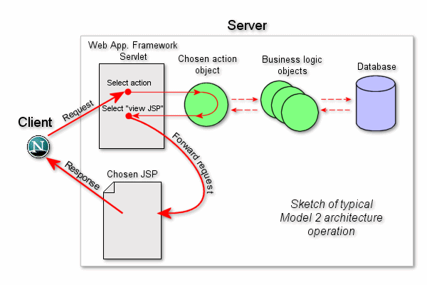

FreeMarker is a template engine: a generic tool to generate text output (HTML web pages, e-mails, configuration files, source code, etc.) based on templates and changing data. It's not an application for end-users in itself, but a Java library, a component that programmers can embed into their products.
Templates are written in the FreeMarker Template Language (FTL). It's a simple, specialized language, not a full-blown programming language like PHP. You are meant to prepare the data to display in a real programming language, like issue database queries and do business calculations, and then the template displays that already prepared data. In the template you are focusing on how to present the data, and outside the template you are focusing on what data to present.
This approach is often referred to as the MVC (Model View Controller) pattern, and is particularly popular for dynamic web pages. It helps in separating web page designers (HTML authors) from developers (Java programmers usually). Designers won't face complicated logic in templates, and can change the appearance of a page without programmers having to change or recompile code.
While FreeMarker was originally created for generating HTML pages in MVC web application frameworks, it isn't bound to servlets or HTML or anything web-related. It's used in non-web application environments as well.
FreeMarker is Free, released under the Apache License, Version 2.0.
Disclaimer:Apache FreeMarker is an effort undergoing incubation at The Apache Software Foundation (ASF), sponsored by the Apache Incubator. Incubation is required of all newly accepted projects until a further review indicates that the infrastructure, communications, and decision making process have stabilized in a manner consistent with other successful ASF projects. While incubation status is not necessarily a reflection of the completeness or stability of the code, it does indicate that the project has yet to be fully endorsed by the ASF.
This chapter is a very rough introduction to FreeMarker. The chapters after this will go over things in much greater detail. Nonetheless, once you have read this chapter, you will be able to write simple but useful FreeMarker templates.
Let's assume that you need a HTML page on a website, similar to this:
<html>
<head>
<title>Welcome!</title>
</head>
<body>
<h1>Welcome John Doe!</h1>
<p>Our latest product:
<a href="products/greenmouse.html">green mouse</a>!
</body>
</html>But the user's name ("John Doe" above) depends on who the logged-in user is, and the latest product information should come from a database. Because this data changes, you cannot you cannot use static HTML. Instead, you can use a template of the desired output. The template is the same as the static HTML would be, except that it contains some instructions to FreeMarker that makes it dynamic:
<html>
<head>
<title>Welcome!</title>
</head>
<body>
<h1>Welcome ${user}!</h1>
<p>Our latest product:
<a href="${latestProduct.url}">${latestProduct.name}</a>!
</body>
</html>The template is stored on the Web server, usually just like the static HTML page would be. But whenever someone visits this page, FreeMarker will step in and transform the template on-the-fly to plain HTML by replacing the ${...}-s with up-to-date content, and send the result to the visitor's Web browser. So the visitor's Web browser will receive something like the first example HTML (i.e., plain HTML without FreeMarker instructions), and it will not perceive that FreeMarker is used on the server. (Of course, the template file stored on the Web server is not changed by this; the substitutions only appear in the Web server's response.)
Note that the template doesn't contain the programming logic to find out who the current visitor is, or to query the database to get the latest product. The data to be displayed is prepared outside FreeMarker, usually by parts written in some “real” programming language like Java. The template author needn't know how these values were calculated. In fact, the way these values are calculated can be completely changed while the templates can remain exactly the same, and also, the look of the page can be completely changed without touching anything but the template. This separation of presentation logic and business logic can be especially useful when the template authors (designers) and the programmers are different individuals, but also helps managing application complexity if they are the same person. Keeping templates focused on presentation issues (visual design, layout and formatting) is a key for using template engines like FreeMarker efficiently.
data-modelThe totality of data that was prepared for the template is called the data-model. As far as the template author is concerned, the data-model is a tree-like structure (like folders and files on your hard disk), which, in this case, could be visualized as:
(root)
|
+- user = "Big Joe"
|
+- latestProduct
|
+- url = "products/greenmouse.html"
|
+- name = "green mouse"Note
The above is just a visualization; the data-model is not in a textual format, it's from Java objects. For the Java programmers, the root is perhaps a Java object with
getUser()andgetLatestProduct()methods, or maybe a JavaMapwith"user"and"latestProducts"keys. Similarly,latestProductis perhaps a Java Object withgetUrl()andgetName()methods.
Earlier, you have picked values from this data-model, with the user and latestProduct.name expressions. If we go on with the analogy that the data model is like a file system, then “(root)” and latestProduct correspond to directories (folders), and user, url and name are files in those directories.
To recapitulate, a template and a data-model is needed for FreeMarker to generate the output (like the HTML shown first):
Template + data-model = output
As you have seen, the data-model is basically a tree. This tree can be arbitrarily complicated and deep, for example:
(root)
|
+- animals
| |
| +- mouse
| | |
| | +- size = "small"
| | |
| | +- price = 50
| |
| +- elephant
| | |
| | +- size = "large"
| | |
| | +- price = 5000
| |
| +- python
| |
| +- size = "medium"
| |
| +- price = 4999
|
+- message = "It is a test"
|
+- misc
|
+- foo = "Something"The variables that act like directories (the root, animals, mouse, elephant, python, misc) are called hashes. Hashes store other variables (the so called sub variables) by a lookup name (e.g., “animals”, “mouse” or “price”).
The variables that store a single value (size, price, message and foo) are called scalars.
When you want to use a subvariable in a template, you specify its path from the root, and separate the steps with dots. To access the price of a mouse, you start from the root and go into animals, and then go into mouse then go into price. So you write animals.mouse.price.
Another important kind of variables are sequences. They store subvariables like hashes, but here subvariables doesn't have a name, they are just items in a list. For example, in this data-model, animals and misc.fruits are sequences:
(root)
|
+- animals
| |
| +- (1st)
| | |
| | +- name = "mouse"
| | |
| | +- size = "small"
| | |
| | +- price = 50
| |
| +- (2nd)
| | |
| | +- name = "elephant"
| | |
| | +- size = "large"
| | |
| | +- price = 5000
| |
| +- (3rd)
| |
| +- name = "python"
| |
| +- size = "medium"
| |
| +- price = 4999
|
+- misc
|
+- fruits
|
+- (1st) = "orange"
|
+- (2nd) = "banana"To access a subvariable of a sequence you use a numerical index in square brackets. Indexes start from 0 (it's a programmer tradition to start with 0), thus the index of the 1st item is 0, the index of the 2nd item is 1, and so on. So to get the name of the first animal you write animals[0].name. To get the second item in misc.fruits (the string "banana") you write misc.fruits[1]. (In practice, you usually just walk through sequences in order, not caring about the index, but that will be shown later.)
Scalars can be further divided into these categories:
String: Text, that is, an arbitrary sequence of characters such as ''m'', ''o'', ''u'', ''s'', ''e'' above. For example the name-s and size-s are strings above.
Number: It's a numerical value, like the price-s above. The string "50" and the number 50 are two totally different things in FreeMarker. The former is just a sequence of two characters (which happens to be readable as a number for humans), while the latter is a numerical value that you can use in arithmetical calculations.
Date-like: Either a date-time (stores a date with time of the day), or a date (no time of day), or a time (time of day, no date).
Boolean: A true/false (yes/no, on/off, etc.) thing. Like animals could have a protected subvariable, which store if the animal is protected or not.
Summary:
The data-model can be visualized as a tree.
Scalars store a single value. The value can be a string or a number or a date-time/date/time or a boolean.
Hashes are containers that store other variables and associate them with a unique lookup name.
Sequences are containers that store other variables in an ordered sequence. The stored variables can be retrieved via their numerical index, starting from 0.
Note
There are other, more advanced value types that we don't cover here, such as methods and directives.
The simplest template is a plain HTML file (or whatever text file; FreeMarker is not confined to HTML). When the client visits that page, FreeMarker will send that HTML to the client as is. However if you want that page to be more dynamic then you begin to put special parts into the HTML which will be understood by FreeMarker:
${...}: FreeMarker will replace it in the output with the actual value of the expression inside the curly brackets. They are called interpolations.
FTL tags (for FreeMarker Template Language tags): FTL tags are a bit similar to HTML tags, but they are instructions to FreeMarker and will not be printed to the output. The name of these tags start with #. (User-defined FTL tags use @ instead of #, but they are an advanced topic.)
Comments: Comments are similar to HTML comments, but they are delimited by <#-- and -->. Unlike HTML comments, FTL comments won't get into the output (won't be visible in the page source for the visitor), because FreeMarker skips them.
Anything not an FTL tag or an interpolation or comment is considered static text and will not be interpreted by FreeMarker; it is just printed to the output as-is.
With FTL tags you refer to so-called directives. This is the same kind of relationship as between HTML tags (e.g.: <table> and </table>) and HTML elements (e.g., the table element) to which you refer to with the HTML tags. (If you don't understand this difference then consider "FTL tag" and "directive" synonyms.)
Note
You can easily try writing templates on http://freemarker-online.kenshoo.com/
Here we will look at some of the most commonly used directives (but there are much more).
With the if directive you can conditionally skip a section of the template. For example, assume that in the very first example you want to greet your boss, Big Joe, differently than other users:
<html>
<head>
<title>Welcome!</title>
</head>
<body>
<h1>
Welcome ${user}<#if user == "Big Joe">, our beloved leader</#if>!
</h1>
<p>Our latest product:
<a href="${latestProduct.url}">${latestProduct.name}</a>!
</body>
</html>Here you have told FreeMarker that the “, our beloved leader” should be there only if the value of the variable user is equal to the string "Big
Joe". In general, things between <#if
condition> and </#if> tags are skipped if condition is false (the boolean value).
Let's look at condition more closely: == is an operator that tests if the values at its left and right side are equivalent, and the results is a boolean value, true or false accordingly. On the left side of == I have referenced a variable with the syntax that should be already familiar; this will be replaced with the value of the variable. In general, unquoted words inside directives or interpolations are treated as references to variables. On the right side I have specified a literal string. Literal strings in templates must always be put inside quotation marks.
This will print “Pythons are free today!” if their price is 0:
<#if animals.python.price == 0>
Pythons are free today!
</#if>Similarly as earlier when a string was specified directly, here a number is specified directly (0). Note that the number is not quoted. If you quoted it ("0"), FreeMarker would misinterpret it as a string literal, and because the price to compare it to is a number, you get an error.
This will print "Pythons are not free today!" if their price is not 0:
<#if animals.python.price != 0>
Pythons are not free today!
</#if>As you probably guessed, != means “not equals”.
You can write things like this too (using the data-model used to demonstrate hashes):
<#if animals.python.price < animals.elephant.price>
Pythons are cheaper than elephants today.
</#if>With the <#else> tag you can specify what to do if the condition is false. For example:
<#if animals.python.price < animals.elephant.price>
Pythons are cheaper than elephants today.
<#else>
Pythons are not cheaper than elephants today.
</#if>This prints “Pythons are cheaper than elephants today.” if the price of python is less than the price of elephant, or else it prints “Pythons are not cheaper than elephants today.” You can refine this further by using elseif:
<#if animals.python.price < animals.elephant.price>
Pythons are cheaper than elephants today.
<#elseif animals.elephant.price < animals.python.price>
Elephants are cheaper than pythons today.
<#else>
Elephants and pythons cost the same today.
</#if>If you have a variable with boolean value (a true/false thing) then you can use it directly as the condition of if:
<#if animals.python.protected>
Pythons are protected animals!
</#if>This is needed when you want to list something. For example if you merge this template with the data-model used earlier to demonstrate sequences:
<p>We have these animals:
<table border=1>
<#list animals as animal>
<tr><td>${animal.name}<td>${animal.price} Euros
</#list>
</table>then the output will be:
<p>We have these animals:
<table border=1>
<tr><td>mouse<td>50 Euros
<tr><td>elephant<td>5000 Euros
<tr><td>python<td>4999 Euros
</table>The generic form of the list directive is: <#list sequence as
loopVariable>repeatThis</#list>. The repeatThis part will be repeated for each item in the sequence that you have specified with sequence, one after the other, starting from the first item. In all repetitions loopVariable will hold the value of the current item. This variable exists only between the <#list
...> and </#list> tags.
The sequence can be any kind of expression. For example we could list the fruits of the example data model like this:
<ul>
<#list misc.fruits as fruit>
<li>${fruit}
</#list>
</ul>The misc.fruits expression should be familiar to you; it references a variable in the data-model.
A problem with the above example is that if we happen to have 0 fruits, it will still print an empty <ul></ul> instead of just nothing. To avoid that, you can use this form of list:
<#list misc.fruits>
<ul>
<#items as fruit>
<li>${fruit}
</#items>
</ul>
</#list>Here, the list directive represents the listing as a whole, and only the part inside the items directive is repeated for each fruit. If we have 0 fruits, everything inside list is skipped, hence we will not have ul tags in case.
Another frequent listing-related task: let's list the fruits separating them with something, like a comma:
<p>Fruits: <#list misc.fruits as fruit>${fruit}<#sep>, </#list><p>Fruits: orange, bananaThe section covered by sep (which we could be written like this too: ...<#sep>,
</#sep></#list>) will be only executed when there will be a next item. Hence there's no comma after the last fruit.
Here again, what if we have 0 fruits? Just printing “Fruits:” and then nothing is awkward. A list, just like an if, can have an else, which is executed if there were 0 list items:
<p>Fruits: <#list misc.fruits as fruit>${fruit}<#sep>, <#else>None</#list>Note
As a matter of fact, this simplistic example could be written like this, but it uses language devices that are off topic here:
<p>Fruits: ${fruits?join(", ", "None")}
All these directives (list, items, sep, else) can be used together:
<#list misc.fruits>
<p>Fruits:
<ul>
<#items as fruit>
<li>${fruit}<#sep> and</#sep>
</#items>
</ul>
<#else>
<p>We have no fruits.
</#list>Note
You can read more about these directives in the Reference.
With the include directive you can insert the content of another file into the template.
Suppose you have to show the same copyright notice on several pages. You can create a file that contains the copyright notice only, and insert that file everywhere where you need that copyright notice. Say, you store this copyright notice in copyright_footer.html:
<hr>
<i>
Copyright (c) 2000 <a href="http://www.acmee.com">Acmee Inc</a>,
<br>
All Rights Reserved.
</i>Whenever you need that file you simply insert it with the include directive:
<html>
<head>
<title>Test page</title>
</head>
<body>
<h1>Test page</h1>
<p>Blah blah...
<#include "/copyright_footer.html">
</body>
</html>and the output will be:
<html>
<head>
<title>Test page</title>
</head>
<body>
<h1>Test page</h1>
<p>Blah blah...
<hr>
<i>
Copyright (c) 2000 <a href="http://www.acmee.com">Acmee Inc</a>,
<br>
All Rights Reserved.
</i>
</body>
</html>If you change the copyright_footer.html, then the visitor will see the new copyright notice on all pages.
Note
A much more powerful way of reusing snippets is using macros, but that's an advanced topic discussed later.
You can use directives as many times on a page as you want, and you can nest directives into each other freely. For example, here you nest if directive inside a list directive:
<#list animals as animal>
<div<#if animal.protected> class="protected"</#if>>
${animal.name} for ${animal.price} Euros
</div>
</#list>Note that since FreeMarker does not interpret text outside FTL tags, interpolations and FTL comments, above you could use the FTL tags inside HTML attributes without problem.
The so-called built-ins are like subvariables (or rather like methods, if you know that Java term) that aren't coming from the data-model, but added by FreeMarker to the values. In order to make it clear where subvariables comes from, you have to use ? (question mark) instead of . (dot) to access them. Examples with some of the most commonly used built-ins:
user?upper_case gives the upper case version of the value of user (like “JOHN DOE” instead of “John Doe”)
animal.name?cap_first give the animal.name with its first letter converted to upper case (like “Mouse” instead of “mouse”)
user?length gives the number of characters in the value of user (8 for “John Doe”)
animals?size gives the number of items in the animals sequence (3 in our example data-model)
If you are between <#list animals as
animal> and the corresponding </#list> tag:
animal?index gives the 0-based index of animal inside animals
animal?counter is like index, but gives the 1-based index
animal?item_parity gives the strings “odd” or “even”, depending on the current counter parity. This is commonly used for coloring rows with alternating colors, like in <td
class="${animal?item_parity}Row">.
Some built-ins require parameters to specify the behavior more, for example:
animal.protected?string("Y", "N") return the string “Y” or “N” depending on the boolean value of animal.protected.
animal?item_cycle('lightRow',
'darkRow') is the more generic variant of item_parity from earlier.
fruits?join(", "): converts the list to a string by concatenating items, and inserting the parameter separator between each items (like “orange, banana”)
user?starts_with("J") gives boolean true of false depending on if user starts with the letter “J” or not.
Built-in applications can be chained, like fruits?join(", ")?upper_case will first convert the list a to a string, then converts it to upper case. (This is just like you can chain .-s (dots) too.)
You can find the full set of built-ins in the Reference.
The data-model often has variables that are optional (i.e., sometimes missing). To spot some typical human mistakes, FreeMarker doesn't tolerate references to missing variables unless you tell explicitly what to do if the variable is missing. Here we will show the two most typical ways of doing that.
Note for programmers: A non-existent variable and a variable with null value is the same for FreeMarker. The "missing" term used here covers both cases.
Wherever you refer to a variable, you can specify a default value for the case the variable is missing by following the variable name with a ! and the default value. Like in the following example, when user is missing from data model, the template will behave like if user's value were the string "visitor". (When user isn't missing, this template behaves exactly like with ${user}):
<h1>Welcome ${user!"visitor"}!</h1>You can ask whether a variable isn't missing by putting ?? after its name. Combining this with the already introduced if directive you can skip the whole greeting if the user variable is missing:
<#if user??><h1>Welcome ${user}!</h1></#if>Regarding variable accessing with multiple steps, like animals.python.price, writing animals.python.price!0 is correct only if animals.python is never missing and only the last subvariable, price, is possibly missing (in which case here we assume it's 0). If animals or python is missing, the template processing will stop with an "undefined variable" error. To prevent that, you have to write (animals.python.price)!0. In that case the expression will be 0 even if animals or python is missing. Same logic goes for ??; animals.python.price?? versus (animals.python.price)??.
Let's say the template generates HTML, and you insert values with ${...} that are plain text (not HTML), like company names coming from a database. Characters that has special meaning in HTML must be escaped in such values, like if name is “Someone & Co.” then ${name} should print “Someone & Co.”.
FreeMarker automatically escapes all values printed with ${...} if it's properly configured (that's the responsibility of the programmers; see here how). The recommended practice is using ftlh file extension to activate HTML auto-escaping, and ftlx file extension to activate XML auto-escaping.
You can try if auto-escaping is on like ${"<"} and then checking the raw output (for HTML or XML escaping). If it's not, and the configuration won't be adjusted, add this as the very first line of the template:
<#ftl output_format="HTML">(Use "XML" instead of "HTML" above if you generate XML.)
If the string value to print deliberately contains markup, auto-escaping must be prevented like ${value?no_esc}.
You can find out much more about auto-escaping and output formats here...
Note
The kind of automatic escaping described here requires at least FreeMarker 2.3.24. If you have to use an earlier version, use the deprecated
escapedirective instead.
Note
It is assumed that you have already read the Getting Started chapter.
Understanding the concept of values and types is crucial for the understanding of data-models. However, the concept of values and types is not confined to data-models, as you will see.
Real programmers can safely skip this section.
Examples of values as you know the term from the everyday math are 16, 0.5, and so on, i.e. numbers. In the case of computer languages the value term has a wider meaning, as a value needn't be a number. For example, take this data-model:
(root)
|
+- user = "Big Joe"
|
+- today = Jul 6, 2007
|
+- todayHoliday = false
|
+- lotteryNumbers
| |
| +- (1st) = 20
| |
| +- (2nd) = 14
| |
| +- (3rd) = 42
| |
| +- (4th) = 8
| |
| +- (5th) = 15
|
+- cargo
|
+- name = "coal"
|
+- weight = 40We say that the value of the the user variable is "Big Joe" (a string), the value of today is Jul 6, 2007 (a date), the value of todayHoliday is false (a boolean, ie. a yes/no thing). The value of lotteryNumbers is the sequence that contains 20, 14, 42, 8, 15. Surely lotteryNumbers is multiple values in the sense that it contains multiple values (for example, the 2nd item in it is a the value 14), but still, lotteryNumbers itself is a single value. It's like a box that contains many other items; the whole box can be seen as a single item. Last not least we also have the value of cargo, which is a hash (a box-like thing again).So, a value is something that can be stored in a variable (e.g., in user or cargo or cargo.name). But a value need not be stored in a variable to be called a value, for example we have the value 100 here:
<#if cargo.weight < 100>Light cargo</#if>The temporaly result of a calculations are also called values, like 20 and 120 when this template is executed (it will print 120):
${cargo.weight / 2 + 100}Explanation for this last: As the result of dividing the two values, 40 (the weight of the cargo) and 2, a new value 20 is created. Then 100 is added to it, so the value 120 is created. Then 120 is printed (${...}), and the template execution goes on and all these values gone.
Certainly now you feel what the value term means.
Values have an important aspect, their type. For example the type of the value of the user variable is string, and the type of the value of the lotteryNumbers variable is sequence. The type of a value is important because it determines to a large extent how and where you can use the value. Like ${user / 2} is an error, but ${cargo.weight / 2} works and prints 20, since division only does make sense for a number, but not for a string. Or, using dot like in cargo.name does make sense only if cargo is a hash. Or, you can list with <#list ...> sequences only. Or, the condition of <#if
...> must be a boolean. And so on.
Note
A little terminology... Saying "a boolean" or "a boolean value" or "a value of type boolean" are all the same.
Multi-typed valueA value can have multiple types at the same time, although it's rarely utilized. For example in the data-model below mouse is both a string and a hash:
(root)
|
+- mouse = "Yerri"
|
+- age = 12
|
+- color = "brown"If you merge this template with the above data-model:
${mouse} <#-- uses mouse as a string -->
${mouse.age} <#-- uses mouse as a hash -->
${mouse.color} <#-- uses mouse as a hash -->the output will be:
Yerri
12
brownLooking at the various data-model examples you may already realized: the thing marked as "(root)" is just a value of type hash. When you write something like user, that means that you want the "user" variable stored in the root hash. Like if you were writing root.user, except that there is no variable called "root" so that wouldn't work.
Some may get confused by the fact that our example data-model, that is, the root hash, contains further hashes and sequences (lotteryNumbers and cargo). There is nothing special in that. A hash contains other variables, and those variables have a value, which can be a string, a number, etc., and of course it can be a hash or sequence as well. Because, as it was explained earlier, a sequence or a hash is just a value, like a string or a number is.
The suppored types are:
String
Number
Boolean
Date-like (date, time, or date-time)
Hash
Sequence
Collection
Subroutines:
Miscellaneous/seldom used:
These are the basic, simple kind of values. They can be:
string the FTL value typeString: It is simple text, e.g., the name of a product.
If you want to give a string value directly in the template, rather than use a variable that comes from the data model, you write the text between quotation marks, e.g., "green mouse" or 'green
mouse'. (More details regarding the syntax can be found later.)
number the FTL value typeNumber: For example the price of a product. Whole numbers and non-whole numbers are not distinguished; there is only a single number type. So for example 3/2 will be always 1.5, and never 1. Just like if you are using a calculator.
If you want to give a numerical value directly in the template, then you write for example: 150 or -90.05 or 0.001. (More details regarding the syntax can be found later.)
boolean the FTL value typeBoolean: A boolean value represents a logical true or false (yes or no). For example, if a the visitor has been logged in or not. Typically you use booleans as the condition of the if directive, like <#if
loggedIn
>...</#if> or <#if price ==
0>...</#if>; in the last case the result of the price == 0 part is a boolean value.
In the templates you can directly specify a boolean with the reserved words true and false.
date the FTL value typetime the FTL value typedate-time the FTL value typeDate: A date-like value stores date/time related data. It has three variations:
Date: Like April 4, 2003. Day precision, no time of day part.
Time: Like 10:19:18 PM. Millisecond precision, no date part.
Date-time (sometimes called "time stamp") as April 4, 2003 10:19:18 PM. Both date and time, with millisecond precision.
Unfortunately, because of the limitations of the Java platform, FreeMarker sometimes can't decide which parts of the date are in use (i.e., if it is date-time, a date or a time). The solution for this problem is an advanced topic that will be discussed later.
It is possible to define date-like values directly in templates, but this is an advanced topic that will be explained later.
Bear in mind that FreeMarker distinguishes strings from numbers, booleans and date-like values. For example, while the string "150" looks like the number 150, a string is still just arbitrary sequence of characters, and you can't do arithmetic with it, can't compare it with another number, etc.
These are the values whose purpose is to contain other variables; they are just containers. The contained variables are often referred as sub variables. The container types are:
hash the FTL value typeHash: Associates a unique lookup name with each of its sub variables. The name is an unrestricted string. A hash doesn't define an ordering for the sub variables in it. That is, there is no such thing as the first subvariable, and the second subvariable, etc.; the variables are just accessed by name.
sequence the FTL value typeSequence: Associates an integer number with each of its sub variables. The first subvariable is associated with 0, the second with 1, the third to 2, and so on; the sub variables are ordered. These numbers are often called the indexes of the sub variables. Sequences are usually dense, i.e., all indexes up to the index of the last subvariable have an associated subvariable, but it's not strictly necessary. The type of the subvariable values need not be the same.
collection the FTL value typeCollection: A collection, from the viewpoint of the template author, is a restricted sequence. You cannot access its size or retrieve its sub variables by index, but they can be still listed with the list directive.
Note that since a value can have multiple types, it is possible for a value to be both a hash and a sequence, in which case it would support index-based access as well as access by lookup name. However, typically a container will be either a hash or a sequence, not both.
As the value of the variables stored in hashes and sequences (and collections) can be anything, it can be a hash or sequence (or collection) as well. This way you can build arbitrarily deep structures.
The data-model itself (or better said the root of it) is a hash.
FreeMarker templates don't support modifying the contents of containers (such as adding, removing or replacing sub variables), and it assumes that their content won't change during template processing. (But you can make new container values by adding together two existing container values with +; see that in the chapter about expressions, and please note the performance consequences.)
A value that is a method or a function is used to calculate another value, influenced by the parameters you give to it.
For programmer types: Methods/functions are first-class values, just like in functional programming languages. This means that functions/methods can be the parameters or return values of other functions/methods, you can assign them to variables, and so on.
Suppose that programmers have put the method variable avg in the data-model that can be used to calculate the average of numbers. If you give the 3 and 5 as parameters when you access avg, then you get the value 4.
The usage of methods will be explained later, but perhaps this example helps to understand what methods are:
The average of 3 and 5 is: ${avg(3, 5)}
The average of 6 and 10 and 20 is: ${avg(6, 10, 20)}
The average of the price of a python and an elephant is:
${avg(animals.python.price, animals.elephant.price)}this will output:
The average of 3 and 5 is: 4
The average of 6 and 10 and 20 is: 12
The average of the price of a python and an elephant is:
4999.5What is the difference between a method and a function? As far as the template author is concerned, nothing. Well not really nothing, as methods typically come from the data-model (as they reflect the methods of Java objects), and functions are defined in templates (with the function directive -- an advanced topic), but both can be used on the same way.
A value of this type can be used as user-defined directive (with other words, as FreeMarker tag). An user-defined directive is a subroutine, something like a little reusable template fragment. But this is an advanced topic that will be explained later in its own chapter.
For programmer types: user-defined directives (such as macros), are first-class values too, just like functions/methods are.
Just to get an idea about user-defined directives (so just ignore this if you won't understand), assume we have a variable, box, whose value is a user-defined directive that prints some kind of fancy HTML message box with a title bar and a message in it. The box variable could be used in the template like this (for example):
<@box title="Attention!">
Too much copy-pasting may leads to
maintenance headaches.
</@box>This is for advanced users again (so ignore it if you don't understand). It's a frequent dilemma if you should use a function/method or an user-defined directive to implement something. The rule of thumb is: Implement the facility as user-defined directive instead of as function/method if:
... the purpose of it is generating a piece of the output that's not just a single value, and typically involves markup. The template language was designed for printing to the output directly, piece by piece, as it goes though list loops, if-s, etc. Building up a string value in a variable then returning it is much less convenient.
... it's the side-effect that is important and not the return value. For example, a directive whose purpose is to add an entry to the server log is like that. (In fact you can't have a return value for a user-defined directive, but some kind of feedback is still possible by setting non-local variables.)
... it will do flow control on the caller side (like for example list or if directives do). You just can't do that with a function/method.
... you are using legacy escaping via the escape directive (instead of auto-escaping), and the result contains markup. When you print the result with ${...}, the markup will be escaped and thus ruined, but if it's printed by a directive call (<@...>), it won't be.
The Java methods of FreeMarker-unaware Java objects are normally visible as methods in templates, regardless of the nature of the Java method; you have no choice there.
Node variables represent a node in a tree structure, and are used mostly with XML processing, which is an advanced, and specialized topic.
Still, a quick overview for advanced users: A node is similar to a sequence that stores other nodes, which are often referred as the children nodes. A node stores a reference to its container node, which is often referred as the parent node. The main point of being a node is the topological information; other data must be stored by utilizing that a value can have multiple types. Like, a value may be both a node and a number, in which case it can store a number as the "pay-load". Apart from the topological information, a node can store some metainformation as well: a node name, a node type (string), and a node namespace (string). For example, if the node symbolizes a h1 element in an XHTML document, then its name could be "h1", it's node type could be "element", and it's namespace could be "http://www.w3.org/1999/xhtml". But it's up to the designer of the data-model if what meaning these metainformations have, and if they are used at all. The way of retrieving the topological and metainformations is described in a later chapter (that you don't have to understand at this point).
This type is related to auto-escaping mechanism introduced FreeMarker 2.3.24; you can read about this type there. But in short, this is a value that stores text that's already in the output markup format (like HTML, XML, RTF, etc.), and hence must not be auto-escaped.
Values of this type are usually produced inside the templates (like with no_esc built-in or output capturing assignments), but can also be part of the data-model. Such values in the data-model are useful for example if you have message resources that sometimes contain the message in HTML format, rather than in plain text. If the data-model uses HTML markup output values for those messages instead of strings, then the template author need not know which messages contain HTML and which plain text, as double escaping will be avoided automatically when the message is inserted with ${...}.
Note
It is assumed that you have already read the Getting Started and the Values, Types chapter.
Templates are in fact programs you write in a language called FTLFTL (for FreeMarker Template Language). This is a quite simple programming language designed for writing templates and nothing else.
A template (= FTL program) is a mix of the following sections:
Texttext: Text that will be printed to the output as is.
Interpolationinterpolation: These sections will be replaced with a calculated value in the output. Interpolations are delimited by ${ and } (or with #{ and }, but that shouldn't be used anymore; see more here).
FTL tagsFTL tag: FTL tags are a bit similar to HTML tags, but they are instructions to FreeMarker and will not be printed to the output.
Commentscomment<#--...-->#: Comments are similar to HTML comments, but they are delimited by <#-- and -->. Comments will be ignored by FreeMarker, and will not be written to the output.
Let's see a concrete template. I have marked the template's components with colors: text, interpolation, FTL tag, comment. With the [BR]-s I intend to visualize the line breaks.
<html>[BR]
<head>[BR]
<title>Welcome!</title>[BR]
</head>[BR]
<body>[BR]
<#-- Greet the user with his/her name -->[BR]
<h1>Welcome ${user}!</h1>[BR]
<p>We have these animals:[BR]
<ul>[BR]
<#list animals as animal>[BR]
<li>${animal.name} for ${animal.price} Euros[BR]
</#list>[BR]
</ul>[BR]
</body>[BR]
</html>FTL distinguishes upper case and lower case letters. So list is good directive name, while List is not. Similarly ${name} is not the same as ${Name} or ${NAME}
It is important to realize that interpolations can be used in text (and in string literal expressions; see later) only.
An FTL tag can't be inside another FTL tag nor inside an interpolation. For example this is WRONG: <#if <#include
'foo'>='bar'>...</#if>
Comments can be placed inside FTL tags and interpolations. For example:
<h1>Welcome ${user <#-- The name of user -->}!</h1>[BR]
<p>We have these animals:[BR]
<ul>[BR]
<#list <#-- some comment... --> animals as <#-- again... --> animal>[BR]
...Note
For those of you who have tried the above examples: You may notice that some of spaces, tabs and line breaks are missing from the template output, even though we said that text is printed as is. Don't bother with it now. This is because the feature called ''white-space stripping'' is turned on, and that automatically removes some superfluous spaces, tabs and line breaks. This will be explained later.
directiveYou use FTL tags to call directives. In the example you have called the list directive. Syntactically you have done it with two tags: <#list animals as animal> and </#list>.
FTL tagThere are two kind of FTL tags:
Start-tag: <#directivename
parameters>
End-tag: </#directivename>
This is similar to HTML or XML syntax, except that the tag name starts with #. If the directive doesn't have nested content (content between the start-tag and the end-tag), you must use the start-tag with no end-tag. For example you write <#if
something>...</#if>, but just <#include
something> as FreeMarker knows that the include directive can't have nested content.
The format of the parameters depends on the directivename.
In fact there are two types of directives: predefined directives and user-defined directives. For user-defined directives you use @ instead of #, for example <@mydirective
parameters>...</@mydirective>. Further difference is that if the directive has no nested content, you must use a tag like <@mydirective
parameters />, similarly as in XML (e.g. <img ...
/>). But user-defined directives is an advanced topic that will be discussed later.
FTL tags, like HTML tags, must be properly nested. So the code below is wrong, as the if directive is both inside and outside of the nested content of the list directive:
<ul>
<#list animals as animal>
<li>${animal.name} for ${animal.price} Euros
<#if user == "Big Joe">
(except for you)
</#list> <#-- WRONG! The "if" has to be closed first. -->
</#if>
</ul>Note that FreeMarker doesn't care about the nesting of HTML tags, only about the nesting of FTL tags. It just sees HTML as flat text, it doesn't interpret it in any way.
If you try to use a non-existing directive (e.g., you mistype the directive name), FreeMarker will decline to use the template and produce an error message.
FreeMarker ignores superfluous white-space inside FTL tags. So you can write this:
<#list[BR]
animals as[BR]
animal[BR]
>[BR]
${animal.name} for ${animal.price} Euros[BR]
</#list >You may not, however, insert white-space between the < or </ and the directive name.
The complete list and description of all directives can be found in the Directive Reference (but I recommend that you look at the chapter about expressions first).
Note
FreeMarker can be configured to use
[and]instead of<and>in the FTL tags and FTL comments, like[#if user == "Big Joe"]...[/#if]. For more information read: section_title.
Note
FreeMarker can be configured so that it understands predefined directives without
#(like<if user == "Big Joe">...</if>). However we don't recommend the usage of this mode. For more information read: section_title
expressionWhen you supply values for interpolations or directive parameters you can use variables or more complex expressions. For example, if x is the number 8 and y is 5, the value of (x +
y)/2 resolves to the numerical value 6.5.
Before we go into details, let's see some concrete examples:
When you supply value for interpolations: The usage of interpolations is ${expression} where expression gives the value you want to insert into the output as text. So ${(5 + 8)/2} prints “6.5” to the output (or possibly “6,5” if the language of your output is not US English).
When you supply a value for the directive parameter: You have already seen the if directive in the Getting Started section. The syntax of this directive is: <#if
expression>...</#if>. The expression here must evaluate to a boolean value. For example in <#if 2 < 3> the 2 <
3 (2 is less than 3) is an expression which evaluates to true.
This is a reminder for those of you who already know FreeMarker or are just experienced programmers:
Top-level variables: user
Retrieving data from a hash: user.name, user["name"]
Retrieving data from a sequence: products[5]
Special variable: .main
Interpolation and concatenation: "Hello ${user}!" (or "Hello
" + user + "!")
Getting a character: name[0]
String slice: Inclusive end: name[0..4], Exclusive end: name[0..<5], Length-based (lenient): name[0..*5], Remove starting: name[5..]
Concatenation: users + ["guest"]
Sequence slice: Inclusive end: products[20..29], Exclusive end: products[20..<30], Length-based (lenient): products[20..*10], Remove starting: products[20..]
Concatenation: passwords + { "joe": "secret42" }
Arithmetical calculations: (x * 1.5 + 10) / 2 - y %
100
Comparison: x == y, x != y, x < y, x > y, x >= y, x <= y, x lt y, x lte y, x gt y, x gte y, ...etc.
Logical operations: !registered && (firstVisit
|| fromEurope)
Built-ins: name?upper_case, path?ensure_starts_with('/')
Method call: repeat("What", 3)
Missing value handler operators:
Default value: name!"unknown" or (user.name)!"unknown" or name! or (user.name)!
Missing value test: name?? or (user.name)??
Assignment operators: =, +=, -=, *=, /=, %=, ++, --
See also: Operator precedence
Often you want to specify a value directly and not as a result of some calculations.
To specify a string value directly you give the text in quotation marks, e.g.: "some text" or in apostrophe-quote, e.g. 'some text'. The two forms are equivalent. If the text itself contains the character used for the quoting (either " or ') or backslashes, you have to precede them with a backslash; this is called escaping. You can type any other character, including line breaks, in the text directly. Example:
${"It's \"quoted\" and
this is a backslash: \\"}
${'It\'s "quoted" and
this is a backslash: \\'}will print:
It's "quoted" and
this is a backslash: \
It's "quoted" and
this is a backslash: \escape sequencesNote
Of course, you could simply type the above text into the template, without using
${...}. But we do it here just for the sake of example, to demonstrate expressions.
This is the list of all supported escape sequences. All other usage of backlash in string literals is an error and any attempt to use the template will fail.
| Escape sequence | Meaning |
|---|---|
\" |
Quotation mark (u0022) |
\' |
Apostrophe (a.k.a. apostrophe-quote) (u0027) |
\{ |
Opening curly brace: { |
\\ |
Back slash (u005C) |
\n |
Line feed (u000A) |
\r |
Carriage return (u000D) |
\t |
Horizontal tabulation (a.k.a. tab) (u0009) |
\b |
Backspace (u0008) |
\f |
Form feed (u000C) |
\l |
Less-than sign: < |
\g |
Greater-than sign: > |
\a |
Ampersand: & |
\xCode |
Character given with its hexadecimal Unicode code (UCS code) |
The Code after the \x is 1 to 4 hexadecimal digits. For example this all put a copyright sign into the string: "\xA9 1999-2001", "\x0A9 1999-2001", "\x00A9 1999-2001". When the character directly after the last hexadecimal digit can be interpreted as hexadecimal digit, you must use all 4 digits or else FreeMarker will misunderstand you.
Note that the character sequence ${ (and #{) has special meaning. It's used to insert the value of expressions (typically: the value of variables, as in "Hello ${user}!"). This will be explained later. If you want to print ${ or #{, you should either use raw string literals as explained below, or escape the { like in "foo $\{bar}".
A special kind of string literals is the raw string literals. In raw string literals, backslash and ${ have no special meaning, they are considered as plain characters. To indicate that a string literal is a raw string literal, you have to put an r directly before the opening quotation mark or apostrophe-quote. Example:
${r"${foo}"}
${r"C:\foo\bar"}will print:
${foo}
C:\foo\barTo specify a numerical value directly you type the number without quotation marks. You have to use the dot as your decimal separator and must not use any grouping separator symbols. You can use - or + to indicate the sign (+ is redundant). Scientific notation is not yet supported (so 1E3 is wrong). Also, you cannot omit the 0 before the decimal separator (so .5 is wrong).
Examples of valid number literals: 0.08, -5.013, 8, 008, 11, +11
Note that numerical literals like 08, +8, 8.00 and 8 are totally equivalent as they all symbolize the number eight. Thus, ${08}, ${+8}, ${8.00} and ${8} will all print exactly same.
To specify a boolean value you write true or false. Don't use quotation marks.
To specify a literal sequence, you list the sub variables separated by commas, and put the whole list into square brackets. For example:
<#list ["foo", "bar", "baz"] as x>
${x}
</#list>will print:
foo
bar
baz
The items in the list are expressions, so you can do this for example: [2 + 2, [1, 2, 3, 4], "foo"]. Here the first subvariable will be the number 4, the second will be another sequence, and the third subvariable will be the string “foo”.
Ranges are just sequences, but they are created by specifying what range of whole numbers they contain, instead of specifying their items one by one. For example, 0..<m, assuming the m variable stores 5, will give a sequence that contains [0,
1, 2, 3, 4]. Ranges are primarily used for iterating over a range of numbers with <#list
...> and for slicing sequences and slicing strings.
The generic forms of range expressions are (where start and end can be any expression that evaluates to a number):
start..end: Range with inclusive end. For example, 1..4 gives [1, 2, 3, 4], and 4..1 gives [4, 3, 2, 1]. Beware, ranges with inclusive end never give an empty sequence, so 0..length-1 is WRONG, because when length is 0 it gives [0,
-1].
start..<end or start..!end: Range with exclusive end. For example, 1..<4 gives [1, 2,
3], 4..<1 gives [4,
3, 2], and 1..<1 gives []. Note the last example; the result can be an empty sequence. There's no difference between ..< and ..!; the last form is used in applications where using the < character causes problems (for HTML editors and such).
start..*length: Length limited range. For example, 10..*4 gives [10, 11, 12, 13], 10..*-4 gives [10, 9, 8,
7], and 10..*0 gives []. When these kind of ranges are used for slicing, the slice will end without error if the end of the sliced sequence or string is reached before the specified range length was reached; see slicing sequences for more.
Note
Length limited ranges were introduced in FreeMarker 2.3.21.
start..: Right-unbounded range. This are like length limited ranges with infinite length. For example 1.. gives [1, 2, 3, 4, 5, 6, ... ], up to infinity. Be careful when processing (like listing) such ranges, as processing all items of it it would take forever or until the application runs out of memory and crashes. Just like with length limited ranges, when these kind of ranges are used for slicing, the slice will end when the end of the sliced sequence or string is reached.
Warning
Right-unbounded ranges before FreeMarker 2.3.21 were only used for slicing, and behaved like an empty sequence for other purposes. To activate the new behavior, it's not enough to use FreeMarker 2.3.21, the programmer also have to set the
incompatible_improvementsconfiguration setting to at least 2.3.21.
Further notes on ranges:
Range expressions themselves don't have square brackets, for example, you write <#assign myRange =
0..<x, NOT <#assign myRange =
[0..<x]>. The last would create a sequence that contains an item that's a range. The square brackets are part of the slicing syntax, like seq[myRange].
You can write arithmetical expression on the sides of the .. without parenthesis, like n
+ 1 ..< m / 2 - 1.
.., ..<, ..! and ..* are operators, so you can't have space inside them. Like n .. <m is WRONG, but n ..<
m is good.
The reported size of right-unbounded ranges is 2147483647 (or 0 if incompatible_improvements is less than 2.3.21) due to a technical limitation (32 bits). However, when listing them, their actual size is infinite.
Ranges don't really store the numbers they consist of, thus for example 0..1 and 0..100000000 is equally fast to create and takes the same amount of memory.
To specify a hash in a template, you list the key/value pairs separated by commas, and put the list into curly brackets. The key and value within a key/value pair are separated with a colon. Here is an example: { "name": "green mouse",
"price": 150 }. Note that both the names and the values are expressions. The keys must be strings. The values can be if any type.
To access a top-level variable, you simply use the variable name. For example, the expression user will evaluate to the value of variable stored with name “user” in the root. So this will print what you store there:
${user}If there is no such top-level variable, then an error will result when FreeMarker tries to evaluate the expression, and it aborts template processing (unless programmers has configured FreeMarker differently).
In this kind of expression, the variable name can only contain letters (including non-Latin letters), digits (including non-Latin digits), underline (_), dollar ($), at sign (@). Furthermore, the first character can't be a ASCII digit (0-9). Starting from FreeMarker 2.3.22, the variable name can also contain minus (-), dot (.), and colon (:) at any position, but these must be escaped with a preceding backslash (\), or else they would be interpreted as operators. For example, to read the variable whose name is “data-id”, the expression is data\-id, as data-id would be interpreted as “data minus id”. (Note that these escapes only work in identifiers, not in string literals.)
If we already have a hash as a result of an expression, then we can get its subvariable with a dot and the name of the subvariable. Assume that we have this data-model:
(root)
|
+- book
| |
| +- title = "Breeding green mouses"
| |
| +- author
| |
| +- name = "Julia Smith"
| |
| +- info = "Biologist, 1923-1985, Canada"
|
+- test = "title"Now we can read the title with book.title, since the book expression will return a hash (as explained in the last chapter). Applying this logic further, we can read the name of the author with this expression: book.author.name.
There is an alternative syntax if we want to specify the subvariable name with an expression: book["title"]. In the square brackets you can give any expression as long as it evaluates to a string. So with this data-model you can also read the title with book[test]. More examples; these are all equivalent: book.author.name, book["author"].name, book.author["name"], book["author"]["name"].
When you use the dot syntax, the same restrictions apply regarding the variable name as with top-level variables (name can contain only letters, digits, _, $, @ but can't start with 0-9, also starting from 2.3.22 you can also use \-, \. and \:). There are no such restrictions when you use the square bracket syntax, since the name is the result of an arbitrary expression. (Note, that to help the FreeMarker XML support, if the subvariable name is * (asterisk) or **, then you do not have to use square bracket syntax.)
As with the top-level variables, trying to access a non-existent subvariable causes an error and aborts the processing of the template (unless programmers has configured FreeMarker differently).
This is the same as for hashes, but you can use the square bracket syntax only, and the expression in the brackets must evaluate to a number, not a string. For example to get the name of the first animal of the example data-model (remember that the number of the first item is 0, not 1): animals[0].name
Special variables are variables defined by the FreeMarker engine itself. To access them, you use the .variable_name syntax.
Normally you don't need to use special variables. They are for expert users. The complete list of special variables can be found in the reference.
If you want to insert the value of an expression into a string, you can use ${...} (and the deprecated #{...}) in string literals. ${...} in string literals behaves similarly as in text sections (so it goes through the same locale sensitive number and date/time formatting).
Example (assume that user is “Big Joe”):
<#assign s = "Hello ${user}!">
${s} <#-- Just to see what the value of s is -->This will print:
Hello Big Joe!Warning
A frequent mistake of users is the usage of interpolations in places where they needn't/shouldn't/can't be used. Interpolations work only in text sections (e.g.
<h1>Hello ${name}!</h1>) and in string literals (e.g.<#include "/footer/${company}.html">). A typical WRONG usage is<#if ${big}>...</#if>, which will cause a syntactical error. You should simply write<#if big>...</#if>. Also,<#if "${big}">...</#if>is WRONG, since it converts the parameter value to string and theifdirective wants a boolean value, so it will cause a runtime error.
Alternatively, you can use the + operator to achieve similar result:
<#assign s = "Hello " + user + "!">This gives the same result as the earlier example with the ${...}.
Warning
Because
+follows similar rules as${...}, the appended string is influenced by thelocale,number_format,date_format,time_format,datetime_formatandboolean_format, etc. settings, and thus the result targets humans and isn't in generally machine parseable. This mostly leads to problems with numbers, as many locales use grouping (thousands separators) by default, and so"someUrl?id=" + idbecomes to something like"someUrl?id=1 234". To prevent this, use the?c(for Computer audience) built-in, like in"someUrl?id=" + id?cor"someUrl?id=${id?c}", which will evaluate to something like"someUrl?id=1234", regardless of locale and format settings.
As when ${...} is used inside string expressions it's just a shorthand of using the + operator, auto-escaping is not applied on it.
You can get a single character of a string at a given index similarly as you can read the subvariable of a sequence, e.g. user[0]. The result will be a string whose length is 1; FTL doesn't have a separate character type. As with sequence sub variables, the index must be a number that is at least 0 and less than the length of the string, or else an error will abort the template processing.
Since the sequence subvariable syntax and the character getter syntax clashes, you can use the character getter syntax only if the variable is not a sequence as well (which is possible because FTL supports multi-typed values), since in that case the sequence behavior prevails. (To work this around, you can use the string built-in, e.g. user?string[0]. Don't worry if you don't understand this yet; built-ins will be discussed later.)
Example (assume that user is “Big Joe”):
${user[0]}
${user[4]}will print (note that the index of the first character is 0):
B
JYou can slice a string in the same way as you slice a sequence (see there), only here instead of sequence items you work with characters. Some differences are:
Decreasing ranges aren't allowed for string slicing. (That's because unlike sequences, you seldom if ever want to show a string reversed, so if that happens, that's almost always the result of an oversight.)
If a value is both a string and a sequence (a multi-typed value), then slicing will slice the sequence instead of the string. When you are processing XML, such values are common. In such cases you can use someXMLnode?string[range] to fore string slicing.
There's a legacy bug where a range with inclusive end that's one less than the starting index and is non-negative (like in "abc"[1..0]) will give an empty string instead of an error. (It should be an error as it's a decreasing range.) Currently this bug is emulated for backward compatibility, but you shouldn't utilize it, as in the future it will be certainly an error.
Example:
<#assign s = "ABCDEF">
${s[2..3]}
${s[2..<4]}
${s[2..*3]}
${s[2..*100]}
${s[2..]}will print:
CD
CD
CDE
CDEF
CDEFNote
Some of the typical use-cases of string slicing is covered by convenient built-ins:
remove_beginning,remove_ending,keep_before,keep_after,keep_before_last,keep_after_last
You can concatenate sequences in the same way as strings, with +. Example:
<#list ["Joe", "Fred"] + ["Julia", "Kate"] as user>
- ${user}
</#list>will print:
- Joe
- Fred
- Julia
- Kate
Note that sequence concatenation is not to be used for many repeated concatenations, like for appending items to a sequence inside a loop. It's just for things like <#list users
+ admins as person>. Although concatenating sequences is fast and is constant time (it's speed is independently of the size of the concatenated sequences), the resulting sequence will be always a little bit slower to read than the original two sequences were. Thus, after tens or hundreds of repeated concatenations the result can be impractically slow to reader.
With seq[range], were range is a range value as described here, you can take a slice of the sequence. The resulting sequence will contain the items from the original sequence (seq) whose indexes are in the range. For example:
<#assign seq = ["A", "B", "C", "D", "E"]>
<#list seq[1..3] as i>${i}</#list>will print
BCD Furthermore, the items in the slice will be in the same order as in the range. Thus for example the above example with the 3..1 range would print DCB.
The numbers in the range must be valid indexes in the sequence, or else the processing of the template will be aborted with error. Like in the last example, seq[-1..0] would be an error as seq[-1] is invalid, also seq[1..5] would be because seq[5] is invalid. (Note that seq[100..<100] or seq[100..*0] would be valid despite that 100 is out of bounds, because those ranges are empty.)
Length limited ranges (start..*length) and right-unbounded ranges (start..) adapt to the length of the sliced sequence. They will slice out at most as many items as there is available:
<#assign seq = ["A", "B", "C"]>
Slicing with length limited ranges:
- <#list seq[0..*2] as i>${i}</#list>
- <#list seq[1..*2] as i>${i}</#list>
- <#list seq[2..*2] as i>${i}</#list> <#-- Not an error -->
- <#list seq[3..*2] as i>${i}</#list> <#-- Not an error -->
Slicing with right-unlimited ranges:
- <#list seq[0..] as i>${i}</#list>
- <#list seq[1..] as i>${i}</#list>
- <#list seq[2..] as i>${i}</#list>
- <#list seq[3..] as i>${i}</#list>This will print:
Slicing with length limited ranges:
- AB
- BC
- C
-
Slicing with right-unlimited ranges:
- ABC
- BC
- C
-Note above that slicing with length limited and right unbounded ranges allow the starting index to be past the last item by one (but no more).
Note
To split a sequence to slices of a given size, you should use the
chunkbuilt-in.
You can concatenate hashes in the same way as strings, with +. If both hashes contain the same key, the hash on the right-hand side of the + takes precedence. Example:
<#assign ages = {"Joe":23, "Fred":25} + {"Joe":30, "Julia":18}>
- Joe is ${ages.Joe}
- Fred is ${ages.Fred}
- Julia is ${ages.Julia}will print:
- Joe is 30
- Fred is 25
- Julia is 18Note that hash concatenation is not to be used for many repeated concatenations, like for adding items to a hash inside a loop. While adding together hashes is fast and is constant time (independent of the size of the hashes added), the resulting hash is a bit slower to read than the hashes added together. Thus after tens or hundreds of additions the result can be impractically slow to read.
This is the basic 4-function calculator arithmetic plus the modulus operator. So the operators are:
Addition: +
Subtraction: -
Multiplication: *
Division: /
Modulus (remainder) of integer operands: %
Example:
${100 - x * x}
${x / 2}
${12 % 10}Assuming that x is 5, it will print:
75
2.5
2Both operands must be expressions which evaluate to a numerical value. So the example below will cause an error when FreeMarker tries to evaluate it, since "5" is a string and not the number 5:
${3 * "5"} <#-- WRONG! -->There is an exception to the above rule. The + operator, is used to concatenate strings as well. If on one side of + is a string and on the other side of + is a numerical value, then it will convert the numerical value to string (using the format appropriate for language of the page) and then use the + as string concatenation operator. Example:
${3 + "5"}35Generally, FreeMarker never converts a string to a number automatically, but it may convert a number to a string automatically.
integer divisioninteger part People often want only the integer part of the result of a division (or of other calculations). This is possible with the int built-in. (Built-ins are explained later):
${(x/2)?int}
${1.1?int}
${1.999?int}
${-1.1?int}
${-1.999?int}Assuming that x is 5, it will print:
2
1
1
-1
-1Due to historical reasons, the % operator works by first truncating the operands to an integer number, and then returning the remainder of the division:
${12 % 5} <#-- Prints 2 -->
${12.9 % 5} <#-- Prints 2 -->
${12.1 % 5} <#-- Prints 2 -->
${12 % 6} <#-- Prints 0 -->
${12 % 6.9} <#-- Prints 0 -->The sign of the result of % is the same as the sign of the left hand operand, and its absolute value is the same as if both operands where positive:
${-12 % -5} <#-- Prints -2 -->
${-12 % 5} <#-- Prints -2 -->
${12 % -5} <#-- Prints 2 -->About the precision of the operations: By default FreeMarker uses BigDecimal-s for all arithmetical calculations, to avoid rounding and overflow/underflow artifacts, and also keeps the result as BigDecimal-s. So + (addition), - (subtraction) and * (multiplication) are “lossless”. Again by default, / (division) results are calculated to 12 decimals with half-up rounding (unless some operands have even more decimals, in which case it's calculated with that much decimals). All this behavior depends on the arithmetic_engine configuration setting (Configurable.setArithmericEngine(ArithmericEngine)) though, and some application might use a different value than the default, although that's highly uncommon.
Sometimes you want to know if two values are equal or not, or which value is the greater.
To show concrete examples I will use the if directive here. The usage of if directive is: <#if
expression>...</#if>, where expression must evaluate to a boolean value or else an error will abort the processing of the template. If the value of expression is true then the things between the begin and end-tag will be processed, otherwise they will be skipped.
To test two values for equality you use == (or = as a deprecated alternative) To test two values for inequality you use !=. For example, assume that user is “Big Joe”:
<#if user == "Big Joe">
It is Big Joe
</#if>
<#if user != "Big Joe">
It is not Big Joe
</#if>The user == "Big Joe" expression in the <#if ...> will evaluate to the boolean true, so the above will say “It is Big Joe”.
The expressions on both sides of the == or != must evaluate to a scalar (not a sequence or hash). Furthermore, the two scalars must have the same type (i.e. strings can only be compared to strings and numbers can only be compared to numbers, etc.) or else an error will abort template processing. For example <#if 1 == "1"> will cause an error. Note that FreeMarker does exact comparison, so string comparisons are case and white-space sensitive: "x" and "x " and "X" are not equal values.
For numerical and date, time and date-time values you can also use <, <=, >= and >. You can't use them for strings! Example:
<#if x <= 12>
x is less or equivalent with 12
</#if>There's a problem with >= and >. FreeMarker interprets the > character as the closing character of the FTL tag. To prevent this, you can use lt instead of <, lte instead of <=, gt instead of > and gte instead of >=, like in <#if x gt
y>. Another trick it to put the expression into parentheses like in <#if (x > y)>, although it's considered to be less elegant.
FreeMarker supports some more syntactical alternatives:
> and < can also be used, like in: <#if x > y> or <#if
x >= y>. This isn't meant to be entered manually; it's to work around cases where the template gets XML/HTML escaped and the user can't easily prevent that happening. Note that in general FTL does not support entity references (the &...; things) in FTL tags; it's just an exception with these operators.
Deprecated forms: \lt, \lte, \gt and \gte. These are the same as the ones without the backslash.
Just the usual logical operators:
Logical or: ||
Logical and: &&
Logical not: !
The operators will work with boolean values only. Otherwise an error will abort the template processing.
Example:
<#if x < 12 && color == "green">
We have less than 12 things, and they are green.
</#if>
<#if !hot> <#-- here hot must be a boolean -->
It's not hot.
</#if>FreeMarker supports some more syntactical alternatives:
\and (since FreeMarker 2.3.27): In some applications using && causes problems as it's not valid in XML or HTML. While FreeMarker templates was never intended to be valid XML/HTML, only their output should be that, in reality there are some applications that expect the template itself to be valid XML/HTML regardless. This syntax is a workaround for such cases. Also note that unlike with the comparison operators, and without \ is not supported due to backward compatibility restrictions.
&& (since FreeMarker 2.3.27): This isn't meant to be entered manually; it's to work around cases where the template gets XML/HTML escaped and the user can't easily prevent that happening. Note that in general FTL does not support entity references (the &...; things) in FTL tags; it's just an exception with these operators.
Deprecated forms: & and |. Don't use them anymore.
Built-ins are like methods that are added to the objects by FreeMarker. To prevent name clashes with actual methods and other sub-variables, instead of dot (.), you separate them from the parent object with question mark (?). For example, if you want to ensure that path has an initial / then you could write path?ensure_starts_with('/'). The Java object behind path (a String most certainly) doesn't have such method, FreeMarker adds it. For brevity, if the method has no parameters, you must omit the (), like, to get the length of path, you have to write path?length, not path?length().
The other reason why built-ins are crucial is that normally (though it depends on configuration settings), FreeMarker doesn't expose the Java API of the objects. So despite that Java's String has a length() method, it's hidden from the template, you have to use path?length instead. The advantage of that is that thus the template doesn't depend on the exactly type of the underlying Java objects. (Like path is maybe a java.nio.Path behind the scenes, but if the programmers has configure FreeMarker to expose Path objects as FTL strings, the template won't be aware of that, and ?length will work, despite that java.nio.Path has no similar method.)
You can find some of the most commonly used built-ins mentioned here, and the complete list of built-ins in the Reference. For now, just a few of the more important ones:
Example:
${testString?upper_case}
${testString?html}
${testString?upper_case?html}
${testSequence?size}
${testSequence?join(", ")}Assuming that testString stores the string “Tom & Jerry”, and testSequnce stores the strings “foo”, “bar” and “baz”, the output will be:
TOM & JERRY
Tom & Jerry
TOM & JERRY
3
foo, bar, bazNote the test?upper_case?html above. Since the result of test?upper_case is a string, you can apply the html built-in on it.
Naturally, the left side of the built-in can be arbitrary expression, not just a variable name:
${testSeqence[1]?cap_first}
${"horse"?cap_first}
${(testString + " & Duck")?html}Bar
Horse
Tom & Jerry & DuckIf you have a method then you can use the method call operation on it. The method call operation is a comma-separated list of expressions in parentheses. These values are called parameters. The method call operation passes these values to the method which will in turn return a result. This result will be the value of the whole method call expression.
For example, assume the programmers have made available a method variable called repeat. You give a string as the first parameter, and a number as the second parameter, and it returns a string which repeats the first parameter the number of times specified by the second parameter.
${repeat("Foo", 3)}will print:
FooFooFooHere repeat was evaluated to the method variable (according to how you access top-level variables) and then ("What", 3) invoked that method.
I would like to emphasize that method calls are just plain expressions, like everything else. So this:
${repeat(repeat("x", 2), 3) + repeat("Foo", 4)?upper_case}will print this:
xxxxxxFOOFOOFOOFOOundefined variable missing variable null handling null-s error handlingNote
These operators exist since FreeMarker 2.3.7 (replacing the
default,existsandif_existsbuilt-ins).
As we explained earlier, an error will occur and abort the template processing if you try to access a missing variable. However two special operators can suppress this error, and handle the problematic situation. The handled variable can be top-level variable, hash subvariable, or sequence subvariable as well. Furthermore these operators handle the situation when a method call doesn't return a value (from the viewpoint of Java programmers: it returns null or it's return type is void), so it's more correct to say that these operators handle missing values in general, rather than just missing variables.
For those who know what's Java null, FreeMarker 2.3.x treats them as missing values. Simply, the template language doesn't know the concept of null. For example, if you have a bean that has a maidenName property, and the value of that property is null, then that's the same as if there were no such property at all, as far as the template is concerned (assuming you didn't configured FreeMarker to use some extreme object wrapper, that is). The result of a method call that returns null is also treated as a missing variable (again, assuming that you use some usual object wrapper). See more in the FAQ.
Note
If you wonder why is FreeMarker so picky about missing variables, read this FAQ entry.
Synopsis: unsafe_expr!default_expr or unsafe_expr! or (unsafe_expr)!default_expr or (unsafe_expr)!
This operator allows you to specify a default value for the case when the value is missing.
Example. Assume no variable called mouse is present:
${mouse!"No mouse."}
<#assign mouse="Jerry">
${mouse!"No mouse."}The output will be:
No mouse.
JerryThe default value can be any kind of expression, so it doesn't have to be a string. For example you can write hits!0 or colors!["red", "green",
"blue"]. There is no restriction regarding the complexity of the expression that specifies the default value, for example you can write: cargo.weight!(item.weight *
itemCount + 10).
Warning
If you have a composite expression after the
!, like1 + x, always use parenthesses, like${x!(1 + y)}or${(x!1) + y)}, depending on which interpretation you meant. That's needed because due to a programming mistake in FreeMarker 2.3.x, the precedence of!(when it's used as default value operator) is very low at its right side. This means that, for example,${x!1 + y}is misinterpreted by FreeMarker as${x!(1 + y)}while it should mean${(x!1) + y}. This programming error will be fixed in FreeMarker 2.4, so you should not utilize this wrong behavior, or else your templates will break with FreeMarker 2.4!
If the default value is omitted, then it will be empty string and empty sequence and empty hash at the same time. (This is possible because FreeMarker allows multi-type values.) Note the consequence that you can't omit the default value if you want it to be 0 or false. Example:
(${mouse!})
<#assign mouse = "Jerry">
(${mouse!})The output will be:
()
(Jerry)Warning
Due to syntactical ambiguities
<@something a=x! b=y />will be interpreted as<@something a=x!(b=y) />, that is, theb=ywill be interpreted as a comparison that gives the default value forx, rather than the specification of thebparameter. To prevent this, write:<@something a=(x!) b=y />
You can use this operator in two ways with non-top-level variables:
product.color!"red"This will handle if color is missing inside product (and returns "red" if so), but will not handle if product is missing. That is, the product variable itself must exist, otherwise the template processing will die with error.
(product.color)!"red"This will handle if product.color is missing. That is, if product is missing, or product exists but it does not contain color, the result will be "red", and no error will occur. The important difference between this and the previous example is that when surrounded with parentheses, it is allowed for any component of the expression to be undefined, while without parentheses only the last component of the expression is allowed to be undefined.
Of course, the default value operator can be used with sequence sub variables as well:
<#assign seq = ['a', 'b']>
${seq[0]!'-'}
${seq[1]!'-'}
${seq[2]!'-'}
${seq[3]!'-'}the outpur will be:
a
b
-
-A negative sequence index (as seq[-1]!'-') will always cause an error, you can't suppress that with this or any other operator.
Synopsis: unsafe_expr?? or (unsafe_expr)??
This operator tells if a value is missing or not. Depending on that, the result is either true or false.
Example. Assume no variable called mouse is present:
<#if mouse??>
Mouse found
<#else>
No mouse found
</#if>
Creating mouse...
<#assign mouse = "Jerry">
<#if mouse??>
Mouse found
<#else>
No mouse found
</#if>The output will be:
No mouse found
Creating mouse...
Mouse foundWith non-top-level variables the rules are the same as with the default value operator, that is, you can write product.color?? and (product.color)??.
These are actually not expressions, but parts of the syntax of the assignment directives, such as assign, local and global. As such, they can't be used anywhere else.
<#assign x += y> is shorthand for <#assign x = x + y>, <#assign x
*= y> is shorthand for <#assign x = x *
y>, and so on.
<#assign x++> differs from <#assign x += 1> (or <#assign x
= x + 1>) in that it always does arithmetical addition (and fails if the variable is not a number), while the others are overloaded to do string and sequence concatenation and hash addition. <#assign x--> is shorthand for <#assign x -= 1>.
Parentheses can be used to group any expressions. Some examples:
<#-- Output will be: -->
${3 * 2 + 2} <#-- 8 -->
${3 * (2 + 2)} <#-- 12 -->
${3 * ((2 + 2) * (1 / 2))} <#-- 6 -->
${"green " + "mouse"?upper_case} <#-- green MOUSE -->
${("green " + "mouse")?upper_case} <#-- GREEN MOUSE -->
<#if !(color == "red" || color == "green")>
The color is nor red nor green
</#if>Note that the parentheses of a method call expressions have nothing to do with the parentheses used for grouping.
FTL ignores superfluous white-space in expressions. So these are totally equivalent:
${x + ":" + book.title?upper_case}and
${x+":"+book.title?upper_case}and
${
x
+ ":" + book . title
? upper_case
}Expression may contain comments anywhere where they can contain ignored white-space (see above). Comments look like <#-- ... --> or as [#--
... --]. Example:
<#assign x <#-- A comment --> = 123 <#-- A comment -->>
<#function f(x <#-- A comment -->, y <#-- A comment -->)>
<#return <#-- A comment --> 1 <#-- A comment -->>
</#function>
<#assign someHash = {
"foo": 123, <#-- A comment -->
"bar": x <#-- A comment --> + 1,
<#-- A comment -->
"baaz": f(1 <#-- A comment -->, 2 <#-- A comment -->)
} <#-- A comment -->>The following table shows the precedence assigned to the operators. The operators in this table are listed in precedence order: the higher in the table an operator appears, the higher its precedence. Operators with higher precedence are evaluated before operators with a relatively lower precedence. Operators on the same line have equal precedence. When binary operators (operators with two “parameters”, as + and -) of equal precedence appear next to each other, they are evaluated in left-to-right order.
| Operator group | Operators |
|---|---|
| highest precedence operators | [subvarName]
[subStringRange] . ?
(methodParams)
expr!
expr?? |
| unary prefix operators | +expr
-expr !expr |
| multiplicative operators | * / % |
| additive operators | + - |
| numerical ranges | .. ..< ..! ..* |
| relational operators | < > <= >= (and equivalents: gt, lt, etc.) |
| equality operators | == != (and equivalents: =) |
| logical “and” operator | && |
| logical “or” operator | || |
For those of you who know C, Java language or JavaScript, note that the precedence rules are the same as in those languages, except that FTL has some operators that do not exist in those languages.
The default value operator (exp!exp) is not yet in the table because of a programming mistake, which will be only fixed in FreeMarker 2.4 due to backward compatibility constraints. It meant to be a "highest precedence operator", but in FreeMarker 2.3.x the precedence on its right side is very low by accident. So if you have a composite expression on the right side, always use paranthesses, etiher like x!(y + 1) or like (x!y) + 1. Never write just x!y +
1.
The format of interpolations is ${expression}, where expression can be all kind of expression (e.g. ${100 + x}).
The interpolation is used to insert the value of the expression converted to text (to string). Interpolations can be used only on two places: in text sections (e.g., <h1>Hello ${name}!</h1>) and in string literal expressions (e.g., <#include
"/footer/${company}.html">).
The result of the expression must be a string, number or date/time/date-time value, because (by default) only these types are converted to string by interpolation automatically. Values of other types (such as booleans, sequences) must be converted to string “manually” (see some advices later), or an error will stop the template processing.
Warning
It's a frequent mistake to use interpolations on places where they needn't/shouldn't/can't be used. Interpolations work only in text sections (e.g.
<h1>Hello ${name}!</h1>) and in string literals (e.g.<#include "/footer/${company}.html">). A typical WRONG usage is<#if ${big}>...</#if>, which will give syntactical error. You should simply write<#if big>...</#if>. Also,<#if "${big}">...</#if>is WRONG, since it converts the parameter value to string and theifdirective wants a boolean value, so it will cause a runtime error.
If the interpolation is in a text section (not in a string literal expression), the text that it inserts goes through automatically escaping, if FreeMarker was properly configured. See more about escaping here....
If the expression evaluates to a number then the numerical value will be converted to string according the default number format. This may includes the maximum number of decimals, grouping, and like. Usually the programmer should set the default number format; the template author doesn't have to deal with it (but he can with the number_format setting; see in the documentation of setting directive). Also, you can override the default number format for a single interpolation with the string built-in.
The decimal separator used (and other such symbols, like the group separator) depends on the current locale (language, country), that also should be set by the programmer. For example, this template:
${1.5}will print something like this if the current locale is English:
1.5but if the current locale is German then it will print something like:
1,5since German people use comma as decimal separator.
Warning
As you can see, interpolations print for human audience (by default at least), as opposed to ''computer audience''. In some cases this is not good, like when you print a database record ID as the part of an URL or as an invisible field value in a HTML form, or when you print CSS/JavaScript numerical literals, because these printed values will be read by computer programs and not by humans. Most computer programs are very particular about the format of the numbers, and understand only a kind of simple US number formatting. For that, use the
c(stands for ''computer audience'') built-in, for example:<a href="/shop/productdetails?id=${product.id?c}">Details...</a>
If the expression evaluates to a date-like value then that will be transformed to a text according to a default format. Usually the programmer should set the default format; the template author doesn't have to deal with it (but if you care, see the date_format, time_format and datetime_format settings in the documentation of the setting directive). Also, you can override the default formatting for a single interpolation with the string built-in.
Warning
To display a date-like value as text, FreeMarker must know which parts of it are in use, that is, if only the date part (year, month, day), or only the time part (hour, minute, second, millisecond), or both. Unfortunately, because of the technical limitations of Java platform, for some variables it is not possible to detect this automatically; ask the programmer if the data-model contains such problematic variables. When it's not possible to find out which parts of the date are in use, then you must help FreeMarker with the
date,timeanddatetimebuilt-ins (like${lastUpdated?datetime}), or it will stop with error.
By default an attempt to print boolean values with interpolation causes an error and aborts template processing. For example this will cause an error: ${a == 2} and will not print ''true'' or something like that. That's because there's no universally useful way of representing booleans (sometimes you want to print yes/no, sometimes enabled/disabled, on/off, etc.).
However, you can convert booleans to strings with the ?string built-in. For example, to print the value of the "married" variable (assuming it's a boolean), you could write ${married?string("yes", "no")}.
FreeMarker can be configured with a default boolean format with the boolean_format setting, then ${married} and such will work. However, in most applications it's not recommended, as boolean should be rendered differently on different places, and leaving the formatting on the default is possibly just an oversight and thus should generate error.
When you want to generate JavaScript or other computer language parts, then ${someBoolean?c} (“c” stands for computer audience) should be used to print true/false. (Remember that ?c was also used to print numbers for computer audience.)
For those who are interested, the exact rules of conversion from the expression value to string (which is then still subject to escaping) are these, in this order:
If the value is a number, then it is converted to string in the format specified with the number_format setting. So this usually formats for human audience, as opposed to computer audience.
Else if the value is date, time or date-time, then it is converted to string in the format specified with the date_format, time_format or datetime_format setting, respectively. If it can't be detected what kind of date-like value it is (date vs time vs date-time), an error will occur.
Else if the value is a string, then there is no conversion.
Else if the engine is in classic compatibility mode:
If the value is a boolean, true values are converted to "true", false values are converted to an empty string.
If the expression is undefined (null or a variable is undefined), it is converted to an empty string.
Else an error will abort the template processing.
Else an error will abort the template processing.
As far as template authors are concerned, user-defined directives can be defined using the macro directive. Java programmers who want to implement directives in Java Language, rather than in a template, should use freemarker.template.TemplateDirectiveModel (see more here...).
A macro is a template fragment associated with a variable. You can use that variable in your template as a user-defined directive, so it helps in repetitive tasks. For example, this creates a macro variable that prints a big “Hello Joe!”:
<#macro greet>
<font size="+2">Hello Joe!</font>
</#macro>The macro directive itself does not print anything; it just creates the macro variable, so there will be a variable called greet. Things between the <#macro greet> and </#macro> (called macro definition body) will be executed only when you use the variable as directive. You use user-defined directives by writing @ instead of # in the FTL tag. Use the variable name as the directive name. Also, the end-tag for user-defined directives is mandatory. So you use greet like this:
<@greet></@greet>But since <anything></anything> is equivalent with <anything/> you should use this shorter form (that is familiar for you if you know XML):
<@greet/>This will print:
<font size="+2">Hello Joe!</font>
But macros can do much more, since the thing between <#macro ...> and </#macro> is a template fragment, thus it can contain interpolations (${...}) and FTL tags (e.g. <#if
...>...</#if>).
Note
Programmers will say on
<@...>that you call the macro.
Let's improve the greet macro so it can use arbitrary name, not only “Joe”. For this purpose you can use parameters. You define the parameters after the name of the macro in the macro directive. Here we define one parameter for the greet macro, person:
<#macro greet person>
<font size="+2">Hello ${person}!</font>
</#macro>and then you can use this macro as:
<@greet person="Fred"/> and <@greet person="Batman"/>which is similar to HTML syntax. This will print:
<font size="+2">Hello Fred!</font>
and <font size="+2">Hello Batman!</font>
As you can see, the actual value of the macro parameter is accessible in the macro definition body as a variable (person). As with predefined directives, the value of a parameter (the right side of =) is an FTL expression. Thus, unlike with HTML, the quotation marks around "Fred" and "Batman" are not optional. <@greet person=Fred/> would mean that you use the value of variable Fred for the person parameter, rather than the string "Fred". Of course parameter value need not be a string, it can be number, boolean, hash, sequence, etc., also you can use complex expression on the right side of = (e.g. someParam=(price + 50)*1.25).
User-defined directives can have multiple parameters. For example, add a new parameter color:
<#macro greet person color>
<font size="+2" color="${color}">Hello ${person}!</font>
</#macro>and then you can use this macro like:
<@greet person="Fred" color="black"/>The order of parameters is not important, so this is equivalent with the previous:
<@greet color="black" person="Fred"/>When you call the macro, you can use only parameters that you have defined in the macro directive (in this case: person and color). So if you try <@greet person="Fred" color="black"
background="green"/> then you will get an error, since you haven't mentioned parameter background in the <#macro
...>.
Also, you must give value for all parameters that you have defined for the macro. So if you try <@greet
person="Fred"/> then you will get an error, since you forgot to specify the value of color. However, it often happens that you would specify the same value for a parameter in most cases, so you want to specify the value only when you want a different value for it than the usual. This can be achieved if you specify the parameter in the macro directive as param_name=usual_value. For example, you want to use "black" for color if you don't specify value for that parameter when you use the greet directive:
<#macro greet person color="black">
<font size="+2" color="${color}">Hello ${person}!</font>
</#macro>Now <@greet person="Fred"/> is OK, since it is equivalent with <@greet person="Fred"
color="black"/>, thus the value of color parameter is known. If you want "red" for color, then you write <@greet person="Fred" color="red"/>, and this value will override the usual value specified with the macro directive, so the value of color parameter will be "red".
Also, it is important to realize that -- according to the already explained FTL expression rules -- someParam=foo and someParam="${foo}" are very different. In the fist case, you use the value of variable foo as the value of the parameter. In the second case, you use a string literal with interpolation, so the value of the parameter will be a string -- in this case, the value of foo rendered to text -- regardless of the type (as number, date, etc.) of foo. Or, another example: someParam=3/4 and someParam="${3/4}" are different. If the directive wants a numerical value for someParam, it will not like the second variation. Do not exchange these.
A very important aspect of macro parameters is that they are local variables. For more information about local variables please read: section_title
Custom directive can have nested content, similarly as predefined directives like <#if
...>nested
content</#if> can have. For example, this creates a macro that draws borders around its nested content:
<#macro border>
<table border=4 cellspacing=0 cellpadding=4><tr><td>
<#nested>
</tr></td></table>
</#macro>The <#nested> directive executes the template fragment between the start-tag and end-tags of the directive. So if you do this:
<@border>The bordered text</@border>the output will be:
<table border=4 cellspacing=0 cellpadding=4><tr><td>
The bordered text
</td></tr></table>
The nested directive can be called for multiple times, for example:
<#macro do_thrice>
<#nested>
<#nested>
<#nested>
</#macro>
<@do_thrice>
Anything.
</@do_thrice>will print:
Anything.
Anything.
Anything.If you don't use the nested directive, then the nested content will not be executed. Thus, if you accidentally use the greet directive like this:
<@greet person="Joe">
Anything.
</@greet>then FreeMarker will not see this as an error, and simply prints:
<font size="+2">Hello Joe!</font>and the nested content will be ignored, since the greet macro never uses nested directive.
The nested content can be anything that is valid FTL, including other user-defined directives. Thus this is OK:
<@border>
<ul>
<@do_thrice>
<li><@greet person="Joe"/>
</@do_thrice>
</ul>
</@border>and will print:
<table border=4 cellspacing=0 cellpadding=4><tr><td>
<ul>
<li><font size="+2">Hello Joe!</font>
<li><font size="+2">Hello Joe!</font>
<li><font size="+2">Hello Joe!</font>
</ul>
</tr></td></table>The local variables of a macro are not visible in the nested content. Say, this:
<#macro repeat count>
<#local y = "test">
<#list 1..count as x>
${y} ${count}/${x}: <#nested>
</#list>
</#macro>
<@repeat count=3>${y!"?"} ${x!"?"} ${count!"?"}</@repeat>will print this:
test 3/1: ? ? ?
test 3/2: ? ? ?
test 3/3: ? ? ?because the y, x and count are the local (private) variables of the macro, and are not visible from outside the macro definition. Furthermore, a different set of local variables is used for each macro call, so this will not cause confusion:
<#macro test foo>${foo} (<#nested>) ${foo}</#macro>
<@test foo="A"><@test foo="B"><@test foo="C"/></@test></@test>and will print this:
A (B (C () C) B) APredefined directives like list can use so-called loop variables; you should read section_title to understand loop variables.
User-defined directives can also have loop variables. For example, let's extend the do_thrice directive of the earlier examples so it exposes the current repetition number as a loop variable. As with the predefined directives (as list) the name of loop variables is given when you call the directive (as foo in <#list foos as
foo>...</#list>), while the value of the variables is set by the directive itself.
<#macro do_thrice>
<#nested 1>
<#nested 2>
<#nested 3>
</#macro>
<@do_thrice ; x> <#-- user-defined directive uses ";" instead of "as" -->
${x} Anything.
</@do_thrice>This will print:
1 Anything.
2 Anything.
3 Anything.
The syntactical rule is that you pass the actual value of the loop variable for a certain "loop" (i.e. repetition of the nested content) as the parameter of nested directive (of course the parameter can by arbitrary expression). The name of the loop variable is specified in the user-defined directive open tag (<@...>) after the parameters and a semicolon.
A macro can use more the one loop variable (the order of variables is significant):
<#macro repeat count>
<#list 1..count as x>
<#nested x, x/2, x==count>
</#list>
</#macro>
<@repeat count=4 ; c, halfc, last>
${c}. ${halfc}<#if last> Last!</#if>
</@repeat>The output will be:
1. 0.5
2. 1
3. 1.5
4. 2 Last!
It is not a problem if you specify different number of loop variables in the user-defined directive start-tag (that is, after the semicolon) than with the nested directive. If you specify less loop variables after the semicolon, then simply you will not see the last few values that the nested directive provides, since there is no loop variable to hold those values. So these are all OK:
<@repeat count=4 ; c, halfc, last>
${c}. ${halfc}<#if last> Last!</#if>
</@repeat>
<@repeat count=4 ; c, halfc>
${c}. ${halfc}
</@repeat>
<@repeat count=4>
Just repeat it...
</@repeat>If you specify more variables after the semicolon than with the nested directive, then the last few loop variables will not be created (i.e. will be undefined in the nested content).
Now you may read the relevant parts of the FreeMarker Reference:
You can define methods in FTL as well, see the function directive.
Also, you may interested in namespaces: section_title. Namespaces help you to organize and reuse your commonly used macros.
Java programmers might want to know that directives (macros are directives) and methods (function-like things) can also be written in Java language, byimplementing the TemplateDirectiveModel or TemplateMethodModelEx interfaces, respectively. Then you can pull in the Java implementations into the template like <#assign foo =
"com.example.FooDirective"?new()> or <#assign foo =
"com.example.FooMethod"?new()> on the same place where you would have <#macro foo
...> or <#function foo
...> otherwise.
Most of the variables that a typical template works with comes from the data-model. But templates can also define variables themselves, usually to hold loops variables, temporary results, macros, etc. Such variables are outside the data-model; modifying the data-model from templates is by design unsupported. Note that each template processing job has its own private set of these variables, which will be thrown away when the template processing job is finished.
You access variables defined in the template the same way as you access variables defined in the data-model root. For example, if you create a variable called “foo” in the template, you can print its value with ${foo}. If, coincidently, there's a variable called “foo” in the data-model too, the variable created in the template will hide (not overwrite!) it.
There are these kinds of variables that are defined in a template:
“plain” variables: They are accessible from everywhere in the template, or from another templates that was inserted with the include directive. You can create and replace these variables with the assign directive, or, because macros and functions are just variables, with the macro directives and function directives.
Local variables: They can only be set inside a macro definition body or function definition body, and are only visible from there, not from other macros or functions called from there. A local variable only exists for the duration of a macro or function call. You can create and replace local variables inside the definition body with the local directive. Macro and function parameters are also local variables.
Loop variables: Loop variables are created automatically by directives like list (like x in <#list xs as
x>...</#list>), and they only exist between the start-tag and end-tag of the directive. They are only visible directly between these tags, not from macros or functions called from there. As such, they are quite similar to local variables, but they can't be assigned to directly.
Global variables: These should be seldom used. Global variables are shared by all templates, even if they belong to different name spaces because of import-ing. Thus, their visibility is similar to data-model variables. They are set via the global directive. Global variables hide (but don't overwrite) the data-model variables of the same name.
Example: Create and replace variables with assign:
<#assign x = 1> <#-- create variable x -->
${x}
<#assign x = 2> <#-- replace variable x -->
${x}
<#assign x++> <#-- replace variable x -->
${x}1
2
3In the next example we demonstrate that local variables hide (not overwrite) “plain” variables of the same name, and that loop variables hide (not overwrite) local and “plain” variables of the same name:
<#assign x = "plain">
1. ${x} <#-- we see the plain var. here -->
<@test/>
6. ${x} <#-- the value of plain var. was not changed -->
<#list ["loop"] as x>
7. ${x} <#-- now the loop var. hides the plain var. -->
<#assign x = "plain2"> <#-- replaces the plain var, not the loop var. -->
8. ${x} <#-- it still hides the plain var. -->
</#list>
9. ${x} <#-- now the new value of plain var. becomse visible -->
<#macro test>
2. ${x} <#-- we still see the plain var. here -->
<#local x = "local">
3. ${x} <#-- now the local var. hides it -->
<#list ["loop"] as x>
4. ${x} <#-- now the loop var. hides the local var. -->
</#list>
5. ${x} <#-- now we see the local var. again -->
</#macro>1. plain
2. plain
3. local
4. loop
5. local
6. plain
7. loop
8. loop
9. plain2 In the next example we demonstrate that an inner loop variable can hide (not overwrite) an outer loop variable of the same name:
<#list ["loop 1"] as x>
${x}
<#list ["loop 2"] as x>
${x}
<#list ["loop 3"] as x>
${x}
</#list>
${x}
</#list>
${x}
</#list> loop 1
loop 2
loop 3
loop 2
loop 1When a variable hides the variable from the data-model, you can still read that variable from the data-model using special variable globals. For example, assume we have a variable called user in the data-model with value “Big Joe”:
${user} <#-- prints: Big Joe -->
<#assign user = "Joe Hider">
${user} <#-- prints: Joe Hider -->
${.globals.user} <#-- prints: Big Joe -->You could also write .data_model.user instead, and then not even a <#global user =
"..."> can hide the value in the data-model. However, global variables are often purposely set to override the value coming from the data-model, so using globals is a better practice usually.
For information about syntax of variables (allowed characters and such) please read: section_title
When you run templates, you have a (possibly empty) set of variables that you have created with assign and macro and function directives (see in the previous chapter). A set of template-made variables like that is called a namespace. In simple cases you use only one namespace, the main namespace. Whenever you define a variable in the main template (macros and functions are also variables, mind you), or in templates include-d in it, that's where the variable are created. The key property of a namespace is that the variable name uniquely identifies a value in it (i.e, you can't have multiple variables in it with the same name in the same namespace).
Sometimes you want to build reusable collection of macros, functions, and other variables, which we call a library. It's important that a library can use its own namespace, to avoid accidental name clashes. Consider, you may have many names in that library, and you intend to use the library in many templates, maybe even reuse it in several projects. It becomes impractical to keep track of where the library used in another template accidentally hides variables from the data-model, or what names you shouldn't assign to in the template to avoid overwriting the variables of the library. If you have multiple libraries used in the same template, this becomes even harder to track. So you should use a separate namespace for the variables of each library.
Here's a simple library, which contains a copyright macro and a mail string:
<#macro copyright date>
<p>Copyright (C) ${date} Someone. All rights reserved.</p>
</#macro>
<#assign mail = "user@example.com">Save this into the lib/example.ftl file (inside the directory where you store the templates). Then create a template, let's say, some_web_page.ftl, and use the library in it:
<#import "/lib/example.ftl" as e>
Some Web page...
<@e.copyright date="1999-2002"/>
${e.mail}Some Web page...
<p>Copyright (C) 1999-2002 Someone. All rights reserved.</p>
user@example.comNote the import directive above, and the subsequent usage of the “e” variable. import is similar to the perhaps already familiar include directive, but it will create an empty namespace and will run lib/example.ftl in that namespace. So lib/example.ftl will find itself in a clean world, where only the variables of the data-models are visible (and the globals), and will create its two variables (copyright and mail) in this clean namespace. But you will need to access those two variables from another namespace (the main namespace), thus, the import directive creates a hash variable (e in this case) to access the namespace it has created . That variable is in the namespace that the import-ing template uses, and acts as a window to the namespace of the imported library.
To demonstrate that the two namespaces are separate, consider the example below. Replace lib/example.ftl with this:
<#macro copyright date>
<p>Copyright (C) ${date} Someone. All rights reserved.
<br>Email: ${mail}</p>
</#macro>
<#assign mail = "user@example.com">and some_web_page.ftl with this:
<#import "/lib/example.ftl" as e>
<#assign mail="other@example.com">
<@e.copyright date="1999-2002"/>
${e.mail}
${mail} <p>Copyright (C) 1999-2002 Someone. All rights reserved.
<br>Email: user@example.com</p>
user@example.com
other@example.comAs you can see, the mail variable assigned in some_web_page.ftl is separate from the mail variable assigned in the imported library.
Sometimes you want to create or replace a variable in an imported namespace. You can do that with the assign directive and its namespace parameter:
<#import "/lib/example.ftl" as e>
${e.mail}
<#assign mail="other@example.com" in e>
${e.mail}user@example.com
other@example.comThe variables of the data-model are visible from everywhere. For example, if you have a variable called user in the data-model, lib/example.ftl will access that, exactly like some_web_page.ftl does:
<#macro copyright date>
<p>Copyright (C) ${date} ${user}. All rights reserved.</p>
</#macro>Assuming user is “John Doe”:
<#import "/lib/my_test.ftl" as my>
User is: ${user}
<@my.copyright date="1999-2002"/>User is: John Doe
<p>Copyright (C) 1999-2002 John Doe. All rights reserved.</p>Don't forget that the variables in the namespace (the variables you create with assign, macro, and function directives) have precedence over the variables of the data-model when you are in that namespace. So generally, if a library is interested in a data-model variable, it doesn't assign to the same name.
Note
In some unusual applications you want to create variables in the template that are visible from all namespaces, exactly like the variables of the data-model. While templates can't change the data-model, it's possible to achieve similar effect with the
globaldirective; see the reference.
A namespace is identified by the path used in the import directive (after it was normalized to an absolute path). If you try to import with equivalent paths for multiple times, it will create the namespace and run the template for only the first invocation of import. The later import-s with equivalent paths will just assign the same namespace to the variable specified after the as keyword. For example:
<#import "/lib/example.ftl" as e>
<#import "/lib/example.ftl" as e2>
<#import "/lib/example.ftl" as e3>
${e.mail}, ${e2.mail}, ${e3.mail}
<#assign mail="other@example.com" in e>
${e.mail}, ${e2.mail}, ${e3.mail}user@example.com, user@example.com, user@example.com
other@example.com, other@example.com, other@example.comAs you access the same namespace through e, e2, and e3, the email has changed in all of them at once. The practical importance of this is that when you import the same library in multiple templates, only one namespace will be initialized and created for the library, which will be shared by all the importing templates.
Note that namespaces are not hierarchical; it doesn't mater what namespace are you in when import creates another namespace. For example, when you import namespace N2 while you are in name space N1, N2 will not be inside N1. N1 just gets the same N2 that you get if you import N2 when you are in the main namespace.
Each template processing job has its own private set of namespaces. Each template processing job is a separate universe that exists only for the short period while the main template is rendered, and then it vanishes with all its populated namespaces. Thus, whenever we say that “import is called for the first time”, we always mean the first time within the lifespan of a single template processing job.
When you have to import the same libraries again and again in many templates, know that the Java programmers (or whoever is responsible for configuring FreeMarker) can specify auto-imports, which are imports that are automatically done in all templates. Auto imports can also be configured to be “lazy” (since FreeMarker 2.3.25), which means that they are only done when the imported library is actually used in the template. See the Java API documentation for more details: Configuration.setAutoImports, Configuration.setLazyAutoImports.
This is a detailed tutorial to auto-escaping and related concepts; for the bare minimum, read this instead.
Note
The kind of automatic escaping described here requires at least FreeMarker 2.3.24. If you have to use an earlier version, use the deprecated
escapedirective instead.
Each template has an associated output format (a freemarker.core.OutputFormat instance). The output format dictates the escaping rules, which is applied on all ${...}-s (and #{...}-s) that aren't inside a string literal. It also specifies a MIME type (e.g. "text/HTML") and a canonical name (e.g. "HTML") that the embedding application/framework can use for its own purposes.
It's the programmer's responsibility to associate output format to templates. Furthermore it's recommended that FreeMarker is configured so that templates with ftlh and ftlx file extensions are automatically associated with the HTML and XML output formats, respectively.
The predefined output formats are:
| Name | Description | MIME Type | Default implementation (freemarker.core.*) |
|---|---|---|---|
HTML |
Escapes <, >, &, ", ' as <, >, &, ", ' |
text/html |
HTMLOutputFormat.INSTANCE |
XHTML |
Escapes <, >, &, ", ' as <, >, &, ", ' |
application/xhtml+xml |
XHTMLOutputFormat.INSTANCE |
The programmers can add their your own output formats, so this is maybe not all the output formats in your application!
Especially in legacy applications, you will often find that the output format is undefined (you can check that with ${.output_format}), and so no automatic escaping is happening. In other cases, a common output format (like HTML) is set for all templates, but a few templates need a different output format. In any case, the output format of a template can be enforced in the the ftl header:
<#ftl output_format="XML">
${"'"} <#-- Prints: ' -->Above, the output format was referred by its name shown in the earlier table (looked up via Configuration.getOutputFormat(String name), actually).
Note
If escaping doesn't happen after adding the above
ftlheader, then<#ftl output_format="XML" auto_esc=true>might helps (and that means that FreeMarker was configured to use “disable” auto-escaping policy, which is generally not recommended).
The output format can also be applied to only a section of a template, like:
<#-- Let's assume we have "HTML" output format by default. -->
${"'"} <#-- Prints: ' -->
<#outputformat "XML">
${"'"} <#-- Prints: ' -->
</#outputformat>
${"'"} <#-- Prints: ' -->Basically, each position in a template has an associated output format, and as you saw above, it might not be the same everywhere in the template. This association sticks to the positions and won't change as the template executes. So if, for example, you call a macro from inside an outputformat block and the called macro is defined outside that block, it won't get the output format of it. Or, if you have a macro that's defined in a template with HTML output format, no mater from where you call it, that macro will always execute with HTML output format. This is like if you were coloring each characters of the template files by output format in the text editor, and then later when the templates are executed, it only considers the color of the statement being executed. This gives you firm control over the output format and hence escaping; you don't have to consider the possible execution paths that can lead to a point.
For a single interpolation you can disable auto-escaping with ?no_esc:
<#-- Let's assume we have "HTML" output format by default. -->
${'<b>test</b>'} <#-- prints: <b>test</b> -->
${'<b>test</b>'?no_esc} <#-- prints: <b>test</b> -->You can also disable auto escaping for a whole section with the noautoesc directive:
${'&'} <#-- prints: & -->
<#noautoesc>
${'&'} <#-- prints: & -->
...
${'&'} <#-- prints: & -->
</#noautoesc>
${'&'} <#-- prints: & -->Just like outputformat, this only applies to the part that's literally inside the block (“coloring” logic).
Auto-escaping can also be disabled for the whole template in the ftl header. It can then be re-enabled for a section with the autoesc directive:
<#ftl autoesc=false>
${'&'} <#-- prints: & -->
<#autoesc>
${'&'} <#-- prints: & -->
...
${'&'} <#-- prints: & -->
</#autoesc>
${'&'} <#-- prints: & -->You can also force escaping for an individual interpolation when escaping is disabled, with ?esc:
<#ftl autoesc=false>
${'&'} <#-- prints: & -->
${'&'?esc} <#-- prints: & -->Naturally, both autoesc and ?esc works inside noautoesc blocks too.
In FTL, values have type, like string, number, boolean, etc. One such type is called “markup output”. A value of that type is a piece of text that's already in the output format (like HTML), and hence needs no further escaping. We have already produced such values earlier:
s?esc creates a markup output value out of a string value by escaping all special characters in it.
s?no_esc creates a markup output value out of a string value by assuming that the string already stores markup and so needs no further escaping
These can be useful outside ${...} too. For example, here the caller of the infoBox macro can decide if the message is plain text (hence needs escaping) or HTML (hence it mustn't be escaped):
<#-- We assume that we have "HTML" output format by default. -->
<@infoBox "Foo & bar" />
<@infoBox "Foo <b>bar</b>"?no_esc />
<#macro infoBox message>
<div class="infoBox">
${message}
</div>
</#macro> <div class="infoBox">
Foo & bar
</div>
<div class="infoBox">
Foo <b>bar</b>
</div>Another case where you get a markup output value is output capturing:
<#-- We assume that we have "HTML" output format by default. -->
<#assign captured><b>Test</b></#assign>
Just a string: ${"<b>Test</b>"}
Captured output: ${captured}Just a string: <b>Test</b>
Captured output: <b>Test</b>Because the captured output is markup output, it wasn't auto-escaped.
It's important that markup output values aren't strings, and aren't automatically coerced to strings. Thus ?upper_case, ?starts_with etc., will give an error with them. You won't be able to pass them to Java methods for String parameters either. But sometimes you need the markup that's behind the value as a string, which you can get as markupOutput?markup_string. Be sure you know what you are doing though. Applying string operations on markup (as opposed to on plain text) can result in invalid markup. Also there's the danger of unintended double escaping.
<#-- We assume that we have "HTML" output format by default. -->
<#assign markupOutput1="<b>Test</b>"?no_esc>
<#assign markupOutput2="Foo & bar"?esc>
As expected:
${markupOutput1}
${markupOutput2}
Possibly unintended double escaping:
${markupOutput1?markup_string}
${markupOutput2?markup_string}As expected:
<b>Test</b>
Foo & bar
Possibly unintended double escaping:
<b>Test</b>
Foo &amp; barAn output format is said to be a non-markup format if it defines no escaping rules. Examples of such output formats are the undefined format and the plainText format.
These formats produce no markup output values, hence you can't use ?esc or ?no_esc when they are the current format. You can use output capturing (like <#assign
captured>...</#assign>), but the resulting value will be a string, not a markup output value.
Furthermore, you aren't allowed to use the autoesc directive or <#ftl
auto_esc=true> when the current output format is non-markup.
Using constructs that aren't supported by the current output format will give parse-time error.
Each markup output value has an associated output format. When a markup output value is inserted with ${...} (or #{...}), it has to be converted to the current output format at the point of insertion (if they differ). As of this writing (2.3.24), such output format conversion will only be successful if the value to convert was created by escaping plain text:
<#-- We assume that we have "HTML" output format by default. -->
<#assign mo1 = "Foo's bar {}"?esc>
HTLM: ${mo1}
XML: <#outputformat 'XML'>${mo1}</#outputformat>
RTF: <#outputformat 'RTF'>${mo1}</#outputformat>
<#assign mo2><p>Test</#assign>
HTML: ${mo2}
XML: <#attempt><#outputformat 'XML'>${mo2}</#outputformat><#recover>Failed</#attempt>
RTF: <#attempt><#outputformat 'RTF'>${mo2}</#outputformat><#recover>Failed</#attempt>HTLM: Foo's bar {}
XML: Foo's bar {}
RTF: Foo's bar \{\}
HTML: <p>Test
XML: Failed
RTF: FailedBut, an output format can also chose to insert pieces of other output formats as is, without converting them. Among the standard output formats, undefined is like that, which is the output format used for templates for which no output format was specified in the configuration:
<#-- We assume that we have "undefined" output format here. -->
<#outputformat "HTML"><#assign htmlMO><p>Test</#assign></#outputformat>
<#outputformat "XML"><#assign xmlMO><p>Test</p></#assign></#outputformat>
<#outputformat "RTF"><#assign rtfMO>\par Test</#assign></#outputformat>
HTML: ${htmlMO}
XML: ${xmlMO}
RTF: ${rtfMO}HTML: <p>Test
XML: <p>Test</p>
RTF: \par TestAs you certainly know, if one of the sides of the + operator is a string then it does concatenation. If there's a markup output value in one side, the other side gets promoted to markup output value of the same output format (if it's not already that), by escaping its string value, and finally the two markups are concatenated to form a new markup output value. Example:
<#-- We assume that we have "HTML" output format by default. -->
${"<h1>"?no_esc + "Foo & bar" + "</h1>"?no_esc}<h1>Foo & bar</h1>If the two sides of the + operator are markup values of different output formats, the right side operand is converted to the output format of the left side. If that's not possible, then the left side operand is converted to the output format of the right side. If that isn't possible either, that's an error. (See the limitations of conversions here.)
When ${...} is used inside string expressions (e.g., in <#assign s = "Hello ${name}!">), it's just a shorthand of using the + operator (<#assign s = "Hello" + name + "!">). Thus, ${...}-s inside string expressions aren't auto-escaped, but of course when the resulting concatenated string is printed later, it will be possibly auto-escaped.
<#-- We assume that we have "HTML" output format by default. -->
<#assign name = "Foo & Bar">
<#assign s = "<p>Hello ${name}!">
${s}
<p>Hello ${name}!
To prove that s didn't contain the value in escaped form:
${s?replace('&'), 'and'}<p>Hello Foo & Bar!
<p>Hello Foo & Bar!
To prove that "s" didn't contain the value in escaped form:
<p>Hello Foo and Bar!Combined output formats are output formats that are created ad-hoc from other output formats by nesting them into each other, so that the escaping of both output formats are applied. They are discussed here...
The control of the white-space in a template is a problem that to some extent haunts every template engine in the business.
Let see this template. I have marked the components of template with colors: text, interpolation, FTL tag. With the [BR]-s I visualize the line breaks.
<p>List of users:[BR]
<#assign users = [{"name":"Joe", "hidden":false},[BR]
{"name":"James Bond", "hidden":true},[BR]
{"name":"Julia", "hidden":false}]>[BR]
<ul>[BR]
<#list users as user>[BR]
<#if !user.hidden>[BR]
<li>${user.name}[BR]
</#if>[BR]
</#list>[BR]
</ul>[BR]
<p>That's all.If FreeMarker were to output all text as is, the output would be:
<p>List of users:[BR]
[BR]
<ul>[BR]
[BR]
[BR]
<li>Joe[BR]
[BR]
[BR]
[BR]
[BR]
[BR]
<li>Julia[BR]
[BR]
[BR]
</ul>[BR]
<p>That's all.You have a lot of unwanted spaces and line breaks here. Fortunately neither HTML nor XML is typically white-space sensitive, but this amount of superfluous white-space can be annoying, and needlessly increases the size of produced HTML. Of course, it is even bigger problem when outputting white-space-sensitive formats.
FreeMarker provides the following tools to cope with this problem:
Tools to ignore certain white-space of the template files (parse time white-space removal):
White-space stripping: This feature automatically ignores typical superfluous white-space around FTL tags. It can be enabled or disabled on per template manner.
Trimmer directives: t, rt, lt. With these directives you can explicitly tell FreeMarker to ignore certain white-space. Read the reference for more information.
ftl parameter strip_text: This removes all top-level text from the template. It is useful for templates that contain macro definitions only (and some other non-outputting directives), because it removes the line-breaks that you use between the macro definitions and between the other top-level directives to improve the readability of the template.
Tools that remove white-space from the output (on-the-fly white-space removal):
compress directive.
If this feature is enabled for a template, then it automatically ignores (i.e. does not print to the output) two kind of typical superfluous white-space:
Indentation white-space, and trailing white-space at the end of the line (includes the line break) will be ignored in lines that contains only FTL tags (e.g. <@myMacro/>, <#if
...>) and/or FTL comments (e.g. <#-- blah -->), apart from the the ignored white-space itself. For example, if a line contains only an <#if
...>, then the indentation before the tag and the line break after the tag will be ignored. However, if the line contains <#if
...>x, then the white-space in that line will not be ignored, because of the x, as that is not FTL tag. Note that according these rules, a line that contains <#if
...><#list
...> is subject to white-space ignoring, while a line that contains <#if ...> <#list
...> is not, because the white-space between the two FTL tags is embedded white-space, not indentation or trailing white-space.
White-space sandwiched between the following directives is ignored: macro, function, assign, global, local, ftl, import, but only if there is only white-space and/or FTL comments between the directives. In practice it means that you can put empty lines between macro definitions and assignments as spacing for better readability, without printing needless empty lines (line breaks) to the output.
The output of the last example with white-space stripping enabled will be:
<p>List of users:[BR]
<ul>[BR]
<li>Joe[BR]
<li>Julia[BR]
</ul>[BR]
<p>That's all.This is because after stripping the template becomes the following; the ignored text is not colored:
<p>List of users:[BR]
<#assign users = [{"name":"Joe", "hidden":false},[BR]
{"name":"James Bond", "hidden":true},[BR]
{"name":"Julia", "hidden":false}]>[BR]
<ul>[BR]
<#list users as user>[BR]
<#if !user.hidden>[BR]
<li>${user.name}[BR]
</#if>[BR]
</#list>[BR]
</ul>[BR]
<p>That's all.White-space stripping can be enabled/disabled in per template manner with the ftl directive. If you don't specify this with the ftl directive, then white-space stripping will be enabled or disabled depending on how the programmer has configured FreeMarker. The factory default is white-space stripping enabled, and the programmers probably left it so (recommended). Note that enabling white-space stripping does not degrade the performance of template execution; white-space stripping is done during template loading.
White-space stripping can be disabled for a single line with the nt directive (for No Trim).
Another solution is to use the compress directive. As opposed to white-space stripping, this works directly on the generated output, not on the template. That is, it will investigate the printed output on the fly, and does not investigate the FTL program that creates the output. It aggressively removes indentations, empty lines and repeated spaces/tabs (for more information read the reference). So the output of:
<#compress>
<#assign users = [{"name":"Joe", "hidden":false},
{"name":"James Bond", "hidden":true},
{"name":"Julia", "hidden":false}]>
List of users:
<#list users as user>
<#if !user.hidden>
- ${user.name}
</#if>
</#list>
That's all.
</#compress>will be:
List of users:
- Joe
- Julia
That's all.Note that compress is totally independent of white-space stripping. So it is possible that the white-space of template is stripped, and later the produced output is compress-ed.
Also, by default a user-defined directve called compress is available in the data-model (due to backward compatibility). This is the same as the directive, except that you may optionally set the single_line parameter, which will remove all intervening line breaks. If you replace <#compress>...</#compress> on the last example with <@compress
single_line=true>...</@compress>, then you get this output:
List of users: - Joe - Julia That's all.Note
This feature exists since FreeMarker 2.3.4.
FreeMarker supports an alternative syntax, where [ and ] is used instead of < and > in FreeMarker directives and comments, for example:
Calling predefined directive: [#list animals as
animal]...[/#list]
Calling user-defined directive: [@myMacro
/]
Comment: [#-- the comment --]
To use the alternative syntax instead of the default one, start the template with the ftl directive using the alternative syntax. If you don't know what is the ftl directive, just start the template with [#ftl], and remember that it should be the very first thing in the file (except that white-space can precede it). For example, this is how the last example of the Getting Started looks with the alternative syntax (assuming it's a complete template, not just a fragment):
[#ftl]
<p>We have these animals:
<table border=1>
<tr><th>Name<th>Price
[#list animals as animal]
<tr>
<td>
[#if animal.size == "large"]<b>[/#if]
${animal.name}
[#if animal.size == "large"]</b>[/#if]
<td>${animal.price} Euros
[/#list]
</table>The alternative (square bracket) and the default (angle bracket) syntax are mutually exclusive within a template. That is, either the whole template uses alternative syntax, or the whole template uses the default syntax. If the template uses alternative syntax, things like <#if ...> are count as static text, not as FTL tags. Similarly, if the template uses the default syntax, things like [#if
...] count as static text, not as FTL tags.
If you start the file with [#ftl
...] (where the ... stands for the optional parameters; of course [#ftl] works too) the file will surely use the alternative (square bracket) syntax. If you start the file with <#ftl
...> the file will surely use the normal (angle bracket) syntax. If there is no ftl directive in the file, then the programmer decides what the syntax will be by configuring FreeMarker (programmers see Configuration.setTagSyntax(int) in the API javadocs). Most probably the programmers use the factory default however. The factory default in 2.3.x is using the normal syntax. The factory default in 2.4.x will be auto-detection, which means that the first FreeMarker tag determines the syntax (it can be anything, not just ftl).
If you are new to FreeMarker, you should read at least the section_title before this chapter.
First you have to create a freemarker.template.Configuration instance and adjust its settings. A Configuration instance is the central place to store the application level settings of FreeMarker. Also, it deals with the creation and caching of pre-parsed templates (i.e., Template objects).
Normally you will do this only once at the beginning of the application (possibly servlet) life-cycle:
// Create your Configuration instance, and specify if up to what FreeMarker
// version (here 2.3.27) do you want to apply the fixes that are not 100%
// backward-compatible. See the Configuration JavaDoc for details.
Configuration cfg = new Configuration(Configuration.VERSION_2_3_27);
// Specify the source where the template files come from. Here I set a
// plain directory for it, but non-file-system sources are possible too:
cfg.setDirectoryForTemplateLoading(new File("/where/you/store/templates"));
// Set the preferred charset template files are stored in. UTF-8 is
// a good choice in most applications:
cfg.setDefaultEncoding("UTF-8");
// Sets how errors will appear.
// During web page *development* TemplateExceptionHandler.HTML_DEBUG_HANDLER is better.
cfg.setTemplateExceptionHandler(TemplateExceptionHandler.RETHROW_HANDLER);
// Don't log exceptions inside FreeMarker that it will thrown at you anyway:
cfg.setLogTemplateExceptions(false);
// Wrap unchecked exceptions thrown during template processing into TemplateException-s.
cfg.setWrapUncheckedExceptions(true);From now you should use this single configuration instance (i.e., its a singleton). Note however that if a system has multiple independent components that use FreeMarker, then of course they will use their own private Configuration instances.
Warning
Do not needlessly re-create
Configurationinstances; it's expensive, among others because you lose the template cache.Configurationinstances meant to be application-level singletons.
In multi-threaded applications (like Web sites) the settings in the Configuration instance must not be modified anymore after this point. Thus it can be treated as “effectively immutable” object, so you can continue with safe publishing techniques (see JSR 133 and related literature) to make the instance available for other threads. Like, publish the instance through a final or volatile filed, or through a thread-safe IoC container (like the one provided by Spring). Configuration methods that don't deal with modifying settings are thread-safe.
In simple cases you can build data-models using java.lang and java.util classes and custom JavaBeans:
Use java.lang.String for strings.
Use java.lang.Number subclasses for numbers.
Use java.lang.Boolean for boolean values.
Use java.util.Date and its subclasses for date/time values
Use java.util.List or Java arrays for sequences.
Use java.util.Map with String keys for hashes.
Use your custom bean class for hashes where the items correspond to the bean properties. For example the price property (getPrice()) of product can be get as product.price. (The actions of the beans can be exposed as well; see much later here)
For example, let's build the data-model of the first example of the Template Author's Guide. For convenience, here it is again:
(root)
|
+- user = "Big Joe"
|
+- latestProduct
|
+- url = "products/greenmouse.html"
|
+- name = "green mouse"This Java code fragment that builds this data-model:
// Create the root hash. We use a Map here, but it could be a JavaBean too.
Map<String, Object> root = new HashMap<>();
// Put string "user" into the root
root.put("user", "Big Joe");
// Create the "latestProduct" hash. We use a JavaBean here, but it could be a Map too.
Product latest = new Product();
latest.setUrl("products/greenmouse.html");
latest.setName("green mouse");
// and put it into the root
root.put("latestProduct", latest);As demonstrated above, for hashes (something that stores other named items) you can use either a Map or any kind of public class that has public getXxx/isXxx methods as prescribed by the JavaBeans specification. Like the above Product class could be something like:
/**
* Product bean; note that it must be a public class!
*/
public class Product {
private String url;
private String name;
// As per the JavaBeans spec., this defines the "url" bean property
// It must be public!
public String getUrl() {
return url;
}
public void setUrl(String url) {
this.url = url;
}
// As per the JavaBean spec., this defines the "name" bean property
// It must be public!
public String getName() {
return name;
}
public void setName(String name) {
this.name = name;
}
}Regardless if latestProduct is a Map that contains the "name" and "url" keys, or it's a JavaBean as shown above, in the template you can use ${latestProduct.name}. The root itself need not be a Map either; it could be an object with getUser() and getLastestProduct() methods too.
Note
The behavior described here only stands if the value of the
object_wrapperconfiguration setting is something that's used in almost all real world setups anyway. Anything that theObjectWrapperwraps to be a hash (something that implements theTemplateHashModelinterface) can be used as the root, and can be traversed in templates with the dot and[]operators. Something that it doesn't wrap to be a hash can't be used as the root or be traversed like that.
Templates are represented by freemarker.template.Template instances. Typically you obtain a Template instance from the Configuration instance, using its. getTemplate method. If you store the example template in the test.ftlh file of the earlier set directory, then you can do this:
Template temp = cfg.getTemplate("test.ftlh");This gives you a Template instance that was created by reading /where/you/store/templates/test.ftlh and parsing it. The Template instance stores the template in parsed form, and not as text. If the template is missing or syntactically incorrect, getTemplate will throw exception instead.
Configuration caches Template instances, so when you call cfg.getTemplate("test.ftlh") next time, it probably won't read and parse the template file again, just returns the same Template instance as for the first time.
As you might already know, data-model + template = output. We already have a data-model (root) and a template (temp), so to get the output we have to merge them. This is done by the process method of the template. It takes the data-model root and a Writer as parameters. It writes the produced output to the Writer. For the sake of simplicity here I write to the standard output:
Writer out = new OutputStreamWriter(System.out);
temp.process(root, out);This will print to your terminal the output you have seen in the first example of the Template Author's Guide.
Java I/O related notes: Depending on what out is, you may need to ensure that out.close() is called. This is typically needed when out writes into a file that was opened to store the output of the template. In other times, like in typical Web applications, you must not close out. FreeMarker calls out.flush() after a successful template execution (but tis can be disabled in Configuration), so you don't need to worry about that.
Note that once you have obtained a Template instance, you can merge it with different data-models for unlimited times (Template instances are stateless). Also, the test.ftlh file is accessed only while the Template instance is created, not when you call the process method.
This is a working source file assembled from the previous fragments. Don't forget to put freemarker.jar into the CLASSPATH.
import freemarker.template.*;
import java.util.*;
import java.io.*;
public class Test {
public static void main(String[] args) throws Exception {
/* ------------------------------------------------------------------------ */
/* You should do this ONLY ONCE in the whole application life-cycle: */
/* Create and adjust the configuration singleton */
Configuration cfg = new Configuration(Configuration.VERSION_2_3_27);
cfg.setDirectoryForTemplateLoading(new File("/where/you/store/templates"));
cfg.setDefaultEncoding("UTF-8");
cfg.setTemplateExceptionHandler(TemplateExceptionHandler.RETHROW_HANDLER);
cfg.setLogTemplateExceptions(false);
cfg.setWrapUncheckedExceptions(true);
/* ------------------------------------------------------------------------ */
/* You usually do these for MULTIPLE TIMES in the application life-cycle: */
/* Create a data-model */
Map root = new HashMap();
root.put("user", "Big Joe");
Product latest = new Product();
latest.setUrl("products/greenmouse.html");
latest.setName("green mouse");
root.put("latestProduct", latest);
/* Get the template (uses cache internally) */
Template temp = cfg.getTemplate("test.ftlh");
/* Merge data-model with template */
Writer out = new OutputStreamWriter(System.out);
temp.process(root, out);
// Note: Depending on what `out` is, you may need to call `out.close()`.
// This is usually the case for file output, but not for servlet output.
}
}Note
I have suppressed the exceptions for the sake of simplicity. Don't do it in real products.
For the sake completeness, here's the the Product class used in the data model:
/**
* Product bean; note that it must be a public class!
*/
public class Product {
private String url;
private String name;
// As per the JavaBeans spec., this defines the "url" bean property
// It must be public!
public String getUrl() {
return url;
}
public void setUrl(String url) {
this.url = url;
}
// As per the JavaBean spec., this defines the "name" bean property
// It must be public!
public String getName() {
return name;
}
public void setName(String name) {
this.name = name;
}
}and the template:
<html>
<head>
<title>Welcome!</title>
</head>
<body>
<h1>Welcome ${user}!</h1>
<p>Our latest product:
<a href="${latestProduct.url}">${latestProduct.name}</a>!
</body>
</html>This is just an introductory explanation. See the FreeMarker Java API documentation for more detailed information.
You have seen how to build a data-model in the Getting Started using the standard Java classes (Map, String, etc.). Internally, the variables available in the template are Java objects that implement the freemarker.template.TemplateModel interface. But you could use standard Java collections as variables in your data-model, because these were replaced with the appropriate TemplateModel instances behind the scenes. This facility is called object wrapping. The object wrapping facility can convert any kind of object transparently to the instances of classes that implement TemplateModel interface. This makes it possible, for example, to access java.sql.ResultSet as sequence variable in templates, or to access javax.servlet.ServletRequest objects as a hash variable that contains the request attributes, or even to traverse XML documents as FTL variables (see here). To wrap (convert) these objects, however, you need to plug the proper ObjectWrapper implementation (possibly your custom implementation); this will be discussed later. The point for now is that any object that you want to access from the templates, sooner or later must be converted to an object that implements TemplateModel interface. So first you should familiarize yourself with writing of TemplateModel implementations.
There is roughly one freemarker.template.TemplateModel descendant interface corresponding to each basic type of variable (TemplateHashModel for hashes, TemplateSequenceModel sequences, TemplateNumberModel for numbers, etc.). For example, if you want to expose a java.sql.ResultSet as a sequence for the templates, then you have to write a TemplateSequenceModel implementation that can read java.sql.ResultSet-s. We used to say on this, that you wrap the java.sql.ResultSet with your TemplateModel implementation, as basically you just encapsulate the java.sql.ResultSet to provide access to it with the common TemplateSequenceModel interface. Note that a class can implement multiple TemplateModel interfaces; this is why FTL variables can have multiple types (see: section_title)
Note that a trivial implementation of these interfaces is provided with the freemarker.template package. For example, to convert a String to FTL string variable, you can use SimpleScalar, to convert a java.util.Map to FTL hash variable, you can use SimpleHash, etc.
An easy way to try your own TemplateModel implementation, is to create an instance of that, and drop it directly into the data-model (as put it into the root hash). The object wrapper will expose it untouched for the template, as it already implements TemplateModel, so no conversion (wrapping) needed. (This trick is also useful in cases when you do not want the object wrapper to try to wrap (convert) a certain object.)
There are 4 scalar types:
Boolean
Number
String
Date-like (subtypes: date (no time part), time or date-time)
For each scalar type is a TemplateTypeModel interface, where Type is the name of the type. These interfaces define only one method: type
getAsType();. This returns the value of the variable with the Java type (boolean, Number, String and Date respectively).
Note
For historical reasons the interface for string scalars is called
TemplateScalarModel, notTemplateStringModel. (It's because in early FreeMarker strings were the only kind of scalars.)
A trivial implementation of these interfaces are available in freemarker.template package with SimpleType class name. However, there is no SimpleBooleanModel; to represent the boolean values you can use the TemplateBooleanModel.TRUE and TemplateBooleanModel.FALSE singletons.
Note
For historical reasons the class for string scalars is called
SimpleScalar, notSimpleString.
Scalars are immutable within FTL. When you set the value of a variable in a template, then you replace the TemplateTypeModel instance with another instance, and don't change the value stored in the original instance.
There is a complication around date-like types, because Java API usually does not differentiate java.util.Date-s that store only the date part (April 4, 2003), only the time part (10:19:18 PM), or both (April 4, 2003 10:19:18 PM). To display the value as text correctly (or to do certain other operations), FreeMarker must know what parts of the java.util.Date stores meaningful information, and what parts are unused (usually 0-ed out). Unfortunately, this information is usually only available when the value comes from a database, because most databases have separate date, time and date-time (aka. timestap) types, and java.sql has 3 corresponding java.util.Date subclasses for them.
TemplateDateModel interface has two methods: java.util.Date getAsDate() and int getDateType(). A typical implementation of this interface, stores a java.util.Date object, plus an integer that tells the subtype. The value of this integer must be a constant from the TemplateDateModel interface: DATE, TIME, DATETIME and UNKNOWN.
About UNKNOWN: java.lang and java.util classes are usually converted automatically into TemplateModel implementations be the ObjectWrapper (see object wrapping earlier). If the object wrapper has to wrap a java.util.Date, that is not an instance of a java.sql date class, it can't decide what the subtype is, so it uses UNKNOWN. Later, if the template has to use this variable, and the subtype is needed for the operation, it will stop with error. To prevent this, for the problematic variables the template author must specify the subtype explicitly using the date, time or datetime built-ins (like lastUpdated?datetime). Note that if you use string built-in with format parameter, as foo?string["MM/dd/yyyy"], then FreeMarker doesn't need to know the subtype.
These are hashes, sequences, and collections.
Hashes are java objects that implement TemplateHashModel interface. TemplateHashModel contains two methods: TemplateModel get(String key), which returns the subvariable of the given name, and boolean
isEmpty(), which indicates if the hash has zero subvariable or not. The get method returns null if no subvariable with the given name exists.
The TemplateHashModelEx interface extends TemplateHashModel. It adds methods by which values and keys built-ins can enumerate the sub variables of the hash.
The commonly used implementation is SimpleHash, which implements TemplateHashModelEx. Internally it uses a java.util.Hash to store the sub variables. SimpleHash has methods by which you can add and remove subvariable. These methods should be used to initialize the variable directly after its creation.
Containers are immutable within FTL. That is, you can't add, replace or remove the sub variables they contain.
Sequences are java objects that implement TemplateSequenceModel. It contains two methods: TemplateModel get(int index) and int
size().
The commonly used implementation is SimpleSequence. It uses internally a java.util.List to store its sub variables. SimpleSequence has methods by which you can add sub variables. These methods should be used to populate the sequence directly after its creation.
Collections are java objects that implement the TemplateCollectionModel interface. That interface has one method: TemplateModelIterator iterator(). The TemplateModelIterator interface is similar to java.util.Iterator, but it returns TemplateModels instead of Object-s, and it can throw TemplateModelExceptions.
The commonly used implementation is SimpleCollection.
Method variables exposed to a template implement the TemplateMethodModel interface. This contains one method: TemplateModel exec(java.util.List
arguments). When you call a method with a method call expression, then the exec method will be called. The arguments parameter will contain the values of the FTL method call arguments. The return value of exec gives the value of the FTL method call expression.
The TemplateMethodModelEx interface extends TemplateMethodModel. It does not add any new methods. The fact that the object implements this marker interface indicates to the FTL engine that the arguments should be put to the java.util.List directly as TemplateModel-s. Otherwise they will be put to the list as String-s.
For obvious reasons there is no default implementation for these interfaces.
Example: This is a method, which returns the index within the second string of the first occurrence of the first string, or -1 if the second string doesn't contains the first.
public class IndexOfMethod implements TemplateMethodModel {
public TemplateModel exec(List args) throws TemplateModelException {
if (args.size() != 2) {
throw new TemplateModelException("Wrong arguments");
}
return new SimpleNumber(
((String) args.get(1)).indexOf((String) args.get(0)));
}
}If you put an instance of this, say, into the root:
root.put("indexOf", new IndexOfMethod());then you can call it in the template:
<#assign x = "something">
${indexOf("met", x)}
${indexOf("foo", x)}and then the output will be:
2
-1If you need to access the runtime FTL environment (read/write variables, get the current locale, etc.), you can get it with Environment.getCurrentEnvironment().
Java programmers can implement user-defined directives in Java using the TemplateDirectiveModel interface. See in the API documentation.
Note
TemplateDirectiveModelwas introduced in FreeMarker 2.3.11, replacing the soon to be depreciatedTemplateTransformModel.
We will implement a directive which converts all output between its start-tag and end-tag to upper case. Like, this template:
foo
<@upper>
bar
<#-- All kind of FTL is allowed here -->
<#list ["red", "green", "blue"] as color>
${color}
</#list>
baaz
</@upper>
wombatwill output this:
foo
BAR
RED
GREEN
BLUE
BAAZ
wombatThis is the source code of the directive class:
package com.example;
import java.io.IOException;
import java.io.Writer;
import java.util.Map;
import freemarker.core.Environment;
import freemarker.template.TemplateDirectiveBody;
import freemarker.template.TemplateDirectiveModel;
import freemarker.template.TemplateException;
import freemarker.template.TemplateModel;
import freemarker.template.TemplateModelException;
/**
* FreeMarker user-defined directive that progressively transforms
* the output of its nested content to upper-case.
*
*
* <p><b>Directive info</b></p>
*
* <p>Directive parameters: None
* <p>Loop variables: None
* <p>Directive nested content: Yes
*/
public class UpperDirective implements TemplateDirectiveModel {
public void execute(Environment env,
Map params, TemplateModel[] loopVars,
TemplateDirectiveBody body)
throws TemplateException, IOException {
// Check if no parameters were given:
if (!params.isEmpty()) {
throw new TemplateModelException(
"This directive doesn't allow parameters.");
}
if (loopVars.length != 0) {
throw new TemplateModelException(
"This directive doesn't allow loop variables.");
}
// If there is non-empty nested content:
if (body != null) {
// Executes the nested body. Same as <#nested> in FTL, except
// that we use our own writer instead of the current output writer.
body.render(new UpperCaseFilterWriter(env.getOut()));
} else {
throw new RuntimeException("missing body");
}
}
/**
* A {@link Writer} that transforms the character stream to upper case
* and forwards it to another {@link Writer}.
*/
private static class UpperCaseFilterWriter extends Writer {
private final Writer out;
UpperCaseFilterWriter (Writer out) {
this.out = out;
}
public void write(char[] cbuf, int off, int len)
throws IOException {
char[] transformedCbuf = new char[len];
for (int i = 0; i < len; i++) {
transformedCbuf[i] = Character.toUpperCase(cbuf[i + off]);
}
out.write(transformedCbuf);
}
public void flush() throws IOException {
out.flush();
}
public void close() throws IOException {
out.close();
}
}
}Now we still need to create an instance of this class, and make this directive available to the template with the name "upper" (or with whatever name we want) somehow. A possible solution is to put the directive in the data-model:
root.put("upper", new com.example.UpperDirective());But typically it is better practice to put commonly used directives into the Configuration as shared variables.
It is also possible to put the directive into an FTL library (collection of macros and like in a template, that you include or import in other templates) using the new built-in:
<#-- Maybe you have directives that you have implemented in FTL -->
<#macro something>
...
</#macro>
<#-- Now you can't use <#macro upper>, but instead you can: -->
<#assign upper = "com.example.UpperDirective"?new()>We will create a directive that executes its nested content again and again for the specified number of times (similarly to list directive), optionally separating the the output of the repetations with a <hr>-s. Let's call this directive "repeat". Example template:
<#assign x = 1>
<@repeat count=4>
Test ${x}
<#assign x++>
</@repeat>
<@repeat count=3 hr=true>
Test
</@repeat>
<@repeat count=3; cnt>
${cnt}. Test
</@repeat>Output:
Test 1
Test 2
Test 3
Test 4
Test
<hr> Test
<hr> Test
1. Test
2. Test
3. Test
The class:
package com.example;
import java.io.IOException;
import java.io.Writer;
import java.util.Iterator;
import java.util.Map;
import freemarker.core.Environment;
import freemarker.template.SimpleNumber;
import freemarker.template.TemplateBooleanModel;
import freemarker.template.TemplateDirectiveBody;
import freemarker.template.TemplateDirectiveModel;
import freemarker.template.TemplateException;
import freemarker.template.TemplateModel;
import freemarker.template.TemplateModelException;
import freemarker.template.TemplateNumberModel;
/**
* FreeMarker user-defined directive for repeating a section of a template,
* optionally with separating the output of the repetations with
* <tt><hr></tt>-s.
*
*
* <p><b>Directive info</b></p>
*
* <p>Parameters:
* <ul>
* <li><code>count</code>: The number of repetations. Required!
* Must be a non-negative number. If it is not a whole number then it will
* be rounded <em>down</em>.
* <li><code>hr</code>: Tells if a HTML "hr" element could be printed between
* repetations. Boolean. Optional, defaults to <code>false</code>.
* </ul>
*
* <p>Loop variables: One, optional. It gives the number of the current
* repetation, starting from 1.
*
* <p>Nested content: Yes
*/
public class RepeatDirective implements TemplateDirectiveModel {
private static final String PARAM_NAME_COUNT = "count";
private static final String PARAM_NAME_HR = "hr";
public void execute(Environment env,
Map params, TemplateModel[] loopVars,
TemplateDirectiveBody body)
throws TemplateException, IOException {
// ---------------------------------------------------------------------
// Processing the parameters:
int countParam = 0;
boolean countParamSet = false;
boolean hrParam = false;
Iterator paramIter = params.entrySet().iterator();
while (paramIter.hasNext()) {
Map.Entry ent = (Map.Entry) paramIter.next();
String paramName = (String) ent.getKey();
TemplateModel paramValue = (TemplateModel) ent.getValue();
if (paramName.equals(PARAM_NAME_COUNT)) {
if (!(paramValue instanceof TemplateNumberModel)) {
throw new TemplateModelException(
"The \"" + PARAM_NAME_HR + "\" parameter "
+ "must be a number.");
}
countParam = ((TemplateNumberModel) paramValue)
.getAsNumber().intValue();
countParamSet = true;
if (countParam < 0) {
throw new TemplateModelException(
"The \"" + PARAM_NAME_HR + "\" parameter "
+ "can't be negative.");
}
} else if (paramName.equals(PARAM_NAME_HR)) {
if (!(paramValue instanceof TemplateBooleanModel)) {
throw new TemplateModelException(
"The \"" + PARAM_NAME_HR + "\" parameter "
+ "must be a boolean.");
}
hrParam = ((TemplateBooleanModel) paramValue)
.getAsBoolean();
} else {
throw new TemplateModelException(
"Unsupported parameter: " + paramName);
}
}
if (!countParamSet) {
throw new TemplateModelException(
"The required \"" + PARAM_NAME_COUNT + "\" paramter"
+ "is missing.");
}
if (loopVars.length > 1) {
throw new TemplateModelException(
"At most one loop variable is allowed.");
}
// Yeah, it was long and boring...
// ---------------------------------------------------------------------
// Do the actual directive execution:
Writer out = env.getOut();
if (body != null) {
for (int i = 0; i < countParam; i++) {
// Prints a <hr> between all repetations if the "hr" parameter
// was true:
if (hrParam && i != 0) {
out.write("<hr>");
}
// Set the loop variable, if there is one:
if (loopVars.length > 0) {
loopVars[0] = new SimpleNumber(i + 1);
}
// Executes the nested body (same as <#nested> in FTL). In this
// case we don't provide a special writer as the parameter:
body.render(env.getOut());
}
}
}
}It's important that a TemplateDirectiveModel object usually should not be stateful. The typical mistake is the storing of the state of the directive call execution in the fields of the object. Think of nested calls of the same directive, or directive objects used as shared variables accessed by multiple threads concurrently.
Unfortunately, TemplateDirectiveModel-s don't support passing parameters by position (rather than by name). This is fixed starting from FreeMarker 2.4.
A node variable embodies a node in a tree structure. Node variables were introduced to help the handling of XML documents in the data-model, but they can be used for the modeling of other tree structures as well. For more information about nodes from the point of view of the template language read this earlier section.
A node variable has the following properties, provided by the methods of TemplateNodeModel interface:
Basic properties:
TemplateSequenceModel
getChildNodes(): A node has sequence of children (except if the node is a leaf node, in which case the method return an empty sequence or null). The child nodes should be node variables as well.
TemplateNodeModel getParentNode(): A node has exactly 1 parent node, except if the node is root node of the tree, in which case the method returns null.
Optional properties. If a property does not make sense in the concrete use case, the corresponding method should return null:
String getNodeName(): The node name is the name of the macro, that handles the node when you use recurse and visit directives. Thus, if you want to use these directives with the node, the node name is required.
String getNodeType(): In the case of XML: "element", "text", "comment", ...etc. This information, if available, is used by the recurse and visit directives to find the default handler macro for a node. Also it can be useful for other application specific purposes.
String getNamespaceURI(): The node namespace (has nothing to do with FTL namespaces used for libraries) this node belongs to. For example, in the case of XML, this is the URI of the XML namespace the element or attribute belongs to. This information, if available, is used by the recurse and visit directives to find the FTL namespaces that store the handler macros.
On the FTL side, the direct utilization of node properties is done with node built-ins, and with the visit and recurse macros.
In most use cases, variables that implement TemplateNodeModel, implement other interfaces as well, since node variable properties just provide the basic infrastructure for navigating between nodes. For a concrete example, see how FreeMarker deals with XML.
The object wrapper is an object that implements the freemarker.template.ObjectWrapper interface. It's purpose is to implement a mapping between Java objects (like String-s, Map-s, List-s, instances of your application specific classes, etc.) and FTL's type system. With other words, it specifies how the templates will see the Java objects of the data-model (including the return value of Java methods called from the template). The object wrapper is plugged into the Configuration as its object_wrapper setting (or with Configuration.setObjectWrapper).
FTL's type system is technically represented by the TemplateModel sub-interfaces that were introduced earlier (TemplateScalarModel, TemplateHashMode, TemplateSequenceModel, etc). To map a Java object to FTL's type system, object wrapper's TemplateModel
wrap(java.lang.Object obj) method will be called.
Sometimes FreeMarker needs to reverse this mapping, in which case the ObjectWrapper's Object
unwrap(TemplateModel) method is called (or some other variation of that, but see the API documentation for such details). This last operation is in ObjectWrapperAndUnwrapper, the subinterface of ObjectWrapper. Most real world object wrappers will implement ObjectWrapperAndUnwrapper.
Here's how wrapping Java objects that contain other objects (like a Map, a List, an array, or an object with some JavaBean properties) usually work. Let's say, an object wrapper wraps an Object[] array into some implementation of the TemplateSquenceModel interface. When FreeMarker needs an item from that FTL sequence, it will call TemplateSquenceModel.get(int index). The return type of this method is TemplateModel, that is, the TemplateSquenceModel implementation not only have to get the Object from the given index of the array, it's also responsible for wrapping that value before returning it. To solve that, a typical TemplateSquenceModel implementation will store the ObjectWrapper that has cerated it, and then invoke that ObjectWrapper to wrap the contained value. The same logic stands for TemplateHashModel or for any other TemplateModel that's a container for further TemplateModel-s. Hence, usually, no mater how deep the value hierarchy is, all values will be wrapped by the same single ObjectWrapper. (To create TemplateModel implementations that follow this idiom, you can use the freemarker.template.WrappingTemplateModel as base class.)
The data-model itself (the root variable) is a TemplateHashModel. The root object that you specify to Template.process will be wrapped with the object wrapper specified in the object_wrapper configuration setting, which must yield a TemplateHashModel. From then on, the wrapping of the contained values follow the logic described earlier (i.e., the container is responsible for wrapping its children).
Well behaving object wrappers bypass objects that already implement TemplateModel as is. So if you put an object into the data-model that already implements TemplateModel (or you return as such object from a Java method that's called from the template, etc.), then you can avoid actual object wrapping. You do this usually when you are creating a value specifically to be accessed from a template. Thus, you avoid much of the object wrapping performance overhead, also you can control exactly what will the template see (not depending on the mapping strategy of the current object wrapper). A frequent application of this trick is using a freemarker.template.SimpleHash as the data-model root (rather than a Map), by filling it with SimpleHash's put method (that's important, so it won't have to copy an existing Map that you have already filled). This speeds up top-level data-model variable access.
The default of the object_wrapper Configuration setting is a freemarker.template.DefaultObjectWrapper singleton. Unless you have very special requirements, it's recommended to use this object wrapper, or an instance of a DefaultObjectWrapper subclass of yours.
It recognizes most basic Java types, like String, Number, Boolean, Date, List (and in general all kind of java.util.Collection-s), arrays, Map, etc., and wraps them into the naturally matching TemplateModel interfaces. It will also wrap W3C DOM nodes with freemarker.ext.dom.NodeModel, so you can conveniently traverse XML as described in its own chapter). For Jython objects, it will delegate to freemarker.ext.jython.JythonWrapper. For all other objects, it will invoke BeansWrapper.wrap (the super class's method), which will expose the JavaBean properties of the objects as hash items (like myObj.foo in FTL will call getFoo() behind the scenes), and will also expose the public methods (JavaBean actions) of the object (like myObj.bar(1, 2) in FTL will call a method). (For more information about BeansWrapper, see its own section.)
Some further details that's worth mentioning about DefaultObjectWrapper:
You shouldn't use its constructor usually, instead create it using a DefaultObjectWrapperBuilder. This allows FreeMarker to use singletons.
DefaultObjectWrapper has an incompatibleImprovements property, that's highly recommended to set it to a high value (see the API documentation for the effects). How to set it:
If you have set the incompatible_improvements setting of the Configuration to 2.3.22 or higher, and you didn't set the object_wrapper setting (so it had remained on its default value), then you have to do nothing, as it already uses a DefaultObjectWrapper singleton with the equivalent incompatibleImprovements property value.
Otherwise you have to set the incompatibleImprovements independently of the Configuration. Depending on how you create/set the ObjectWrapper, it can be done like this:
If you are using the builder API:
... = new DefaultObjectWrapperBuilder(Configuration.VERSION_2_3_27).build()Or, if you are using the constructor:
... = new DefaultObjectWrapper(Configuration.VERSION_2_3_27)Or, if you are using the object_wrapper property (*.properties file or java.util.Properties object):
object_wrapper=DefaultObjectWrapper(2.3.27)Or, if you are configuring the object_wrapper through a FreemarkerServlet with an init-param in web.xml:
<init-param>
<param-name>object_wrapper</param-name>
<param-value>DefaultObjectWrapper(2.3.27)</param-value>
</init-param>In new or properly test-covered projects it's also recommended to set the forceLegacyNonListCollections property to false. If you are using .properties or FreemarkerServlet init-params or such, that will look like DefaultObjectWrapper(2.3.22,
forceLegacyNonListCollections=false), while with the Java API you call setForceLegacyNonListCollections(false) on the DefaultObjectWrapperBuilder object before calling build().
The most common way of customizing DefaultObjectWrapper is overriding its handleUnknownType method.
Let's say you have an application-specific class like this:
package com.example.myapp;
public class Tupple<E1, E2> {
public Tupple(E1 e1, E2 e2) { ... }
public E1 getE1() { ... }
public E2 getE2() { ... }
}You want templates to see this as a sequence of length 2, so that you can do things like someTupple[1], <#list someTupple
...>, or someTupple?size. For that you need to create a TemplateSequenceModel implementation that adapts a Tupple to the TempateSequenceMoldel interface:
package com.example.myapp.freemarker;
...
public class TuppleAdapter extends WrappingTemplateModel implements TemplateSequenceModel,
AdapterTemplateModel {
private final Tupple<?, ?> tupple;
public TuppleAdapter(Tupple<?, ?> tupple, ObjectWrapper ow) {
super(ow); // coming from WrappingTemplateModel
this.tupple = tupple;
}
@Override // coming from TemplateSequenceModel
public int size() throws TemplateModelException {
return 2;
}
@Override // coming from TemplateSequenceModel
public TemplateModel get(int index) throws TemplateModelException {
switch (index) {
case 0: return wrap(tupple.getE1());
case 1: return wrap(tupple.getE2());
default: return null;
}
}
@Override // coming from AdapterTemplateModel
public Object getAdaptedObject(Class hint) {
return tupple;
}
}Regarding the classes and interfaces:
TemplateSequenceModel: This is why the template will see this as a sequence
WrappingTemplateModel: Just a convenience class, used for TemplateModel-s that do object wrapping themselves. That's normally only needed for objects that contain other objects. See the wrap(...) calls above.
AdapterTemplateModel: Indicates that this template model adapts an already existing object to a TemplateModel interface, thus unwrapping should give back that original object.
Lastly, we tell FreeMarker to wrap Tupple-s with the TuppleAdapter (alternatively, you could wrap them manually before passing them to FreeMarker). For that, first we create a custom object wrapper:
package com.example.myapp.freemarker;
...
public class MyAppObjectWrapper extends DefaultObjectWrapper {
public MyAppObjectWrapper(Version incompatibleImprovements) {
super(incompatibleImprovements);
}
@Override
protected TemplateModel handleUnknownType(final Object obj) throws TemplateModelException {
if (obj instanceof Tupple) {
return new TuppleAdapter((Tupple<?, ?>) obj, this);
}
return super.handleUnknownType(obj);
}
}and then where you configure FreeMarker (about configuring, see here...) we plug our object wrapper in:
// Where you initialize the cfg *singleton* (happens just once in the application life-cycle):
cfg = new Configuration(Configuration.VERSION_2_3_27);
...
cfg.setObjectWrapper(new MyAppObjectWrapper(cfg.getIncompatibleImprovements()));or if you are configuring FreeMarker with java.util.Properties instead (and let's say it's also a .properties file):
object_wrapper=com.example.myapp.freemarker.MyAppObjectWrapper(2.3.27)This is just an overview. See the FreeMarker Java API documentation for the details.
First of all, be sure you have read the Getting Started chapter.
A configuration is a freemarker.template.Configuration object that stores your common (global, application level) settings and defines variables that you want to be available in all templates (so called shared variables). Also, it deals with the creation and caching of Template instances.
An application typically uses only a single shared Configuration instance. More precisely, typically you have one Configuration instance per independently developed component that internally uses FreeMarker, so they can be configured independently of each other. For example, your e-mail sender component and your report generator component (service) probably want to use their own Configuration-s, as their needs differ.
As the behavior of templates depends on the configuration settings, each Template instance has an associated Configuration instance. If you obtain the Template instances with Configuration.getTemplate, the associated Configuration instance will be the one whose getTemplate method was called. If you create the Template instances directly with the Template constructor, the Configuration should be specified as constructor parameter.
Shared variables are variables that are defined for all templates. You can add shared variables to the configuration with the setSharedVariable methods:
Configuration cfg = new Configuration(Configuration.VERSION_2_3_27);
...
cfg.setSharedVariable("warp", new WarpDirective());
cfg.setSharedVariable("company", "Foo Inc.");In all templates that use this configuration, an user-defined directive with name wrap and a string with name company will be visible in the data-model root, so you don't have to add them to the root hash again and again. A variable in the root object that you pass to the Template.process will hide the shared variable with the same name.
Warning
Never use
TemplateModelimplementation that is not thread-safe for shared variables, if the configuration is used by multiple threads! This is the typical situation for Servlet based applications.
Due to backward compatibility heritage, the set of shared variables is initially (i.e., for a new Configuration instance) not empty. It contains the following user-defined directives (they are "user-defined" in the sense that you use @ to call them instead of #):
| name | class |
|---|---|
capture_output |
freemarker.template.utility.CaptureOutput |
compress |
freemarker.template.utility.StandardCompress |
html_escape |
freemarker.template.utility.HtmlEscape |
normalize_newlines |
freemarker.template.utility.NormalizeNewlines |
xml_escape |
freemarker.template.utility.XmlEscape |
Settings are named values that influence the behavior of FreeMarker. Examples of settings are: locale, number_format, default_encoding, template_exception_handler. The full list of settings can be found in the Java API documentation of Configuration.setSetting(...).
The settings coming from the Configuration can be overridden in a Template instance. For example, if you set the locale setting to "en_US" in the configuration, then the locale in all templates that use this configuration will be "en_US", except in templates where the locale was explicitly specified differently (see localization). Thus, the setting values in the Configuration serve as defaults that can be overridden in a per template manner. The value coming from the Configuration instance or Template instance can be further overridden for a single Template.process call. For each such call a freemarker.core.Environment object is created internally that holds the runtime environment of the template processing, including the setting values that were overridden on that level. The values stored there can even be changed during the template processing, so a template can set settings itself, like switching locale at the middle of the ongoing processing.
This can be imagined as 3 layers (Configuration, Template, Environment) of settings, where the topmost layer that contains the value for a certain setting provides the effective value of that setting. For example (settings A to F are just imaginary settings for this example):
| Setting A | |
|---|---|
Layer 3: Environment |
1 |
Layer 2: Template |
2 |
Layer 1: Configuration |
3 |
The effective value of settings will be: A = 1, B = 2, C = 3, D = 1, E = 2. The F setting is probably null, or it throws exception when you try to get it.
Let's see exactly how to set settings:
Configuration layer: In principle you set the settings with the setter methods of the Configuration object, fore example:
Configuration myCfg = new Configuration(Configuration.VERSION_2_3_27);
myCfg.setTemplateExceptionHandler(TemplateExceptionHandler.RETHROW_HANDLER);
myCfg.setDefaultEncoding("UTF-8");
DefaultObjectWrapperBuilder owb = new DefaultObjectWrapperBuilder(Configuration.VERSION_2_3_27);
owb.setForceLegacyNonListCollections(false);
owb.setDefaultDateType(TemplateDateModel.DATETIME);
myCfg.setObjectWrapper(owb.build());You do this before you start to actually use the Configuration object (typically, when you initialize the application); you should treat the object as read-only after that.
In practice, in most frameworks you have to specify the settings in some kind of framework-specific configuration file that require specifying settings as String name-value pairs (like in a .properties file). In that case the authors of the frameworks most probably use the Confguration.setSetting(String name, String
value) method; see available setting names and the format of the values in the API documentation of setSetting. Example for Spring Framework:
<bean id="freemarkerConfig"
class="org.springframework.web.servlet.view.freemarker.FreeMarkerConfigurer">
<property name="freemarkerSettings">
<props>
<prop key="incompatible_improvements">2.3.27</prop>
<prop key="template_exception_handler">rethrow</prop>
<prop key="default_encoding">UTF-8</prop>
<prop key="object_wrapper">
DefaultObjectWrapper(
2.3.27,
forceLegacyNonListCollections = false,
defaultDateType = freemarker.template.TemplateDateModel.DATETIME)
</prop>
</props>
</property>
</bean>Here's the same when configuring FreeMarker for Struts, which looks for a freemarker.properties in the classpath:
incompatible_improvements=2.3.27
template_exception_handler=rethrow
default_encoding=UTF-8
object_wrapper=DefaultObjectWrapper( \
2.3.27, \
forceLegacyNonListCollections = false, \
defaultDateType = freemarker.template.TemplateDateModel.DATETIME)As demonstrated above with object_wrapper, some settings can accept quite complex values, which can be used to instantiate objects of arbitrary classes and set their properties. Still, configuring with String key-value pairs is limited compared to directly using the Java API, so in some cases you have to find a way to do this in Java.
Template layer: Settings on individual templates are normally set by template configurations (see them in their own chapter), which basically associate setting assignments to template name (template path) patterns. There's a deviation from this approach with the locale setting, because that you can also specify to Configuration.getTemplate(...) as parameter, to get the template for the requested locale (so called localized lookup).
Warning
You should never set settings directly on the
Templateobject that you get fromConfiguration.getTemplate(...)! Those objects should be treated as already initialized and read-only.
When a template includes or imports another template, most of the settings (like locale, number_format, etc.) will remain those specified by the top-level template. The exceptions are the settings that affect the parsing of the template (like tag_syntax, whitespace_stripping, etc.), as these are not inherited from the top-level template, instead each template always uses its own values, no mater how it was invoked.
Note
If you are going to use template layer settings, you should set the
incompatible_improvementssetting to 2.3.22 or higher, to avoid some confusing legacy bugs.
Environment layer: There are two ways of doing it:
With Java API: Use the setter methods of the Environment object. You may run into the API problem that myTemplate.process(...) both creates the Environment object internally and processes the template, so you have no opportunity to adjust the Environment in between. The solution is that those two steps can be separated like this:
Environment env = myTemplate.createProcessingEnvironment(root, out);
env.setLocale(java.util.Locale.ITALY);
env.setNumberFormat("0.####");
env.process(); // process the templateDirectly in the Template (considered as bad style, usually): Use the setting directive, for example:
<#setting locale="it_IT">
<#setting number_format="0.####">There are no restriction regarding when can you change the settings in this layer.
To see the list of supported settings and their meaning, please read the following parts of the FreeMarker Java API documentation:
Setter methods of freemarker.core.Configurable for the settings that are in all three layers
Setter methods of freemarker.template.Configuration for the settings that are available only in the Configuration layer
freemarker.core.Configurable.setSetting(String,
String) for settings that are available in all three layers and are writable with String key-value pairs.
freemarker.template.Configuration.setSetting(String,
String) for settings that are available only in the Configuration layer and are writable with String key-value pairs.
Template loaders are objects that load raw textual data based on abstract template paths like "index.ftl" or "products/catalog.ftl". It's up to the concrete template loader if from where and how the template “files” are loaded. They could be real files inside a specified directory, or values in a data base table, or String-s in a Java Map, etc. When you call cfg.getTemplate (where cfg is a Configuration instance), FreeMarker asks the template loader (cfg.getTemplateLoader) to return the text for the given template path, and then FreeMarker parses that text as template. It doesn't care or even know if the template is a real file or not, and where it is physically; those details are only known by the template loader.
You can set up the three most common template loading mechanism in the Configuration using the following convenience methods:
void setDirectoryForTemplateLoading(File
dir): Sets a directory on the file system from which to load templates. Template names (template paths) will be interpreted relatively to this physical directory. It won't let you load files outside this directory.
void setClassForTemplateLoading(Class cl,
String basePackagePath) and void
setClassLoaderForTemplateLoading(ClassLoader classLoader,
String basePackagePath): These are for when you want to load templates via the same mechanism with which Java loads classes (from the class-path, as they used to say vaguely). This is very likely be the preferred means of loading templates for production code, as it allows you to keep everything inside the deployment jar files. The first parameter decides which Java ClassLoader will be used. The second parameter specifies the package that contains the templates, in /-separated format. Note that if you don't start it with /, it will be interpreted relatively to the package of the Class parameter.
void setServletContextForTemplateLoading(Object
servletContext, String path): Takes the context of your Servlet-based web application, and a base path, which is interpreted relative to the web application root directory (that's the parent of the WEB-INF directory). Note that we refer to "directory" here although this loading method works even for unpacked .war files, since it uses ServletContext.getResource() to access the templates. If you omit the second parameter (or use ""), you can simply store the static files (.html, .jpg, etc.) mixed with the .ftl files. Of course, you must set up a Servlet for the *.ftl, *.ftlh, *.ftlx uri-patterns in WEB-INF/web.xml for this, otherwise the client will get the raw templates as is! To avoid a such accident, many prefers storing the templates somewhere inside the WEB-INF directory, which is never visitable directly. This mechanism will very likely be the preferred means of loading templates for servlet applications, since the templates can be updated without restarting the web application, while this often doesn't work with the class-loader mechanism.
If you want to use a custom TemplateLoader implementation, or need to set up some extra settings of a built-in template loader, you need to instantiate the TemplateLoader object yourself, and then call Configuration.setTemplateLoader(TemplateLoader):
WebappTemplateLoader templateLoader = new WebappTemplateLoader(servletContext, "WEB-INF/templates");
templateLoader.setURLConnectionUsesCaches(false);
templateLoader.setAttemptFileAccess(false);
cfg.setTemplateLoader(templateLoader);If you need to load templates from multiple locations, you have to instantiate the template loader objects for every location, wrap them into a MultiTemplateLoader, and finally pass that loader to the setTemplateLoader(TemplateLoader loader) method of Configuration. Here's an example for loading templates from two distinct directories and with the class-loader:
import freemarker.cache.*; // template loaders live in this package
...
FileTemplateLoader ftl1 = new FileTemplateLoader(new File("/tmp/templates"));
FileTemplateLoader ftl2 = new FileTemplateLoader(new File("/usr/data/templates"));
ClassTemplateLoader ctl = new ClassTemplateLoader(getClass(), "/com/example/templates");
MultiTemplateLoader mtl = new MultiTemplateLoader(new TemplateLoader[] { ftl1, ftl2, ctl });
cfg.setTemplateLoader(mtl);Now FreeMarker will try to load templates from /tmp/templates directory, and if it does not find the requested template there, it will try to load that from /usr/data/templates, and if it still does not find the requested template, then it tries to load it from the com.example.templates Java package.
If none of the built-in class loaders fit your needs, you can write your own class that implements the freemarker.cache.TemplateLoader interface and pass it to the setTemplateLoader(TemplateLoader
loader) method of Configuration. Please read the API JavaDoc for more information.
If your template source accesses the templates through an URL, you needn't implement a TemplateLoader from scratch; you can choose to subclass freemarker.cache.URLTemplateLoader instead and just implement the URL getURL(String
templateName) method.
It is up to the template loader how it interprets template names (also known as template paths). But to work together with other components there are restrictions regarding the format of the path. In general, it is strongly recommended that template loaders use URL-style paths. The path must not use / (path step separator) character, nor the . (same-directory) and .. (parent directory) path steps with other meaning than they have in URL paths (or in UN*X paths). The * (asterisk) step is also reserved, and used for “template acquisition” feature of FreeMarker.
:// (or with template_name_format setting set to DEFAULT_2_4_0, the : (colon) character) is reserved for specifying a scheme part, similarly as it works with URI-s. For example someModule://foo/bar.ftl uses the someModule, or assuming the DEFAULT_2_4_0 format, classpath:foo/bar.ftl uses the classpath scheme. Interpreting the scheme part is completely up to the TemplateLoader. (The FreeMarker core is only aware of the idea of schemes because otherwise it couldn't resolve relative template names properly.)
FreeMarker always normalizes the paths before passing them to the TemplateLoader, so the paths don't contain /../ or such, and are relative to the imaginary template root directory (that is, they don't start with /). They don't contain the * step either, as template acquisition happens in an earlier stage. Furthermore, with template_name_format setting set to DEFAULT_2_4_0, multiple consecutive /-s will be normalized to a single / (unless they are part of the :// scheme separator).
Note that FreeMarker template path should always uses slash (not backslash) regardless of the host OS.
FreeMarker caches templates (assuming you use the Configuration methods to create Template objects). This means that when you call getTemplate, FreeMarker not only returns the resulting Template object, but stores it in a cache, so when next time you call getTemplate with the same (or equivalent) path, it just returns the cached Template instance, and will not load and parse the template file again.
If you change the template file, then FreeMarker will re-load and re-parse the template automatically when you get the template next time. However, since always checking for changes can be burden for a system that processes lot of templates, there is a Configuration level setting called “update delay” (defaults is 5 seconds). Until this much time has elapsed since the last checking for a newer version, FreeMarker will not check again if the template was changed. If you want to see the changes without delay, set this setting to 0. Note that some template loaders won't see that a template was changed because of the underlying storage mechanism doesn't support that; for example, class-loader based template loaders may have this problem.
A template will be removed from the cache if you call getTemplate and FreeMarker realizes that the template file has been removed meanwhile. Also, if the JVM thinks that it begins to run out of memory, by default it can arbitrarily drop templates from the cache. Furthermore, you can empty the cache manually with the clearTemplateCache method of Configuration. You can also drop selected template from the cache with removeTemplateFromCache; this can be also utilized to force re-loading a template regardless of the “update delay” setting.
The actual strategy of when a cached template should be thrown away is pluggable with the cache_storage setting, by which you can plug any CacheStorage implementation. For most users freemarker.cache.MruCacheStorage will be sufficient. This cache storage implements a two-level Most Recently Used cache. In the first level, items are strongly referenced up to the specified maximum (strongly referenced items can't be dropped by the JVM, as opposed to softly referenced items). When the maximum is exceeded, the least recently used item is moved into the second level cache, where they are softly referenced, up to another specified maximum. The size of the strong and soft parts can be specified with the constructor. For example, set the size of the strong part to 20, and the size of soft part to 250:
cfg.setCacheStorage(new freemarker.cache.MruCacheStorage(20, 250))Or, since MruCacheStorage is the default cache storage implementation:
cfg.setSetting(Configuration.CACHE_STORAGE_KEY, "strong:20, soft:250");When you create a new Configuration object, initially it uses an MruCacheStorage where strongSizeLimit is 0, and softSizeLimit is Integer.MAX_VALUE (that is, in practice, infinite). Depending on how smart the JVM is, using non-0 strongSizeLimit is maybe a safer option, as with only softly referenced items the JVM could even throw the most frequently used templates when there's a resource shortage, which then have to be re-loaded and re-parsed, burdening the system even more.
The exceptions that can occur regarding FreeMarker could be classified like this:
Exceptions occurring when you configure FreeMarker: Typically you configure FreeMarker only once in your application, when your application initializes itself. Of course, during this, exceptions can occur.
Exceptions occurring when loading and parsing templates: When you call Configuration.getTemplate(...), FreeMarker has to load the template into the memory and parse it (unless the template is already cached in that Configuration object). During this, these kind of exceptions can occur:
TemplateNotFoundException because the requested template doesn't exist. Note this extends IOException.
freemarker.core.ParseException because the template is syntactically incorrect according the rules of the FTL language. Note that this error occurs when you obtain the Template object (Configuration.getTemplate(...)), not later when you execute (Template.process(...)) the template. . Note this extends IOException (legacy).
Any other kind of IOException because an error has occurred while reading an existing template. For example you have no right to read the file, or the connection through which you read the template is broken. The emitter of these is the TemplateLoader object, which is plugged into the Configuration object.
Exceptions occurring when executing (processing) templates, that is, when you call Template.process(...). Two kind of exceptions can occur:
IOException because there was an error when trying to write into the output writer.
freemarker.template.TemplatException because other problem occurred while executing the template. For example, a frequent error is referring to a variable that doesn't exist in the data-model. By default, when a TemplatException occurs, FreeMarker prints the FTL error message and the stack trace to the output writer with plain text format, and then aborts the template execution by re-throwing the TemplatException, which then you can catch as Template.process(...) throws it. This behavior can be customized, and in fact, it should be; see the recommended configuration here. By default FreeMarker also logs TemplatException-s.
TemplateException-s thrown during the template processing are handled by the freemarker.template.TemplateExceptionHandler object, which is plugged into the Configuration object with its setTemplateExceptionHandler(...) method. These are the TemplateExceptionHandler implementations with FreeMarker comes with:
TemplateExceptionHandler.DEBUG_HANDLER: Prints stack trace (includes FTL error message and FTL stack trace) and re-throws the exception. This is the default handler, however, you should be careful not using it in production environment, as it shows technical information about your system.
TemplateExceptionHandler.HTML_DEBUG_HANDLER: Same as DEBUG_HANDLER, but it formats the stack trace so that it will be readable with Web browsers. Recommended over DEBUG_HANDLER when you generate HTML pages, but it should only be used for development as it shows technical information about your system.
TemplateExceptionHandler.IGNORE_HANDLER: Simply suppresses all exceptions (though FreeMarker will still log them if Configuration.getLogTemplateExceptions is true). It does nothing to handle the event. It does not re-throw the exception.
TemplateExceptionHandler.RETHROW_HANDLER: Simply re-throws all exceptions; it doesn't do anything else. This should be used in most applications today. It doesn't print anything to the output about the error, which makes it safe, and the developers can still get the error details from the logs. It's not as convenient during template development as HTML_DEBUG_HANDLER or DEBUG_HANDLER though. For more information about handling errors in Web applications see the FAQ.
You can also write a custom TemplateExceptionHandler by implementing that interface, which contains this method:
void handleTemplateException(TemplateException te, Environment env, Writer out)
throws TemplateException;Whenever a TemplateException occurs, this method will be called. The exception to handle is in the te argument, the runtime environment of the template processing is in the env argument, and the handler can print to the output using the out argument. If this method throws exception (usually it re-throws te), then the template processing will be aborted, and Template.process(...) will throw the same exception. If handleTemplateException doesn't throw exception, then template processing continues as if nothing had happen, but the statement that caused the exception will be skipped (see more later). Of course, the handler can still print an error indicator to the output.
Let's see how FreeMarker skips statements when the error handler doesn't throw exception, through examples. Assume we are using this template exception handler:
class MyTemplateExceptionHandler implements TemplateExceptionHandler {
public void handleTemplateException(TemplateException te, Environment env, java.io.Writer out)
throws TemplateException {
try {
out.write("[ERROR: " + te.getMessage() + "]");
} catch (IOException e) {
throw new TemplateException("Failed to print error message. Cause: " + e, env);
}
}
}
...
cfg.setTemplateExceptionHandler(new MyTemplateExceptionHandler());If an error occurs in an interpolation which is not inside an FTL tag (that is, not enclosed into <#...> or <@...>), then the whole interpolation will be skipped. So this template (assuming that badVar is missing from the data-model):
a${badVar}bwill print this if we use the MyTemplateExceptionHandler:
a[ERROR: Expression badVar is undefined on line 1, column 4 in test.ftl.]bThis template will print the same (except that the column number will differ...):
a${"moo" + badVar}bbecause the whole interpolation is skipped if any error occurs inside it.
If an error occurs when evaluating the value of a parameter for a directive call, or if there are other problems with the parameter list, or if an error occurs when evaluating exp in <@exp
...>, or if the value of exp is not an user-defined directive, then the whole directive call is skipped. For example this:
a<#if badVar>Foo</#if>bwill print this:
a[ERROR: Expression badVar is undefined on line 1, column 7 in test.ftlh.]bNote that the error occurred in the if start-tag (<#if badVar>), but the whole directive call was skipped. Logically, the nested content (Foo) was skipped with this, since the nested content is handled (printed) by the enclosing directive (if).
The output will be the same with this (except that the column number will differ...):
a<#if "foo${badVar}" == "foobar">Foo</#if>bbecause whole directive calling will be skipped if any error occurs during the parameter evaluation.
The directive call will not be skipped if the error occurs after the execution of the directive was already started. That is, if an error occurs in the nested content:
a
<#if true>
Foo
${badVar}
Bar
</#if>
cor in the macro definition body:
a
<@test />
b
<#macro test>
Foo
${badVar}
Bar
</#macro>the output will be something like:
a
Foo
[ERROR: Expression badVar is undefined on line 4, column 5 in test.ftlh.]
Bar
cBy default FreeMarker logs all TemplateException-s under the freemarker.runtime log category, even when it will throw it at you from its public API. As logging has become common practice in Java applications, this usually leads to double logging of exceptions now, so it's recommended to disable this legacy behavior by cfg.setLogTemplateExceptions(false) (or log_template_exceptions=false) where you configure FreeMarker.
Although it has nothing to do with the FreeMarker configuration (the topic of this chapter), for the sake of completeness it's mentioned here that you can handle errors directly inside the templates as well:
Handling missing/null variables: section_title
Substituting failing but expendable page sections: section_title
“Template configurations” refers to the template_configurations setting of Configuration (Configuration.setTemplateConfigurations(...)). This setting lets you override individual settings coming from the common Configuration object, depending on the name (path) of the template.
It's important to understand, however, that this setting only has effect if you get templates with Configuration.getTemplate(...), not when you create templates directly with the Template constructors. In that case it's up to you to invoke this mechanism (see TemplateCache source code as an example).
You will use these kind of objects to declare your template configuration rules:
TemplateConfiguration-s: These store the actual setting assignments that you want to apply. For example, this TemplateConfiguration will set the encoding and the output format of the matched template (and leave all other settings of it alone):
TemplateConfiguration tcUTF8XML = new TemplateConfiguration();
tc.setEncoding("utf-8");
tc.setOutputFormat(XMLOutputFormat.INSTANCE);TemplateSourceMatcher (abstract) subclasses: These define a rule that matches templates based on their source name (their source path; as in Template.getSourceName()), and possibly on other TemplateLoader-dependent properties. For example, new FileExtensionMatcher("xml") matches templates that has xml file extension. See all the subclasses in the Java API documentation.
TemplateConfigurationFactory-es: This is what connects TemplateConfiguration-s and TemplateSourceMatcher-s together. This is the Java type of the template_configurations setting. See the examples below for more.
This setup combines our earlier two example objects with a ConditionalTemplateConfigurationFactory, causing all templates with xml extension to get UTF-8 encoding and XML output format:
cfg.setTemplateConfigurations(
new ConditionalTemplateConfigurationFactory(
new FileExtensionMatcher("xml"),
tcUTF8XML));The same configuring is also doable if you don't have access to the configuring Java code, but only to a Java *.properties file or other kind of string-string key value pairs (the \-s are prescribed by the Java Properties file format for multi-line values):
templateConfigurations = \
ConditionalTemplateConfigurationFactory( \
FileExtensionMatcher("xml"), \
TemplateConfiguration( \
encoding = "utf-8", \
outputFormat = XMLOutputFormat() \
) \
)Let's say you only need to handle templates in the mail directory specially, other templates can use the setting coming from the shared Configuration singleton. The names of templates there must contain ".subject." or ".body.". Subject templates must get plainText output format, while body templates must get HTML output format. So we have to make a choice here, and that's when you need a FirstMatchTemplateConfigurationFactory.
Assuming cfg stores the shared Configuration singleton, you set this up like this:
cfg.setTemplateConfigurations(
new ConditionalTemplateConfigurationFactory(
new PathGlobMatcher("mail/**"),
new FirstMatchTemplateConfigurationFactory(
new ConditionalTemplateConfigurationFactory(
new FileNameGlobMatcher("*.subject.*"),
tcSubject),
new ConditionalTemplateConfigurationFactory(
new FileNameGlobMatcher("*.body.*"),
tcBody)
)
.noMatchErrorDetails(
"Mail template names must contain \".subject.\" or \".body.\"!")
));The equivalent configuration using a Java *.properties file or other kind of string-string key value pairs (the \-s are prescribed by the Java Properties file format only):
templateConfigurations = \
ConditionalTemplateConfigurationFactory( \
PathGlobMatcher("mail/**"), \
FirstMatchTemplateConfigurationFactory( \
ConditionalTemplateConfigurationFactory( \
FileNameGlobMatcher("*.subject.*"), \
TemplateConfiguration(outputFormat = PlainTextOutputFormat()) \
), \
ConditionalTemplateConfigurationFactory( \
FileNameGlobMatcher("*.body.*"), \
TemplateConfiguration(outputFormat = HTMLOutputFormat()) \
), \
noMatchErrorDetails = 'Mail template names must contain ".subject." or ".body."!' \
) \
)Let's say you want the following deviations from the shared Configuration settings in your application:
All templates whose name contains ".stats." should use ISO date/time format and UTC time zone
All templates inside the mail directory should use UTF-8 encoding
Templates with xml file extension should use XML output_format, templates with html or htm extension should use HTML output format. For other templates, the shared Configuration can dictate the output_format.
Here we have 3 independent concerns, and possibly multiple (or none) of those apply to a template; that's when you need a MergingTemplateConfigurationFactory. The last point describes a rule where you have mutually exclusive choices; that's when you need a FirstMatchTemplateConfigurationFactory, but this time no choice is also allowed. Here's the source code, assuming cfg stores the shared Configuration instance:
TemplateConfiguration tcStats = new TemplateConfiguration();
tcStats.setDateTimeFormat("iso");
tcStats.setDateFormat("iso");
tcStats.setTimeFormat("iso");
tcStats.setTimeZone(DateUtil.UTC);
TemplateConfiguration tcMail = new TemplateConfiguration();
tcMail.setEncoding("utf-8");
TemplateConfiguration tcHTML = new TemplateConfiguration();
tcHTML.setOutputFormat(HTMLOutputFormat.INSTANCE);
TemplateConfiguration tcXML = new TemplateConfiguration();
tcXML.setOutputFormat(XMLOutputFormat.INSTANCE);
cfg.setTemplateConfigurations(
new MergingTemplateConfigurationFactory(
new ConditionalTemplateConfigurationFactory(
new FileNameGlobMatcher("*.stats.*"),
tcStats),
new ConditionalTemplateConfigurationFactory(
new PathGlobMatcher("mail/**"),
tcMail),
new FirstMatchTemplateConfigurationFactory(
new ConditionalTemplateConfigurationFactory(
new FileExtensionMatcher("xml"),
tcXML),
new ConditionalTemplateConfigurationFactory(
new OrMatcher(
new FileExtensionMatcher("html"),
new FileExtensionMatcher("htm")),
tcHTML)
).allowNoMatch(true)
)
);The equivalent configuration using a Java *.properties file or other kind of string-string key value pairs (the \-s are prescribed by the Java Properties file format only):
templateConfigurations = \
MergingTemplateConfigurationFactory( \
ConditionalTemplateConfigurationFactory( \
FileNameGlobMatcher("*.stats.*"), \
TemplateConfiguration( \
dateTimeFormat = "iso", \
dateFormat = "iso", \
timeFormat = "iso", \
timeZone = TimeZone("UTC") \
) \
), \
ConditionalTemplateConfigurationFactory( \
PathGlobMatcher("mail/**"), \
TemplateConfiguration(encoding = "utf-8") \
), \
FirstMatchTemplateConfigurationFactory( \
ConditionalTemplateConfigurationFactory( \
FileExtensionMatcher("xml"), \
TemplateConfiguration(outputFormat = XMLOutputFormat()) \
), \
ConditionalTemplateConfigurationFactory( \
OrMatcher( \
FileExtensionMatcher("html"), \
FileExtensionMatcher("htm") \
), \
TemplateConfiguration(outputFormat = HTMLOutputFormat()) \
), \
allowNoMatch = true \
) \
)The output format associated to a template decides if and what kind of auto-escaping is used in that template (unless the template overrides that with directives). By default, templates have “undefined” output format associated, which does no escaping, and in general gives the behavior that you would expect from a template engine that doesn't care about output formats and escaping. However, if the recognize_standard_file_extensions setting is true (which is the default with the incompatible_improvements setting set to 2.3.24 or higher), templates whose source name ends with ".ftlh" gets “HTML” output format, and those with ".ftlx" get “XML” output format. Using the ftlh and ftlx file extensions is the recommended way of activating HTML and XML auto-escaping. You can also associate output formats to templates based on arbitrary name patterns with the template_configurations setting; see some examples of that below.
There's another a related setting, called auto_escaping_policy, which can be used to disable auto-escaping even if the current output format supports it, or enable auto-escaping even if the format by default doesn't escape (but it supports it). Using this setting rarely advisable, as it's potentially confusing for the template authors. (Instead, escaping can be turned on/off explicitly inside the templates with the auto_esc parameter of the ftl directive, or with the noautoesc and autoesc directives.)
To check if you have configured FreeMarker properly, you can use this template:
<p>Output format: ${.output_format}
<p>Auto-escaping: ${.auto_esc?c}See the table of predefined output formats here...
Configuration examples:
To enable automatic output format associations to *.ftlh and *.ftlx, either:
Use incompatible_improvements 2.3.24 or higher; see how to set incompatible_improvements
Or, enable standard file extension recognizing explicitly:
// Where you initalize the Configuration singletion, add:
cfg.setRecognizeStandardFileExtensions(true);or if you configure FreeMarker with Java *.properties file:
recognizeStandardFileExtensions = trueLet's say that you want to associate all templates in the mail directory to the HTML output format. You could achieve that like this (assuming that you are getting the templates with cfg.getTemplate(...), and not instantiating them yourself):
// Where you initalize the Configuration singletion, add:
TemplateConfiguration tcHTML = new TemplateConfiguration();
tcHTML.setOutputFormat(HTMLOutputFormat.INSTANCE);
cfg.setTemplateConfigurations(
new ConditionalTemplateConfigurationFactory(
new PathGlobMatcher("mail/**"),
tcHTML));or if you are configuring FreeMarker from Java *.properties file (the \-s are required for the Java Properties file format only):
templateConfigurations = \
ConditionalTemplateConfigurationFactory( \
PathGlobMatcher("mail/**"), \
TemplateConfiguration(outputFormat = HTMLOutputFormat()))Let's say you want to associate templates with xml file extension to the XML output format, templates with html and htm extension to the HTML output format, and templates with rtf extension to the RTF output format. You could achieve that like this (assuming that you are getting the templates with cfg.getTemplate(...), and not instantiating them yourself):
TemplateConfiguration tcHTML = new TemplateConfiguration();
tcHTML.setOutputFormat(HTMLOutputFormat.INSTANCE);
TemplateConfiguration tcXML = new TemplateConfiguration();
tcXML.setOutputFormat(XMLOutputFormat.INSTANCE);
TemplateConfiguration tcRTF = new TemplateConfiguration();
tcRTF.setOutputFormat(RTFOutputFormat.INSTANCE);
cfg.setTemplateConfigurations(
new FirstMatchTemplateConfigurationFactory(
new ConditionalTemplateConfigurationFactory(
new FileExtensionMatcher("xml"),
tcXML),
new ConditionalTemplateConfigurationFactory(
new OrMatcher(
new FileExtensionMatcher("html"),
new FileExtensionMatcher("htm")),
tcHTML),
new ConditionalTemplateConfigurationFactory(
new FileExtensionMatcher("rtf"),
tcRTF)
).allowNoMatch(true)
);or if you are configuring FreeMarker from Java *.properties file (the \-s are required for the Java Properties file format only):
templateConfigurations = \
FirstMatchTemplateConfigurationFactory( \
ConditionalTemplateConfigurationFactory( \
FileExtensionMatcher("xml"), \
TemplateConfiguration(outputFormat = XMLOutputFormat())), \
ConditionalTemplateConfigurationFactory( \
OrMatcher( \
FileExtensionMatcher("html"), \
FileExtensionMatcher("htm")), \
TemplateConfiguration(outputFormat = HTMLOutputFormat())), \
ConditionalTemplateConfigurationFactory( \
FileExtensionMatcher("rtf"), \
TemplateConfiguration(outputFormat = RTFOutputFormat())), \
allowNoMatch = true)(You can find some more complex template_configurations setups here...)
FreeMarker allows you to define your own number and date/time/datetime formats, and associate a name to them. This mechanism has several applications:
Custom formatter algorithms: You can use your own formatter algorithm instead of relying on those provided by FreeMarker. For this, implement freemarker.core.TemplateNumberFormatFactory or freemarker.core.TemplateDateFormatFactory. You will find a few examples of this below.
Aliasing: You can give application-specific names (like “price”, “weight”, “fileDate”, “logEventTime”, etc.) to other formats by using AliasTemplateNumberFormatFactory and AliasTemplateDateFormatFactory. Thus templates can just refer to that name, like in ${lastModified?string.@fileDate}, instead of specifying the format directly. Thus the formats can be specified on a single central place (where you configure FreeMarker), instead of being specified repeatedly in templates. Also thus template authors don't have to enter complex and hard to remember formatting patterns. See example below.
Model-sensitive formatting: Applications can put custom freemarker.TemplateModel-s into the data-model instead of dropping plain values (like int-s, double-s, etc.) into it, to attach rendering-related information to the value. Custom formatters can utilize this information (for example, to show the unit after numbers), as they receive the TemplateModel itself, not the wrapped raw value. See example below.
Format that prints markup instead of plain text: You might want to use HTML tags (or other markup) in the formatted values, such as coloring negative numbers to red or using HTML sup element for exponents. This is possible if you write a custom format as shown in previous cases, but override the format method in the formatter class so that it returns a TemplateMarkupOutputModel instead of a String. (You shouldn't just return the markup as String, as then it might will be escaped; see auto-escaping.)
Custom formats can be registered with the custom_number_formats and custom_date_formats configuration settings. After that, anywhere where you can specify formats with a String, now you can refer to your custom format as "@name". So for example, if you have registered your number format implementation with name "smart", then you could set the number_format setting (Configurable.setNumberFormat(String)) to "@smart", or issue ${n?string.@smart} or <#setting
number_format="@smart"> in a template. Furthermore, you can define parameters for your custom format, like "@smart
2", and the interpretation of the parameters is up to your formatter implementation.
This custom number format shows numbers in hexadecimal form:
package com.example;
import java.util.Locale;
import freemarker.template.TemplateModelException;
import freemarker.template.TemplateNumberModel;
import freemarker.template.utility.NumberUtil;
public class HexTemplateNumberFormatFactory extends TemplateNumberFormatFactory {
public static final HexTemplateNumberFormatFactory INSTANCE
= new HexTemplateNumberFormatFactory();
private HexTemplateNumberFormatFactory() {
// Defined to decrease visibility
}
@Override
public TemplateNumberFormat get(String params, Locale locale, Environment env)
throws InvalidFormatParametersException {
TemplateFormatUtil.checkHasNoParameters(params);
return HexTemplateNumberFormat.INSTANCE;
}
private static class HexTemplateNumberFormat extends TemplateNumberFormat {
private static final HexTemplateNumberFormat INSTANCE = new HexTemplateNumberFormat();
private HexTemplateNumberFormat() { }
@Override
public String formatToPlainText(TemplateNumberModel numberModel)
throws UnformattableValueException, TemplateModelException {
Number n = TemplateFormatUtil.getNonNullNumber(numberModel);
try {
return Integer.toHexString(NumberUtil.toIntExact(n));
} catch (ArithmeticException e) {
throw new UnformattableValueException(n + " doesn't fit into an int");
}
}
@Override
public boolean isLocaleBound() {
return false;
}
@Override
public String getDescription() {
return "hexadecimal int";
}
}
}We register the above format with name “hex”:
// Where you initalize the application-wide Configuration singleton:
Configuration cfg = ...;
...
Map<String, TemplateNumberFormatFactory> customNumberFormats = ...;
...
customNumberFormats.put("hex", HexTemplateNumberFormatFactory.INSTANCE);
...
cfg.setCustomNumberFormats(customNumberFormats);Now we can use this format in templates:
${x?string.@hex}or even set it as the default number format:
cfg.setNumberFormat("@hex");This is a more complex custom number format that shows how to deal with parameters in the format string, also how to delegate to another format:
package com.example;
import java.util.Locale;
import freemarker.template.TemplateModelException;
import freemarker.template.TemplateNumberModel;
import freemarker.template.utility.NumberUtil;
import freemarker.template.utility.StringUtil;
/**
* Shows a number in base N number system. Can only format numbers that fit into an {@code int},
* however, optionally you can specify a fallback format. This format has one required parameter,
* the numerical system base. That can be optionally followed by "|" and a fallback format.
*/
public class BaseNTemplateNumberFormatFactory extends TemplateNumberFormatFactory {
public static final BaseNTemplateNumberFormatFactory INSTANCE
= new BaseNTemplateNumberFormatFactory();
private BaseNTemplateNumberFormatFactory() {
// Defined to decrease visibility
}
@Override
public TemplateNumberFormat get(String params, Locale locale, Environment env)
throws InvalidFormatParametersException {
TemplateNumberFormat fallbackFormat;
{
int barIdx = params.indexOf('|');
if (barIdx != -1) {
String fallbackFormatStr = params.substring(barIdx + 1);
params = params.substring(0, barIdx);
try {
fallbackFormat = env.getTemplateNumberFormat(fallbackFormatStr, locale);
} catch (TemplateValueFormatException e) {
throw new InvalidFormatParametersException(
"Couldn't get the fallback number format (specified after the \"|\"), "
+ StringUtil.jQuote(fallbackFormatStr) + ". Reason: " + e.getMessage(),
e);
}
} else {
fallbackFormat = null;
}
}
int base;
try {
base = Integer.parseInt(params);
} catch (NumberFormatException e) {
if (params.length() == 0) {
throw new InvalidFormatParametersException(
"A format parameter is required to specify the numerical system base.");
}
throw new InvalidFormatParametersException(
"The format paramter must be an integer, but was (shown quoted): "
+ StringUtil.jQuote(params));
}
if (base < 2) {
throw new InvalidFormatParametersException("A base must be at least 2.");
}
return new BaseNTemplateNumberFormat(base, fallbackFormat);
}
private static class BaseNTemplateNumberFormat extends TemplateNumberFormat {
private final int base;
private final TemplateNumberFormat fallbackFormat;
private BaseNTemplateNumberFormat(int base, TemplateNumberFormat fallbackFormat) {
this.base = base;
this.fallbackFormat = fallbackFormat;
}
@Override
public String formatToPlainText(TemplateNumberModel numberModel)
throws TemplateModelException, TemplateValueFormatException {
Number n = TemplateFormatUtil.getNonNullNumber(numberModel);
try {
return Integer.toString(NumberUtil.toIntExact(n), base);
} catch (ArithmeticException e) {
if (fallbackFormat == null) {
throw new UnformattableValueException(
n + " doesn't fit into an int, and there was no fallback format "
+ "specified.");
} else {
return fallbackFormat.formatToPlainText(numberModel);
}
}
}
@Override
public boolean isLocaleBound() {
return false;
}
@Override
public String getDescription() {
return "base " + base;
}
}
}We register the above format with name “base”:
// Where you initalize the application-wide Configuration singleton:
Configuration cfg = ...;
...
Map<String, TemplateNumberFormatFactory> customNumberFormats = ...;
...
customNumberFormats.put("base", BaseNTemplateNumberFormatFactory.INSTANCE);
...
cfg.setCustomNumberFormats(customNumberFormats);Now we can use this format in templates:
${x?string.@base_8}Above there the parameter string was "8", as FreeMarker allows separating that from the format name with _ instead of whitespace, so that you don't have to write the longer n?string["@base 8"] form.
Of course, we could also set this as the default number format like:
cfg.setNumberFormat("@base 8");Here's an example of using the a fallback number format (which is "0.0###"):
cfg.setNumberFormat("@base 8|0.0###");Note that this functionality, with the | syntax and all, is purely implemented in the example code earlier.
This simple date format formats the date/time value to the milliseconds since the epoch:
package com.example;
import java.util.Date;
import java.util.Locale;
import java.util.TimeZone;
import freemarker.template.TemplateDateModel;
import freemarker.template.TemplateModelException;
public class EpochMillisTemplateDateFormatFactory extends TemplateDateFormatFactory {
public static final EpochMillisTemplateDateFormatFactory INSTANCE
= new EpochMillisTemplateDateFormatFactory();
private EpochMillisTemplateDateFormatFactory() {
// Defined to decrease visibility
}
@Override
public TemplateDateFormat get(String params, int dateType,
Locale locale, TimeZone timeZone, boolean zonelessInput,
Environment env)
throws InvalidFormatParametersException {
TemplateFormatUtil.checkHasNoParameters(params);
return EpochMillisTemplateDateFormat.INSTANCE;
}
private static class EpochMillisTemplateDateFormat extends TemplateDateFormat {
private static final EpochMillisTemplateDateFormat INSTANCE
= new EpochMillisTemplateDateFormat();
private EpochMillisTemplateDateFormat() { }
@Override
public String formatToPlainText(TemplateDateModel dateModel)
throws UnformattableValueException, TemplateModelException {
return String.valueOf(TemplateFormatUtil.getNonNullDate(dateModel).getTime());
}
@Override
public boolean isLocaleBound() {
return false;
}
@Override
public boolean isTimeZoneBound() {
return false;
}
@Override
public Date parse(String s, int dateType) throws UnparsableValueException {
try {
return new Date(Long.parseLong(s));
} catch (NumberFormatException e) {
throw new UnparsableValueException("Malformed long");
}
}
@Override
public String getDescription() {
return "millis since the epoch";
}
}
}We register the above format with name “epoch”:
// Where you initalize the application-wide Configuration singleton:
Configuration cfg = ...;
...
Map<String, TemplateDateFormatFactory> customDateFormats = ...;
...
customDateFormats.put("epoch", EpochMillisTemplateDateFormatFactory.INSTANCE);
...
cfg.setCustomDateFormats(customDateFormats);Now we can use this format in templates:
${t?string.@epoch}Of course, we could also set this as the default date-time format like:
cfg.setDateTimeFormat("@epoch");For a more complex that for example uses format parameters, refer to the advanced number format example. Doing that with date formats is very similar.
In this example we specify some number formats and date formats that are aliases to another format:
// Where you initalize the application-wide Configuration singleton:
Configuration cfg = ...;
Map<String, TemplateNumberFormatFactory> customNumberFormats
= new HashMap<String, TemplateNumberFormatFactory>();
customNumberFormats.put("price", new AliasTemplateNumberFormatFactory(",000.00"));
customNumberFormats.put("weight",
new AliasTemplateNumberFormatFactory("0.##;; roundingMode=halfUp"));
cfg.setCustomNumberFormats(customNumberFormats);
Map<String, TemplateDateFormatFactory> customDateFormats
= new HashMap<String, TemplateDateFormatFactory>();
customDateFormats.put("fileDate", new AliasTemplateDateFormatFactory("dd/MMM/yy hh:mm a"));
customDateFormats.put("logEventTime", new AliasTemplateDateFormatFactory("iso ms u"));
cfg.setCustomDateFormats(customDateFormats);So now you can do this in a template:
${product.price?string.@price}
${product.weight?string.@weight}
${lastModified?string.@fileDate}
${lastError.timestamp?string.@logEventTime}Note that the constructor parameter of AliasTemplateNumberFormatFactory can naturally refer to a custom format too:
Map<String, TemplateNumberFormatFactory> customNumberFormats
= new HashMap<String, TemplateNumberFormatFactory>();
customNumberFormats.put("base", BaseNTemplateNumberFormatFactory.INSTANCE);
customNumberFormats.put("oct", new AliasTemplateNumberFormatFactory("@base 8"));
cfg.setCustomNumberFormats(customNumberFormats);So now n?string.@oct will format the number to octal form.
In this example we specify a number format that automatically show the unit after the number if that was put into the data-model as UnitAwareTemplateNumberModel. First let's see UnitAwareTemplateNumberModel:
package com.example;
import freemarker.template.TemplateModelException;
import freemarker.template.TemplateNumberModel;
public class UnitAwareTemplateNumberModel implements TemplateNumberModel {
private final Number value;
private final String unit;
public UnitAwareTemplateNumberModel(Number value, String unit) {
this.value = value;
this.unit = unit;
}
@Override
public Number getAsNumber() throws TemplateModelException {
return value;
}
public String getUnit() {
return unit;
}
}When you fill the data-model, you could do something like this:
Map<String, Object> dataModel = new HashMap<>();
dataModel.put("weight", new UnitAwareTemplateNumberModel(1.5, "kg"));
// Rather than just: dataModel.put("weight", 1.5);Then if we have this in the template:
${weight}we want to see this:
1.5 kgTo achieve that, we define this custom number format:
package com.example;
import java.util.Locale;
import freemarker.core.Environment;
import freemarker.core.TemplateNumberFormat;
import freemarker.core.TemplateNumberFormatFactory;
import freemarker.core.TemplateValueFormatException;
import freemarker.template.TemplateModelException;
import freemarker.template.TemplateNumberModel;
/**
* A number format that takes any other number format as parameter (specified as a string, as
* usual in FreeMarker), then if the model is a {@link UnitAwareTemplateNumberModel}, it shows
* the unit after the number formatted with the other format, otherwise it just shows the formatted
* number without unit.
*/
public class UnitAwareTemplateNumberFormatFactory extends TemplateNumberFormatFactory {
public static final UnitAwareTemplateNumberFormatFactory INSTANCE
= new UnitAwareTemplateNumberFormatFactory();
private UnitAwareTemplateNumberFormatFactory() {
// Defined to decrease visibility
}
@Override
public TemplateNumberFormat get(String params, Locale locale, Environment env)
throws TemplateValueFormatException {
return new UnitAwareNumberFormat(env.getTemplateNumberFormat(params, locale));
}
private static class UnitAwareNumberFormat extends TemplateNumberFormat {
private final TemplateNumberFormat innerFormat;
private UnitAwareNumberFormat(TemplateNumberFormat innerFormat) {
this.innerFormat = innerFormat;
}
@Override
public String formatToPlainText(TemplateNumberModel numberModel)
throws TemplateModelException, TemplateValueFormatException {
String innerResult = innerFormat.formatToPlainText(numberModel);
return numberModel instanceof UnitAwareTemplateNumberModel
? innerResult + " " + ((UnitAwareTemplateNumberModel) numberModel).getUnit()
: innerResult;
}
@Override
public boolean isLocaleBound() {
return innerFormat.isLocaleBound();
}
@Override
public String getDescription() {
return "unit-aware " + innerFormat.getDescription();
}
}
}Finally, we set the above custom format as the default number format:
// Where you initalize the application-wide Configuration singleton:
Configuration cfg = ...;
Map<String, TemplateNumberFormatFactory> customNumberFormats = new HashMap<>();
customNumberFormats.put("ua", UnitAwareTemplateNumberFormatFactory.INSTANCE);
cfg.setCustomNumberFormats(customNumberFormats);
// Note: "0.####;; roundingMode=halfUp" is a standard format specified in FreeMarker.
cfg.setNumberFormat("@ua 0.####;; roundingMode=halfUp");This setting specifies the FreeMarker version number where the not 100% backward compatible bug fixes and improvements that you want to enable were already implemented. Usually, it's a bad idea to left it on its default, which is 2.3.0 (maximum backward compatibility).
In new projects you should set this to the FreeMarker version that you are actually using. In older projects it's also usually better to keep this high, however you better check the changes activated (find them in the API JavaDoc of the Configuration(Version) constructor), at least if not only the 3rd version number (the micro version) of “incompatible improvements” setting is increased. Generally, as far as you only increase the last version number of this setting, the changes are low risk.
Bug fixes and improvements that are fully backward compatible, also those that are important security fixes, are enabled regardless of the “incompatible improvements” setting.
An important consequence of setting this setting is that now your application will check if the stated minimum FreeMarker version requirement is met. Like if you set this setting to 2.3.22, but accidentally the application is deployed with FreeMarker 2.3.21, then FreeMarker will fail, telling that a higher version is required. After all, the fixes/improvements you have requested aren't available on a lower version.
The incompatible improvements setting exists on the Configuration level. It can be set on multiple ways:
Create the freemarker.template.Configuration object like:
... = new Configuration(Configuration.VERSION_2_3_27)Or, alter the Configuration singleton where you initialize its other settings like:
cfg.setIncompatibleImprovements(Configuration.VERSION_2_3_27)Or, if you are configuring FreeMarker with properties (*.properties file or java.util.Properties object), add:
incompatible_improvements=2.3.27Or, if you are configuring FreeMarker through FreemarkerServlet, add this init-param to it in the web.xml:
<init-param>
<param-name>incompatible_improvements</param-name>
<param-value>2.3.27</param-value>
</init-param>But, if you set the object_wrapper setting (same as Configuration.setObjectWrapper(ObjectWrapper)) of your configuration, then it's important to know that BeansWrapper and its subclasses (most importantly, DefaultObjectWrapper) has its own independent incompatibleImprovements property, and some fixes/improvements are activated by that, not by Configuration's similar setting. You don't have to be aware of this complication if you aren't setting the object_wrapper configuration setting anywhere, because the default object_wrapper has the same “incompatible improvements” as of the Configuration. But if you are setting the object_wrapper, then you must not forget to set the incompatibleImprovements property of the ObjectWrapper itself, in additionally to that of the Configuration. (Note that it's fine to have different “incompatible improvements” for the Configuration and for the ObjectWrapper, only it should be a conscious decision.) See here how to set it in the case of DefaultObjectWrapper (for BeansWrapper it's the same, only with different class name of course).
This is just an introductory guide. See the FreeMarker Java API documentation for the details.
This chapter explains what happens when a template tries to access a variable, and how the variables are stored.
When you call Template.process it will internally create an Environment object that will be in use until process returns. This object stores the runtime state of template processing. Among other things, it stores the variables created by the template with directives like assign, macro, local or global. It never tries to modify the data-model object that you pass to the process call, nor does it create or replace shared variables stored in the configuration.
When you try to read a variable, FreeMarker will seek the variable in this order, and stops when it finds a variable with the right name:
In the Environment:
If you are in a loop, in the set of loop variables. Loop variables are the variables created by directives like list.
If you are inside a macro, in the local variable set of the macro. Local variables can be created with the local directive. Also, the parameters of macros are local variables.
In the current namespace. You can put variables into a namespace with the assign directive.
In the set of variables created with global directive. FTL handles these variables as if they were normal members of the data-model. That is, they are visible in all namespaces, and you can access them as if they would be in the data-model.
In the data-model object you have passed to the process method
In the set of shared variables stored in the Configuration
In practice, from the viewpoint of template authors these 6 layers are only 4 layers, since from that viewpoint the last 3 layers (variables created with global, the actual data-model object, shared variables) together constitute the set of global variables.
Note that it is possible to get variables from a specific layer in FTL with special variables.
FreeMarker, as most Java applications, works with "UNICODE text" (UTF-16). Nonetheless, there are situations when it must deal with charsets, because it has to exchange data with the outer world that may uses various other charsets.
When FreeMarker has to load a template file (or an unparsed text file), then it must know the charset of the file, since files are just raw byte sequences. You can use the encoding setting to specify the charset. This setting takes effect only when FreeMarker loads a template (parsed or unparsed) with the getTemplate method of Configuration. Note that the include directive uses this method internally, so the value of the encoding setting is significant for an already loaded template if the template contains include directive call.
The getter and setter method of the encoding setting is special in the first (configuration) layer. The getter method guesses the return value based on a Locale passed as parameter; it looks up the encoding in a table that maps locales to encodings (called encoding map), and if the locale was not found there, it returns the default encoding. You can fill the encoding map with the setEncoding(Locale locale, String encoding) method of the configuration; the encoding map is initially empty. The default encoding is initially the value of the file.encoding system property, but you always should set a default default with the setDefaultEncoding method, rather than relying on that. For new projects, a popular default encoding is utf-8.
You can give the charset directly by overriding the encoding setting in the template layer or runtime environment layer (When you specify an encoding as the parameter of getTemplate method, you override the encoding setting in the template layer.). If you don't override it, the effective value will be what the configuration.getEncoding(Locale) method returns for the effective value of the locale setting.
Also, instead of relying on this charset guessing mechanism, you can specify the charset of the template in the template file itself, with the ftl directive, like <#ftl
encoding="utf-8">.
Note that the charset of the template is independent from the charset of the output that the tempalte generates (unless the enclosing software deliberately sets the output charset to the same as the template charset).
Note
The
output_encodingsetting/variable and theurlbuilt-in is available since FreeMarker 2.3.1. It doesn't exist in 2.3.
output encodingoutput charsetIn principle FreeMarker does not deal with the charset of the output, since it writes the output to a java.io.Writer. Since the Writer is made by the software that encapsulates FreeMarker (such as a Web application framework), the output charset is controlled by the encapsulating software. Still, FreeMarker has a setting called output_encoding (starting from FreeMarker version 2.3.1). The enclosing software should set this setting (to the charset that the Writer uses), to inform FreeMarker what charset is used for the output (otherwise FreeMarker can't find it out). Some features, such as the url built-in, and the output_encoding special variable utilize this information. Thus, if the enclosing software doesn't set this setting then FreeMarker features that need to know the output charset can't be used.
If you write software that will use FreeMarker, you may wonder what output charset should you choose. Of course it depends on the consumer of the FreeMarker output, but if the consumer is flexible regarding this question, then the common practice is either using the charset of the template file for the output, or using UTF-8. Using UTF-8 is usually a better practice, because arbitrary text may comes from the data-model, which then possibly contains characters that couldn't be encoded with the charset of the template.
FreeMarker settings can be set for each individual template processing if you use Template.createProcessingEnvironment(...) plus Environment.process(...) instead of Template.process(...). Thus, you can set the output_encoding setting for each template execution independently:
Writer w = new OutputStreamWriter(out, outputCharset);
Environment env = template.createProcessingEnvironment(dataModel, w);
env.setOutputEncoding(outputCharset);
env.process();In a multithreaded environment Configuration instances, Template instances and data-models should be handled as immutable (read-only) objects. That is, you create and initialize them (for example with set... methods), and then you don't modify them later (e.g. you don't call set...). This allows us to avoid expensive synchronized blocks in a multithreaded environment. Beware with Template instances; when you get a Template instance with Configuration.getTemplate, you may get an instance from the template cache that is already used by other threads, so do not call its set... methods (calling process is of course fine).
The above restrictions do not apply if you access all objects from the same single thread only.
It is impossible to modify the data-model object or a shared variable with FTL, unless you put methods (or other objects) into the data-model that do that. We discourage you from writing methods that modify the data-model object or the shared variables. Try to use variables that are stored in the environment object instead (this object is created for a single Template.process call to store the runtime state of processing), so you don't modify data that are possibly used by multiple threads. For more information read: section_title
Note
Using
BeansWrapperdirectly is not recommended anymore. Use its subclass,DefaultObjectWrapperinstead, though by ensuring that itsincompatibleImprovementsproperty is at least 2.3.22.DefaultObjectWrappergives cleaner data-model (less confusing multi-type FTL values) and is usually faster. See more about DefaultObjectWrapper here...
The freemarker.ext.beans.BeansWrapper is an object wrapper that was originally added to FreeMarker so arbitrary POJO-s (Plain Old Java Objects) can be wrapped into TemplateModel interfaces. Since then it has became the normal way of doing things, and in fact the DefaultObjectWrapper itself is a BeansWrapper extension. So everything described here goes for the DefaultObjectWrapper too, except that the DefaultObjectWrapper will wrap String, Number, Date, array, Collection (like List), Map, Boolean and Iterator objects with the freemarker.template.SimpleXxx classes, and W3C DOM nodes with freemarker.ext.dom.NodeModel (more about wrapped W3C DOM...), so for those the above described rules doesn't apply.
You will want to use BeansWrapper instead of DefaultObjectWrapper when any of these stands:
The Collection-s and Map-s of the model should be allowed to be modified during template execution. (DefaultObjectWrapper prevents that, since it creates a copy of the collections when they are wrapped, and the copies will be read-only.)
If the identity of the array, Collection and Map objects must be kept when they are passed to a wrapped object's method in the template. That is, if those methods must get exactly the same object that was earlier wrapped.
If the Java API of the earlier listed classes (String, Map, List ...etc) should be visible for the templates. Even with BeansWrapper, they are not visible by default, but it can be achieved by setting the exposure level (see later). Note that this is usually a bad practice; try to use the built-ins (like foo?size, foo?upper_case, foo?replace('_', '-') ...etc) instead of the Java API.
Below is a summary of the TemplateModel-s that the BeansWrapper creates. Let's assume that the object is called obj before wrapping, and model after wrapping for the sake of the following discussion.
Every object will be wrapped into a TemplateHashModel that will expose JavaBeans properties and methods of the object. This way, you can use model.foo in the template to invoke obj.getFoo() or obj.isFoo() methods. (Note that public fields are not visible directly; you must write a getter method for them.) Public methods are also retrievable through the hash model as template method models, therefore you can use the model.doBar() to invoke object.doBar(). More on this on discussion of method model functionality.
If the requested key can not be mapped to a bean property or method, the framework will attempt to locate the so-called "generic get method", that is a method with signature public any-return-type
get(String) or public any-return-type
get(Object) and invoke that method with the requested key. Note that this allows convenient access to mappings in a java.util.Map and similar classes - as long as the keys of the map are Strings and some property or method name does not shadow the mapping. (There is a solution to avoid shadowing, read on.) Also note that the models for java.util.ResourceBundle objects use the getObject(String) as the generic get method.
If you call setExposeFields(true) on a BeansWrapper instance, it will also expose public, non-static fields of classes as hash keys and values. I.e. if foo is a public, non-static field of the class Bar, and bar is a template variable wrapping an instance of Bar, then bar.foo expression will evaluate as the value of the field foo of the bar object. The public fields in all superclasses of the class are also exposed.
By default, you will not be able to access several methods that are considered not safe for templating. For instance, you can't use synchronization methods (wait, notify, notifyAll), thread and thread group management methods (stop, suspend, resume, setDaemon, setPriority), reflection (Field setXxx methods, Method.invoke, Constructor.newInstance, Class.newInstance, Class.getClassLoader etc.) and various dangerous methods in System and Runtime classes (exec, exit, halt, load, etc.). The BeansWrapper has several security levels (called "levels of method exposure"), and the default called EXPOSE_SAFE is probably suited for most applications. There is a no-safeguard level called EXPOSE_ALL that allows you to call even the above unsafe methods, and a strict level EXPOSE_PROPERTIES_ONLY that will expose only bean property getters. Finally, there is a level named EXPOSE_NOTHING that will expose no properties and no methods. The only data you will be able to access through hash model interface in this case are items in maps and resource bundles, as well as objects returned from a call to generic get(Object) or get(String) methods - provided the affected objects have such method.
Models for java.lang.String objects will implement TemplateScalarModel whose getAsString() method simply delegates to toString(). Note that wrapping String objects into Bean wrappers provides much more functionality than just them being scalars: because of the hash interface described above, the models that wrap Strings also provide access to all String methods (indexOf, substring, etc.), though most of them has native FreeMarker equivalent which are better to use (s?index_of(n), s[start..<end], etc).
Model wrappers for objects that are instances of java.lang.Number implement TemplateNumberModel whose getAsNumber() method returns the wrapped number object. Note that wrapping Number objects into Bean wrappers provides much more functionality than just them being number models: because of the hash interface described above, the models that wrap Numbers also provide access to all their methods.
Model wrappers for native Java arrays and all classes that implement java.util.Collection will implement TemplateCollectionModel and thus gain the additional capability of being usable through list directive.
Model wrappers for native Java arrays and all classes that implement java.util.List will implement TemplateSequenceModel and thus their elements will be accessible by index using the model[i] syntax. You can also query the length of the array or the size of the list using the model?size built-in.
Also, every method that takes a single parameter that is assignable through reflective method invocation from a java.lang.Integer (these are int, long, float, double, java.lang.Object, java.lang.Number, and java.lang.Integer) also implements this interface. What this means is that you have a convenient way for accessing the so-called indexed bean properties: model.foo[i] will translate into obj.getFoo(i).
All methods of an object are represented as TemplateMethodModelEx objects accessible using a hash key with method name on their object's model. When you call a method using model.method(arg1,
arg2,
...) the arguments are passed to the method as template models. The method will first try to unwrap them - see below for details about unwrapping. These unwrapped arguments are then used for the actual method call. In case the method is overloaded, the most specific method will be selected using the same rules that are used by the Java compiler to select a method from several overloaded methods. In case that no method signature matches the passed parameters, or that no method can be chosen without ambiguity, a TemplateModelException is thrown.
Methods of return type void return TemplateModel.NOTHING, so they can be safely called with the ${obj.method(args)} syntax.
Models for instances of java.util.Map also implement TemplateMethodModelEx as a means for invoking their get() method. As it was discussed previously, you can use the hash functionality to access the "get" method as well, but it has several drawbacks: it's slower because first property and method names are checked for the key; keys that conflict with property and method names will be shadowed by them; finally you can use String keys only with that approach. In contrast, invoking model(key) translates to model.get(key) directly: it's faster because there's no property and method name lookup; it is subject to no shadowing; and finally it works for non-String keys since the argument is unwrapped just as with ordinary method calls. In effect, model(key) on a Map is equal to model.get(key), only shorter to write.
Models for java.util.ResourceBundle also implement TemplateMethodModelEx as a convenient way of resource access and message formatting. A single-argument call to a bundle will retrieve the resource with the name that corresponds to the toString() value of the unwrapped argument. A multiple-argument call to a bundle will also retrieve the resource with the name that corresponds to the toString() value of the unwrapped argument, but it will use it as a format pattern and pass it to java.text.MessageFormat using the unwrapped values of second and later arguments as formatting parameters. MessageFormat objects will be initialized with the locale of the bundle that originated them.
When invoking a Java method from a template, its arguments need to be converted from template models back to Java objects. Assuming that the target type (the declared type of the method's formal parameter) is denoted as T, the following rules are tried in the following order:
If the model is the null model for this wrapper, Java null is returned.
If the model implements AdapterTemplateModel, the result of model.getAdaptedObject(T) is returned if it is instance of T or it is a number and can be converted to T using numeric coercion as described three bullets lower. All models created by the BeansWrapper are themselves AdapterTemplateModel implementations, so unwrapping a model that was created by BeansWrapper for an underlying Java object always yields the original Java object.
If the model implements the deprecated WrapperTemplateModel, the result of model.getWrappedObject() is returned if it is instance of T or it is a number and can be converted to T using numeric coercion as described two bullets lower.
If T is java.lang.String, then if model implements TemplateScalarModel its string value is returned. Note that if the model doesn't implement TemplateScalarModel we don't attempt to automatically convert the model to string using String.valueOf(model). You'll have to use the ?string built-in explicitly to pass non-scalars as strings.
If T is a primitive numeric type or java.lang.Number is assignable from T, and model implements TemplateNumberModel, then its numeric value is returned if it is instance of T or its boxing type (if T is primitive type). Otherwise, if T is a built-in Java numeric type (primitive type or a standard subclass of java.lang.Number, including BigInteger and BigDecimal) a new object of class T or its boxing type is created with the number model's appropriately coerced value.
If T is boolean or java.lang.Boolean, and model implements TemplateBooleanModel, then its boolean value is returned.
If T is java.util.Map and the model implements TemplateHashModel, then a special Map representation of the hash model is returned.
If T is java.util.List and the model implements TemplateSequenceModel, then a special List representation of the sequence model is returned.
If T is java.util.Set and the model implements TemplateCollectionModel, then a special Set representation of the collection model is returned.
If T is java.util.Collection or java.lang.Iterable and the model implements either TemplateCollectionModel or TemplateSequenceModel, then a special Set or List representation of the collection or sequence model (respectively) is returned.
If T is a Java array type and the model implements TemplateSequenceModel, then a new array of the specified type is created and its elements unwrapped into the array recursively using the array's component type as T.
If T is char or java.lang.Character, and model implements TemplateScalarModel, and its string representation contains exactly one character, then a java.lang.Character with that value is retured.
If java.util.Date is assignable from T, and model implements TemplateDateModel, and its date value is instance of T, then its date value is returned.
If model is a number model, and its numeric value is instance of T, the numeric value is returned. You can have a custom subclass of java.lang.Number that implements a custom interface, and T might be that interface. (*)
If model is a date model, and its date value is instance of T, the date value is returned. Similar consideration as for (*)
If model is a scalar model, and T is assignable from java.lang.String, the string value is returned. This covers cases when T is java.lang.Object, java.lang.Comparable, and java.io.Serializable (**)
If model is a boolean model, and T is assignable from java.lang.Boolean, the boolean value is returned. Same as (**)
If model is a hash model, and T is assignable from freemarker.ext.beans.HashAdapter, a hash adapter is returned. Same as (**)
If model is a sequence model, and T is assignable from freemarker.ext.beans.SequenceAdapter, a sequence adapter is returned. Same as (**)
If model is a collection model, and T is assignable from freemarker.ext.beans.SetAdapter, a set adapter for the collection is returned. Same as (**)
If the model is instance of T, the model itself is returned. This covers the case where the method explicitly declared a FreeMarker-specific model interface, as well as allows returning directive, method and transform models when java.lang.Object is requested.
An exception signifying no conversion is possible is thrown.
The TemplateHashModel returned from BeansWrapper.getStaticModels() can be used to create hash models for accessing static methods and fields of an arbitrary class.
BeansWrapper wrapper = BeansWrapper.getDefaultInstance();
TemplateHashModel staticModels = wrapper.getStaticModels();
TemplateHashModel fileStatics =
(TemplateHashModel) staticModels.get("java.io.File");And you will get a template hash model that exposes all static methods and static fields (both final and non-final) of the java.lang.System class as hash keys. Suppose that you put the previous model in your root model:
root.put("File", fileStatics);From now on, you can use ${File.SEPARATOR} to insert the file separator character into your template, or you can even list all roots of your file system by:
<#list File.listRoots() as fileSystemRoot>...</#list>Of course, you must be aware of the potential security issues this model brings.
You can even give the template authors complete freedom over which classes' static methods they use by placing the static models hash into your template root model with
root.put("statics", BeansWrapper.getDefaultInstance().getStaticModels());This object exposes just about any class' static methods if it's used as a hash with class name as the key. You can then use expression like ${statics["java.lang.System"].currentTimeMillis()} in your template. Note, however that this has even more security implications, as someone could even invoke System.exit() using this model if the method exposure level is weakened to EXPOSE_ALL.
Note that in above examples, we always use the default BeansWrapper instance. This is a convenient static wrapper instance that you can use in most cases. You are also free to create your own BeansWrapper instances and use them instead especially when you want to modify some of its characteristics (like model caching, security level, or the null model representation).
The TemplateHashModel returned from BeansWrapper.getEnumModels() can be used to create hash models for accessing values of enums on JRE 1.5 or later. (An attempt to invoke this method on an earlier JRE will result in an UnsupportedOperationException.)
BeansWrapper wrapper = BeansWrapper.getDefaultInstance();
TemplateHashModel enumModels = wrapper.getEnumModels();
TemplateHashModel roundingModeEnums =
(TemplateHashModel) enumModels.get("java.math.RoundingMode");And you will get a template hash model that exposes all enum values of the java.math.RoundingMode class as hash keys. Suppose that you put the previous model in your root model:
root.put("RoundingMode", roundingModeEnums);From now on, you can use RoundingMode.UP as an expression to reference the UP enum value in your template.
You can even give the template authors complete freedom over which enum classes they use by placing the enum models hash into your template root model with
root.put("enums", BeansWrapper.getDefaultInstance().getEnumModels());This object exposes any enum class if it's used as a hash with class name as the key. You can then use expression like ${enums["java.math.RoundingMode"].UP} in your template.
The exposed enum values can be used as scalars (they'll delegate to their toString() method), and can be used in equality and inequality comparisons as well.
Note that in above examples, we always use the default BeansWrapper instance. This is a convenient static wrapper instance that you can use in most cases. You are also free to create your own BeansWrapper instances and use them instead especially when you want to modify some of its characteristics (like model caching, security level, or the null model representation).
Is short, the recommended setup in contemporary application (as of 2015) is using SLF4J API for logging everywhere. To get FreeMarker 2.3.x. to use SLF4J, simply add the org.slf4j:log4j-over-slf4j dependency to your project, and ensure that log4j:log4j isn't present. (Starting from FreeMarker 2.4.x you don't need log4j-over-slf4j anymore, though it does no harm either.)
Read on if you are curious about the details, or if you can't use SLF4J...
FreeMarker integrates with the following logging libraries: SLF4J, Apache Commons Logging, Log4J 1.x, Avalon LogKit, and java.util.logging. By default, FreeMarker will look for the these logging libraries in the following order, and will automatically use the first one it finds (in 2.3.x): [2.4 - un-remark this] SLF4J, Apache Commons Logging,Log4J (will use SLF4J instead if it's a properly installed log4j-over-slf4j, since 2.3.22), Apache Avalon LogKit, java.util.logging. As you can see, Log4j has the highest priority. The presence of Log4j is simply detected from the presence of the org.apache.log4j.Logger class, which means that Log4j redirections like log4j-over-slf4j or log4j-1.2-api will also get the highest priority.
Prior to FreeMarker 2.4, SLF4J and Apache Commons Logging aren't searched automatically due to backward compatibility constraints. But if you have org.slf4j:log4j-over-slf4j properly installed (means, you have no real Log4j in your class path, and SLF4J has a backing implementation like logback-classic), then FreeMarker will use the SLF4J API directly instead of the Log4j API (since FreeMarker 2.3.22).
Note that a similar trick can be applied for logging into Log4j2: If org.apache.logging.log4j:log4j-1.2-api is present, FreeMarker 2.3.x will pick that as it looks like Log4j, but all the messages will actually go to Log4j2.
If the auto detection doesn't give you the result that you want, you can set the org.freemarker.loggerLibrary system property to select a logger library explicitly (since 2.3.22), like:
java ... -Dorg.freemarker.loggerLibrary=SLF4JThe supported system property values are: SLF4J, CommonsLogging, JUL (for java.util.logging), Avalon, auto (the default behavior), none (disables logging).
Note that for reliable operation, the system property should be set when the JVM starts (like above), not later from Java code.
Using SLF4J is recommended, as it works best with FreeMarker, and also because it will be the highest priority auto detected logger starting from FreeMarker 2.4.
All log messages produced by FreeMarker are logged with a logger category that starts with freemarker.. The currently used logger categories are:
| Log category name | Purpose |
|---|---|
freemarker.beans |
Logs messages of the Beans wrapper module. |
freemarker.cache |
Logs messages related to template loading and caching. |
freemarker.runtime |
Logs messages related to template execution that doesn't fit any of the more specific categories. Most importantly, it logs template exceptions thrown during template processing (however that should be disabled in modern application; see later). |
freemarker.runtime.attempt |
Logs template exceptions thrown during template processing and caught by attempt/recover directives, with DEBUG severity. Note that such exceptions will be still also logged with their normal logger (like freemarker.runtime). |
freemarker.servlet |
Logs messages of the FreemarkerServlet class. |
freemarker.jsp |
Logs messages of the FreeMarker JSP support. |
One quirk relating this is that FreeMarker will log exceptions during template execution under the freemarker.runtime category even if the exception continues propagating and so eventually will be thrown by Template.process or Environment.process anyway. (Those are the API calls with which the template was invoked from the application or the application framework.) Well behaving applications log the exceptions thrown at them, or rarely, handle them and deliberately don't want to log them. But as FreeMarker has already logged that exception, you will end up one more log entry than expected. To fix that (since 2.3.22), set the log_template_exceptions (Configurable.setLogTemplateExceptions(boolean)) setting to false.
In a fundamental sense, using FreeMarker in the web application space is no different from anywhere else; FreeMarker writes its output to a Writer that you pass to the Template.process method, and it does not care if that Writer prints to the console or to a file or to the output stream of HttpServletResponse. FreeMarker knows nothing about servlets and Web; it just merges Java object with template files and generates text output from them. From here, it is up to you how to build a Web application around this.
But, probably you want to use FreeMarker with some already existing Web application framework. Many frameworks rely on the “Model 2” architecture, where JSP pages handle presentation. If you use such a framework (for example, Apache Struts), then read on. For other frameworks please refer to the documentation of the framework.
Many frameworks follow the strategy that the HTTP request is dispatched to user-defined “action” classes that put data into ServletContext, HttpSession and HttpServletRequest objects as attributes, and then the request is forwarded by the framework to a JSP page (the view) that will generate the HTML page using the data sent with the attributes. This is often referred as Model 2.

With these frameworks you can simply use FTL files instead of JSP files. But, since your servlet container (Web application server), unlike with JSP files, does not know out-of-the-box what to do with FTL files, a little extra configuring is needed for your Web application:
Copy freemarker.jar (from the lib directory of the FreeMarker distribution) into the WEB-INF/lib directory of your Web application.
Insert the following section to the WEB-INF/web.xml file of your Web application (and adjust it if required):
<servlet>
<servlet-name>freemarker</servlet-name>
<servlet-class>freemarker.ext.servlet.FreemarkerServlet</servlet-class>
<!--
Init-param documentation:
http://freemarker.org/docs/api/freemarker/ext/servlet/FreemarkerServlet.html
-->
<!-- FreemarkerServlet settings: -->
<init-param>
<param-name>TemplatePath</param-name>
<param-value>/</param-value>
</init-param>
<init-param>
<param-name>NoCache</param-name>
<param-value>true</param-value>
</init-param>
<init-param>
<param-name>ResponseCharacterEncoding</param-name>
<!-- Use the output_encoding setting of FreeMarker: -->
<param-value>fromTemplate</param-value>
</init-param>
<init-param>
<param-name>ExceptionOnMissingTemplate</param-name>
<!-- true => HTTP 500 on missing template, instead of HTTP 404. -->
<param-value>true</param-value>
</init-param>
<!-- FreeMarker engine settings: -->
<init-param>
<param-name>incompatible_improvements</param-name>
<param-value>2.3.27</param-value>
<!--
Recommended to set to a high value.
See: http://freemarker.org/docs/pgui_config_incompatible_improvements.html
-->
</init-param>
<init-param>
<param-name>template_exception_handler</param-name>
<!-- Use "html_debug" during development! -->
<param-value>rethrow</param-value>
</init-param>
<init-param>
<param-name>template_update_delay</param-name>
<!-- Use 0 during development! Consider what value you need otherwise. -->
<param-value>30 s</param-value>
</init-param>
<init-param>
<param-name>default_encoding</param-name>
<!-- The encoding of the template files: -->
<param-value>UTF-8</param-value>
</init-param>
<init-param>
<param-name>output_encoding</param-name>
<!-- The encoding of the template output; Note that you must set
"ResponseCharacterEncodring" to "fromTemplate" for this to work! -->
<param-value>UTF-8</param-value>
</init-param>
<init-param>
<param-name>locale</param-name>
<!-- Influences number and date/time formatting, etc. -->
<param-value>en_US</param-value>
</init-param>
<init-param>
<param-name>number_format</param-name>
<param-value>0.##########</param-value>
</init-param>
<load-on-startup>1</load-on-startup>
</servlet>
<servlet-mapping>
<servlet-name>freemarker</servlet-name>
<url-pattern>*.ftl</url-pattern>
<!-- HTML and XML auto-escaped if incompatible_improvements >= 2.3.24: -->
<url-pattern>*.ftlh</url-pattern>
<url-pattern>*.ftlx</url-pattern>
</servlet-mapping>
...
<!--
Prevent the visiting of MVC Views from outside the servlet container.
RequestDispatcher.forward/include should, and will still work.
Removing this may open security holes!
-->
<security-constraint>
<web-resource-collection>
<web-resource-name>FreeMarker MVC Views</web-resource-name>
<url-pattern>*.ftl</url-pattern>
<url-pattern>*.ftlh</url-pattern>
<url-pattern>*.ftlx</url-pattern>
</web-resource-collection>
<auth-constraint>
<!-- Nobody is allowed to visit these directly. -->
</auth-constraint>
</security-constraint>After this, you can use FTL files (*.ftl) in the same manner as JSP (*.jsp) files. (Of course you can choose another extension besides ftl; it is just the convention)
Note
How does it work? Let's examine how JSP-s work. Many servlet container handles JSP-s with a servlet that is mapped to the
*.jsprequest URL pattern. That servlet will receive all requests where the request URL ends with.jsp, find the JSP file based on the request URL, and internally compiles it to aServlet, and then call the generated servlet to generate the page. TheFreemarkerServletmapped here to the*.ftlURL pattern does the same, except that FTL files are not compiled toServlet-s, but toTemplateobjects, and then theprocessmethod ofTemplatewill be called to generate the page.
For example, instead of this JSP file (note that it heavily uses Struts tag-libs to save designers from embedded Java monsters):
<%@ taglib uri="/WEB-INF/struts-bean.tld" prefix="bean" %>
<%@ taglib uri="/WEB-INF/struts-logic.tld" prefix="logic" %>
<html>
<head><title>Acmee Products International</title>
<body>
<h1>Hello <bean:write name="user"/>!</h1>
<p>These are our latest offers:
<ul>
<logic:iterate name="latestProducts" id="prod">
<li><bean:write name="prod" property="name"/>
for <bean:write name="prod" property="price"/> Credits.
</logic:iterate>
</ul>
</body>
</html>you can use this FTL file (use ftl file extension instead of jsp):
<html>
<head><title>Acmee Products International</title>
<body>
<h1>Hello ${user}!</h1>
<p>These are our latest offers:
<ul>
<#list latestProducts as prod>
<li>${prod.name} for ${prod.price} Credits.
</#list>
</ul>
</body>
</html>Warning
In FreeMarker
<html:form action="/query">...</html:form>is just static text, so it is printed to the output as is, like any other XML or HTML markup. JSP tags are just FreeMarker directives, nothing special, so you use FreeMarker syntax for calling them, not JSP syntax:<@html.form action="/query">...</@html.form>. Note that in the FreeMarker syntax you don't use${...}in parameters as in JSP, and you don't quote the parameter values. So this is WRONG:<#-- WRONG: --> <@my.jspTag color="${aVariable}" name="aStringLiteral" width="100" height=${a+b} />and this is good:
<#-- Good: --> <@my.jspTag color=aVariable name="aStringLiteral" width=100 height=a+b />
In both templates, when you refer to user and latestProduct, it will first try to find a variable with that name that was created in the template (like prod; if you master JSP: a page scope attribute). If that fails, it will try to look up an attribute with that name in the HttpServletRequest, and if it is not there then in the HttpSession, and if it still doesn't find it then in the ServletContext. In the case of FTL this works because FreemarkerServlet builds the data-model from the attributes of the mentioned 3 objects. That is, in this case the root hash is not a java.util.Map (as it was in some example codes in this manual), but ServletContext+HttpSession+HttpServletRequest; FreeMarker is pretty flexible about what the data-model is. So if you want to put variable "name" into the data-model, then you call servletRequest.setAttribute("name", "Fred"); this is the logic of Model 2, and FreeMarker adapts itself to it.
FreemarkerServlet also puts 3 hashes into the data-model, by which you can access the attributes of the 3 objects directly. The hash variables are: Request, Session, Application (corresponds to ServletContext). It also exposes another hash named RequestParameters that provides access to the parameters of the HTTP request.
FreemarkerServlet has various init-params. It can be set up to load templates from an arbitrary directory, from the classpath, or relative to the Web application directory. You can set the charset used for templates, the default locale used by templates, what object wrapper do you want to use, etc.
FreemarkerServlet is easily tailored to special needs through subclassing. Say, if you need to have additional variables available in your data-model for all templates, subclass the servlet and override the preTemplateProcess() method to shove any additional data you need into the model before the template gets processed. Or subclass the servlet, and set these globally available variables as shared variables in the Configuration.
For more information please read the Java API documentation of the class.
You can use the <@include_page
path="..."/> custom directive provided by the FreemarkerServlet (since 2.3.15) to include the contents of another web application resource into the output; this is often useful to integrate output of JSP pages (living alongside the FreeMarker templates in the same web server) into the FreeMarker template output. Using:
<@include_page path="path/to/some.jsp"/>is identical to using this tag in JSP:
<jsp:include page="path/to/some.jsp">Note
<@include_page ...>is not to be confused with<#include ...>, as the last is for including FreeMarker templates without involving the Servlet container. An<#include ...>-ed template shares the template processing state with the including template, such as the data-model and the template-language variables, while<@include_page ...>starts an independent HTTP request processing.
Note
Some Web Application Frameworks provide their own solution for this, in which case you possibly should use that instead. Also some Web Application Frameworks don't use
FreemarkerServlet, soinclude_pageis not available.
The path can be relative or absolute. Relative paths are interpreted relative to the URL of the current HTTP request (one that triggered the template processing), while absolute paths are absolute in the current servlet context (current web application). You can not include pages from outside the current web application. Note that you can include any page, not just a JSP page; we just used page with path ending in .jsp as an illustration.
In addition to the path parameter, you can also specify an optional parameter named inherit_params with a boolean value (defaults to true when not specified) that specifies whether the included page will see the HTTP request parameters of the current request or not.
Finally, you can specify an optional parameter named params that specifies new request parameters that the included page will see. In case inherited parameters are passed too, the values of specified parameters will get prepended to the values of inherited parameters of the same name. The value of params must be a hash, with each value in it being either a string, or a sequence of strings (if you need multivalued parameters). Here's a full example:
<@include_page path="path/to/some.jsp" inherit_params=true params={"foo": "99", "bar": ["a", "b"]}/>This will include the page path/to/some.jsp, pass it all request parameters of the current request, except for "foo" and "bar", which will be set to "99" and multi-value of "a", "b", respectively. In case the original request already had values for these parameters, the new values will be prepended to the existing values. I.e. if "foo" had values "111" and "123", then it will now have values "99", "111", "123".
It is in fact possible to pass non-string values for parameter values within params. Such a value will be converted to a suitable Java object first (i.e. a Number, a Boolean, a Date, etc.), and then its Java toString() method will be used to obtain the string value. It is better to not rely on this mechanism, though, and instead explicitly ensure that parameter values that aren't strings are converted to strings on the template level where you have control over formatting using the ?string and ?c built-ins.
FreemarkerServlet puts the JspTaglibs hash into the data-model, which you can use to access JSP taglibs. The JSP custom tags will be accessible as plain user-defined directives, and the custom EL functions (since FreeMarker 2.3.22) as methods. For example, for this JSP file:
<%@ page contentType="text/html;charset=ISO-8859-2" language="java"%>
<%@ taglib prefix="e" uri="/WEB-INF/example.tld" %>
<%@ taglib prefix="oe" uri="/WEB-INF/other-example.tld" %>
<%@ taglib prefix="c" uri="http://java.sun.com/jsp/jstl/core" %>
<%@ taglib prefix="fn" uri="http://java.sun.com/jsp/jstl/functions" %>
<%-- Custom JSP tags and functions: --%>
<e:someTag numParam="123" boolParam="true" strParam="Example" anotherParam="${someVar}">
...
</e:someTag>
<oe:otherTag />
${e:someELFunction(1, 2)}
<%-- JSTL: --%>
<c:if test="${foo}">
Do this
</c:if>
<c:choose>
<c:when test="${x == 1}">
Do this
</c:when>
<c:otherwise>
Do that
</c:otherwise>
</c:choose>
<c:forEach var="person" items="${persons}">
${person.name}
</c:forEach>
${fn:trim(bar)}the about equivalent FTL is:
<#assign e=JspTaglibs["/WEB-INF/example.tld"]>
<#assign oe=JspTaglibs["/WEB-INF/other-example.tld"]>
<#-- Custom JSP tags and functions: --#>
<@e.someTag numParam=123 boolParam=true strParam="Example" anotherParam=someVar>
...
</@e.someTag>
<@oe.otherTag />
${e.someELFunction(1, 2)}
<#-- JSTL - Instead, use native FTL constructs: -->
<#if foo>
Do this
</#if>
<#if x == 1>
Do this
<#else>
Do that
</#if>
<#list persons as person>
${person.name}
</#list>
${bar?trim}Note
Parameter values don't use quotation and
"${...}"like in JSP. See more explanation later.
Note
JspTaglibsis not a core FreeMarker feature; it only exists when the template is called through theFreemarkerServlet. That's because JSP tags/functions assume a servlet environment (FreeMarker doesn't), plus some Servlet concepts have to be emulated in the special FreeMarker data-model thatFreemarkerServletbuilds. Many modern frameworks use FreeMarker on a pure way, not throughFreemarkerServlet.
Since JSP custom tags are written to operate in JSP environment, they assume that variables (often referred as “beans” in JSP world) are stored in 4 scopes: page scope, request scope, session scope and application scope. FTL has no such notation (the 4 scopes), but FreemarkerServlet provides emulated JSP environment for the custom JSP tags, which maintains correspondence between the “beans” of JSP scopes and FTL variables. For the custom JSP tags, the request, session and application scopes are exactly the same as with real JSP: the attributes of the javax.servlet.ServletContext, HttpSession and ServletRequest objects. From the FTL side you see these 3 scopes together as the data-model, as it was explained earlier. The page scope corresponds to the FTL global variables (see the global directive). That is, if you create a variable with the global directive, it will be visible for the custom tags as page scope variable through the emulated JSP environment. Also, if a JSP-tag creates a new page scope variable, the result will be the same as if you create a variable with the global directive. Note that the variables in the data-model are not visible as page-scope attributes for the JSP tags, despite that they are globally visible, since the data-model corresponds to the request, session and application scopes, not the page-scope.
On JSP pages you quote all attribute values, it does not mater if the type of the parameter is string or boolean or number. But since custom tags are accessible in FTL templates as user-defined FTL directives, you have to use the FTL syntax rules inside the custom tags, not the JSP rules. So when you specify the value of an “attribute”, then on the right side of the = there is an FTL expression. Thus, you must not quote boolean and numerical parameter values (e.g. <@tiles.insert
page="/layout.ftl" flush=true/>), or they are interpreted as string values, and this will cause a type mismatch error when FreeMarker tries to pass the value to the custom tag that expects non-string value. Also note that, naturally, you can use any FTL expression as attribute value, such as variables, calculated values, etc. (e.g. <@tiles.insert page=layoutName
flush=foo && bar/>).
FreeMarker does not rely on the JSP support of the servlet container in which it is run when it uses JSP taglibs since it implements its own lightweight JSP runtime environment. There is only one small detail to pay attention to: to enable the FreeMarker JSP runtime environment to dispatch events to JSP taglibs that register event listeners in their TLD files, you should add this to the WEB-INF/web.xml of your Web application:
<listener>
<listener-class>freemarker.ext.jsp.EventForwarding</listener-class>
</listener>Note that you can use JSP taglibs with FreeMarker even if the servlet container has no native JSP support, just make sure that the javax.servlet.jsp.* packages for JSP 2.0 (or later) are available to your Web application.
As of this writing, JSP features up to JSP 2.1 are implemented, except the "tag files" feature of JSP 2 (i.e., custom JSP tags implemented in JSP language). The tag files had to be compiled to Java classes to be usable under FreeMarker.
JspTaglibs[uri] will have to find the TLD for the URI specified, just like JSP's @taglib directive has to. For this, it implements the TLD discovery mechanism described in the JSP specification. See more there, but in a nutshell, it searches TLD-s in WEB-INF/web.xml taglib elements, at WEB-INF/**/*.tld, and in WEB-INF/lib/*.{jar,zip}/META-INF/**/*.tld. Additionally, it can discover TLD-s that are visible for the class loader even if they are outside the WAR structure, when you set that up with the MetaInfTldSources and/or ClasspathTlds FreemarkerServlet init-params (since 2.3.22). See the Java API documentation of FreemarkerServlet for the description of these. It's also possible to set these from Java system properties, which can be handy when you want to change these in the Eclipse run configuration without modifying the web.xml; again, see the FreemarkerServlet API docs. FreemarkerServlet also recognizes the org.eclipse.jetty.server.webapp.ContainerIncludeJarPattern servlet context attribute, and adds the entries from it to MetaInfTldSources.
There is a taglib that allows you to put FTL fragments into JSP pages. The embedded FTL fragment can access the attributes (Beans) of the 4 JSP scopes. You can find a working example and the taglib in the FreeMarker distribution.
When FreeMarker is used in a Java virtual machine with a security manager installed, you have to grant it few permissions to ensure it operates properly. Most notably, you need these entries to your security policy file for freemarker.jar:
grant codeBase "file:/path/to/freemarker.jar"
{
permission java.util.PropertyPermission "file.encoding", "read";
permission java.util.PropertyPermission "freemarker.*", "read";
}Additionally, if you are loading templates from a directory, you need to give FreeMarker permissions to read files from that directory using the following permission:
grant codeBase "file:/path/to/freemarker.jar"
{
...
permission java.io.FilePermission "/path/to/templates/-", "read";
}Finally, if you're just using the default template loading mechanism which loads templates from the current directory, then specify these permissions additionally: (note that the expression ${user.dir} will be evaluated at run time by the policy interpreter, pretty much as if it were a FreeMarker template)
grant codeBase "file:/path/to/freemarker.jar"
{
...
permission java.util.PropertyPermission "user.dir", "read";
permission java.io.FilePermission "${user.dir}/-", "read";
}Naturally, if you're running under Windows, use double backslash instead of a single slash for separating directory components in paths.
Note
The legacy XML wrapper is deprecated. FreeMarker 2.3 has introduced support for a new XML processing model. To support this, a new XML wrapper package was introduced,
freemarker.ext.dom. For new usage, we encourage you to use that. It is documented in the part part_title.
The class freemarker.ext.xml.NodeListModel provides a template model for wrapping XML documents represented as node trees. Every node list can contain zero or more XML nodes (documents, elements, texts, processing instructions, comments, entity references, CDATA sections, etc.). The node list implements the following template model interfaces with the following semantics:
When used as a scalar, the node list will render the XML fragment that represents its contained nodes. This makes it handy for use in XML-to-XML transforming templates.
When used as a collection with list directive, it will simply enumerate its nodes. Every node will be returned as a new node list consisting of a single node.
When used as a sequence, it will return the i-th node as a new node list consisting of the single requested node. I.e. to return the 3rd <chapter> element of the <book> element, you'd use the following (note indexes are zero-based):
<#assign thirdChapter = xmldoc.book.chapter[2]>When used as a hash, it is basically used to traverse children. That is, if you have a node list named book that wraps an element node with several chapters, then the book.chapter will yield a node list with all chapter elements of that book element. The at sign is used to refer to attributes: book.@title yields a node list with a single attribute node, that is the title attribute of the book element.
It is important to realize the consequence that, for example, if book has no chapter-s then book.chapter is an empty sequence, so xmldoc.book.chapter?? will not be false, it will be always true! Similarly, xmldoc.book.somethingTotallyNonsense?? will not be false either. To check if there was no children found, use xmldoc.book.chapter?size ==
0.
The hash defines several "magic keys" as well. All these keys start with an underscore. The most notable is the _text key which retrieves the text of the node: ${book.@title._text} will render the value of the attribute into the template. Similarly, _name will retrieve the name of the element or attribute. * or _allChildren returns all direct children elements of all elements in the node list, while @* or _allAttributes returns all attributes of the elements in the node list. There are many more such keys; here's a detailed summary of all the hash keys:
| Key name | Evaluates to |
|---|---|
* or _children |
all direct element children of current nodes (non-recursive). Applicable to element and document nodes. |
@* or _attributes |
all attributes of current nodes. Applicable to elements only. |
@attributeName |
named attributes of current nodes. Applicable to elements, doctypes and processing instructions. On doctypes it supports attributes publicId, systemId and elementName. On processing instructions, it supports attributes target and data, as well as any other attribute name specified in data as name="value" pair. The attribute nodes for doctype and processing instruction are synthetic, and as such have no parent. Note, however that @* does NOT operate on doctypes or processing instructions. |
_ancestor |
all ancestors up to root element (recursive) of current nodes. Applicable to same node types as _parent. |
_ancestorOrSelf |
all ancestors of current nodes plus current nodes. Applicable to same node types as _parent. |
_cname |
the canonical names of current nodes (namespace URI + local name), one string per node (non-recursive). Applicable to elements and attributes |
_content |
the complete content of current nodes, including children elements, text, entity references, and processing instructions (non-recursive). Applicable to elements and documents. |
_descendant |
all recursive descendant element children of current nodes. Applicable to document and element nodes. |
_descendantOrSelf |
all recursive descendant element children of current nodes plus current nodes. Applicable to document and element nodes. |
_document |
all documents the current nodes belong to. Applicable to all nodes except text. |
_doctype |
doctypes of the current nodes. Applicable to document nodes only. |
_filterType |
is a filter-by-type template method model. When called, it will yield a node list that contains only those current nodes whose type matches one of types passed as argument. You should pass arbitrary number of strings to this method containing the names of types to keep. Valid type names are: "attribute", "cdata", "comment", "document", "documentType", "element", "entity", "entityReference", "processingInstruction", "text". |
_name |
the names of current nodes, one string per node (non-recursive). Applicable to elements and attributes (returns their local names), entities, processing instructions (returns its target), doctypes (returns its public ID) |
_nsprefix |
the namespace prefixes of current nodes, one string per node (non-recursive). Applicable to elements and attributes |
_nsuri |
the namespace URIs of current nodes, one string per node (non-recursive). Applicable to elements and attributes |
_parent |
parent elements of current nodes. Applicable to element, attribute, comment, entity, processing instruction. |
_qname |
the qualified names of current nodes in [namespacePrefix:]localName form, one string per node (non-recursive). Applicable to elements and attributes |
_registerNamespace(prefix, uri) |
register a XML namespace with the specified prefix and URI for the current node list and all node lists that are derived from the current node list. After registering, you can use the nodelist["prefix:localname"] or nodelist["@prefix:localname"] syntaxes to reach elements and attributes whose names are namespace-scoped. Note that the namespace prefix need not match the actual prefix used by the XML document itself since namespaces are compared solely by their URI. |
_text |
the text of current nodes, one string per node (non-recursive). Applicable to elements, attributes, comments, processing instructions (returns its data) and CDATA sections. The reserved XML characters ('<' and '&') are not escaped. |
_type |
Returns a node list containing one string per node describing the type of the node. Possible node type names are: "attribute", "cdata", "comment", "document", "documentType", "element", "entity", "entityReference", "processingInstruction", "text". If the type of the node is unknown, returns "unknown". |
_unique |
a copy of the current nodes that keeps only the first occurrence of every node, eliminating duplicates. Duplicates can occur in the node list by applying uptree-traversals _parent, _ancestor, _ancestorOrSelf, and _document. I.e. foo._children._parent will return a node list that has duplicates of nodes in foo - each node will have the number of occurrences equal to the number of its children. In these cases, use foo._children._parent._unique to eliminate duplicates. Applicable to all node types. |
| any other key | element children of current nodes with name matching the key. This allows for convenience child traversal in book.chapter.title style syntax. Note that nodeset.childname is technically equivalent to nodeset("childname"), but is both shorter to write and evaluates faster. Applicable to document and element nodes. |
When used as a method model, it returns a node list that is the result of evaluating an XPath expression on the current contents of the node list. For this feature to work, you must have the Jaxen library in your classpath. For example:
<#assign firstChapter=xmldoc("//chapter[first()]")>For purposes of traversal of children elements that have namespace-scoped names, you can register namespace prefixes with the node list. You can do it either in Java, calling the
public void registerNamespace(String prefix, String uri);method, or inside a template using the
${nodelist._registerNamespace(prefix, uri)}syntax. From there on, you can refer to children elements in the namespace denoted by the particular URI through the syntax
nodelist["prefix:localName"]and
nodelist["@prefix:localName"]as well as use these namespace prefixes in XPath expressions. Namespaces registered with a node list are propagated to all node lists that are derived from the original node list. Note also that namespaces are matched by their URI only, so you can safely use a prefix for a namespace inside your template that differs from the prefix in the actual XML document - a prefix is just a local alias for the URI both in the template and in the XML document.
There are two “FreeMarker Ant tasks” that we know about:
FreemarkerXmlTask: It comes with the FreeMarker distribution, packed into the freemarker.jar. This is a lightweight, easy-to-use Ant task for transforming XML documents with FreeMarker templates. Its approach is that the source files (input files) are XML files, which are rendered to corresponding output files, by a single template. That is, for each XML file, the template will be executed (with the XML document in the data-model), and the template output will be written into a file of similar name than the name of the XML file. Thus, the template file plays a similar role as an XSLT style sheet, but it is FTL, not XSLT.
command-line FMPP: It's a more heavyweight, less XML centric, third party Ant task (and standalone command-line tool). Its primary approach is that the source files (input files) are template files that generate the corresponding output files themselves, but it also supports the approach of FreemarkerXmlTask for the source files that are XML-s. Also, it has extra features over the FreemarkerXmlTask. What's its drawback then? As it is more complex and more generalized, it's harder to learn and use it.
This section introduces the FreemarkerXmlTask. For more information about FMPP visit its homepage: http://fmpp.sourceforge.net/.
In order to use the FreemarkerXmlTask, you must first define the freemarker.ext.ant.FreemarkerXmlTask inside your Ant buildfile, then call the task. Suppose you want to transform several XML documents to HTML using the hypothetical "xml2html.ftl" template, with XML documents located in the directory "xml" and HTML documents generated into directory "html". You would write something like:
<taskdef name="freemarker" classname="freemarker.ext.ant.FreemarkerXmlTask">
<classpath>
<pathelement location="freemarker.jar" />
</classpath>
</taskdef>
<mkdir dir="html" />
<freemarker basedir="xml" destdir="html" includes="**/*.xml" template="xml2html.ftl" />The task would invoke the template for every XML document. Every document would be parsed into a DOM tree, then wrapped as a FreeMarker node variable. When template processing begins, the special variable, .node, is set to the root node of the XML document.
Note that if you are using the legacy (FreeMarker 2.2.x and earlier) XML adapter implementation, that still works, and the root of the XML tree is placed in the data-model as the variable document. That contains an instance of the legacy freemarker.ext.xml.NodeListModel class.
Note that all properties defined by the build file would be made available as a hash model named "properties". Several other models are made available; for detailed description of what variables are made available to templates as well as what other attributes can the task accept, see the JavaDoc for freemarker.ext.ant.FreemarkerXmlTask.
The freemarker.ext.jython package consists of models that enable any Jython object to be used as a TemplateModel. In the very basic case, you only need to call the
public TemplateModel wrap(Object obj);method of the freemarker.ext.jython.JythonWrapper class. This method will wrap the passed object into an appropriate TemplateModel. Below is a summary of the properties of returned model wrappers. Let's assume that the model that resulted from the JythonWrapper call on object obj is named model in the template model root for the sake of the following discussion.
PyDictionary and PyStringMap will be wrapped into a hash model. Key lookups are mapped to the __finditem__ method; if an item is not found, a model for None is returned.
Every python object will implement TemplateScalarModel whose getAsString() method simply delegates to toString().
Every python object will implement TemplateBooleanModel whose getAsBoolean() method simply delegates to __nonzero__() in accordance with Python semantics of true/false.
Model wrappers for PyInteger, PyLong, and PyFloat objects implement TemplateNumberModel whose getAsNumber() method returns __tojava__(java.lang.Number.class).
Model wrappers for all classes that extend PySequence will implement TemplateSequenceModel and thus their elements will be accessible by index using the model[i] syntax, which will delegate to __finditem__(i). You can also query the length of the array or the size of the list using the model?size built-in, which will delegate to __len__().
built-inNote
As of FreeMarker 2.3.23, you can use camel case instead of snake case for directive names, like
startsWithinstead ofstarts_with. But know that then within the same template, FreeMarker will enforce the usage of camel case for all identifiers that are part of the template language (user defined names are not affected).
date for dates, for strings
datetime for dates, for strings
string: for strings, for numbers, for booleans, for date/time/date-time
substring (deprecated)
See the built-ins filtered by left-hand-value type here.
If you don't find a built-in here that you have seen in a working template, probably you will find it here: Deprecated FTL constructs
These built-ins act on a string left-value. However, if the left-value is number or date/time/date-time or boolean (since 2.3.20), it will automatically converted to string according the current number-, date/time/date-time- and boolean-format settings (which are the same formatters that are applied when inserting such values with ${...}).
The string converted to boolean value. The string must be true or false (case sensitive!), or must be in the format specified by the boolean_format setting.
If the string is not in the appropriate format, an error will abort template processing when you try to access this built-in.
The string with the very first word of the string capitalized. For the precise meaning of “word” see the word_list built-in. Example:
${" green mouse"?cap_first}
${"GreEN mouse"?cap_first}
${"- green mouse"?cap_first}The output:
Green mouse
GreEN mouse
- green mouseIn the case of "- green mouse", the first word is the -.
The string with all words capitalized. For the precise meaning of “word” see the word_list built-in. Example:
${" green mouse"?capitalize}
${"GreEN mouse"?capitalize}The output:
Green Mouse
Green MouseThe string without the line-break at its very end if there was a line-break, otherwise the unchanged string.
Note
This built-in is available since FreeMarker 2.3.1. It doesn't exist in 2.3.
Returns if the substring specified as the parameter to this built-in occurrs in the string. For example:
<#if "piceous"?contains("ice")>It contains "ice"</#if>This will output:
It contains "ice"The string value converted to a date, time, or date-time value. It will expect the format specified by the date_format, time_format and datetime_format settings. If the string is not in the appropriate format, an error will abort template processing when you try to access this built-in.
<#-- The date_format, time_format and datetime_format settings must match this format! -->
<#assign someDate = "Oct 25, 1995"?date>
<#assign someTime = "3:05:30 PM"?time>
<#assign someDatetime = "Oct 25, 1995 03:05:00 PM"?datetime>
<#-- Changing the setting value changes the expected format: -->
<#setting datetime_format="iso">
<#assign someDatetime = "1995-10-25T15:05"?datetime>You can also specify the format explicitly like ?datetime.format (and hence also as ?datetime["format"]) or ?datetime("format"); these three forms do the same. The format can be specified similarly with ?date and ?time too. For the syntax and meaning of format values see the possible values of the date_format, time_format and datetime_format settings. Example:
<#-- Parsing XML Schema xs:date, xs:time and xs:dateTime values: -->
<#assign someDate = "1995-10-25"?date.xs>
<#assign someTime = "15:05:30"?time.xs>
<#assign someDatetime = "1995-10-25T15:05:00"?datetime.xs>
<#-- Parsing ISO 8601 (both extended and basic formats): -->
<#assign someDatetime = "1995-10-25T15:05"?datetime.iso>
<#assign someDatetime = "19951025T1505"?datetime.iso>
<#-- Parsing with SimpleDateFormat patterns: -->
<#assign someDate = "10/25/1995"?date("MM/dd/yyyy")>
<#assign someTime = "15:05:30"?time("HH:mm:ss")>
<#assign someDatetime = "1995-10-25 03:05 PM"?datetime("yyyy-MM-dd hh:mm a")>
<#-- Parsing with custom date formats: -->
<#assign someDatetime = "October/25/1995 03:05 PM"?datetime.@worklog>To prevent misunderstandings, the left-hand value need not be a string literal. For example, when you read data from XML DOM (from where all values come as unparsed strings), you may do things like order.confirmDate?date.xs to convert the string value to a real date.
Of course, the format also can be a variable, like in "..."?datetime(myFormat).
Note that since 2.3.24, these built-ins can also be called with 0 arguments, like ?date(). It's almost the same as just writing ?date. The difference is highly technical and rarely matters: ?date() and such returns exactly the same Java object that the date parser (freemarker.core.TemplateDateFormat implementation) returns, while ?date without the () returns a tricky wrapper value that's a date and a method and hash on the same time.
Returns whether this string ends with the substring specified in the parameter. For example "ahead"?ends_with("head") returns boolean true. Also, "head"?ends_with("head") will return true.
Note
This built-in is available since FreeMarker 2.3.21.
If the string doesn't end with the substring specified as the 1st parameter, it adds it after the string, otherwise it returns the original string. For example, both "foo"?ensure_ends_with("/") and "foo/"?ensure_ends_with("/") returns "foo/".
Note
This built-in is available since FreeMarker 2.3.21.
If the string doesn't start with the substring specified as the 1st parameter, it adds it before the string, otherwise it returns the original string. For example, both "foo"?ensure_starts_with("/") and "/foo"?ensure_starts_with("/") returns "/foo".
If you specify two parameters, then the 1st parameter is interpreted as a Java regular expression, and if it doesn't match the beginning of the string, then the string specified as the 2nd parameter is added before the string. For example someURL?ensure_starts_with("[a-zA-Z]+://",
"http://") will check if the string starts with something that matches "[a-zA-Z]+://" (note that no ^ is needed), and if it doesn't, it prepends "http://".
This method also accepts a 3rd flags parameter. As calling with 2 parameters implies "r" there (i.e., regular expression mode), you rarely need this. One notable case is when you don't want the 1st parameter to be interpreted as a regular expression, only as plain text, but you want the comparison to be case-insensitive, in which case you would use "i" as the 3rd parameter.
esc built-in
Note
This built-in is available since FreeMarker 2.3.24.
Escapes the value with the current output format, and prevents the auto-escaping of the returned value (to avoid double escaping). Because of auto-escaping, you usually only need this where auto-escaping was disabled:
<#ftl output_format="HTML" auto_esc=false>
<#assign s = "R&D">
${s}
${s?esc}R&D
R&DIn templates, where auto-escaping is on, using it is redundant:
<#ftl output_format="HTML">
<#assign s = "R&D">
${s}
${s?esc} <#-- ?esc is redundant here -->R&D
R&DThis built-in works by converting the string value to a markup output value, by escaping the string with the current output format, and using the result as the markup. The resulting markup output value belongs to the current output format at the point of the invocation.
This built-in can also be applied on markup output values, which it will bypass without change, as far as the input markup output value belongs to the current output format. If it doesn't, then the markup has to be converted to the current output format, which currently (as of 2.3.24) will be only successful if that value was created by escaping plain text (usually, with ?esc).
This built-in can't be used where the current output format is a non-markup output format. An attempt to do so will cause a parse-time error.
This built-in is not related to the deprecated escape and noescape directives. In fact, the parser will prevent using them on the same place, to prevent confusion.
This is used only with the result of the matches built-in. See there...
Note
This built-in is deprecated by the auto-escaping mechanism introduced in 2.3.24. To prevent double escaping and confusion in general, using this built-in on places where auto-escaping is active is a parse-time error. To help migration, this built-in silently bypasses HTML markup output values without changing them.
The string as HTML markup. That is, the string with all:
< replaced with <
> replaced with >
& replaced with &
" replaced with "
' is replaced with ' if the programmers has set the incompatible_improvements setting to 2.3.24 or higher (also if it's set to 2.3.20 or higher and you are outside a string literal). Otherwise ' won't be replaced, so you must use quotation mark (", not ') to quote attribute values where you want to insert a value safely.
<input type=text name=user value="${user?html}">Warning
When inserting the value of an attribute, always quote it, or else it can be exploited by attackers! This is WRONG:
<input name="user" value=${user?xhtml}>. This is good:<input name="user" value="${user?xhtml}">.
Note that in HTML pages usually you want to use this built-in for all interpolations. You can spare a lot of typing and lessen the chances of accidental mistakes by using the escape directive.
Returns the index within this string of the first occurrence of the specified substring. For example, "abcabc"?index_of("bc") will return 1 (don't forget that the index of the first character is 0). Also, you can specify the index to start the search from: "abcabc"?index_of("bc", 2) will return 4. There is no restriction on the numerical value of the second parameter: if it is negative, it has the same effect as if it were zero, and if it is greater than the length of this string, it has the same effect as if it were equal to the length of this string. Decimal values will be truncated to integers.
If the 1st parameter does not occur as a substring in this string (starting from the given index, if you use the second parameter), then it returns -1.
Escapes the string with the escaping rules of Java language string literals, so it's safe to insert the value into a string literal. Note that it will not add quotation marks around the inserted value; you meant to use this inside the string literal.
All characters under UCS code point 0x20 will be escaped. When they have no dedicated escape sequence in the Java language (like \n, \t, etc.), they will be replaced with a UNICODE escape (\uXXXX).
Example:
<#assign beanName = 'The "foo" bean.'>
String BEAN_NAME = "${beanName?j_string}";will output:
String BEAN_NAME = "The \"foo\" bean.";Escapes the string with the escaping rules of JavaScript language string literals, so it's safe to insert the value into a string literal. Note that it will not add quotation marks around the inserted value; you meant to use this inside the string literal.
Warning
When inserting into a JavaScript string literal that's inside a HTML attribute, you also must escape the value with HTML escaping. Thus, of you don't have automatic HTML escaping, this is WRONG:
<p onclick="alert('${message?js_string}')">, and this is good:<p onclick="alert('${message?js_string?html}')">.
Example:
<#assign user = "Big Joe's \"right hand\"">
<script>
alert("Welcome ${user?js_string}!");
</script>will output:
<script>
alert("Welcome Big Joe\'s \"right hand\"!");
</script>The exact escaping rules are:
" is escaped as \"
' is escaped as \'
\ is escaped as \\
/ is escaped as \/ if the / is directly after < in the escaped string, or if it's at the beginning of the escaped string
> is escaped as \> if the > is directly after ]] or -- in the escaped string, or if it's at the beginning of the escaped string, or if there's only a ] or - before it at the beginning of the escaped string
< is escaped as \u003C if it's followed by ? or ! in the escaped string, or if it's at the end of the escaped string
Control characters in UCS code point ranges U+0000...U+001f and U+007f...U+009f are escaped as \r, \n, etc., or as \xXX where there's no special escape for them in JavaScript.
Control characters with UCS code point U+2028 (Line separator) and U+2029 (Paragraph separator) are escaped as \uXXXX, as they are source code line-breaks in ECMAScript.
Escapes the string with the escaping rules of JSON language string literals, so it's safe to insert the value into a string literal. Note that it will not add quotation marks around the inserted value; you meant to use this inside the string literal.
This will not escape ' characters, since JSON strings must be quoted with ".
The escaping rules are almost identical to those documented for js_string. The differences are that ' is not escaped at all, that > is escaped as \u003E (not as \>), and that \uXXXX escapes are used instead of \xXX escapes.
Note
This built-in is available since FreeMarker 2.3.21.
Removes the part of the string that is not after the first occurrence of the given substring. For example:
${"abcdefgh"?keep_after("de")}will print
fghIf the parameter string is not found, it will return an empty string. If the parameter string is a 0-length string, it will return the original string unchanged.
This method accepts an optional flags parameter, as its 2nd parameter:
${"foo : bar"?keep_after(r"\s*:\s*", "r")}will print
barNote
This built-in is available since FreeMarker 2.3.22.
Same as keep_after, but keeps the part after the last occurrence of the parameter, rather than after the first. Example:
${"foo.bar.txt"?keep_after_last(".")}will print
txtwhile with keep_after you would get bar.txt.
Note
This built-in is available since FreeMarker 2.3.21.
Removes the part of the string that starts with the given substring. For example:
${"abcdef"?keep_before("de")}will print
abcIf the parameter string is not found, it will return the original string unchanged. If the parameter string is a 0-length string, it will return an empty string.
This method accepts an optional flags parameter, as its 2nd parameter:
${"foo : bar"?keep_before(r"\s*:\s*", "r")}will print
fooNote
This built-in is available since FreeMarker 2.3.22.
Same as keep_before, but keeps the part before the last occurrence of the parameter, rather than after the first. Example:
${"foo.bar.txt"?keep_after_last(".")}will print
foo.barwhile with keep_before you would get foo.
Returns the index within this string of the last (rightmost) occurrence of the specified substring. It returns the index of the first (leftmost) character of the substring. For example: "abcabc"?last_index_of("ab") will return 3. Also, you can specify the index to start the search from. For example, "abcabc"?last_index_of("ab", 2) will return 0. Note that the second parameter indicates the maximum index of the start of the substring. There is no restriction on the numerical value of the second parameter: if it is negative, it has the same effect as if it were zero, and if it is greater than the length of this string, it has the same effect as if it were equal to the length of this string. Decimal values will be truncated to inegers.
If the 1st parameter does not occur as a substring in this string (before the given index, if you use the second parameter), then it returns -1.
Note
This built-in is available since FreeMarker 2.3.1.
If it's used with 1 parameter, then it inserts spaces on the beginning of the string until it reaches the length that is specified as the parameter. If the string is already as long or longer than the specified length, then it does nothing. For example, this:
[${""?left_pad(5)}]
[${"a"?left_pad(5)}]
[${"ab"?left_pad(5)}]
[${"abc"?left_pad(5)}]
[${"abcd"?left_pad(5)}]
[${"abcde"?left_pad(5)}]
[${"abcdef"?left_pad(5)}]
[${"abcdefg"?left_pad(5)}]
[${"abcdefgh"?left_pad(5)}]will output this:
[ ]
[ a]
[ ab]
[ abc]
[ abcd]
[abcde]
[abcdef]
[abcdefg]
[abcdefgh]If it's used with 2 parameters, then the 1st parameter means the same as if you were using the built-in with only 1 parameter, and the second parameter specifies what to insert instead of space characters. For example:
[${""?left_pad(5, "-")}]
[${"a"?left_pad(5, "-")}]
[${"ab"?left_pad(5, "-")}]
[${"abc"?left_pad(5, "-")}]
[${"abcd"?left_pad(5, "-")}]
[${"abcde"?left_pad(5, "-")}]will output this:
[-----]
[----a]
[---ab]
[--abc]
[-abcd]
[abcde]The 2nd parameter can be a string whose length is greater than 1. Then the string will be inserted periodically, for example:
[${""?left_pad(8, ".oO")}]
[${"a"?left_pad(8, ".oO")}]
[${"ab"?left_pad(8, ".oO")}]
[${"abc"?left_pad(8, ".oO")}]
[${"abcd"?left_pad(8, ".oO")}]will output this:
[.oO.oO.o]
[.oO.oO.a]
[.oO.oOab]
[.oO.oabc]
[.oO.abcd]The 2nd parameter must be a string value, and it must be at least 1 character long.
The number of characters in the string.
The lower case version of the string. For example "GrEeN MoUsE"?lower_case will be "green
mouse".
This is a “power user” built-in. Ignore it if you don't know regular expressions.
This built-in determines if the string exactly matches the pattern. Also, it returns the list of matching sub-strings. The return value is a multi-type value:
Boolean: true, if it the entire string matches the pattern, otherwise false. For example, "fooo"?matches('fo*') is true, but "fooo bar"?matches('fo*') is false.
Sequence: the list of matched substrings of the string. Possibly a 0 length sequence.
For example:
<#if "fxo"?matches("f.?o")>Matches.<#else>Does not match.</#if>
<#assign res = "foo bar fyo"?matches("f.?o")>
<#if res>Matches.<#else>Does not match.</#if>
Matching sub-strings:
<#list res as m>
- ${m}
</#list>will print:
Matches.
Does not match.
Matching sub-strings:
- foo
- fyoIf the regular expression contains groups (parentheses), then you can access them with the groups built-in:
<#-- Entire input match -->
<#assign res = "John Doe"?matches(r"(\w+) (\w+)")>
<#if res> <#-- Must not try to access groups if there was no match! -->
First name: ${res?groups[1]}
Second name: ${res?groups[2]}
</#if>
<#-- Subtring matches -->
<#assign res = "aa/rx; ab/r;"?matches("(.+?)/*(.+?);")>
<#list res as m>
- "${m}" is "${m?groups[1]}" per "${m?groups[2]}"
</#list>This will print:
First name: John
Second name: Doe
- "aa/rx;" is "a" per "a/rx"
- " ab/r;" is " " per "ab/r"Notes regarding the behavior of the groups built-in:
It works both with substring matches and with the result of entire string matching (as it was shown in the above example)
The first item in the sequence that groups returns is the whole substring matched by the regular expression. Hence, the index of the first explicit regular expression group (with other words, of the first (...) in the regular expression) is 1, and not 0. Also, because of this, the size of the sequence is one more than the number of explicit regular expression groups.
The size of the sequence returned by groups only depends on the number of explicit groups in the regular expression, and so it will be the same (non-0) even if there was no match found for the regular expression. Attempting to access an item of the sequence (as in res?groups[1]) when there was match will cause an error. Thus, before accessing the groups, you should always check if there was any match (as in <#if
res>access the groups
here</#if>).
When there's a match for the regular expression, but not for a certain explicit group inside the regular expression, then for that group the sequence will contain a 0 length string. So accessing a group that matches nothing is safe, as far as the containing regular expression has matched something.
matches accepts an optional 2nd parameter, the flags. Note that it doesn't support flag f, and ignores the r flag.
no_esc built-in
Note
This built-in is available since FreeMarker 2.3.24.
Prevents the auto-escaping of a value. For example:
<#ftl output_format="HTML">
<#assign s = "<b>Test</b>">
${s}
${s?no_esc}<b>Test</b>
<b>Test</b>This works by converting the string value to a markup output value, which uses the string as the markup as is, and belongs to the current output format at the point of the invocation.
This built-in can also be applied on markup output values, which it will bypass without change, as far as the input markup output value belongs to current output format. If it doesn't, then the markup has to be converted to the current output format, which currently (as of 2.3.24) will be only successful if that value was created by escaping plain text (usually, with ?esc).
This built-in can't be used where the current output format is a non-markup output format. An attempt to do so will cause a parse-time error.
This built-in is not related to the deprecated escape and noescape directives. In fact, the parser will prevent using them on the same place, to prevent confusion.
The string converted to numerical value. The number must be in “computer language” format. That is, it must be in the locale independent form, where the decimal separator is dot, and there's no grouping.
This built-in recognizes numbers in the format that the FreeMarker template language uses. In additionally, it recognizes scientific notation (e.g. "1.23E6", "1.5e-8"). Since FreeMarker 2.3.21, it also recognizes all XML Schema number formats, like NaN, INF, -INF, plus the Java-native formats Infinity and -Infinity.
If the string is not in the appropriate format, an error will abort template processing when you try to access this built-in.
In fact, the string is parsed by the toNumber method of the current arithmetic_engine, which is configuration setting. However, that method should behave similarly as described above.
It is used to replace all occurrences of a string in the original string with another string. It does not deal with word boundaries. For example:
${"this is a car acarus"?replace("car", "bulldozer")}will print:
this is a bulldozer abulldozerusThe replacing occurs in left-to-right order. This means that this:
${"aaaaa"?replace("aaa", "X")}will print:
XaaIf the 1st parameter is an empty string, then all occurrences of the empty string will be replaced, like "foo"?replace("","|") will evaluate to "|f|o|o|".
replace accepts an optional flags parameter, as its 3rd parameter.
Note
This built-in is available since FreeMarker 2.3.1. It doesn't exist in 2.3.
This is the same as left_pad, but it inserts the characters at the end of the string instead of the beginning of the string.
Example:
[${""?right_pad(5)}]
[${"a"?right_pad(5)}]
[${"ab"?right_pad(5)}]
[${"abc"?right_pad(5)}]
[${"abcd"?right_pad(5)}]
[${"abcde"?right_pad(5)}]
[${"abcdef"?right_pad(5)}]
[${"abcdefg"?right_pad(5)}]
[${"abcdefgh"?right_pad(5)}]
[${""?right_pad(8, ".oO")}]
[${"a"?right_pad(8, ".oO")}]
[${"ab"?right_pad(8, ".oO")}]
[${"abc"?right_pad(8, ".oO")}]
[${"abcd"?right_pad(8, ".oO")}]This will output this:
[ ]
[a ]
[ab ]
[abc ]
[abcd ]
[abcde]
[abcdef]
[abcdefg]
[abcdefgh]
[.oO.oO.o]
[aoO.oO.o]
[abO.oO.o]
[abc.oO.o]
[abcdoO.o]Note
This built-in is available since FreeMarker 2.3.21.
Removes the parameter substring from the beginning of the string, or returns the original string if it doesn't start with the parameter substring. For example:
${"abcdef"?remove_beginning("abc")}
${"foobar"?remove_beginning("abc")}will print:
def
foobarNote
This built-in is available since FreeMarker 2.3.21.
Removes the parameter substring from the ending of the string, or returns the original string if it doesn't end with the parameter substring. For example:
${"abcdef"?remove_ending("def")}
${"foobar"?remove_ending("def")}will print:
abc
foobarrtf built-in escaping outputNote
This built-in is deprecated by the auto-escaping mechanism introduced in 2.3.24. To prevent double escaping and confusion in general, using this built-in on places where auto-escaping is active is a parse-time error. To help migration, this built-in silently bypasses RTF markup output values without changing them.
The string as Rich text (RTF text). That is, the string with all:
\ replaced with \\
{ replaced with \{
} replaced with \}
It is used to split a string into a sequence of strings along the occurrences of another string. For example:
<#list "someMOOtestMOOtext"?split("MOO") as x>
- ${x}
</#list>will print:
- some
- test
- textNote that it is assumed that all occurrences of the separator is before a new item (except with "r" flag - see later), thus:
<#list "some,,test,text,"?split(",") as x>
- "${x}"
</#list>will print:
- "some"
- ""
- "test"
- "text"
- ""split accepts an optional flags parameter, as its 2nd parameter. There's a historical glitch with the r (regular expression) flag; it removes the empty elements from the end of the resulting list, so with ?split(",", "r") in the last example the last "" would be missing from the output.
Note
To check if a strings ends with something and append it otherwise, use the
ensure_ends_withbuilt-in.
Returns if this string starts with the specified substring. For example "redirect"?starts_with("red") returns boolean true. Also, "red"?starts_with("red") will return true.
Note
To check if a strings starts with something and prepend it otherwise, use the
ensure_starts_withbuilt-in.
Does nothing, just returns the string as-is. The exception is that if the value is a multi-type value (e.g. it is both string and sequence at the same time), then the resulting value will be only a simple string, not a multi-type value. This can be utilized to prevent the artifacts of multi-typing.
Note
This built-in is deprecated since FreeMarker 2.3.21 by slicing expressions, like
str[from..<toExclusive],str[from..], andstr[from..*maxLength].A warning if you are processing XML: Since slicing expressions work both for sequences and strings, and since XML nodes are typically both sequences and strings at the same time, there the equivalent expression is
someXmlNode?string[from..<toExclusive]andexp?string[from..], as without?stringit would slice the node sequence instead of the text value of the node.
Note
Some of the typical use-cases of string slicing is covered by convenient built-ins:
remove_beginning,remove_ending,keep_before,keep_after,keep_before_last,keep_after_last
Synopsis: exp?substring(from,
toExclusive), also callable as exp?substring(from)
A substring of the string. from is the index of the first character. It must be a number that is at least 0 and less than or equal with toExclusive, or else an error will abort the template processing. The toExclusive is the index of the character position after the last character of the substring, or with other words, it is one greater than the index of the last character. It must be a number that is at least 0 and less than or equal to the length of the string, or else an error will abort the template processing. If the toExclusive is omitted, then it defaults to the length of the string. If a parameter is a number that is not an integer, only the integer part of the number will be used.
Example:
- ${'abc'?substring(0)}
- ${'abc'?substring(1)}
- ${'abc'?substring(2)}
- ${'abc'?substring(3)}
- ${'abc'?substring(0, 0)}
- ${'abc'?substring(0, 1)}
- ${'abc'?substring(0, 2)}
- ${'abc'?substring(0, 3)}
- ${'abc'?substring(0, 1)}
- ${'abc'?substring(1, 2)}
- ${'abc'?substring(2, 3)}The output:
- abc
- bc
- c
-
-
- a
- ab
- abc
- a
- b
- cThe string without leading and trailing white-space. Example:
(${" green mouse "?trim})The output:
(green mouse)The opposite of cap_first. The string with the very first word of the string un-capitalized.
The upper case version of the string. For example "GrEeN MoUsE" will be "GREEN
MOUSE".
Note
This built-in is available since FreeMarker 2.3.1. It doesn't exist in 2.3.
The string after URL escaping. This means that all non-US-ASCII and reserved URL characters will be escaped with %XX. For example:
<#assign x = 'a/b c'>
${x?url}The output will be (assuming that the charset used for the escaping is an US-ASCII compatible charset):
a%2Fb%20cNote that it escapes all reserved URL characters (/, =, &, ...etc), so this encoding can be used for encoding query parameter values, for example:
<a href="foo.cgi?x=${x?url}&y=${y?url}">Click here...</a>Note
Above no HTML encoding (
?html) was needed, because URL escaping escapes all reserved HTML characters anyway. But watch: always quote the attribute value, and always with normal quotation mark ("), never with apostrophe quotation mark ('), because apostrophe quotation mark is not escaped by the URL escaping.
To do URL escaping a charset must be chosen that will be used for calculating the escaped parts (%XX). If you are HTML page author and you don't really understand this, don't worry: the programmers should configure FreeMarker so that it uses the proper charset by default (programmers: see more below...). If you are a more technical minded user, then you may want to know that the charset used is specified by the url_escaping_charset setting, that can be set in template execution time (or, preferably, earlier by the programmers). For example:
<#--
This will use the charset specified by the programmers
before the template execution has started.
-->
<a href="foo.cgi?x=${x?url}">foo</a>
<#-- Use UTF-8 charset for URL escaping from now: -->
<#setting url_escaping_charset="UTF-8">
<#-- This will surely use UTF-8 charset -->
<a href="bar.cgi?x=${x?url}">bar</a>Furthermore, you can explicitly specify a charset for a single URL escaping as the parameter to the built-in:
<a href="foo.cgi?x=${x?url('ISO-8895-2')}">foo</a>output encodingoutput charsetIf the url built-in has no parameter, then it will use the charset specified as the value of the url_escaping_charset setting. This setting should be set by the software that encloses FreeMarker (e.g. a Web application framework), because it is not set (null) by default. If it is not set, then FreeMarker falls back using the value of the output_encoding setting, which is also not set by default, so it is again the task of the enclosing software. If the output_encoding setting is not set either, then the parameterless url built-in can't be executed, and it will cause execution time error. Of course, the url built-in with parameter always works.
It's possible to set url_escaping_charset in the template with the setting directive, but it is bad practice, at least in true MVC applications. The output_encoding setting can't be set with the setting directive, so that's surely the task of the enclosing software. You may find more information regarding this here...
Note
This built-in is available since FreeMarker 2.3.21.
This is the same as the url built-in, except that it doesn't escape slash (/) characters. This meant to be used for converting paths (like paths coming from the OS or some content repository) that use slash (not backslash!) to a path the can be inserted into an URL. The most common reason why this conversion is needed is that folder names or file names might contain non-US-ASCII letters (“national” characters).
Note
Just like with the
urlbuilt-in, the desired URL escaping charset (or as a fall back, the output encoding) must be set in the FreeMarker configuration settings, or else the built-in will give error. Or, you you have to specify the charset likesomePath?url_path('utf-8').
A sequence that contains all words of the string in the order as they appear in the string. Words are continual character sequences that contain any character but white-space. Example:
<#assign words = " a bcd, . 1-2-3"?word_list>
<#list words as word>[${word}]</#list>will output:
[a][bcd,][.][1-2-3]xhtml built-in escaping outputNote
This built-in is deprecated by the auto-escaping mechanism introduced in 2.3.24. To prevent double escaping and confusion in general, using this built-in on places where auto-escaping is active is a parse-time error. To help migration, this built-in silently bypasses HTML markup output values without changing them.
The string as XHTML text. That is, the string with all:
< replaced with <
> replaced with >
& replaced with &
" replaced with "
' replaced with '
The only difference between this built-in and the xml built-in is that the xhtml built-in escapes ' as ' instead of as ', because some older browsers don't know '.
Warning
When inserting the value of an attribute, always quote it, or else it can be exploited by attacker! This is WRONG:
<input name="user" value=${user?xhtml}/>. These are good:<input name="user" value="${user?xhtml}"/>,<input name="user" value='${user?xhtml}'/>.
xml built-in escaping outputNote
This built-in is deprecated by the auto-escaping mechanism introduced in 2.3.24. To prevent double escaping and confusion in general, using this built-in on places where auto-escaping is active is a parse-time error. To help migration, this built-in silently bypasses XML and HTML markup output values without changing them.
The string as XML text. That is, the string with all:
< replaced with <
> replaced with >
& replaced with &
" replaced with "
' replaced with '
Warning
When inserting the value of an attribute, always quote it, or else it can be exploited by attackers! This is WRONG:
<input name="user" value=${user?xml}/>. These are good:<input name="user" value="${user?xml}"/>,<input name="user" value='${user?xml}'/>.
Many string built-ins accept an optional string parameter, the so called “flags”. In this string, each letter influences a certain aspect of the behavior of the built-in. For example, letter i means that the built-in should not differentiate the lower and upper-case variation of the same letter. The order of the letters in the flags string is not significant.
This is the complete list of letters (flags):
i: Case insensitive: do not differentiate the lower and upper-case variation of the same letter.
f: First only. That is, replace/find/etc. only the first occurrence of something.
regular expression built-ins r: The substring to find is a regular expression. FreeMarker uses the variation of regular expressions described at http://docs.oracle.com/javase/7/docs/api/java/util/regex/Pattern.html (note that the presence of some pattern features depends on the Java version used).
m: Multi-line mode for regular expressions. In multi-line mode the expressions ^ and $ match just after or just before, respectively, a line terminator or the end of the string. By default these expressions only match at the beginning and the end of the entire string. Note that ^ and $ doesn't match the line-break character itself.
s: Enables dot-all mode for regular expressions (same as Perl singe-line mode). In dot-all mode, the expression . matches any character, including a line terminator. By default this expression does not match line terminators.
c: Permits whitespace and comments in regular expressions.
Example:
<#assign s = 'foo bAr baar'>
${s?replace('ba', 'XY')}
i: ${s?replace('ba', 'XY', 'i')}
if: ${s?replace('ba', 'XY', 'if')}
r: ${s?replace('ba*', 'XY', 'r')}
ri: ${s?replace('ba*', 'XY', 'ri')}
rif: ${s?replace('ba*', 'XY', 'rif')}This outputs this:
foo bAr XYar
i: foo XYr XYar
if: foo XYr baar
r: foo XYAr XYr
ri: foo XYr XYr
rif: foo XYr baarThis is the table of built-ins that use these common flags, and which supports which flags:
| Built-in | i (ignore case) |
r (reg. exp.) |
m (multi-line mode) |
s (dot-all mode) |
c (whitesp. and comments) |
f (first only) |
|---|---|---|---|---|---|---|
replace |
Yes | Yes | Only with r |
Only with r |
Only with r |
Yes |
split |
Yes | Yes | Only with r |
Only with r |
Only with r |
No |
matches |
Yes | Ignored | Yes | Yes | Yes | No |
keep_after |
Yes | Yes | Yes | Yes | Yes | Ignored |
keep_after_last |
Yes | Yes | Yes | Yes | Yes | Ignored |
keep_before |
Yes | Yes | Yes | Yes | Yes | Ignored |
keep_before_last |
Yes | Yes | Yes | Yes | Yes | Ignored |
ensure_starts_with |
Yes | Ignored | Yes | Yes | Yes | Ignored |
Related FAQs: Do you have things like 1,000,000 or 1 000 000 instead of 1000000, or something like 3.14 instead of 3,14 or vice versa? See this and this FAQ entry, also note the c built-in above.
Note
This built-in exists since FreeMarker 2.3.20.
Gives the absolute value of a number. For example x?abs , if x is -5, will evaluate to 5.
Note
This built-in exists since FreeMarker 2.3.3.
This built-in converts a number to string for a “computer language” as opposed to for human audience. That is, it formats with the rules that programming languages used to use, which is independent of all the locale and number format settings of FreeMarker. It always uses dot as decimal separator, and it never uses grouping separators (like 3,000,000), nor exponential form (like 5E20), nor superfluous leading or trailing 0-s (like 03 or 1.0), nor + sign (like +1). It will print at most 16 digits after the decimal dot, and thus numbers whose absolute value is less than 1E-16 will be shown as 0. This built-in is crucial because be default (like with ${x}) numbers are converted to strings with the locale (language, country) specific number formatting, which is for human readers (like 3000000 is possibly printed as 3,000,000). When the number is printed not for human audience (e.g., for a database record ID used as the part of an URL, or as invisible field value in a HTML form, or for printing CSS/JavaScript numerical literals) this built-in must be used to print the number (i.e., use ${x?c} instead of ${x}), or else the output will be possibly broken depending on the current number formatting settings and locale (like the decimal point is not dot, but comma in many countries) and the value of the number (like big numbers are possibly “damaged” by grouping separators).
If the incompatible_imporvements FreeMarker configuration setting is set to 2.3.24 or higher (also if it's set to 2.3.20 or higher and you are outside a string literal), this built-in will return "INF", "-INF" and "NaN" for positive/negative infinity and IEEE floating point Not-a-Number, respectively. These are the XML Schema compatible representations of these special values. (Earlier it has returned what java.text.DecimalFormat did with US locale, none of which is understood by any (common) computer language.)
Note that this built-in also works on booleans.
Note
This built-in exists since FreeMarker 2.3.20.
Tells if a number is floating point infinite (according to IEEE 754). For example, someNumber?is_infinite evaluates to true or false depending on if the value of someNumber is infinite or not. Of course, if the underlying number is not of floating point type, this will always return false.
Note
This built-in exists since FreeMarker 2.3.20.
Tells if a number is floating point NaN (according to IEEE 754). For example, someNumber?is_nan evaluates to true or false depending on if the value of someNumber is NaN or not. Of course, if the underlying number is not of floating point type, this will always return false.
Note
This built-in exists since FreeMarker 2.3.22.
Converts 1, 2, 3, etc., to the string "a", "b", "c", etc. When reaching "z", it continues like "aa", "ab", etc. This is the same logic that you can see in column labels in spreadsheet applications (like Excel or Calc). The lowest allowed number is 1. There's no upper limit. If the number is 0 or less or it isn't an integer number then the template processing will be aborted with error.
Example:
<#list 1..30 as n>${n?lower_abc} </#list>Prints:
a b c d e f g h i j k l m n o p q r s t u v w x y z aa ab ac ad See also: upper_abc
Note
The rounding built-ins exist since FreeMarker 2.3.13.
Converts a number to a whole number using the specified rounding rule:
round: Rounds to the nearest whole number. If the number ends with .5, then it rounds upwards (i.e., towards positive infinity)
floor: Rounds the number downwards (i.e., towards neagative infinity)
ceiling: Rounds the number upwards (i.e., towards positive infinity)
Example:
<#assign testlist=[
0, 1, -1, 0.5, 1.5, -0.5,
-1.5, 0.25, -0.25, 1.75, -1.75]>
<#list testlist as result>
${result} ?floor=${result?floor} ?ceiling=${result?ceiling} ?round=${result?round}
</#list>Prints:
0 ?floor=0 ?ceiling=0 ?round=0
1 ?floor=1 ?ceiling=1 ?round=1
-1 ?floor=-1 ?ceiling=-1 ?round=-1
0.5 ?floor=0 ?ceiling=1 ?round=1
1.5 ?floor=1 ?ceiling=2 ?round=2
-0.5 ?floor=-1 ?ceiling=0 ?round=0
-1.5 ?floor=-2 ?ceiling=-1 ?round=-1
0.25 ?floor=0 ?ceiling=1 ?round=0
-0.25 ?floor=-1 ?ceiling=0 ?round=0
1.75 ?floor=1 ?ceiling=2 ?round=2
-1.75 ?floor=-2 ?ceiling=-1 ?round=-2These built-ins may be useful in pagination operations and like. If you just want to display numbers in rounded form, then you should rather use the string built-in or the number_format setting.
Converts a number to a string. In its simplest form (expression?string) it uses the default format that the programmer has specified via the number_format and the locale configuration settings. You can also specify a number format explicitly with this built-in, as it will be shown later.
There are four predefined number formats: computer, currency, number, and percent. The exact meaning of these is locale (nationality) specific, and is controlled by the Java platform installation, not by FreeMarker, except for computer, which uses the same formatting as the c built-in. There can also be programmer-defined formats, whose name starts with @ (programmers see more here...). You can use these predefined formats like this:
<#assign x=42>
${x}
${x?string} <#-- the same as ${x} -->
${x?string.number}
${x?string.currency}
${x?string.percent}
${x?string.computer}If your locale is US English, this will print:
42
42
42
$42.00
4,200%
42The output of first three expressions is identical because the first two expressions use the default format, which is “number” here. You can change this default using a setting:
<#setting number_format="currency">
<#assign x=42>
${x}
${x?string} <#-- the same as ${x} -->
${x?string.number}
${x?string.currency}
${x?string.percent}Will now output:
$42.00
$42.00
42
$42.00
4,200%since the default number format was set to “currency”.
You can also refer to named custom formats that were defined when configuring FreeMarker (programmers see more here), like:
${x?string.@price}
${x?string.@weight}where the custom format names were “price” and “weight”. This way the templates can just refer to the application-domain meaning, and the exact format can be specified outside the templates, on a single central place. (Programmers can read about defining such named formats here...)
Beside named formats, you can specify number format patterns directly, using the Java decimal number format syntax (with some FreeMarker-specific extensions; see later):
<#assign x = 1.234>
${x?string["0"]}
${x?string["0.#"]}
${x?string["0.##"]}
${x?string["0.###"]}
${x?string["0.####"]}
${1?string["000.00"]}
${12.1?string["000.00"]}
${123.456?string["000.00"]}
${1.2?string["0"]}
${1.8?string["0"]}
${1.5?string["0"]} <-- 1.5, rounded towards even neighbor
${2.5?string["0"]} <-- 2.5, rounded towards even neighbor
${12345?string["0.##E0"]}1
1.2
1.23
1.234
1.234
001.00
012.10
123.46
1
2
2 <-- 1.5, rounded towards even neighbor
2 <-- 2.5, rounded towards even neighbor
1.23E4Note that as in FreeMarker foo.bar is equivalent with foo["bar"], you could also write x?string.currency as x?string["currency"], but of course that wouldn't be practical. But in the above examples we have to use the square bracket syntax, because the characters involved (numbers, dot, #) aren't allowed syntactically after the dot operator.
For historical reasons, you could also write things like x?string("0.#"), which does exactly the same as x?string["0.#"].
Following the financial and statistics practice, by default the rounding goes according the so called half-even rule, which means rounding towards the nearest “neighbor”, unless both neighbors are equidistant, in which case, it rounds towards the even neighbor. This was visible in the above example if you look at the rounding of 1.5 and of 2.5, as both were rounded to 2, since 2 is even, but 1 and 3 are odds. The other popular rounding rule, where we always round up when the neighbors are equidistant (and so 2.5 is rounded to 3) is called the half-up rule, and it can be activated as described later.
As it was shown for the predefined formats earlier, the default formatting of the numbers can be set in the template:
<#setting number_format="0.##">
${1.234}1.23The default number format also can be specified outside the templates with the FreeMarker API (like with Configuration.setNumberFormat(String)).
Note that as number formatting is locale sensitive, the locale setting also plays role in the formatting:
<#setting number_format=",##0.00">
<#setting locale="en_US">
US people write: ${12345678}
<#setting locale="hu">
German people write: ${12345678}US people write: 12,345,678.00
German people write: 12.345.678,00FreeMarker extends the Java decimal format patterns with extra options. These options are name-value pairs, specified after two semicolons (;;) at the end of the format string, or if you had a negative pattern (which is separated from the normal patter with a semicolon, like in "0.0;minus
0.0"), the after only one semicolon. For example:
Standard decimal format: ${10002.5?string[",000"]}
Extended decimal format: ${10002.5?string[",000;; roundingMode=halfUp groupingSeparator=_"]}Standard decimal format: 10,002
Extended decimal format: 10_003Above, in the extended decimal format, we have specified half-up rounding mode and group separator "_". The table of all options follows (note that these are defined by java.text.DecimalFormat and java.text.DecimalFormatSymbols, not by FreeMarker):
| Name | Meaning / value |
|---|---|
roundingMode |
The value is one of up, down, ceiling, floor, halfUp, halfDown, halfEven, and unnecessary. The behavior that most people learns in school is halfUp, but the Java default is halfEven (also called bankers' rounding). (See the java.math.RoundingMode API for explanations.) |
multipier |
The number will be shown after multiplied with this integer number. |
decimalSeparator |
The character separating the integer part from the fraction part (like "." in 3.14). |
monetaryDecimalSeparator |
This is used instead of decimalSeparator when the pattern contains parts that make it a monetary format. (See the Java decimal number format documentation for more.) |
groupingSeparator |
The single character used for grouping the integer part (like "," in 1,000,000) Note that grouping is turned on by using "," in the pattern, as shown in the earlier example. If it's not turned on, this option won't have visible effect. |
exponentSeparator |
This string (of arbitrary length) is used to separate the exponent from the part before it. (like "E" in 1.23E6). Only has visible effect if the pattern specifies exponential (also known as scientific) format, like "0.##E0". |
minusSign |
The single character used as minus sign (like "-" in -1). |
infinity |
The string (of arbitrary length) used to show infinity. |
nan |
The string (of arbitrary length) used to show not-a-number (NaN). |
percent |
The single character used as the percent symbol (like "%" in 50%). Only has visible effect if the pattern contains %. |
perMill |
The single character used as the per-mill symbol (like "‰" in 50021‰). Only has visible effect if the pattern contains ‰. |
zeroDigit |
The first character in the 10 character range (of character codes) that contains the digits to be used. For example, if this is A, then 1 will B, 2 will be C, and so on. |
currencyCode |
Currency ISO 4217 code. Only has effect when the pattern contains parts that make it a monetary format. It's an error to specify a code that's not a known ISO 4217 code in the Java installation. |
currencySymbol |
Currency symbol; shown where the localized currency name is present in the pattern. Overrides the symbol determined based on the currencyCode. |
Regarding the syntax of the options:
The option name and value are separated by equals character (=).
Options are separated by whitespace and/or optional comma (,)
The option value can be quoted with apostrophe (') or normal quotation mark (") , like exponentSeparator='*10^' or exponentSeparator="*10^". If the value itself has to contain the character used for quotation, then it has to be entered twice (like infinity='It''s
infinite', but you could also write infinity="It's infinite"). Backslash has no special meaning.
Non-string values must not be quoted. Strings only has to be quoted if they contain punctuation or whitespace, or any other non-letter non-digit non-"_" non-"$" characters. Thus, for example, both roundingMode=down and roundingMode="down" are legal.
Note
This built-in exists since FreeMarker 2.3.22.
Same as lower_abc, but converts to upper case letters, like "A", "B", "C", …, "AA", "AB", etc.
These built-ins can be used to specify which parts of the date-like variable are in use:
date: Date only, no time of the day.
time: Only the time of the day, no date part
datetime: Both date and time
Ideally, you do not need to use these built-ins. Unfortunately, because of the technical limitations of the Java platform, FreeMarker sometimes can't find out which parts of a date-like value is a date, a time or a date-time; ask the programmers which variables has this problem. If FreeMarker has to execute an operation where this information is needed -- such as displaying the value as text -- but it does not know which parts are in use, it will stop with error. This is when you have to use these built-ins. For example, assume openingTime is a such problematic variable:
<#assign x = openingTime> <#-- no problem can occur here -->
${openingTime?time} <#-- without ?time it would fail -->
<#-- For the sake of better understanding, consider this: -->
<#assign openingTime = openingTime?time>
${openingTime} <#-- this will work now -->These built-ins can also be used to convert date-time values to date or time. For example:
Last updated: ${lastUpdated} <#-- assume that lastUpdated is a date-time value -->
Last updated date: ${lastUpdated?date}
Last updated time: ${lastUpdated?time}will output something like:
Last updated: 04/25/2003 08:00:54 PM
Last updated date: 04/25/2003
Last updated time: 08:00:54 PMIf the left side of the ? is string, then these built-ins convert strings to date/time/date-time.
Note
This built-in exists since FreeMarker 2.3.21.
The date_if_unknown, time_if_unknown, datetime_if_unknown built-ins mark a date-like value with some of the sub-types: date without time, time, or date-time, respectively. However, if the value already holds this information, the built-in has no effect. That is, it will never convert the sub-type of a value, it only adds the sub-type if it was unknown.
Note
These built-ins are deprecated since FreeMarker 2.3.21, where the
date_format,time_formatanddatetime_formatsettings understand"iso"(for ISO 8601:2004 format) and"xs"(for XML Schema format) in additionally to the JavaSimpleDateFormatpatterns. Thus the default format can be set to ISO 8601, or for one time ISO formatting you can usemyDate?string.iso. See more here...
These built-ins convert a date, time or date-time value to string that follows ISO 8601:2004 "extended" format.
This built-in has several variations: iso_utc, iso_local, iso_utc_nz, iso_local_nz, iso_utc_m, iso_utc_m_nz, etc. The name is constructed from the following words in this order, each separated with a _ from the next:
iso (required)
Either utc or local (required (except when it's given with a parameter, but see that later)): Specifies whether you want to print the date/time/date-time according to UTC or according the current time zone. The current time zone is decided by the time_zone FreeMarker setting and is normally configured by the programmers outside the templates (but it can also be set in a template, like <#setting
time_zone="America/New_York"> for example). Note that if the sql_date_and_time_time_zone FreeMarker setting is set and non-null, then for java.sql.Date and java.sql.Time values (i.e., for date-only and time-only values that are coming from database via SQL) local will mean that time zone instead of the value of the time_zone setting.
Either h or m or ms (optional): The accuracy of the time part. When omitted, it defaults to seconds accuracy (like 12:30:18). h means hours accuracy (like 12), m means minutes accuracy (12:30), and ms means milliseconds accuracy (12:30:18.25, where we have 250 ms). Note that when using ms, the milliseconds are displayed as fraction seconds (following the standard) and will not have trailing 0-s. Thus, if the the millisecond part happens to be 0, the whole fraction second part will be omitted. Also note that the fraction seconds are always separated with a dot , not with comma (to follow the Web conventions and XML Schema time/dateTime canonical format).
nz (optional): nz (like in ${foo?utc_local_nz}) stands for “no zone”, which means that the time zone offset (like +02:00 or or -04:30 or Z) will not be displayed. If this part is omitted (like in ${foo?utc_local}) the zone will be displayed, except in two cases:
If the value is a date (no time part) value (again, ISO 8901 doesn't allow it then)
If the value is a java.sql.Time and the incompatible_improvements (often set via the Java Configuration constructor parameter) FreeMarker configuration setting is at least 2.3.21 (or 2.3.24 when you are inside a string literal). This is because most databases store time values that aren't in any time zone, but just store hour, minute, second, and decimal second field values, so showing the time zone doesn't make sense.
Note that since FreeMarker 2.3.19, the offset always contains the minutes for XML Schema date/time/dateTime format compliance. (However, if you primarily generate for the XML Schema format, use the xs format.)
Example:
<#assign aDateTime = .now>
<#assign aDate = aDateTime?date>
<#assign aTime = aDateTime?time>
Basic formats:
${aDate?iso_utc}
${aTime?iso_utc}
${aDateTime?iso_utc}
Different accuracies:
${aTime?iso_utc_ms}
${aDateTime?iso_utc_m}
Local time zone:
${aDateTime?iso_local}A possible output (depends on current time and time zone):
Basic formats:
2011-05-16
21:32:13Z
2011-05-16T21:32:13Z
Different accuracies:
21:32:13.868Z
2011-05-16T21:32Z
Local time zone:
2011-05-16T23:32:13+02:00There is yet another group of iso_... built-in variants, where you omit the local or utc word from the name and instead specify the time zone as a parameter to the built-in. Example:
<#assign aDateTime = .now>
${aDateTime?iso("UTC")}
${aDateTime?iso("GMT-02:30")}
${aDateTime?iso("Europe/Rome")}
The usual variations are supported:
${aDateTime?iso_m("GMT+02")}
${aDateTime?iso_m_nz("GMT+02")}
${aDateTime?iso_nz("GMT+02")}A possible output (depends on current time and time zone):
2011-05-16T21:43:58Z
2011-05-16T19:13:58-02:30
2011-05-16T23:43:58+02:00
The usual variations are supported:
2011-05-16T23:43+02:00
2011-05-16T23:43
2011-05-16T23:43:58If the time zone parameter can't be interpreted, the template processing will be terminated with error.
The parameter can be a java.util.TimeZone object too (which is possibly the return value of a Java method, or it's in the data-model), not just a string.
This built-in converts a date to a string, with the specified formatting.
Note
You should need this built-in rarely, as the default format of date/time/date-time values can be specified globally with the
date_format,time_formatanddatetime_formatsettings of FreeMarker. Use this built-in only at the places where the desired format differs from the one normally used. For the other places the default format should be set properly by the programmers, outside the templates.
The desired format can be specified like ?string.format or ?string["format"](or the historical equivalent, ?string("format")). These are equivalent, except that with the quoted formats you can include any characters in the format, like spaces. The syntax of format is exactly the same as of the date_format, time_format and datetime_format configuration settings; see the documentation of the possible values there.
Example: If the locale of the output is U.S. English, and the time zone is the U.S. Pacific Time zone, and openingTime is a java.sql.Time, nextDiscountDay is java.sql.Date and lastUpdated is java.sql.Timestamp or java.util.Date then this:
<#-- Predefined format names: -->
${openingTime?string.short}
${openingTime?string.medium}
${openingTime?string.long}
${openingTime?string.full}
${openingTime?string.xs} <#-- XSD xs:time -->
${openingTime?string.iso} <#-- ISO 8601 time -->
${nextDiscountDay?string.short}
${nextDiscountDay?string.medium}
${nextDiscountDay?string.long}
${nextDiscountDay?string.full}
${nextDiscountDay?string.xs} <#-- XSD xs:date -->
${nextDiscountDay?string.iso} <#-- ISO 8601 date -->
${lastUpdated?string.short}
${lastUpdated?string.medium}
${lastUpdated?string.long}
${lastUpdated?string.full}
${lastUpdated?string.medium_short} <#-- medium date, short time -->
${lastUpdated?string.xs} <#-- XSD xs:dateTime -->
${lastUpdated?string.iso} <#-- ISO 8601 combined date and time -->
<#-- Programmer-defined named format (@ + name): -->
${lastUpdated?string.@fileDate}
<#-- Advanced ISO 8601 and XSD formatting: -->
${lastUpdated?string.iso_m_u}
${lastUpdated?string.xs_ms_nz}
<#-- SimpleDateFormat patterns: -->
${lastUpdated?string["dd.MM.yyyy, HH:mm"]}
${lastUpdated?string["EEEE, MMMM dd, yyyy, hh:mm a '('zzz')'"]}
${lastUpdated?string["EEE, MMM d, ''yy"]}
${lastUpdated?string.yyyy} <#-- Same as ${lastUpdated?string["yyyy"]} -->will print something like this:
01:45 PM
01:45:09 PM
01:45:09 PM PST
01:45:09 PM PST
13:45:09-08:00
13:45:09-08:00
2/20/07
Apr 20, 2007
April 20, 2007
Friday, April 20, 2007
2007-02-20-08:00
2007-02-20
2/20/07 01:45 PM
Feb 20, 2007 01:45:09 PM
February 20, 2007 01:45:09 PM PST
Friday, February 20, 2007 01:45:09 PM PST
Feb 8, 2003 9:24 PM
2007-02-20T13:45:09-08:00
2007-02-20T13:45:09-08:00
Apr/20/2007 13:45
2007-02-20T21:45Z
2007-02-20T13:45:09.000
08.04.2003 21:24
Tuesday, April 08, 2003, 09:24 PM (PDT)
Tue, Apr 8, '03
2003Note that with custom formats like in lastUpdated?string.@fileDate above, templates can just refer to the application-domain meaning, and the exact format can be specified outside the templates, on a central place. (Programmers can read about defining such named formats here...)
Warning
Unfortunately, because of the limitations of the Java platform, it can happen that you have date-like variables in the data-model, where FreeMarker can't decide if the variable is a date (year, month, day), or a time (hour, minute, second, millisecond) or a date-time. In this case, FreeMarker doesn't know how to display the value when you write something like
${lastUpdated?string.short}or${lastUpdated?string.xs}, i.e., a format that doesn't specify the exact fields to display, or if you simply use${lastUpdated}. Then it will have to stop with error. To prevent this, you can help FreeMarker with the?date,?timeand?datetimebuilt-ins. For example:${lastUpdated?datetime?string.short}. Ask the programmers if certain variables of the data-model have this problem, or always use?date,?timeand?datetimebuilt-ins to be on the safe side.
Note
You never need to use
?date,?timeor?datetimewith format patterns like"yyyy.MM.dd HH:mm", since with the pattern you tell FreeMarker what parts of the date to show. However, FreeMarker will trust you blindly, so you can show "noise" if you display parts that are actually not stored in the variable. For example,${openingTime?string["yyyy-MM-dd hh:mm:ss a"]}, whereopeningTimestores only time, will display1970-01-01 09:24:44 PM.
To prevent misunderstandings, the format need not be a string literal, it can be a variable or any other expression as far as it evaluates to a string. For example, it can be like "..."?string[myFormat].
See also: the interpolation of dates
Note
This built-in exists since FreeMarker 2.3.20.
This built-in converts a boolean to string for a “computer language” as opposed to for human audience. The result will be "true" or "false", regardless of the boolean_format setting. When generating JavaScript and such, this should be used, as otherwise changing the boolean_format can break the generated computer-language output.
Note that this built-in also works on strings.
All usages of this built-in has been deprecated; see below.
Converts a boolean to a string. You can use it in two ways:
As foo?string("yes", "no"): Deprecated starting from FreeMarker 2.3.23: use ?then("yes",
"no") instead.This will return the first parameter (here: "yes") if the boolean is true, otherwise the second parameter (here: "no"). Note that the return value is always a string; if the parameters were numbers, they would be converted to strings first. Also note that both parameters are evaluated, despite that only one of them will be used; this might have negative impact if the parameters aren't just literals.
foo?string: Deprecated starting from FreeMarker 2.3.20: use ?c instead, or set the boolean_format setting to something like "yes,no" and then the conversion can happen automatically. If you still need to know about this, this will convert the boolean to string using the default strings for representing true and false values. By default, true is rendered as "true" and false is rendered as "false". This is mostly useful if you generate source code with FreeMarker (but use ?c for that starting from 2.3.20), since the values are not locale (language, country) sensitive. To change these default strings, you can use the boolean_format setting.
Note, that in the very rare case when a value is multi-typed and is both a boolean and a string, then the string value of the variable will be returned, and so the boolean_format setting will have no effect.
Note
This built-in exists since FreeMarker 2.3.23.
Used like booleanExp?then(whenTrue,
whenFalse), fills the same role as the ternary operator in C-like languages (i.e., booleanExp ?
whenTrue :
whenFalse). If booleanExp evaluates to boolean true then it evaluates and returns its first argument, or else if booleanExp evaluates to boolean false then it evaluates and return its second argument. Off course, all three expression can be arbitrary complex. The argument expressions can have any type, even different types.
An important special property of this built-in is that only one of the argument expressions will be evaluated. This is unlike with normal method calls, where all argument expressions are evaluated, regardless if the method will need them. This also means that the argument that's not needed can even refer to missing variables without causing error. (It still can't be syntactically invalid of course.)
Example:
<#assign foo = true>
${foo?then('Y', 'N')}
<#assign foo = false>
${foo?then('Y', 'N')}
<#assign x = 10>
<#assign y = 20>
<#-- Prints 100 plus the maximum of x and y: -->
${100 + (x > y)?then(x, y)}Y
N
120Note
If you need to choose based on a non-boolean value, you should use the
switchbuilt-in instead of nesting multiplethen-s into each other, likepriority?switch(1, "low", 2, "medium", 3, "high"), or eventrue?switch(priority <= 1, "low", priority == 2, "medium", priority >= 3, "high").
Note
This built-in exists since FreeMarker 2.3.3.
This built-in splits a sequence into multiple sequences of the size given with the 1st parameter to the built-in (like mySeq?chunk(3)). The result is the sequence of these sequences. The last sequence is possibly shorter than the given size, unless the 2nd parameter is given (like mySeq?chunk(3, '-')), that is the item used to make up the size of the last sequence to the given size. Example:
<#assign seq = ['a', 'b', 'c', 'd', 'e', 'f', 'g', 'h', 'i', 'j']>
<#list seq?chunk(4) as row>
<#list row as cell>${cell} </#list>
</#list>
<#list seq?chunk(4, '-') as row>
<#list row as cell>${cell} </#list>
</#list>The output will be:
a b c d
e f g h
i j
a b c d
e f g h
i j - -
This built in is mostly for outputting sequnces in tabular/columnar format. When used with HTML tables, the 2nd parameter is often "\xA0" (that is the code of the no-break space character, also known as “nbsp”), so the border of the empty TD-s will not be missing.
The 1st parameter must be a number that is at least 1. If the number is not integer, it will be silently rounded down to integer (i.e. both 3.1 and 3.9 will be rounded to 3). The 2nd parameter can be of any type and value.
Returns the first item of the sequence. Thus value?first is the same as value[0], except that, since FreeMarker 2.3.26, value?first also works if value doesn't support getting items with numerical index, but still supports to be listed (i.e., with FTL collection values).
If the sequence or collection is empty, the result will be a missing value (as in empty?first!'No item was
found').
Concatenates the items of a sequence to a single string, with the given separator. For example:
<#assign colors = ["red", "green", "blue"]>
${colors?join(", ")}will output:
red, green, blueSequence items that are not strings will be converted to string with the same conversion rules as of ${...} (except, of course, no automatic escaping is applied at this stage).
?join(...) can have up to 3 parameters:
Separator, required: The string that is inserted between items
Empty value, defaults to "" (empty string): The value used if the sequence contains no items.
List ending, defaults to "" (empty string): The value printed after the last value, if the list sequence wasn't empty.
So this (where [] means an empty sequence):
${colors?join(", ", "-")}
${[]?join(", ", "-")}
${colors?join(", ", "-", ".")}
${[]?join(", ", "-", ".")}will output:
red, green, blue
-
red, green, blue.
-Sequences coming from Java might contain null values. Those values will be ignored by this built-in, exactly like if they were removed from the list.
The last subvariable of the sequence. Template processing will die with error if the sequence is empty.
The sequence with reversed order.
Note
This built-in is available since FreeMarker 2.3.1. It doesn't exist in 2.3.
Note
The
seq_prefix is required in the built-in name to differentiate it from thecontainsbuilt-in that searches a substring in a string (since a variable can be both string and sequence on the same time).
Tells if the sequence contains the specified value. It has 1 parameter, the value to find. Example:
<#assign x = ["red", 16, "blue", "cyan"]>
"blue": ${x?seq_contains("blue")?string("yes", "no")}
"yellow": ${x?seq_contains("yellow")?string("yes", "no")}
16: ${x?seq_contains(16)?string("yes", "no")}
"16": ${x?seq_contains("16")?string("yes", "no")}The output will be:
"blue": yes
"yellow": no
16: yes
"16": noTo find the value the built-in uses FreeMarker's comparison rules (as if you was using == operator), except that comparing two values of different types or of types for which FreeMarker doesn't support comparison will not cause error, just will be evaluated as the two values are not equal. Thus, you can use it only to find scalar values (i.e. string, number, boolean or date/time values). For other types the result will be always false.
For fault tolerance, this built-in also works with collections.
Note
This built-in is available since FreeMarker 2.3.1. It doesn't exist in 2.3.
Note
The
seq_prefix is required in the built-in name to differentiate it from theindex_ofbuilt-in that searches a substring in a string (since a variable can be both string and sequence on the same time).
Returns the index of the first occurrence of a value in the sequence, or -1 if the sequence doesn't contain the specified value. The value to find is specified as the first parameter. For example this template:
<#assign colors = ["red", "green", "blue"]>
${colors?seq_index_of("blue")}
${colors?seq_index_of("red")}
${colors?seq_index_of("purple")}will output this:
2
0
-1To find the value the built-in uses FreeMarker's comparison rules (as if you was using == operator), except that comparing two values of different types or of types for which FreeMarker doesn't support comparison will not cause error, just will be evaluated as the two values are not equal. Thus, you can use it only to find scalar values (i.e. string, number, boolean or date/time values). For other types the result will be always -1.
The index where the searching is started can be optionally given as the 2nd parameter. This may be useful if the same item can occur for multiple times in the same sequence. There is no restriction on the numerical value of the second parameter: if it is negative, it has the same effect as if it were zero, and if it is greater than the length of the sequence, it has the same effect as if it were equal to the length of the sequence. Decimal values will be truncated to integers. For example:
<#assign names = ["Joe", "Fred", "Joe", "Susan"]>
No 2nd param: ${names?seq_index_of("Joe")}
-2: ${names?seq_index_of("Joe", -2)}
-1: ${names?seq_index_of("Joe", -1)}
0: ${names?seq_index_of("Joe", 0)}
1: ${names?seq_index_of("Joe", 1)}
2: ${names?seq_index_of("Joe", 2)}
3: ${names?seq_index_of("Joe", 3)}
4: ${names?seq_index_of("Joe", 4)}will output this:
No 2nd param: 0
-2: 0
-1: 0
0: 0
1: 2
2: 2
3: -1
4: -1Note
This built-in is available since FreeMarker 2.3.1. It doesn't exist in 2.3.
Note
The
seq_prefix is required in the built-in name to differentiate it from thelast_index_ofbuilt-in that searches a substring in a string (since a variable can be both string and sequence on the same time).
Returns the index of the last occurrence of a value in the sequence, or -1 if the sequence doesn't contain the specified value. That is, it is the same as seq_index_of, just it searches backward starting from the last item of the sequence. It also supports the optional 2nd parameter that specifies the index where the searching is started. For example:
<#assign names = ["Joe", "Fred", "Joe", "Susan"]>
No 2nd param: ${names?seq_last_index_of("Joe")}
-2: ${names?seq_last_index_of("Joe", -2)}
-1: ${names?seq_last_index_of("Joe", -1)}
0: ${names?seq_last_index_of("Joe", 0)}
1: ${names?seq_last_index_of("Joe", 1)}
2: ${names?seq_last_index_of("Joe", 2)}
3: ${names?seq_last_index_of("Joe", 3)}
4: ${names?seq_last_index_of("Joe", 4)}will output this:
No 2nd param: 2
-2: -1
-1: -1
0: 0
1: 0
2: 2
3: 2
4: 2The number of sub variables in sequence (as a numerical value). The highest possible index in sequence s is s?size - 1 (since the index of the first subvariable is 0) assuming that the sequence has at least one subvariable.
Returns the sequence sorted in ascending order. (For descending order use this and then the reverse built in.) This will work only if all sub variables are strings, or if all sub variables are numbers, or if all sub variables are date values (date, time, or date+time), or if all sub variables are booleans (since 2.3.17). If the sub variables are strings, it uses locale (language) specific lexical sorting (which is usually not case sensitive). For example:
<#assign ls = ["whale", "Barbara", "zeppelin", "aardvark", "beetroot"]?sort>
<#list ls as i>${i} </#list>will print (with US locale at least):
aardvark Barbara beetroot whale zeppelinReturns the sequence of hashes sorted by the given hash subvariable in ascending order. (For descending order use this and then the reverse built in.) The rules are the same as with the sort built-in, except that the sub variables of the sequence must be hashes, and you have to give the name of a hash subvariable that will decide the order. For example:
<#assign ls = [
{"name":"whale", "weight":2000},
{"name":"Barbara", "weight":53},
{"name":"zeppelin", "weight":-200},
{"name":"aardvark", "weight":30},
{"name":"beetroot", "weight":0.3}
]>
Order by name:
<#list ls?sort_by("name") as i>
- ${i.name}: ${i.weight}
</#list>
Order by weight:
<#list ls?sort_by("weight") as i>
- ${i.name}: ${i.weight}
</#list>will print (with US locale at least):
Order by name:
- aardvark: 30
- Barbara: 53
- beetroot: 0.3
- whale: 2000
- zeppelin: -200
Order by weight:
- zeppelin: -200
- beetroot: 0.3
- aardvark: 30
- Barbara: 53
- whale: 2000If the subvariable that you want to use for the sorting is on a deeper level (that is, if it is a subvariable of a subvariable and so on), then you can use a sequence as parameter, that specifies the names of the sub variables that lead down to the desired subvariable. For example:
<#assign members = [
{"name": {"first": "Joe", "last": "Smith"}, "age": 40},
{"name": {"first": "Fred", "last": "Crooger"}, "age": 35},
{"name": {"first": "Amanda", "last": "Fox"}, "age": 25}]>
Sorted by name.last:
<#list members?sort_by(['name', 'last']) as m>
- ${m.name.last}, ${m.name.first}: ${m.age} years old
</#list>will print (with US locale at least):
Sorted by name.last:
- Crooger, Fred: 35 years old
- Fox, Amanda: 25 years old
- Smith, Joe: 40 years oldA sequence that contains all the lookup keys in the hash.
<#assign myHash = { "name": "mouse", "price": 50 }>
<#list myHash?keys as k>
${k}
</#list> name
priceNote that not all hashes support this (ask the programmer if a certain hash allows this or not).
Since hashes do not define an order for their sub variables in general, the order in which key names are returned can be arbitrary. However, some hashes maintain a meaningful order (ask the programmer if a certain hash does that or not). For example, hashes created with the above {...} syntax preserve the same order as you have specified the sub variables.
Note
To list both the keys and the values, you can use
<#list attrs as key, value>...<#list>; see thelistdirective.
A sequence that contains all the variables (the values in the key-value pairs) in the hash.
<#assign myHash = { "name": "mouse", "price": 50 }>
<#list myHash?values as v>
${v}
</#list> mouse
50Note that not all hashes support this (ask the programmer if a certain hash allows this or not).
As of the order in which the values are returned, the same applies as with the keys built-in; see there. Furthermore, it's not guaranteed that the order of the values corresponds to the order of the keys returned by the keys build-in.
Note
To list both the keys and the values, you can use
<#list attrs as key, value>...<#list>; see thelistdirective.
Note that the variables returned by these built-ins are generated by the node variable implementation it is used with. This means that the returned variables can have extra features in additional to what it stated here, for example, with the XML DOM nodes the sequence retuned by the children built-in also can be used as hash and maybe as string, as it is described in the part about XML processing.
A sequence that contains all the node's ancestors, starting with the immediate parent and ending with the root node. The result of this built-in is also a method, by which you can filter the result with the full-qualified name of the node. For example as node?ancestors("section") to get the sequence of all ancestors with name section.
A sequence that contains all of this node's child nodes (i.e. immediate descendant nodes).
XML: This is almost the same as special hash key *, except that it returns all nodes, not only elements. So the possible children are element nodes, text nodes, comment nodes, processing instruction nodes, etc. but not attribute nodes. Attribute nodes are excluded from the sequence.
Returns the string that is used to determine what user-defined directive to invoke to handle this node when it is “visited”. See: the visit and recurse directives.
XML: If the node is an element or attribute, then the string will be the local (prefix free) name of the element or attribute. Otherwise the name usually starts with @ followed by the node type. See this table. Note that this node name is not the same as the node name returned in the DOM API; the goal of FreeMarker node names is to give the name of the used-defined directive that will process the node.
Note
This built-in is only available since 2.3.26
Returns the following sibling node of the node. (Two nodes in a tree are said to be siblings if they are on the same level and are directly next to each other.) If there's no such node, the expression node?next_sibling?? evaluates to false.
XML: Note that the value returned by this built-in is also a sequence of length 1 (same as the result of some XPath expressions), however if there's no next sibling, the result is a missing value (null) instead of an empty sequence. Also note that for XML element nodes you can also use node.@@next_sibling_element, which is practical if you want to ignore the whitespace that separates two apparently sibling elements; see more here...
Note
For custom node implementations this built-in is only supported if that implements the
freemarker.template.TemplateNodeModelExinterface.
Returns the namespace string of the node. FreeMarker does not define the exact meaning of node namespace; it depends on what your node variables are modeling. It's possible that a node doesn't have any node namespace defined. In this case, the built-in should evaluate to undefined variable (i.e. node?node_namespace?? is false), so you can't use the returned value.
XML: In the case of XML, it's the XML namespace URI (such as "http://www.w3.org/1999/xhtml"). If an element or attribute node does not use XML namespace, then this built-in evaluates to an empty string. For other XML nodes this built-in always return undefined variable.
A string that describes the type of the node. FreeMarker does not define the exact meaning of node type; it depends on what your variables are modeling. It's possible that a node doesn't support node type at all. In this case, the built-in evaluates to an undefined value, so you can't use the returned value. (You can still check if a node supports the type property with node?node_type??.)
XML: The possible values are: "attribute", "text", "comment", "document_fragment", "document", "document_type", "element", "entity", "entity_reference", "notation", "pi". Note that a there is no "cdata" type, because CDATA is considered as plain text node.
Returns the node that is this node's immediate parent in the node tree. The root node has no parent node, so for the root node, the expression node?parent?? evaluates to false.
XML: Note that the value returned by this built-in is also a sequence (same as the result of XPath expression .., when you write someNode[".."]), however if there's no parent, the result is a missing value (null) instead of an empty sequence. Also note that for attribute nodes, it returns the element the attribute belongs to, despite that attribute nodes are not counted as children of the element.
Note
This built-in is only available since 2.3.26
Returns the previous sibling node of the node. Apart from the direction, this is the same as next_sibling, so see more details there...
Note
For custom node implementations this built-in is only supported if that implements the
freemarker.template.TemplateNodeModelExinterface.
The node that is the root of the tree of nodes to which this node belongs.
XML: According to W3C, the root of an XML document is not the topmost element node, but the document itself, which is the parent of the topmost element. For example, if you want to get the topmost element of the XML (the so called “document element”; do not mix it with the “document”), which is called foo, then you have to write someNode?root.foo. If you write just someNode?root, then you get the document itself, and not the document element.
Note
Loop variable built-ins only exists since FreeMarker 2.3.23.
These built-ins you can only use with the loop variable of the list and items directives (and of the deprecated foreach directive). Some explanation of that follows (loopVar?index returns the 0-based index in the listable value we iterate through):
<#-- Note: x is a loop variable -->
<#list ['a', 'b', 'c'] as x>
${x?index}
</#list>0
1
2When the list directive doesn't specify the loop variable, these built-ins are used with the loop variable of the items directive:
<#list ['a', 'b', 'c']>
<ul>
<#items as x>
<li>${x?index}</li>
</#items>
</ul>
</#list>Loop variable built-ins only use the name of loop variable, so that they can identify the related ongoing iteration. They don't read the value of the loop variable. Hence, this is a parsing error:
<#list ['a', 'b', 'c'] as x>
<#assign y = x>
${y?index} <#-- ERROR: y isn't a loop variable -->
</#list>Note
This built-in is available since FreeMarker 2.3.23.
Returns the 1-based index where the iteration (which is identified by the loop variable name) currently stands.
<#list ['a', 'b', 'c'] as i>
${i?counter}: ${i}
</#list> 1: a
2: b
3: cNote
For the 0-based index, use the
indexbuilt-in.
Note
This built-in is available since FreeMarker 2.3.23.
Tells if the item where the iteration (which is identified by the loop variable name) currently stands is not the last item.
<#list ['a', 'b', 'c'] as i>${i?has_next?c} </#list>true true false Note
For separating items with commas and such, use
<#sep>separator</#sep>instead of<#if var?has_next>separator</#if>, as it's more readable. (Furthermore the</#sep>can be often omitted, like in<#list ... as var>...${var}...<#sep>separator</#list>)
Note
If you need the inverse of this built-in, use
var?is_lastinstead of!var?has_next, because it's more readable.
Note
This built-in is available since FreeMarker 2.3.23.
Returns the 0-based index where the iteration (which is identified by the loop variable name) currently stands.
<#list ['a', 'b', 'c'] as i>
${i?index}: ${i}
</#list> 0: a
1: b
2: cNote
For the 1-based index, use the
counterbuilt-in.
Note
This built-in is available since FreeMarker 2.3.23.
Tells if the item where the iteration (which is identified by the loop variable name) currently stands has an even 1-based index.
<#list ['a', 'b', 'c', 'd'] as i>${i?is_even_item?c} </#list>false true false trueNote
To make tables with alternating row colors and such, use
var?item_parityorvar?item_cycle(...)instead.
Note
This built-in is available since FreeMarker 2.3.23.
Tells if the item where the iteration (which is identified by the loop variable name) currently stands is the first item.
<#list ['a', 'b', 'c'] as i>${i?is_first?c} </#list>true false false Note
This built-in is available since FreeMarker 2.3.23.
Tells if the item where the iteration (which is identified by the loop variable name) currently stands is the last item.
<#list ['a', 'b', 'c'] as i>${i?is_last?c} </#list>false false trueNote
If you need the inverse of this built-in, use
var?has_nextinstead of!var?is_last, because it's more readable.
Note
For separating items with commas and such, use
<#sep>separator</#sep>instead of<#if var?has_next>separator</#if>, as it's more readable. (Furthermore the</#sep>can be often omitted, like in<#list ... as var>...${var}...<#sep>separator</#list>)
Note
This built-in is available since FreeMarker 2.3.23.
Tells if the item where the iteration (which is identified by the loop variable name) currently stands has an odd 1-based index.
<#list ['a', 'b', 'c', 'd'] as i>${i?is_odd_item?c} </#list>true false true false Note
To make tables with alternating row colors and such, use
var?item_parityorvar?item_cycle(...)instead.
Note
This built-in is available since FreeMarker 2.3.23.
This is a more generic version of the item_parity built-in, where you can specify what value to use instead of "odd" and "even". It also allows more than 2 values that it will cycle through.
<#list ['a', 'b', 'c', 'd', 'e', 'f', 'g'] as i>
<tr class="${i?item_cycle('row1', 'row2', 'row3')}">${i}</tr>
</#list> <tr class="row1">a</tr>
<tr class="row2">b</tr>
<tr class="row3">c</tr>
<tr class="row1">d</tr>
<tr class="row2">e</tr>
<tr class="row3">f</tr>
<tr class="row1">g</tr>Some details:
The number of arguments must be at least 1, and has no upper limit.
The type of the arguments can be anything, they doesn't have to be strings.
Note
Use the
item_paritybuilt-in instead if the values you need are"odd"and"even".
Note
This built-in is available since FreeMarker 2.3.23.
Returns "odd" or "even" string value, depending on the parity of the 1-based index where the iteration (which is identified by the loop variable name) currently stands. This is commonly used for alternating color for table rows:
<#list ['a', 'b', 'c', 'd'] as i>
<tr class="${i?item_parity}Row">${i}</tr>
</#list> <tr class="oddRow">a</tr>
<tr class="evenRow">b</tr>
<tr class="oddRow">c</tr>
<tr class="evenRow">d</tr>Note
Use the
item_parity_capbuilt-in for capitalized"Odd"and"Even". Use theitem_cyclebuilt-in to specify custom values, or more then two values.
Note
This built-in is available since FreeMarker 2.3.23.
Returns "Odd" or "Even" string value (note the capitalization), depending on the parity of the 1-based index where the iteration (which is identified by the loop variable name) currently stands.
<#list ['a', 'b', 'c', 'd'] as i>
<tr class="row${i?item_parity_cap}">${i}</tr>
</#list> <tr class="rowOdd">a</tr>
<tr class="rowEven">b</tr>
<tr class="rowOdd">c</tr>
<tr class="rowEven">d</tr>Note
Use the
item_paritybuilt-in for lower case"odd"and"even".
These are the built-ins that don't care (much) about the type of their left hand argument.
Note
This built-in exists since FreeMarker 2.3.23.
This is basically the in-line (expression) version of the switch-case-default directives. Its generic format is like matchedValue?switch(case1,
result1,
case2,
result2, ...
caseN,
resultN,
defaultResult), where defaultResult can be omitted. Example:
<#list ['r', 'w', 'x', 's'] as flag>
${flag?switch('r', 'readable', 'w' 'writable', 'x', 'executable', 'unknown flag: ' + flag)}
</#list> readable
writable
executable
unknown flag: sThat is, switch will find the first case parameter (left to right) whose value equals to matchedValue, then it returns the value of the result parameter that's directly after that case parameter. If it doesn't find an equal case, then it will return the value of the defaultResult, or if there's no defaultResult parameter (i.e., if the number of parameters is even) then it stops the template processing with error.
Further details:
The comparison of matchedValue to the case parameter value behaves exactly like the == operator. Hence it only compares scalars and only same-type values. Thus, something like x?switch(1,
"r1", "c2", "r2") doesn't make sense, as if x is non-numerical then the first case will cause error, and if x is numerical then the second case will cause error (unless x is 1, as then we won't do further comparisons after the first one).
Unlike with normal method calls, only those parameters of switch(...) are evaluated that are indeed needed. For example, in two()?switch(c1(), r1(), c2(), r2(), c3(),
r3()), if two() returns 2, c1() returns 1, and c2() returns 2, then only the following functions will be called, and in this order: m(), c1(), c2(), r2(). (Naturally, arguments that aren't evaluated can refer to missing variables without causing error.) It's guaranteed that the case parameter expressions are evaluated left to right, and only until the first match was found. It's also guaranteed that only the result expression that belongs to the first matching case will be evaluated. It's also guaranteed that the defaultResult expression will only be evaluated if there was no matching case parameter.
The case parameter expressions need not be constant values, they can be arbitrary complex expressions. Of course, the same goes for and the result, defaultResult, and matchedValue.
There's no restriction regarding the type of the case parameter values, like they can be strings, or numbers, or dates, etc. However, because of how the == operator works, it doesn't make sense to use case parameters of different types inside the same switch (see earlier why).
Unlike with the case directive, there's no fall-through behavior there, that is, there's no need for an equivalent of the break directive.
Note
If you need to switch by a boolean value, you should use the
thenbuilt-in instead, likematchedBoolean?then(whenTrue, whenFalse).
Note
If you need to do arbitrary logical tests instead of simple equality comparisons at the
caseparameters, you can do something like this (here we tests for ranges):true?switch(priority <= 1, "low", priority == 2, "medium", priority >= 3, "high")
These are the built-ins that normally you should not use, but in exceptional situations (debugging, advanced macros) they can be useful. If you need to use these in your normal page templates, you may revisit the data-model so you don't need to use these.
Note
These built-ins exists since FreeMarker 2.3.22
value?api provides access to the API (usually, the Java API) of value, like value?api.someJavaMethod() or value?api.someBeanProperty, if the value itself supports exposing its API. This meant to be used rarely, when you need to call a Java method of an object, but the by-design simplistic view of the value that FreeMarker exposes to the templates hides that, and there's no equivalent built-in either. For example, when you put a Map into the data-model (and you are using the default object wrapper), myMap.myMethod() in a template basically translates to ((Method)
myMap.get("myMethod")).invoke(...) in Java, thus you can't call myMethod. If, however, you write myMap?api.myMethod() instead, that means myMap.myMethod() in Java. Similarly, myMap?api.myProperty translates to myMap.getMyProperty() in Java, instead of to myMap.get("myProperty").
You should avoid using api, and rely on the capabilities of the FTL types and the related built-ins as far as possible. For example, don't use users?api.size(), but users?size. The variation that uses ?api is more verbose, slower, more easily breaks when FreeMarker configuration settings are changed, and most importantly, more prone to break as the technical details of the data-model change. For example, if users is changed from a List to an array, users?size will keep working, while users?api.size() will break.
Avoid calling methods that modify an object (especially Map-s and Collection-s) or that aren't thread safe from other reasons. Templates usually aren't expected to modify the objects exposed to them, just to display them. Thus the application may passes some objects to multiple (possibly concurrent) template processings.
The api built-in is not everywhere available, some requirements has to be met:
The api_builtin_enabled configuration setting must be set to true. Its default is false (at least as of 2.3.22) for not lowering the security of existing applications.
The value itself has to support it. We are talking about the value as the template sees it, which is created from the original object (that's coming from the data-model or from a Java method return value) value via object wrapping. Hence, this depends on the object_wrapper FreeMarker configuration setting, and on the class of the wrapped (the original) object:
When the object wrapper is a DefaultObjectWrapper with its incompatibleImprovements set to 2.3.22 or higher (see how to set it here), FTL values made from Map-s and List-s support ?api. (Actually, what matters is that its useAdaptersForContainer property is set to true, but that's the default with said incompatibleImprovements.) Other java.util.Collections (such as Set-s) only support ?api if DefaultObjectWrapper's forceLegacyNonListCollections property is set to false (the default is true for better out-of-the-box backward compatibility).
When wrapped with pure BeansWrapper, all values support ?api.
Custom TemplateModel-s can support ?api by implementing the freemarker.template.TemplateModelWithAPISupport interface.
Using ?api when it's not allowed in the configuration or when the value doesn't support it will abort template processing with error.
Whether a value supports ?api can be checked like value?has_api, which returns a boolean value. Note that the result of ?has_api isn't influenced by the api_builtin_enabled setting.
Returns a SimpleNumber which contains the same value as the original variable, but uses java.lang.Type for the internal representation of the value. This is useful if a method is overloaded, or if a TemplateModel unwrapper has problem with automatically choosing the suitable java.lang.* type. Note that since version 2.3.9 the unwrapper has been improved substantially, so you will hardly ever need to use these built-ins to convert between numerical types, except for resolving ambiguity in overloaded method invocation.
The long built-in can also be used with date, time and date-time values to get the value as java.util.Date.getTime() would return. This is useful if you have to call a Java methods that expect a timestamp as a long.
This built-in evaluates a string as an FTL expression. For example "1+2"?eval returns number 3.
The evaluated expression sees the same variables (such as locals) that are visible at the place of the invocation of eval. That is, it behaves similarly as if in place of s?eval you had the value of s there. Except, it can't use loop variable built-ins that refer to a loop variable that was created outside s.
Regarding the configuration settings that affect the parsing (like syntax) and evaluation the rules are the same as with the interpret built-in.
It is true if the variable exists (and isn't Java null) and is not “empty”, otherwise it is false. The meaning of “empty” depends on the concrete case. This follows intuitive common-sense ideas. The following are empty: a string with 0 length, a markup output value with 0 length markup, a sequence or hash with no sub variables, a collection which has passed the last element. If the value is not of any of these types, then it counts as non-empty if it's a number or a date or a boolean (e.g. 0 and false are not empty), otherwise it counts as empty. Note that when your data-model implements multiple template model interfaces you may get unexpected results. However, when in doubt you can use always use expr!?size > 0 or expr!?length > 0 instead of expr?has_content.
This buit-in is exceptional in that you can use the parentheses trick like with the default value operator. That is, you can write both product.color?has_content and (product.color)?has_content. The first doesn't handle the case when product is missing, the last does.
This built-in parses a string as an FTL template, and returns an user-defined directive that executes that template, just as if a template with that content were include-d at that point. Example:
<#assign x=["a", "b", "c"]>
<#assign templateSource = r"<#list x as y>${y}</#list>">
<#-- Note: That r was needed so that the ${y} is not interpreted above -->
<#assign inlineTemplate = templateSource?interpret>
<@inlineTemplate />The output:
abcAs you can see, inlineTemplate is a user-defined directive that, when executed, runs the template whose content is the value of templateSource.
The name of the template created by interpret is the name of the template that calls interpret, plus "->anonymous_interpreted". For example, if the template that calls the built-in is "foo/bar.ftl", then the name of the resulting template is "foo/bar.ftl->anonymous_interpreted". Thus, relative paths inside the interpreted template are relative to this path (i.e., the base directory will be "foo"), and errors inside the interpreted template will point to this generated template name.
For more helpful error messages, you can override the template name part after the "->". For example, let's say mailTemplateSource comes from the mail_template database table, and in the case of error, you want the error log to contain the database ID of the failing template:
<#assign inlineTemplate = [mailTemplateSource, "mail_templates id=${mailTemplateId}"]?interpret>As you can see, interpret can be applied on a sequence of two items, in which case the first item is the FTL string to interpret, and the second items is the template name used after the "->".
The configuration settings that affect the interpreted template are the same as of the surrounding template, except that parser settings specified in the ftl directive or was established via tag syntax or naming convention auto-detection are instead coming from the Configuration object (or naturally, from the TemplateConfiguration, if there's any). Thus the tag syntax, naming convention, whitespace handling, etc. of the interpreted template is independent of that established inside the surrounding template. An important exception from this rule is that the output format and auto-escaping policy is inherited from the lexical context where interpret is called from. For example in a template that has <#ftl
output_format="XML"> header (or if you are inside a <#output_format
"XML">...</#output_format> block), interpret calls in it will produce directives with XML output format.
These built-ins check the type of a variable, and returns true or false depending on the type. The list of is_... built-ins:
| Built-in | Returns true if the value is a ... |
|---|---|
is_string |
string |
is_number |
number |
is_boolean |
boolean |
is_date |
Don't use it! Same as is_date_like, use that instead. Later may changes meaning to date_only. |
is_date_like |
date-like, means either date, time or date-time, or date-like with unknown precise type (since FreeMarker 2.3.21) |
is_date_only |
date (no time of the day part) (since FreeMarker 2.3.21) |
is_time |
time (no year-month-day part) (since FreeMarker 2.3.21) |
is_datetime |
date-time (contains both year-month-day and time of the day) |
is_unknown_date_like |
date-like where we don't know if it's a date or a time or a date-time |
is_method |
method |
is_transform |
transform |
is_macro |
macro or function (yes, also for function; a historical glitch) |
is_hash |
hash (including extended hash) |
is_hash_ex |
extended hash (supports ?keys and ?values) |
is_sequence |
sequence (Historical quirk: Before incompatible_improvements 2.3.24 it returns true for Java methods as they implement the [index] operator, however, they fail on ?size.) |
is_collection |
collection (including extended collection) |
is_collection_ex |
extended collection (supports ?size) |
is_enumerable |
sequence or collection |
is_indexable |
sequence (Historical quirk: it returns true for Java methods as they implement the [index] operator.) |
is_directive |
Whatever kind of directive (for example a macro, or TemplateDirectiveModel, TemplateTransformModel, etc.), or function (a historical glitch) |
is_node |
node |
is_markup_output |
markup output (a value that won't be auto-escaped) |
markup_string built-in
Note
This built-in is available since FreeMarker 2.3.24.
Returns the markup stored inside a markup output value as string. This is useful if the value has to be passed to a Java method for a String parameter, or if we want to manipulate the markup directly in the template. Note that the resulting string can be converted back to markup output value with ?no_esc.
This built-in returns the namespace (i.e. the “gate” hash to the namespace) associated with a macro or function variable. You can use it with macros and functions only.
This is to create a variable of a certain TemplateModel implementation.
On the left side of ? you specify a string, the full-qualified class name of a TemplateModel implementation. The result is a method variable that calls the constructor, and returns the new variable.
Example:
<#-- Creates an user-defined directive be calling the parameterless constructor of the class -->
<#assign word_wrapp = "com.acmee.freemarker.WordWrapperDirective"?new()>
<#-- Creates an user-defined directive be calling the constructor with one numerical argument -->
<#assign word_wrapp_narrow = "com.acmee.freemarker.WordWrapperDirective"?new(40)>For more information about how the constructor parameters are unwrapped and how overloaded constructor is chosen, read: section_title
This built-in can be a security concern because the template author can create arbitrary Java objects and then use them, as far as they implement TemplateModel. Also the template author can trigger static initialization for classes that don't even implement TemplateModel. You can (since 2.3.17) restrict the classes accessible with this built-in using Configuration.setNewBuiltinClassResolver(TemplateClassResolver) or the new_builtin_class_resolver setting. See the Java API docs for more information. If you are allowing not-so-much-trusted users to upload templates then you should definitely look into this topic.
These are used to convert a number (usually a Java long) to a date, time or date-time, respectively. This does them same as new java.util.Date(long) in Java, that is, the number is interpreted as the milliseconds passed since the epoch. The number can be anything and of any type as far as its value fits into a long. If the number isn't a whole number, it will be rounded to whole with half-up rule.
Example:
${1305575275540?number_to_datetime}
${1305575275540?number_to_date}
${1305575275540?number_to_time}The output will be something like this (depending on the current locale and time zone):
May 16, 2011 3:47:55 PM
May 16, 2011
3:47:55 PMThis built-in is used to convert a listable value (one that you can iterate through with the list directive) to a more capable sequence value. Sequences support operations like xs[index] and xs?size. Also, the resulting value is listable for multiple times, even if the original value was backed by a java.util.Iterator. This built-in is typically used to work around data-model problems, in case you can't fix the data-model itself. If you can, always fix the data-model instead (give a java.util.List or array to the template instead of a more restricted object, like a non-List java.util.Collection, or a java.util.Iterator).
If the value is already a sequence, then this built-in just returns that as is. If the value is not something that the list directive could list, then template processing will be aborted with error. Otherwise, it fetches all the values, and stores them into a sequence. Be careful if you can have a huge number of items, as all of them will be held in memory on the same time.
You should convert a value with sequence only once. If you need the resulting sequence at multiple places, always assign the result to a variable, because if the value you convert is only listable once, converting it for the second time will result in error or an empty sequence. Also the conversion is somewhat costly for big collections, so it's better to do it only once.
Example: Let's say you find that users is only listable once (because it's a java.util.Iterator), but you need to list it for multiple times in the template, and you can't fix the data-model. Then you could do this:
<#-- Collect all the users into a sequence: -->
<#assign usersSeq = users?sequence>
<#list usersSeq as user>...</#list>
Again:
<#list usersSeq as user>...</#list>directiveNote
As of FreeMarker 2.3.23, you can use camel case instead of all-lower-case for directive names, like
noParseinstead ofnoparse. But know that then within the same template, FreeMarker will enforce the usage of camel case for all identifiers that are part of the template language (user defined names are not affected).
return: in macro, in function
If you don't find a directive here that you have seen in a working template, probably you will find it in: Deprecated FTL constructs
<#assign name1=value1 name2=value2 ... nameN=valueN>
or
<#assign same as above... in namespacehash>
or
<#assign name>
capture this
</#assign>
or
<#assign name in namespacehash>
capture this
</#assign>Where:
name: name of the variable. It is not expression. However, it can be written as a string literal, which is useful if the variable name contains reserved characters, for example <#assign "foo-bar" = 1>. Note that this string literal does not expand interpolations (as "${foo}"); if you need to assign to a dynamically constructed name, the you have to use a different trick. Note that because the FreeMarker template language assumes that sequences (lists, arrays, etc.) and hashes (maps, beans, etc.) are immutable, you can not write something like <#assign myObj.someProperty =
'will NOT work'> or <#assign myList[0]
= 'will NOT work'>. However, adding sequences or hashes with the + operator to form another value is supported; see in the chapter about expressions, and please note the performance consequences.
=: Assignment operator. It can also be one of the assignment shorthand operators (since FreeMarker 2.3.23): ++, --, +=, -=, *=, /= or %=. Like <#assign
x++> is similar to <#assign x = x +
1>, and <#assign x += 2> is the same as <#assign x = x + 2>. Note that ++ always means arithmetical addition (an so it will fail on non-numbers), unlike + or += that are overloaded to do string concatenation and such.
value: the value to store. Expression.
namespacehash: a hash that was created for a namespace (by import). Expression. If not specified, it defaults to the namespace that belongs to the containing template.
With this you can create a new variable, or replace an existing variable. Note that only top-level variables can be created/replaced (i.e. you can't create/replace some_hash.subvar, but some_hash).
For more information about variables, read this: section_title
Note
A frequent mistake is trying to use
assignto change a local variable like:<#macro m><#local x = 1>${x}<#assign x = 2>${x}</#macro>. This prints11, not12, becauseassigncreates/replaces thexof the namespace that the template belongs to, and doesn't change thexlocal variable. Local variables should be always set with thelocaldirective, not just for the fist time.
Example: variable seq will store a sequence:
<#assign seq = ["foo", "bar", "baz"]>Example: Increments the numerical value stored in variable x:
<#assign x++>As a convenience feature, you can do more assignments with one assign tag. For example this will do the same as the two previous examples:
<#assign
seq = ["foo", "bar", "baz"]
x++
>If you know what namespaces are: assign directive creates variables in a namespace. Normally it creates the variable in the current namespace (i.e. in the namespace associated with the template where the tag is). However, if you use in
namespacehash then you can create/replace a variable of another namespace than the current namespace. For example, here you create/replace variable bgColor of the namespace used for /mylib.ftl:
<#import "/mylib.ftl" as my>
<#assign bgColor="red" in my>An extreme usage of assign is when it captures the output generated between its start-tag and end-tag. That is, things that are printed between the tags will not be shown on the page, but will be stored in the variable. For example:
<#macro myMacro>foo</#macro>
<#assign x>
<#list 1..3 as n>
${n} <@myMacro />
</#list>
</#assign>
Number of words: ${x?word_list?size}
${x}will print:
Number of words: 6
1 foo
2 foo
3 foo
Please note that you should not to use this to insert variables into strings:
<#assign x>Hello ${user}!</#assign> <#-- BAD PRACTICE! -->You should simply write:
<#assign x="Hello ${user}!"><#attempt>
attempt block
<#recover>
recover block
</#attempt>
Where:
attempt
block: Template block with any content. This will be always executed, but if an error occurs during that, all output from this block is rolled back, and the recover block will be executed.
recover
block: Template block with any content. This will be executed only if there was an error during the execution of the attempt
block. You may print an error messages here and such.
The recover is mandatory. attempt/recover can be nested freely into other attempt
blocks or recover
blocks.
Note
The format shown here is supported starting from 2.3.3; earlier it was
<#attempt>...<#recover>...</#recover>, which is still supported for backward compatibility. Furthermore, these directives were introduced with FreeMarker 2.3.1, so they aren't exist in 2.3.
These directives are used if you want the page successfully outputted even if the outputting of a certain part of the page fails. If an error occurs during the execution of the attempt block, then the output of the attempt
block is rolled back (and the error is logged, with the default configuration at least), and the recover block is executed instead, then template execution continues normally after the recover block. If no error occurs during the execution of the attempt block, then the recover block is ignored. A simple example:
Primary content
<#attempt>
Optional content: ${thisMayFails}
<#recover>
Ops! The optional content is not available.
</#attempt>
Primary content continuedIf the thisMayFails variable doesn't exist (or any other error occurs at that place), then the output is:
Primary content
Ops! The optional content is not available.
Primary content continuedIf the thisMayFails variable exists and it's value is 123, then the output is:
Primary content
Optional content: 123
Primary content continuedThe attempt
block has an all-or-none semantic: either the entire content of the attempt
block is output (when there was no error), or no output at all results from the execution of the attempt block (when there was an error). For example, above, the failure happens after “Optional content:” was printed, still it is not there in the output before the “Ops!”. (This is implemented with the aggressive buffering of the output inside the attempt
block. Not even the flush directive will send the output to the client.)
To prevent misunderstandings coming from the above example: attempt/recover is not (only) for handling undefined variables (for that use missing value handler operators). It can handle all kind of errors that occurs when the block is executed (i.e. not syntactical errors, which are detected earlier). It meant to enclose bigger template fragments, where error can occur at various points. For example, you have a part in your template that deals with printing advertisements, but that's not the primary content of the page, so you don't want your whole page be down just because some error occurs with the printing of the advertisements (say, because of a database server outage). So you put the whole advertisement printing into an attempt block.
In some environments programmers configure FreeMarker so that it doesn't abort template execution for certain errors, but continues execution, possibly after printing some error indicator to the output (see more here...). The attempt directive doesn't consider such suppressed errors as errors.
Inside a recover
block the error message of the error is available with the error special variable. Don't forget that references to special variable are started with dot (for example: ${.error}).
By default errors occurring inside an attempt
block are logged with ERROR level, despite that the template recovers from them. This is because attempt is not meant to be a general purpose error handler mechanism, like try is in Java. It's for decreasing the impact of unexpected errors on the visitors, by making it possible that only part of the page is going down, instead of the whole page. But it's still an error, something that needs the attention of the operators. (The way this error is reported can be customized with the attempt_exception_reporter configuration setting, since FreeMarker 2.3.27.)
<#autoesc>
...
</#autoesc>Camel case name variant: autoEsc
Turns on auto-escaping in the nested section. Auto-escaping is usually enabled by default if the current output format has auto-escaping by default, so you rarely need this. Note that to escape just a single ${expression} where auto-escaping is disabled you should use ${expression?esc} instead.
This directive only has effect on the section that is literally (as in the text editor) inside the nested bock, not on the parts that are called/included from there.
Example:
<#ftl output_format="XML" auto_esc=false>
${"&"}
<#autoesc>
${"&"}
...
${"&"}
</#autoesc>
${"&"}&
&
...
&
&autoesc can't be used where the current output format is a non-markup output format (and hence can't do escaping). Doing so is a parse-time error.
autoesc can also be used nested into noautoesc directive to re-enable auto-escaping.
autoesc can be used on places where auto-escaping is already enabled, such as even inside another autoesc block. Doing so is redundant but allowed.
<#compress>
...
</#compress>The compress directive is useful for removing superfluous white-space when you use a white-space insensitive format (e.g. HTML or XML). It captures the output generated inside its body (i.e. between its start-tag and end-tag), and reduces all unbroken white-space sequences to a single white-space character. The inserted character will be a line break if the replaced sequence contains line breaks, or a space otherwise. The very first and very last unbroken white-space sequences will be completely removed.
<#assign x = " moo \n\n ">
(<#compress>
1 2 3 4 5
${moo}
test only
I said, test only
</#compress>)will output:
(1 2 3 4 5
moo
test only
I said, test only)<#escape identifier as expression>
...
<#noescape>...</#noescape>
...
</#escape>Camel case name variant: noEscape
Note
These directives are deprecated by output-format-based auto-escaping since 2.3.24. Furthermore, on places that use auto-escaping (with an output format that actually does escaping) you aren't allowed to use the
escapedirective (as you will find out from the parsing error message anyway).
When you surround a part of the template with an escape directive, interpolations (${...}) that occur inside the block are combined with the escaping expression automatically. This is a convenience method for avoiding writing similar expressions all over. It does not affect interpolations in string literals (as in <#assign x =
"Hello ${user}!">). Also, it does not affect numerical interpolations (#{...}).
Example:
<#escape x as x?html>
First name: ${firstName}
Last name: ${lastName}
Maiden name: ${maidenName}
</#escape>is actually equivalent to:
First name: ${firstName?html}
Last name: ${lastName?html}
Maiden name: ${maidenName?html}Note that it is irrelevant what identifier you use in the directive - it just serves as a formal parameter to the escaping expression.
When you are calling macros or the include directive, it is important to understand that escape has effect only on interpolations that occur between the <#escape
...> and </#escape> in the template text. That is, it will not escape anything that is before <#escape ...> in the text, or after the </#escape> in the text, not even if that part is called from inside the escape-d section.
<#assign x = "<test>">
<#macro m1>
m1: ${x}
</#macro>
<#escape x as x?html>
<#macro m2>m2: ${x}</#macro>
${x}
<@m1/>
</#escape>
${x}
<@m2/>the output will be:
<test>
m1: <test>
<test>
m2: <test>More technically, the effects of escape directive are applied at template parsing time rather than at template processing time. This means that if you call a macro or include another template from within an escape block, it won't affect the interpolations in the macro/included template, since macro calls and template includes are evaluated at template processing time. On the other hand, if you surround one or more macro declarations (which are evaluated at template parsing time, as opposed to macro calls) with an escape block, the interpolations in those macros will be combined with the escaping expression.
Sometimes there is a need to temporarily turn off escaping for one or two interpolations in an escape block. You can achieve this by closing and later reopening the escape block, but then you have to write the escaping expression twice. You can instead use the noescape directive:
<#escape x as x?html>
From: ${mailMessage.From}
Subject: ${mailMessage.Subject}
<#noescape>Message: ${mailMessage.htmlFormattedBody}</#noescape>
...
</#escape>is equivalent to:
From: ${mailMessage.From?html}
Subject: ${mailMessage.Subject?html}
Message: ${mailMessage.htmlFormattedBody}
...Escapes can be nested (although you will do it only in rare circumstances). Therefore, you can write something like the below code (the example is admittedly a bit stretched, as you'd probably place item codes in a sequence and use list to iterate over them, but we're now doing it this way just to illustrate the point):
<#escape x as x?html>
Customer Name: ${customerName}
Items to ship:
<#escape x as itemCodeToNameMap[x]>
${itemCode1}
${itemCode2}
${itemCode3}
${itemCode4}
</#escape>
</#escape>is actually equivalent to:
Customer Name: ${customerName?html}
Items to ship:
${itemCodeToNameMap[itemCode1]?html}
${itemCodeToNameMap[itemCode2]?html}
${itemCodeToNameMap[itemCode3]?html}
${itemCodeToNameMap[itemCode4]?html}When you use the noescape directive in a nested escape block, it undoes only a single level of escaping. Therefore, to completely turn off escaping in a two-level deep escaped block, you need to use two nested noescape directives as well.
<#flush>When FreeMarker generates the output, it's usually not sent immediately to the final receiving party (like a web browser or a destination file), but is accumulated in a buffer, then it's sent out in bigger chunks. The exact rules of the buffering is not decided by FreeMarker, but by the embedding software. Sending out the content accumulated in the buffer is called flushing. Although flushing happens automatically, sometimes you want to force it on certain points of the template processing, and this is what the flush directive does. Whether it's needed at certain points should be decided by a programmer, not a designer.
Note that while flush tells the embedding software that we want to flush, that might as well decides to ignore this request. It's not in the hands of FreeMarker.
Flush simply calls the flush() method of the currently used java.io.Writer instance. The whole buffering and flushing mechanism is implemented in the Writer (that you have passed as the parameter of the Template.process method); FreeMarker does not deal with it.
<#ftl param1=value1 param2=value2 ... paramN=valueN>Where:
param1, param2, ...etc.: Name of the parameter. Not an expression. Allowed parameters are: encoding, strip_whitespace, strip_text, ...etc. See below.
value1, value2, ...etc.: The value of parameter. This must be a constant expression (as true, or "ISO-8859-5", or {x:1, y:2}). It can't use variables.
Tells information about the template for FreeMarker and for other tools, also helps programs to automatically detect if a text file is an FTL file. This directive, if present, must be the very first thing in the template. Any white-space before this directive will be ignored. The old-syntax (#-less) format of this directive is not supported.
The settings (encoding, white-space stripping, etc.) given here has the highest precedence, that is, they will be used for the template regardless of any FreeMarker configuration settings.
Possible parameters:
attributes: This is a hash that associates arbitrary attributes (name-value pairs) to the template. The values of the attributes can be of any type (string, number, sequence... etc.). FreeMarker doesn't try to understand the meaning of the attributes. It's up to the application that encapsulates FreeMarker (as a Web application framework). Thus, the set of allowed attributes and their semantic is application (Web application framework) dependent. Programmers: you can get the attributes associated with a Template object with its getCustomAttributeNames and getCustomAttribute methods (inherited from freemarker.core.Configurable). As the template attributes are associated with the Template object when the template is parsed, the attributes can be read anytime, the template need not be executed. The methods mentioned return the attribute values unwrapped, that is, with FreeMarker independent type as java.util.List.
auto_esc: A boolean constant to turn auto-escaping on or off. It depends on the auto_escaping_policy of the FreeMarker configuration, but usually auto-escaping will be by default on, if the current output format uses auto-escaping by default. So you mostly use this to disable auto-escaping (false value). An attempt to use true value when the current output format is a non-markup output format (which hence can't escape) will cause parse-time error. Note that you can turn auto-escaping on/off for only a part of the template with the autoesc and noautoesc directives.
encoding: With this you can specify the encoding (charset) of the template in the template file itself. (That is, this will be the encoding setting of the newly created Template, and not even the encoding parameter to Configuration.getTemplate can override it). Note however, that FreeMarker will try to find and interpret the ftl directive first with the automatically guessed encoding (which depends on the FreeMarker configuration set by the programmers), and only then realizes if the ftl directive dictates something different, and re-read the template with the new encoding. Thus, the template must be valid FTL until the end of ftl tag with the encoding tried first. The valid values of this parameter are MIME-preferred charset names from the IANA Charset Registry, like ISO-8859-5, UTF-8 or Shift_JIS.
ns_prefixes: This is a hash that associates prefixes with node namespaces. For example: {"e":"http://example.com/ebook",
"vg":"http://example.com/vektorGraphics"}. This is mostly used with XML processing where the prefixes can be used in XML queries, but it also influences the working of directives visit and recurse. Only one prefix can be registered for the same node namespace (otherwise an error will occur), so there is one-to-one relation between prefixes and node namespaces. Prefixes D and N are reserved. If you register prefix D, then other than you associate the node namespace with prefix D, you also set the default node namespace. Prefix N can't be registered; it is used to denote nodes with no node namespace in certain places, when (and only when) prefix D is registered. (To see the usage of default node namespace, N, and prefixes in general, see the part about XML processing and visit and recurse in the reference.) The effect of ns_prefixes is limited to a single FTL namespace, namely, to the FTL namespace that was created for the template. This also means that ns_prefixes has effect only when an FTL namespace is created for the template that contains it, otherwise the ns_prefixes parameter has no effect. An FTL namespace is made for a template when: (a) the template is the “main” template, that is, it is not invoked as a result of an <#include
...>, but it is directly invoked (with the process Java method of class Template or Environment); (b) the template is invoked directly with <#import
...>.
output_format: Specifies the output format of this template. This must be a string literal, which refers to the name of the output format. See the table of predefined output formats here. Other names can exist if the programmers has added them via the registered_custom_output_formats configuration setting (Configuration.setRegisteredCustomOutputFormats(...)). The referred output format must be known by the Configuration, or else a parse-time errorwill occur. The name can also refer to a so called combined output format as "outerFormatName{innerFormatName}"; see more about combined output formats here.
strict_syntax: This turns on/off “strict syntax”, which is the standard syntax after FreeMarker 2.1. Valid values are the boolean constants true and false. (And for backward compatibility, strings "yes", "no", "true", "false"). The default value (i.e., when you don't use this parameter) depends on the FreeMarker configuration set by the programmers, but it's most certainly set to true. For more information read: section_title
strip_text: When enabled, all top-level text in a template is removed when the template is parsed. This does not affect text within macros, directives, or interpolations. Valid values are the boolean constants true and false. (And for backward compatibility, strings "yes", "no", "true", "false"). The default value (i.e. when you don't use this parameter) is false.
strip_whitespace: This enables/disables white-space stripping. Valid values are the boolean constants true and false. (And for backward compatibility, strings "yes", "no", "true", "false"). The default value (i.e. when you don't use this parameter) depends on the FreeMarker configuration set by the programmers, but it should be true for new projects.
Note
As of FreeMarker 2.3.23, you can use camel case instead of snake case for parameter names, like
outputFormatinstead ofoutput_format. But know that then within the same template, FreeMarker will enforce the usage of camel case for all identifiers that are part of the template language (user defined names are not affected).
This directive also determines if the template uses angle bracket syntax (e.g. <#include 'foo.ftl'>) or square bracket syntax (e.g. [#include 'foo.ftl']). Simply, the syntax used for this directive will be the syntax used for the whole template, regardless of the FreeMarker configuration settings.
<#function name param1 param2 ... paramN>
...
<#return returnValue>
...
</#function>Where:
name: name of method variable (not expression)
param1, param2, ...etc.: the name of the local variables store the parameter values (not expression), optionally followed by = and the default value (that's an expression).
paramN, the last parameter, may optionally include a trailing ellipsis (...), which indicates the macro takes a variable number of parameters. Local variable paramN will be a sequence of the extra parameters.
returnValue: the expression that calculates the value of the method call.
The return directive can be used anywhere and for any times between the <#function
...> and </#function>.
Parameters without default value must precede parameters with default value (paramName=defaultValue).
Creates a method variable (in the current namespace, if you know namespace feature). This directive works in the same way as the macro directive, except that return directive must have a parameter that specifies the return value of the method, and that attempts to write to the output will be ignored. If the </#function> is reached (i.e. there was no return
returnValue), then the return value of the method is an undefined variable.
Example 1: Creating a method that calculates the average of two numbers:
<#function avg x y>
<#return (x + y) / 2>
</#function>
${avg(10, 20)}will print:
15Example 2: Creating a method that calculates the average of multiple numbers:
<#function avg nums...>
<#local sum = 0>
<#list nums as num>
<#local sum += num>
</#list>
<#if nums?size != 0>
<#return sum / nums?size>
</#if>
</#function>
${avg(10, 20)}
${avg(10, 20, 30, 40)}
${avg()!"N/A"}will print:
15
25
N/A<#global name=value>
or
<#global name1=value1 name2=value2 ... nameN=valueN>
or
<#global name>
capture this
</#global>Where:
name: name of the variable. It is not expression. However, it can be written as a string literal, which is useful if the variable name contains reserved characters, for example <#global "foo-bar" = 1>. Note that this string literal does not expand interpolations (as "${foo}").
=: Assignment operator, which can also be one of the shorthand assignment operators (++, +=, etc.), just like with the assign directive,
value: the value to store. Expression.
This directive is similar to assign, but the variable created will be visible in all namespaces, and will not be inside any namespace. Exactly as if you would create (or replace) a variable of the data-model. Hence, the variable is global. If a variable with the same name already exists in the data-model, it will be hidden by the variable created with this directive. If a variable with the same name already exists in the current namespace, that will hide the variable created with global directive.
For example, with <#global x = 1> you create a variable that is visible as x in all namespaces, unless another variable called x hides it (for example a variable what you have created as <#assign x = 2>). In this case, you can use special variable globals, like ${.globals.x}. Note that with globals you see all globally accessible variables; not only the variables that were created with global directive, but also the variables of the data-model.
Note for custom JSP tag users: The set of variables created with this directive corresponds to the JSP page-scope. This means, that if a custom JSP tag wants to get a page-scope attribute (page-scope bean), a variable with the same name in the current namespace will not hide it from the viewpoint of the JSP tag.
<#if condition>
...
<#elseif condition2>
...
<#elseif condition3>
...
...
<#else>
...
</#if>Where:
condition, condition2, ...etc.: Expression evaluates to a boolean value.
The elseif-s and the else are optional.
Camel case name variant: elseIf
You can use if, elseif and else directives to conditionally skip a section of the template. The condition-s must evaluate to a boolean value, or else an error will abort template processing. The elseif-s and else-s must occur inside if (that is, between the if start-tag and end-tag). The if can contain any number of elseif-s (including 0) and at the end optionally one else. Examples:
if with 0 elseif and no else:
<#if x == 1>
x is 1
</#if>if with 0 elseif and else:
<#if x == 1>
x is 1
<#else>
x is not 1
</#if>if with 2 elseif and no else:
<#if x == 1>
x is 1
<#elseif x == 2>
x is 2
<#elseif x == 3>
x is 3
</#if>if with 3 elseif and else:
<#if x == 1>
x is 1
<#elseif x == 2>
x is 2
<#elseif x == 3>
x is 3
<#elseif x == 4>
x is 4
<#else>
x is not 1 nor 2 nor 3 nor 4
</#if>To see more about boolean expressions, see: section_title.
You can nest if directives (of course):
<#if x == 1>
x is 1
<#if y == 1>
and y is 1 too
<#else>
but y is not
</#if>
<#else>
x is not 1
<#if y < 0>
and y is less than 0
</#if>
</#if>Note
When you want to test if
x > 0orx >= 0, writing<#if x > 0>and<#if x >= 0>is WRONG, as the first>will close the#iftag. To work that around, write<#if x gt 0>or<#if gte 0>. Also note that if the comparison occurs inside parentheses, you will have no such problem, like<#if foo.bar(x > 0)>works as expected.
<#import path as hash>Where:
path: The path of a template. This is an expression that evaluates to a string. (With other words, it doesn't have to be a fixed string, it can also be something like, for example, profile.baseDir + "/menu.ftl".)
hash: The unquoted name of hash variable by which you can access the namespace. Not an expression. (If you have to import into a dynamically constructed name, you have to use this trick.)
Imports a library. That is, it creates a new empty namespace, and then executes the template given with path parameter in that namespace so the template populates the namespace with variables (macros, functions, ...etc.). Then it makes the newly created namespace available to the caller with a hash variable. The hash variable will be created as a plain variable in the namespace used by the caller of import (as if you would create it with assign directive), with the name given with the hash parameter. If the import happens in the namespace of the main template, the hash variable is also created in the global namespace.
If you call import with the same path for multiple times, it will create the namespace and run the template for the very first call of import only. The later calls will just create a hash by which you can access the same namespace.
The output printed by the imported template will be ignored (will not be inserted at the place of importing). The template is executed to populate the namespace with variables, and not to write to the output.
Example:
<#import "/libs/mylib.ftl" as my>
<@my.copyright date="1999-2002"/>The path parameter can be a relative path like "foo.ftl" and "../foo.ftl", or an absolute like "/foo.ftl". Relative paths are relative to the directory of the template that uses the import directive. Absolute paths are relative to a base (often referred as the ''root directory of the templates'') that the programmer defines when he configures FreeMarker.
Always use / (slash) to separate path components, never \ (backslash). If you are loading templates from your local file system and it uses backslashes (like under. Windows), FreeMarker will convert them automatically.
Like with the include directive, acquisition and localized lookup may be used for resolving the path.
Note, that it is possible to automatically do the commonly used imports for all templates, with the "auto imports" setting of Configuration.
If you are new to namespaces, you should read: section_title
<#include path>
or
<#include path options>Where:
path: The path of the file to include; an expression that evaluates to a string. (With other words, it doesn't have to be a fixed string, it can also be something like, for example, profile.baseDir + "/menu.ftl".)
options: One or more of these: encoding=encoding, parse=parse
encoding: Expression evaluates to string
parse: Expression evaluates to boolean (also accepts a few string values for backward compatibility)
ignore_missing: Expression evaluates to boolean
You can use it to insert another FreeMarker template file (specified by the path parameter) into your template. The output from the included template is inserted at the point where the include tag occurs. The included file shares the variables with the including template, similarly like if it was copy-pasted into it. The include directive is not really replaced by the content of the included file, instead it processes the included file each time when FreeMarker reaches the include directive in the course of template processing. So for example if the include is inside a list loop, you can specify different file names in each cycle.
Note
This directive is not be confused with the JSP (Servlet) include, as it doesn't involve the Servlet container at all, just processes another FreeMarker template, without "leaving" FreeMarker. Regarding how to do a "JSP include" read this...
The path parameter can be a relative path like "foo.ftl" and "../foo.ftl", or an absolute like "/foo.ftl". Relative paths are relative to the directory of the template that contains the import directive. Absolute paths are relative to a base (often referred as the 'root directory of the templates') that the programmer defines when he configures FreeMarker.
Note
This is different than the way it worked prior FreeMarker 2.1, where the path was always absolute. To preserve the old behavior, enable the classic compatible mode in the
Configurationobject.
Always use / (slash) to separate path components, never \ (backslash). Even if you are loading templates from your local file system and it uses backslashes (like under. Windows), use /.
Example:
Assume /common/copyright.ftl contains:
Copyright 2001-2002 ${me}<br>
All rights reserved.Then this:
<#assign me = "Juila Smith">
<h1>Some test</h1>
<p>Yeah.
<hr>
<#include "/common/copyright.ftl">will output this:
<h1>Some test</h1>
<p>Yeah.
<hr>
Copyright 2001-2002 Juila Smith
All rights reserved.The supported options are:
parse: If it is true, then the included file will be parsed as FTL, otherwise the whole file will be considered as simple text (i.e, no FreeMarker constructs will be searched in it). If you omit this option, then it defaults to true.
encoding: The encoding (charset) of the included template. You shouldn't use this option anymore; if different template use different encodings, then the programmers should associated the encoding to the templates via Configuration.setTemplateConfigurations(...)-s (which also overrides that you specify here). If Configuration.setTemplateConfigurations(...) doesn't specify an encoding for the included template, then the included file inherits the encoding (the charset) of the top-level template, unless you specify an encoding with this option. Examples of valid names: UTF-8, ISO-8859-1, ISO-8859-2, Shift_JIS, Big5, EUC-KR, GB2312. Encoding names are the same as the ones supported be java.io.InputStreamReader (as of Java API 1.3: MIME-preferred charset names from the IANA Charset Registry)
ignore_missing: When true, suppresses the error when the template to include is missing, instead <#include
...> will print nothing. When false, the template processing will stop with error if the template is missing. If you omit this option, then it defaults to false.
Example:
<#include "/common/navbar.html" parse=false encoding="Shift_JIS">Note, that it is possible to automatically do the commonly used inclusions for all templates, with the "auto includes" setting of Configuration.
There's a special path component represented by an asterisk (*). It is interpreted as "this directory or any of its parents". Therefore, if the template located in /foo/bar/template.ftl has the following line:
<#include "*/footer.ftl">then the engine will look for the template in following locations, in this order:
/foo/bar/footer.ftl
/foo/footer.ftl
/footer.ftl
This mechanism is called acquisition and allows the designers to place commonly included files in a parent directory, and redefine them on a per-subdirectory basis as needed. We say that the including template acquires the template to include from the first parent directory that has it. Note that you can specify not only a template name to the right of the asterisk, but a subpath as well. I.e. if the previous template instead read:
<#include "*/commons/footer.ftl">then the engine would look for the template in following locations, in this order:
/foo/bar/commons/footer.ftl
/foo/commons/footer.ftl
/commons/footer.ftl
Finally, the asterisk needn't be the first element of the path:
<#include "commons/*/footer.ftl">would cause the engine to look for the template in following locations, in this order:
/foo/bar/commons/footer.ftl
/foo/bar/footer.ftl
/foo/footer.ftl
/footer.ftl
However, there can be at most one asterisk in the path. If you specifying more asterisks, the template won't be found.
A locale is a language and an optional country or dialect identifier (plus also maybe a further variant identifier, like “MAC”). Whenever a template is requested, a desired locale is always specified (explicitly or implicitly), and FreeMarke will try to find a variant of the template that matches that locale. When a template includes or imports another template, internally that will also be requested for a locale, for the locale that the locale setting is set to, and that's usually for the locale of the top-level template.
Suppose your template was loaded with locale en_US, which means U.S. English. When you include another template:
<#include "footer.ftl">the engine will in fact look for several templates, in this order:
footer_en_US.ftl,
footer_en.ftl
footer.ftl
and it will use the first one that exists.
Note that if how (and if) FreeMarker searches the localized variations is configurable by the programmers, so we are just describing the default behavior here.You can disable localized lookup with the localized_lookup setting (Configuration.setLocalizedLookup(boolean)). Also, you can define your own sequence of deduced template names with the template_lookup_strategy setting (Configuration.setTemplateLookupStrategy(TemplateLookupStrategy)).
When you use both acquisition (i.e., * step in the path) and localized template lookup, the template with more specific locale in a parent directory takes precedence over template with less specific locale in a child directory. Suppose you use the following include from /foo/bar/template.ftl:
<#include "*/footer.ftl">the engine will look for these templates, in this order:
/foo/bar/footer_en_US.ftl
/foo/footer_en_US.ftl
/footer_en_US.ftl
/foo/bar/footer_en.ftl
/foo/footer_en.ftl
/footer_en.ftl
/foo/bar/footer.ftl
/foo/footer.ftl
/footer.ftl
The simplest form for listing a sequence (or collection) is:
<#list sequence as item>
Part repeated for each item
</#list>and to list the key-value pairs of a hash (since 2.3.25):
<#list hash as key, value>
Part repeated for each key-value pair
</#list>But these are just cases of the generic forms, which are shown below. Note that for simplicity we only show the generic forms for sequence listing; simply replace “as
item” with “as key,
value” to get the generic form for hash listing.
Generic form 1:
<#list sequence as item>
Part repeated for each item
<#else>
Part executed when there are 0 items
</#list>Where:
The else part is optional, and is only supported since FreeMarker 2.3.23.
sequence: Expressions evaluates to a sequence or collection of the items we want to iterate through
item: Name of the loop variable (not an expression)
The various “parts” between the tags can contain arbitrary FTL (including nested list-s)
Generic form 2 (since FreeMarker 2.3.23):
<#list sequence>
Part executed once if we have more than 0 items
<#items as item>
Part repeated for each item
</#items>
Part executed once if we have more than 0 items
<#else>
Part executed when there are 0 items
</#list>Where: see the “Where” section of Form 1 above (and thus the else part is optional here too).
Assuming users contains the ['Joe', 'Kate', 'Fred'] sequence:
<#list users as user>
<p>${user}
</#list> <p>Joe
<p>Kate
<p>FredThe list directive executes the code between the list start-tag and list end-tag (the body of list from now on) for each value in the sequence (or collection) specified as its first parameter. For each such iteration the loop variable (user in this example) will store the value of the current item.
The loop variable (user) only exists inside the list body. Also, macros/functions called from within the loop won't see it (as if it were a local variable).
Listing hashes is very similar, but you need to provide two variable names after the as; one for the hash key, and another for the associated value. Assuming products is { "apple": 5, "banana":
10, "kiwi": 15 }:
<#list products as name, price>
<p>${name}: ${price}
</#list> <p>apple: 5
<p>banan: 10
<p>kiwi: 15Note that not all hash variables can be listed, because some of them isn't able to enumerate its keys. It's practically safe to assume though that hashes that stand for Java Map objects can be listed.
Note
elseinsidelistis only supported since FreeMarker 2.3.23
The else directive is used if when there are 0 items, you have to print something special instead of just printing nothing:
<#list users as user>
<p>${user}
<#else>
<p>No users
</#list>This outputs the same as the earlier example, except when users contains 0 items:
<p>No usersNote that the loop variable (user) doesn't exist between the else tag and the list end-tag, since that part is not part of the loop.
else must be literally (means, in the source code) inside the body of the list directive. That is, you can't moved it out into a macro or included template.
Note
itemsexists since FreeMarker 2.3.23
The items directive is used if you have to print (or do) something before the first list item, and after the last list item, as far as there's at least 1 item. A typical example:
<#list users>
<ul>
<#items as user>
<li>${user}</li>
</#items>
</ul>
</#list> <ul>
<li>Joe</li>
<li>Kate</li>
<li>Fred</li>
</ul>If there are 0 items, the above won't print anything, thus you don't end up with an empty <ul></ul>.
That is, when the list directive has no as item parameter, the body of its is executed exactly once if there's at least one item, or not at all otherwise. It's the body of the mandatory nested items directive that will be run for each item, and hence it's also the items directive that defines the loop variable with as
item, not list.
A list directive with items also can have an else directive:
<#list users>
<ul>
<#items as user>
<li>${user}</li>
</#items>
</ul>
<#else>
<p>No users
</#list>Some further details:
The parser will check that a list without as item parameter always has a nested items directive, and that an items directive always has an enclosing list which has no as item parameter. This is checked when the template is parsed, not when the template is executed. Thus, these rules apply on the FTL source code itself, so you can't move items out into a macro or included template.
A list can have multiple items directives, but only one of them will be allowed to run (as far as you don't leave and re-enter the enclosing list directive); and further attempts to call items will cause error. So multiple items can be utilized on different if-else branches for example, but not for iterating twice.
items directive can't have its own nested else directive, only the enclosing list can have
The loop variable (user) only exists inside the body of the items directive.
Note
sepexists since FreeMarker 2.3.23
sep is used when you have to display something between each item (but not before the first item or after the last item). For example:
<#list users as user>${user}<#sep>, </#list>Joe, Kate, FredAbove, <#sep>, </#list> is a shorthand for <#sep>,
</#sep></#list>; the sep end-tag can be omitted if you would put it where the enclosing directive is closed anyway. In the next example, you couldn't use such abbreviation (HTML tags close nothing, as they are just raw text to output for FreeMarker):
<#list users as user>
<div>
${user}<#sep>, </#sep>
</div>
</#list>sep is just a shorthand for <#if
item?has_next>...</#if>. Thus, it can be used anywhere where there's a list or items loop variable available, it can occur for multiple times, and it can have arbitrary nested content.
The parser ensures that sep is only used on a place where there's a visible loop variable. This happens earlier than the actual execution of the template. Thus, you can't move sep from inside the associated list or items directive into a macro or included template (the parser can't know where those will be called from).
You can exit the iteration at any point with the break directive. For example:
<#list 1..10 as x>
${x}
<#if x == 3>
<#break>
</#if>
</#list> 1
2
3The break directives can be placed anywhere inside list as far as it has as item parameter, otherwise it can be placed anywhere inside the items directive. However, it's strongly recommended to place it either before or after all the other things that you do inside the iteration. Otherwise it's easy to end up with unclosed elements in the output, or otherwise make the template harder to understand. Especially, avoid breaking out from the nested content of custom directives (like <#list
...>...<@foo>...<#break>...</@foo>...</#list>), as the author of the directive may not expect that the closing tag (</@foo>) is never executed.
If the break is inside items, it will only exit from items, not from list. In general, break will only exit from the directive whose body is called for each item, and can only be placed inside such directive. So for example can't use break inside list's else section, unless there's the list is nested into another break-able directive.
Using break together with sep is generally a bad idea, as sep can't know if you will skip the rest of items with break, and then you end up with a separator after the item printed last.
Just like else and items, break must be literally inside body of the directive to break out from, and can't be moved out into a macro or included template.
Note
The
continuedirective exists since FreeMarker 2.3.27
You can skip the rest of the iteration body (the section until the </#list> or </#items> tag) with the continue directive, then FreeMarker will continue with the next item. For example:
<#list 1..5 as x>
<#if x == 3>
<#continue>
</#if>
${x}
</#list> 1
2
4
5The continue directives can be placed anywhere inside list as far as it has as item parameter, otherwise it can be placed anywhere inside the items directive. However, it's strongly recommended to place it before all the other things you do inside the iteration. Otherwise it's easy to end up with unclosed elements in the output, or otherwise make the template harder to understand. Especially, avoid breaking out from the nested content of custom directives (like <#list
...>...<@foo>...<#continue>...</@foo>...</#list>), as the author of the directive may not expect that the closing tag (</@foo>) is never executed.
When you call continue, the sep directive will not be executed for that iteration. Using continue together with sep is generally a bad idea, as sep can't know if you will skip the rest of the items, and then you end up with a separator after the item printed last.
Just like break, continue must be literally inside body of the directive whose iteration need to be “continued”, and can't be moved out into a macro or included template.
Starting from 2.3.23, loop variable built-ins is the preferred way of accessing current state of the iteration. For example, here we use the counter and item_parity loop variable built-ins (see all of them in the Reference):
<#list users>
<table>
<#items as user>
<tr class="${user?item_parity}Row">
<td>${user?counter}
<td>${user}
</#items>
</table>
</#list> <table>
<tr class="oddRow">
<td>1
<td>Joe
<tr class="evenRow">
<td>2
<td>Kate
<tr class="oddRow">
<td>3
<td>Fred
</table>In 2.3.22 and earlier, there were two extra loop variables to retrieve the iteration state instead (and they still exist for backward compatibility):
item_index (deprecated by item?index): The index (0-based number) of the current item in the loop.
item_has_next (deprecated by item?has_next): Boolean value that tells if the current item is the last in the sequence or not.
so in the above example, you could replace ${user?counter} with ${user_index +
1}.
Naturally, list or items can contain further list-s:
<#list 1..2 as i>
<#list 1..3 as j>
i = ${i}, j = ${j}
</#list>
</#list> i = 1, j = 1
i = 1, j = 2
i = 1, j = 3
i = 2, j = 1
i = 2, j = 2
i = 2, j = 3It's also allowed to use clashing loop variable names like:
<#list 1..2 as i>
Outer: ${i}
<#list 10..12 as i>
Inner: ${i}
</#list>
Outer again: ${i}
</#list> Outer: 1
Inner: 10
Inner: 11
Inner: 12
Outer again: 1
Outer: 2
Inner: 10
Inner: 11
Inner: 12
Outer again: 2If classic compatible mode list accepts a scalar too and treats it as a single-element sequence.
If you pass a collection that wraps an java.util.Iterator to the list, you can iterate over its elements only once, since Iterators are by their nature one-off objects. When you try to list a such collection variable for the second time, an error will abort template processing.
<#local name=value>
or
<#local name1=value1 name2=value2 ... nameN=valueN>
or
<#local name>
capture this
</#local>
Where:
name: the name of the local object in the root. It is not an expression. However, it can be written as a string literal, which is useful if the variable name contains reserved characters, for example <#local "foo-bar" = 1>. Note that this string literal does not expand interpolations (as "${foo}").
=: Assignment operator, which can also be one of the shorthand assignment operators (++, +=, etc.), just like with the assign directive,
value: the value to store. Expression.
It is similar to assign directive, but it creates or replaces local variables. This only works inside macro definitions and function definitions.
For more information about variables, read this: section_title
Note
A frequent mistake is trying to use
assignto change a local variable like:<#macro m><#local x = 1>${x}<#assign x = 2>${x}</#macro>. This prints11, not12, becauseassigncreates/replaces thexof the namespace that the template belongs to, and doesn't change thexlocal variable. Local variables should be always set with thelocaldirective, not just for the fist time.
<#macro name param1 param2 ... paramN>
...
<#nested loopvar1, loopvar2, ..., loopvarN>
...
<#return>
...
</#macro>Where:
name: name of macro variable. It's not an expression. It follows the same syntax as like top-level variable references, like myMacro or my\-macro. However, it can also be written as a string literal, which is useful if the macro name contains characters that can't be specified in an identifier, for example <#macro
"foo~bar">.... Note that this string literal does not expand interpolations (as "${foo}").
param1, param2, ...etc.: the name of the local variables store the parameter values (not expression), optionally followed by = and the default value (that's an expression). The default value can even be another parameter, for example <#macro section title
label=title>. The parameter name uses the same syntax as like top-level variable references, so the same features and restrictions apply.
catch-all parametervariable number of parametersparamN, the last parameter may optionally has 3 trailing dots (...), which indicates that the macro takes a variable number of parameters and the parameters that doesn't match any other parameters will be collected in this last parameter (also called the catch-all parameter). When the macro is called with named parameters, paramN will be a hash containing all of the undeclared key/value pairs passed to the macro. When the macro is called using positional parameters, paramN will be the sequence of the extra parameter values. (Inside the macro, to find out which was the case, you can use myCatchAllParam?is_sequence.)
loopvar1, loopvar2, ...etc.: Optional. The values of loop variables that the nested directive wants to create for the nested content. These are expressions.
The return and nested directives are optional and can be used anywhere and for any times between the <#macro
...> and </#macro>.
Parameters without default value must precede parameters with default value (paramName=defaultValue).
Creates a macro variable (in the current namespace, if you know namespace feature). If you are new to macros and user-defined directives you should read the the tutorial about user-defined directives.
Macro variable stores a template fragment (called macro definition body) that can be used as user-defined directive. The variable also stores the name of allowed parameters to the user-defined directive. You must give value for all of those parameters when you use the variable as directive, except for parameters that has a default value. The default value will be used if and only if you don't give value for the parameter when you call the macro.
The variable will be created at the beginning of the template; it does not mater where the macro directive is placed in the template. Thus, this will work:
<#-- call the macro; the macro variable is already created: -->
<@test/>
...
<#-- create the macro variable: -->
<#macro test>
Test text
</#macro>However, if the macro definitions are inserted with include directive, they will not be available until FreeMarker has executed the include directive.
Example: Macro without parameters:
<#macro test>
Test text
</#macro>
<#-- call the macro: -->
<@test/>Output:
Test text
Example: Macro with parameters:
<#macro test foo bar baaz>
Test text, and the params: ${foo}, ${bar}, ${baaz}
</#macro>
<#-- call the macro: -->
<@test foo="a" bar="b" baaz=5*5-2/>Output:
Test text, and the params: a, b, 23
Example: Macro with parameters and default parameter values:
<#macro test foo bar="Bar" baaz=-1>
Test text, and the params: ${foo}, ${bar}, ${baaz}
</#macro>
<@test foo="a" bar="b" baaz=5*5-2/>
<@test foo="a" bar="b"/>
<@test foo="a" baaz=5*5-2/>
<@test foo="a"/>Output:
Test text, and the params: a, b, 23
Test text, and the params: a, b, -1
Test text, and the params: a, Bar, 23
Test text, and the params: a, Bar, -1
Example: A more complex macro.
<#macro list title items>
<p>${title?cap_first}:
<ul>
<#list items as x>
<li>${x?cap_first}
</#list>
</ul>
</#macro>
<@list items=["mouse", "elephant", "python"] title="Animals"/>Output:
<p>Animals:
<ul>
<li>Mouse
<li>Elephant
<li>Python
</ul>
Example: A macro with support for a variable number of named parameters:
<#macro img src extra...>
<img src="/myapp${src?ensure_starts_with('/')}"
<#list extra as attrName, attrVal>
${attrName}="${attrVal}"
</#list>
>
</#macro>
<@img src="/images/test.png" width=100 height=50 alt="Test"/>Output:
<img src="/context/images/test.png"
alt="Test"
height="50"
width="100"
>Example: A macro that supports a variable number of positional parameters, regardless if it uses named or positional parameter passing:
<#macro m a b ext...>
a = ${a}
b = ${b}
<#if ext?is_sequence>
<#list ext as e>
${e?index} = ${e}
</#list>
<#else>
<#list ext as k, v>
${k} = ${v}
</#list>
</#if>
</#macro>
<@m 1 2 3 4 5 />
<@m a=1 b=2 c=3 d=4 e=5 data\-foo=6 myns\:bar=7 />Output:
a = 1
b = 2
0 = 3
1 = 4
2 = 5
a = 1
b = 2
c = 3
d = 4
e = 5
data-foo=6
myns:bar=7Warning
Currently, named catch-all parameters are unordered, that is, you don't know what order will they be enumerated. That is, they aren't returned in the same order as they were passed in (that above example output shows them in the same order for understandability only).
The nested directive executes the template fragment between the start-tag and end-tags of the user-defined directive. The nested part can contain anything what is valid in templates; interpolations, directives, ...etc. It is executed in the context where the macro was called from, rather than in the context of the macro definition body. Thus, for example, you don't see the local variables of the macro in the nested part. If you don't call the nested directive, the part between the start-tag and end-tags of the user-defined directive will be ignored.
Example:
<#macro do_twice>
1. <#nested>
2. <#nested>
</#macro>
<@do_twice>something</@do_twice> 1. something
2. something
The nested directive can create loop variables for the nested content. For example:
<#macro do_thrice>
<#nested 1>
<#nested 2>
<#nested 3>
</#macro>
<@do_thrice ; x>
${x} Anything.
</@do_thrice> 1 Anything.
2 Anything.
3 Anything.
A more complex example:
<#macro repeat count>
<#list 1..count as x>
<#nested x, x/2, x==count>
</#list>
</#macro>
<@repeat count=4 ; c, halfc, last>
${c}. ${halfc}<#if last> Last!</#if>
</@repeat> 1. 0.5
2. 1
3. 1.5
4. 2 Last!
With the return directive, you can leave a macro or function definition body anywhere. Example:
<#macro test>
Test text
<#return>
Will not be printed.
</#macro>
<@test/> Test text
<#noautoesc>
...
</#noautoesc>Camel case name variant: noAutoEsc
Disables auto-escaping in the nested section. Note that to prevent escaping for just a single ${expression} you should use ${expression?no_esc} instead.
This directive only has effect on the section that is literally (as in the text editor) inside the nested bock, not on the parts that are called/included from there.
Example:
<#ftl output_format="XML">
${"&"}
<#noautoesc>
${"&"}
...
${"&"}
</#noautoesc>
${"&"}&
&
...
&
&noautoesc can be used regardless of what the current output format is (unlike the autoesc directive).
noautoesc can also be used nested into autoesc directive to re-enable escaping.
noautoesc can be used on places where auto-escaping is already disabled, such as even inside another noautoesc block. Doing so is redundant but allowed.
<#noparse>
...
</#noparse>Camel case name variant: noParse
FreeMarker will not search FTL tags and interpolations and other special character sequences in the body of this directive, except the noparse end-tag.
Example:
Example:
--------
<#noparse>
<#list animals as animal>
<tr><td>${animal.name}<td>${animal.price} Euros
</#list>
</#noparse>Example:
--------
<#list animals as animal>
<tr><td>${animal.name}<td>${animal.price} Euros
</#list>
<#nt>“No Trim”. This directive disables white-space stripping in the line where it occurs. It also disables the effect of other trim directives occurring in the same line (the effect of t, rt, lt).
<#outputformat formatName>
...
</#outputFormat>Where:
formatName: A string constant; can't contain runtime expressions! This is the name of the output format, like "HTML", "XML", etc.; see the table of the predefined output formats here. The referred output format must be known by the Configuration, or else a parse-time error will occur. The name can also be like "outerFormatName{innerFormatName}", or "{innerFormatName}"; see combined output formats later.
Camel case name variant: outputFormat
Note
outputformatexists since FreeMarker 2.3.24.
Sets the output format to the specified one, inside the nested block. At the end of the block, the earlier output format is restored.
This directive only has effect on the section that is literally (as in the text editor) inside the nested bock, not on the parts that are called/included from there.
Example:
<#ftl output_format="XML">
XML escaping: ${"&{}"}
<#outputformat "RTF">
RTF escaping: ${"&{}"}
</#outputformat>
<#outputformat "plainText">
No escsaping: ${"&{}"}
</#outputformat>
XML escsaping: ${"&{}"}XML escsaping: &{}
RTF escaping: &\{\}
No escsaping: &{}
XML escsaping: &{}When outputformat-s are nested into each other, normally, only the innermost output format will count. For example:
<#ftl output_format="XML">
${"'{}"}
<#outputformat "HTML">
${"'{}"}
<#outputformat "RTF">
${"'{}"}
</#outputformat>
</#outputformat>'{}
'{}
'\{\}But sometimes you want all enclosing output format escaping to be applied at once. In that case the 2nd ${...} above should be escaped with "HTML" and then with "XML", and the 3rd ${...} should be escaped with "RTF" and then with "HTML" and then with "XML". These are called combined output formats, and can be referred by names like "XML{HTML}" and "XML{HTLM{RTF}}", respectively. We could use these names in the earlier two outputformat calls, however, there's a shorthand where you inherit the part outside the {...} from the enclosing output format:
<#ftl outputFormat="XML">
${"'{}"}
<#outputFormat "{HTML}"><#-- Same as "XML{HTML}" -->
${"'{}"}
<#outputFormat '{RTF}'><#-- Same as "XML{HTML{RTF}}" -->
${"'{}"}
</#outputFormat>
</#outputFormat>'{}
&#39;{}
&#39;\{\}<#setting name=value>Where:
name: name of the setting. It is not expression!
value: New value of the setting. Expression
Sets a setting for the further part of processing. Settings are values that influence the behavior of FreeMarker. The new value will be present only in the template processing where it was set, and does not touch the template itself. The initial value of settings is set by the programmer (see: section_title).
The supported settings are:
localelocale: The locale (language) of the output. It can influence the presentation format of numbers, dates, etc. The value is a string which consist of a language code (lowercase two-letter ISO-639 code) plus optional county code (uppercase two-letter ISO-3166 code) separated from the language code with underscore, and if we have specified the country then an optional variant code (not standardized) separated from the country with underscore. Examples of valid values: en, en_US, en_US_MAC. FreeMarker will try to use the most specific available locale, so if you specify en_US_MAC but that is not known, then it will try en_US, and then en, and then the default locale of the computer (which is may set by the programmer).
number_formatformat numbernumber_format: The number format that is used to convert numbers to strings when no explicit format is specified. Can be one of the following:
Predefined values defined by the Java platform: number (the default), currency, or percent
computer, which formats like the c built-in
Format pattern written in Java decimal number format syntax, for example 0.###. FreeMarker extends this format to allow specifying rounding mode, symbols used, etc.
Values starting with @ that's also followed by a letter, refer to a custom format. For example, "@price" refers to the custom format registered with the "price" name. The custom format name is possibly followed by space or _ and then format parameters, whose interpretation depends on the custom format. For backward compatibility, the initial @ only has this new meaning if either the incompatible_improvements setting is at least 2.3.24, or there's any custom formats defined. When the initial @ isn't followed by a letter (any UNICODE letter), it's never treated as a reference to a custom format.
boolean_formatformat booleanboolean_format: The comma-separated pair of strings for representing true and false values respectively that is used to convert booleans to strings when no explicit format is specified (like in ${booleanValue}). Note that currently white space isn't removed from this string, so don't put space after the comma. Default value is "true,false", but FreeMarker will deny using that particular value for ${booleanValue}, and requires using ${booleanValue?c} instead (this works since 2.3.21). For any other value, like "Y,N", ${booleanValue} will work. See also:string built-in.
date_formattime_formatdatetime_formatformat dateXML Schema date renderingXML Schema time renderingXML Schema dateTime renderingISO 8601 date_format, time_format, datetime_format: The format used to convert date/time/date-time values (Java java.util.Date-s and its subclasses) to strings when no explicit format is specified via the string built-in (or otherwise), as in the case of ${someDate}. The date_format setting only effects the formatting of date values that store no time part, time_format only effects the formatting of times that store no date part, and datetime_format only effects formatting of date-time values. These settings also effects what format do ?time, ?date, and ?datetime expect when it's applied on a string value.
The following part is copy-pasted from the JavaDoc of Configurable.setDateTimeFormat(String); keep them in sync.The possible setting values are (the quotation marks aren't part of the value itself):
Patterns accepted by Java's SimpleDateFormat, for example "dd.MM.yyyy HH:mm:ss" (where "HH" means 0-23 hours) or "MM/dd/yyyy hh:mm:ss a" (where "a" prints AM or PM, if the current language is English).
"xs" for XML Schema format, or "iso" for ISO 8601:2004 format. These formats allow various additional options, separated with space, like in "iso m nz" (or with _, like in "iso_m_nz"; this is useful in a case like lastModified?string.iso_m_nz). The options and their meanings are:
Accuracy options:
ms: Milliseconds, always shown with all 3 digits, even if it's all 0-s. Example: 13:45:05.800
s: Seconds (fraction seconds are dropped even if non-0), like 13:45:05
m: Minutes, like 13:45. This isn't allowed for "xs".
h: Hours, like 13. This isn't allowed for "xs".
Neither: Up to millisecond accuracy, but trailing millisecond 0-s are removed, also the whole milliseconds part if it would be 0 otherwise. Example: 13:45:05.8
Time zone offset visibility options:
fz: “Force Zone”, always show time zone offset (even for for java.sql.Date and java.sql.Time values). But, because ISO 8601 doesn't allow for dates (means date without time of the day) to show the zone offset, this option will have no effect in the case of "iso" with dates.
nz: “No Zone”, never show time zone offset
Neither: Always show time zone offset, except for java.sql.Date and java.sql.Time, and for "iso" date values.
Time zone options:
u: Use UTC instead of what the time_zone setting suggests. However, java.sql.Date and java.sql.Time aren't affected by this (see sql_date_and_time_time_zone to understand why)
fu: “Force UTC”, that is, use UTC instead of what the time_zone or the sql_date_and_time_time_zone setting suggests. This also effects java.sql.Date and java.sql.Time values
Neither: Use the time zone suggested by the time_zone or the sql_date_and_time_time_zone configuration setting
Options from the same category are mutually exclusive, like using m and s together is an error.
The options can be specified in any order.
The accuracy and time zone offset visibility options don't influence parsing, only formatting. For example, even if you use "iso m nz", "2012-01-01T15:30:05.125+01" will be parsed successfully and with milliseconds accuracy. The time zone options (like "u") influence what time zone is chosen only when parsing a string that doesn't contain time zone offset.
Parsing with "iso" understands both “extend format” and “basic format”, like 20141225T235018. It doesn't, however, support the parsing of all kind of ISO 8601 strings: if there's a date part, it must use year, month and day of the month values (not week of the year), and the day can't be omitted.
The output of "iso" is deliberately so that it's also a good representation of the value with XML Schema format, except for 0 and negative years, where it's impossible. Also note that the time zone offset is omitted for date values in the "iso" format, while it's preserved for the "xs" format.
"short", "medium", "long", or "full", which has locale-dependent meaning defined by the Java platform (see in the documentation of java.text.DateFormat). For date-time values, you can specify the length of the date and time part independently, be separating them with _, like "short_medium". ("medium" means "medium_medium" for date-time values.)
Values starting with @ that's also followed by a letter, refer to a custom format, like "@worklog" refers to the custom format registered with the "worklog" name. The format name is possibly followed by space or _ and then format parameters, whose interpretation depends on the custom format. For backward compatibility, the initial @ only has this new meaning if either the incompatible_improvements setting is at least 2.3.24, or there's any custom formats defined. When the initial @ isn't followed by a letter (any UNICODE letter), it's never treated as a reference to a custom format.
time_zonetime_zone: The name of the time zone used to format times for display. By default, the default time zone of the JVM is used. Can be any value that is accepted by Java TimeZone API, or "JVM default" (since FreeMarker 2.3.21) to use the JVM default time zone. Examples: "GMT", "GMT+2", "GMT-1:30", "CET", "PST", "America/Los_Angeles".
Warning
If you change this setting from its default value, you should certainly also set
sql_date_and_time_time_zoneto "JVM default". See more in the Java API documentation ofConfigurable.setSQLDateAndTimeTimeZone(TimeZone).
time_zoneJDBC time zonesql_date_and_time_time_zone (since FreeMarker 2.3.21): This handles a highly technical issue, so it should usually be set from the Java code by the programmers. For programmers: If this is set to non-null, for date-only and time-only values coming from SQL database (more precisely, for java.sql.Date and java.sql.Time objects) FreeMarker will use this time zone instead of the time zone specified by the time_zone FreeMarker setting. See more in the Java API documentation of Configurable.setSQLDateAndTimeTimeZone(TimeZone).
url_escaping_charseturl_escaping_charset: The charset used for URL escaping (e.g. for ${foo?url}) to calculate the escaped (%XX) parts. Usually the framework that encloses FreeMarker should set it, so you hardly ever should set this setting in templates. (Programmers can read more about this here...)
output_encodingoutput_encoding: Tells FreeMarker what the charset of the output is. As FreeMarker outputs a stream of UNICODE characters (it writes into a java.io.Writer), it's not affected by the output encoding, but some macros/functions and built-ins may want to used this information.
classic_compatibleclassic_compatible: This is for experts. Its value should be a boolean. See the documentation of freemarker.template.Configurable for more information.
Example: Assume that the initial locale of template is de_DE (German). Then this:
${1.2}
<#setting locale="en_US">
${1.2}will output this:
1,2
1.2because German people use the comma as their decimal separator, while US people use the dot.
<#stop>
or
<#stop reason>Where:
reason: Informative message that describes the reason of the terminating error. Expression, must evaluate to a string.
Aborts template processing with the given (optional) error message. This must not be used for ending template processing in normal situations! The caller of the FreeMarker template will see this as a failed template rendering, not as a normally finished one.
This directive throws a StopException, and the StopException will hold the value of the reason parameter.
<#switch value>
<#case refValue1>
...
<#break>
<#case refValue2>
...
<#break>
...
<#case refValueN>
...
<#break>
<#default>
...
</#switch>
Where:
value, refValue1, etc.: Expressions evaluates to scalars of the same type.
The break-s and default are optional.
The usage of this directive is not recommended, as it's error-prone because of the fall-through behavior. Use elseif-s instead unless you want to exploit the fall-through behavior.
Switch is used to choose a fragment of template depending on the value of an expression:
<#switch animal.size>
<#case "small">
This will be processed if it is small
<#break>
<#case "medium">
This will be processed if it is medium
<#break>
<#case "large">
This will be processed if it is large
<#break>
<#default>
This will be processed if it is neither
</#switch>Inside the switch must be one or more <#case value>, and after all such case tags optionally one <#default>. When FM reaches the switch directive, it chooses a case directive where refValue equals with value and continues the processing of the template there. If there is no case directive with appropriate value then it continues processing at the default directive if that exists, otherwise it continues the processing after the end-tag of switch. And now comes the confusing thing: when it has chosen a case directive, it will continue the processing there, and will go ahead until it reaches a break directive. That is, it will not automatically leave the switch directive when it reaches another case directive or the <#default> tag. Example:
<#switch x>
<#case 1>
1
<#case 2>
2
<#default>
d
</#switch>If x is 1, then it will print 1 2 d; if x is 2 then it will print 2 d; if x is 3 then it will print d. This is the mentioned fall-through behavior. The break tag instructs FM to immediately skip past the switch end-tag.
<#t>
<#lt>
<#rt>These directives, instruct FreeMarker to ignore certain white-space in the line of the tag:
t (for trim): Ignore all leading and trailing white-space in this line.
lt (for left trim): Ignore all leading white-space in this line.
rt (for right trim): Ignore all trailing white-space in this line.
where:
“leading white-space” means all space and tab (and other character that are white-space according to UNICODE, except line breaks) before the first non-white-space character of the line.
“trailing white-space” means all space and tab (and other character that are white-space according to UNICODE, except line breaks) after the last non-white-space character of the line, and the line break at the end of the line.
It is important to understand that these directives examine the template itself, and not the output what the template generates when you merge it with the data-model. (That is, the white-space removal happens on parse time.)
For example this:
--
1 <#t>
2<#t>
3<#lt>
4
5<#rt>
6
--will output this:
--
1 23
4
5 6
--The placement of these directives inside the line has no importance. That is, the effect will be the same regardless if you put the directive at the beginning of the line, or at the end of the line, or in the middle of the line.
<@user_def_dir_exp param1=val1 param2=val2 ... paramN=valN/>
(Note the XML-style / before the >)
or if you need loop variables (more details...)
<@user_def_dir_exp param1=val1 param2=val2 ... paramN=valN ; lv1, lv2, ..., lvN/>
Or the same as the above two but with end-tag (more details...):
<@user_def_dir_exp ...>
...
</@user_def_dir_exp>
or
<@user_def_dir_exp ...>
...
</@>
Or all above but with positional parameter passing (more details...):
<@user val1, val2, ..., valN/>
...etc.Where:
user_def_dir_exp: Expression evaluates to an user-defined directive (for example a macro), that will be called.
param1, param2, ...etc.: The name of parameters. They are not expressions.
val1, val2, ...etc.: The value of parameters. They are expressions.
lv1, lv2, ...etc.: The name of loop variables. They are not expressions.
The number of parameters can be 0 (i.e. no parameters).
The order of parameters is not significant (unless you use positional parameter passing). The name of parameters must be unique. Lower- and uppercase letters are considered as different letters in parameter names (i.e. Color and color is not the same).
This will call an user-defined directive, for example a macro. The meaning of parameters, and the set of supported and required parameters depend on the concrete user-defined directive.
You may read the tutorial about user-defined directives.
Example 1: Calls the directive that is stored in the variable html_escape:
<@html_escape>
a < b
Romeo & Juliet
</@html_escape>Output:
a < b
Romeo & JulietExample 2: Calls a macro with parameters:
<@list items=["mouse", "elephant", "python"] title="Animals"/>
...
<#macro list title items>
<p>${title?cap_first}:
<ul>
<#list items as x>
<li>${x?cap_first}
</#list>
</ul>
</#macro>Output:
<p>Animals:
<ul>
<li>Mouse
<li>Elephant
<li>Python
</ul>
...You can omit the user_def_dir_exp in the end-tag. That is, you can always write </@> instead of </@anything>. This rule is mostly useful when the user_def_dir_exp expression is too complex, because you don't have to repeat the expression in the end-tag. Furthermore, if the expression contains other than simple variable names and dots, you are not allowed to repeat the expression. For example, <@a_hash[a_method()]>...</@a_hash[a_method()]> is an error; you must write <@a_hash[a_method()]>...</@>. But <@a_hash.foo>...</@a_hash.foo> is OK.
Some user-defined directives create loop variables (similarly to list directive). As with the predefined directives (as list) the name of loop variables is given when you call the directive (as foo in <#list
foos as
foo>...</#list>), while the value of the variable is set by the directive itself. In the case of user-defined directives the syntax is that the name of loop variables is given after a semicolon. For example:
<@myRepeatMacro count=4 ; x, last>
${x}. Something... <#if last> This was the last!</#if>
</@myRepeatMacro>Note that the number of loop variable created by the user-defined directive and the number of loop variables specified after the semicolon need not match. Say, if you are not interested if the repetition is the last, you can simply write:
<@myRepeatMacro count=4 ; x>
${x}. Something...
</@myRepeatMacro>or you can even:
<@myRepeatMacro count=4>
Something...
</@myRepeatMacro>Furthermore, it does not cause error if you specify more loop variables after the semicolon than the user-defined directive creates, just the last few loop variables will not be created (i.e. those will be undefined in the nested content). Trying to use the undefined loop variables, however, will cause error (unless you use built-ins like ?default), since you try to access a non-existing variable.
See the the tutorial about user-defined directives for more explanation.
Positional parameter passing (as <@heading
"Preface", 1/>) is a shorthand form of normal named parameter passing (as <@heading title="Preface"
level=1/>), where you omit the parameter name. This shorthand form should be used if a user-defined directive has only one parameter, or if it is easy to remember the order of parameters for a frequently used user-defined directive. To use this form, you have to know the order in which the named parameters are declared (trivial if the directive has only one parameter). Say, if heading was created as <#macro heading title
level>..., then <@heading "Preface", 1/> is equivalent with <@heading title="Preface" level=1/> (or <@heading level=1 title="Preface"/>; if you use parameter names, the order is not important). Note that positional parameter passing is currently only supported for macros.
<#visit node using namespace>
or
<#visit node><#recurse node using namespace>
or
<#recurse node>
or
<#recurse using namespace>
or
<#recurse><#fallback>Where:
node: Expression evaluates to a node variable.
namespace: A namespace, or a sequence of namespaces. A namespace can be given with the namespace hash (a.k.a. gate hash), or with a string literal that store the path of template that could be imported. Instead of namespace hashes, you can use plain hashes as well.
The visit and recurse directives are used for the recursive processing of trees. In practice, this will mostly be used for processing XML.
When you call <#visit
node>, it looks for a user-defined directive (like a macro) to invoke that has the name deducted from the node's name (node?node_name) and namespace (node?node_namesoace). The rules of name deduction:
If the node doesn't support node namespaces (as text nodes in XML), then the directive name is simply the name of the node (node?node_name). A node does not support node namespaces if the getNodeNamespace method returns null.
If the node does support node namespaces (as element nodes in XML), then a prefix deduced from the node namespace maybe appended before the node name with a colon used as separator (e.g. e:book). The prefix, and if there is a prefix used at all, depends on what prefixes has been registered with the ns_prefixes parameter of the ftl directive in the FTL namespace where visit looks for the handler directive (which is not necessary the same as the FTL namespace where visit was called from, as you will see later). Concretely, if there was no default namespace registered with ns_prefixes then for nodes that does not belong to any namespace (when getNodeNamespace returns "") no prefix is used. If there was a default namespace registered with ns_prefixes then for nodes that does not belong to any namespace prefix N is used, and for nodes that belong to the default node namespace no prefix is used. Otherwise, in both case, the prefix associated to the node namespace with the ns_prefixes is used. If there is not prefix associated to the node namespace of the node, then visit simply behave as if there was no directive found with the proper name.
The node for which the user-defined directive was invoked is available for it as special variable .node. Example:
<#-- Assume that nodeWithNameX?node_name is "x" -->
<#visit nodeWithNameX>
Done.
<#macro x>
Now I'm handling a node that has the name "x".
Just to show how to access this node: this node has ${.node?children?size} children.
</#macro>The output will be something like:
Now I'm handling a node that has the name "x".
Just to show how to access this node: this node has 3 children.
Done.If one or more namespaces is specified using the optional using clause, then visit will look for the directives in those namespaces only, with the earlier specified namespaces in the list getting priority. If no using clause is specified, the namespace or sequence of namespaces specified with the using clause of the last uncompleted visit call is reused. If there is no such pending visit call, then the current namespace is used. For example, if you execute this template:
<#import "n1.ftl" as n1>
<#import "n2.ftl" as n2>
<#-- This will call n2.x (because there is no n1.x): -->
<#visit nodeWithNameX using [n1, n2]>
<#-- This will call the x of the current namespace: -->
<#visit nodeWithNameX>
<#macro x>
Simply x
</#macro>and this is n1.ftl:
<#macro y>
n1.y
</#macro>and this is n2.ftl:
<#macro x>
n2.x
<#-- This callc n1.y as it inherits the "using [n1, n2]" from the pending visit call: -->
<#visit nodeWithNameY>
<#-- This will call n2.y: -->
<#visit nodeWithNameY using .namespace>
</#macro>
<#macro y>
n2.y
</#macro>then this will print:
n2.x
n1.y
n2.y
Simply x
If visit doesn't find a user-defined directive in either FTL namespaces with the name identical to the name deduced with the rules described earlier, then it tries to find an user-defined directive with name @node_type, or if the node does not support node type property (i.e. node?node_type returns undefined variable), then with name @default. For the lookup, it uses the same mechanism as was explained earlier. If it still doesn't find an user-defined directive to handle the node, then visit stops template processing with error. Some XML specific node types have special handling in this regard; see: section_title. Example:
<#-- Assume that nodeWithNameX?node_name is "x" -->
<#visit nodeWithNameX>
<#-- Assume that nodeWithNameY?node_type is "foo" -->
<#visit nodeWithNameY>
<#macro x>
Handling node x
</#macro>
<#macro @foo>
There was no specific handler for node ${node?node_name}
</#macro>This would print:
Handling node x
There was no specific handler for node y
The <#recurse> directive is really syntactic sugar. It visits all children nodes of the node (and not the node itself). So, to write:
<#recurse someNode using someLib>is equivalent to writing:
<#list someNode?children as child><#visit child using someLib></#list>However, target node is optional in the recurse directive. If the target node is unspecified, it simply uses the .node. Thus, the terse instruction <#recurse> is equivalent to:
<#list .node?children as child><#visit child></#list>As a side comment for those who are familiar with XSLT, <#recurse> is pretty much exactly analogous to the <xsl:apply-templates/> instruction in XSLT.
As you could learn earlier, in the documentation of the visit directive, the user-defined directive that handles the node is maybe searched in multiple FTL name-spaces. The fallback directive can be used in a user-defined directive that was invoked to handle a node. It directs FreeMarker to continue the searching for the user-defined directive in the further name-spaces (that is, in the name-spaces that are after the name-space of the currently invoked user-defined directive in the list of name-spaces). If a handler for the node is found then it is invoked, otherwise fallback does nothing.
A typical usage of this to write customization layer over a handler library, that sometimes passes the handling to the customized library:
<#import "/lib/docbook.ftl" as docbook>
<#--
We use the docbook library, but we override some handlers
in this namespace.
-->
<#visit document using [.namespace, docbook]>
<#--
Override the "programlisting" handler, but only in the case if
its "role" attribute is "java"
-->
<#macro programlisting>
<#if .node.@role[0]!"" == "java">
<#-- Do something special here... -->
...
<#else>
<#-- Just use the original (overidden) handler -->
<#fallback>
</#if>
</#macro>Special variables are variables defined by the FreeMarker engine itself. To access them, you use the .variable_name syntax. For example, you can't write simply version; you have to write .version.
Note
As of FreeMarker 2.3.23, you can use camel case instead of snake case for special variable names, like
dataModelinstead ofdata_model. But know that then within the same template, FreeMarker will enforce the usage of camel case for all identifiers that are part of the template language (user defined names are not affected).
The supported special variables are:
auto_escauto_esc (since 2.3.24): Boolean value that tells if auto-escaping (based on output format) is on or off at the place where this variable is referred (resolved statically). This is not affected by the deprecated escape directive. This only deals with automatic escaping based on the output format mechanism.
current_template_namecurrent_template_name: The name of the template where we are now (available since FreeMarker 2.3.23). This can be missing (null) if the template was created on-the-fly in Java (via new Template(null,
...)), rather than loaded from a backing store by name (via cfg.getTemplate(name,
...)). Migration notice: If you replace the deprecated template_name with this, note that the later is a 0-length string instead of missing (null) if the template has no name, so you might want to write current_template_name!'' in legacy templates.
data_model: A hash that you can use to access the data-model directly. That is, variables you did with global directive are not visible here.
errorerror (available since FreeMarker 2.3.1): This variable accessible in the body of the recover directive, where it stores the error message of the error we recover from.
globals: A hash that you can use to access the globally accessible variables: the data-model and the variables created with global directive. Note that variables created with assign or macro are not globals, thus they never hide the variables when you use globals.
incomplatible_improvementsincompatible_improvements (since FreeMarker 2.3.24): The incompatible_improvements setting of the current FreeMarker configuration, as a string.
languagelanglang: Returns the language part of the current value of the locale setting. For example if .locale is en_US, then .lang is en.
localelocale: Returns the current value of the locale setting. This is a string, for example en_US. For more information about locale strings see the setting directive.
locale_objectlocale_object (available since FreeMarker 2.3.21): Returns the current value of the locale setting as a java.util.Locale object, rather than as a string. This meant to be used instead of .locale when you want to pass it as a java.util.Locale object to a Java method. (The Locale object will be wrapped according the object_wrapper setting value. Whether you can actually pass this value to a Java method as a Locale object depends on the object wrapper, but an object wrapper that let you call Java methods directly is very unlikely to not support that.)
locals: A hash that you can use to access the local variables (the variables created with the local directive, and the parameters of macro).
main: A hash that you can use to access the main namespace. Note that global variables like the variables of data-model are not visible through this hash.
main_template_namemain_template_name: The name of the top level template (available since FreeMarker 2.3.23). (In Java, this is the template for which Template.process was called.)This can be missing (null) if the template was created on-the-fly in Java (via new
Template(null, ...)), rather than loaded from a backing store by name (via cfg.getTemplate(name,
...)). Migration notice: If you replace the deprecated template_name with this, note that the later is a 0-length string instead of missing (null) if the template has no name, so you might want to write main_template_name!'' in legacy templates.
namespace: A hash that you can use to access the current namespace. Note that global variables like the variables of data-model are not visible through this hash.
node (alias current_node for historical reasons): The node you are currently processing with the visitor pattern (i.e. with the visit, recurse, ...etc. directives). Also, it initially stores the root node when you use the FreeMarker XML Ant task.
nowcurrent date-timenow: Returns the current date-time. Usage examples: "Page generated: ${.now}", "Today is ${.now?date}", "The current
time is ${.now?time}".
output format Returns the name of the current output format. This value is never missing/null. It's maybe the string "undefined", which is just the name of the default output format.
output encodingoutput charsetoutput_encoding (available since FreeMarker 2.3.1): Returns the name of the current output charset. This special variable is not existent if the framework that encapsulates FreeMarker doesn't specify the output charset for FreeMarker. (Programmers can read more about charset issues here...)
pass: This is a macro that does nothing. It has no parameters. Mostly used as no-op node handler in XML processing.
template_nametemplate_name: Don't use it, because its behavior is strange when macros are used; use current_template_name or main_template_name instead (see migration notices there). Gives the name of the main template, or if we are running an included or imported template, the name of that template. When calling macros, it becomes rather confusing: the macro call won't change the value of this special variable, but when nested is called, it changes it to the name of the template that belongs to the current namespace. (Available since FreeMarker 2.3.14.)
URL escaping charsetURL escaping charseturl_escaping_charset (available since FreeMarker 2.3.1): If exists, it stores the name of the charset that should be used for URL escaping. If this variable doesn't exist that means that nobody has specified what charset should be used for URL encoding yet. In this case the url built-in uses the charset specified by the output_encoding special variable for URL encoding; custom mechanism may follow the same logic. (Programmers can read more about charset issues here...)
output_formatoutput_format (since 2.3.24): The name of output format at the place where this variable is referred (resolved statically), such as "HTML", "XML", "RTF", "plainText", "undefined", etc. (The available names can be extended by the programmers, by the registered_custom_output_formats setting.)
vars: Expression .vars.foo returns the same variable as expression foo. It's useful if for some reasons you have to use square bracket syntax, since that works only for hash sub variables, so you need an artificial parent hash. For example, to read a top-level variable that has a strange name that would confuse FreeMarker, you can write .vars["A strange name!"]. Or, to access a top-level variable with dynamic name given with variable varName you can write .vars[varName]. Note that the hash returned by .vars does not support ?keys and ?values.
versionversion: Returns the FreeMarker version number as string, for example 2.2.8. This can be used to check which FreeMarker version does your application use, but note that this special variable does not exist prior to the 2.3.0 or 2.2.8 versions. The version number of non-final releases contains dash and further info after the numbers, like in 2.3.21-nightly_20140726T151800Z.
The following names cannot be used for top-level variables without square-bracket syntax (as .vars["in"]), since they are keywords in FTL:
true: boolean value “true”
false: boolean value “false”
gt: comparison operator “greater than”
gte: comparison operator “greater than or equivalent”
lt: comparison operator “less than”
lte: comparison operator “less than or equivalent”
as: used by a few directives
in: used by a few directives
using: used by a few directives
The following directives are deprecated, but still working:
call: use user-defined directive call instead
comment: This is the old format of <#--...-->. Anything between the <#comment> and </#comment> will be ignored.
foreach: it is a synonym of the list directive with slightly different parameter syntax. The syntax is <#foreach
item in
sequence> that is equivalent with <#list
sequence as
item>.
transform: use user-defined directive call instead
The following directives are not working anymore:
Legacy function: Originally function was used to define macros, and was deprecated in favor of the macro directive. As of FreeMarker 2.3, this directive is reintroduced with different meaning: it is used to define methods.
The following built-ins are deprecated, but still working:
default built-in default: This was deprecated with the introduction of the default value operator. exp1?default(exp2) is near equivalent with exp1!exp2, and (exp1)?default(exp2) is near equivalent with with (exp1)!exp2. The only difference is that prior to FreeMarker 2.4, the default built-in has always evaluated exp2, while the default value operator only evaluates it when the default value is really needed. Starting from FreeMarker 2.4, however, the default built-in was improved, and behaves exactly like the default value operator.
exists built-inexists: This was deprecated with the introduction of the missing value test operator. exp1?exists is equivalent with exp1??, also (exp1)?exists is equivalent with with (exp1)??.
if_exists built-inif_exists: This was deprecated with the introduction of the default value operator. exp1?if_exists is similar to exp1!, and (exp1)?if_exists is similar to (exp1)!. The difference is that the default value with if_exists is not only empty string, empty sequence and empty hashs at the same time, but also boolean false and a transform that does nothing and ignores all parameters.
web_safe built-inweb_safe: the same as html
<#macro name(argName1, argName2, ... argNameN)>
...
</#macro>
<#call name(argValue1, argValue2, ... argValueN)>Where:
name: name of the macro (not expression)
argName1, argName2, ...etc.: the name of the local variables store the parameter values (not expression)
argValue1, argValue2, ...etc.: expressions, the value of the parameters
Note
This is the documentation of FreeMarker 2.1 macro and macro related directives. These are still working, but deprecated. You may want to read the FreeMarker 2.2+ references: macro, return, user-defined directive call
A macro is a template fragment with an associated name. You can use that named fragment on multiple places in your template, so it helps in repetitive tasks. A macro can have parameters that influence the output generated when you use the macro.
You define a macro with the macro directive, and then you can use the defined macro in the whole template. The macro directive itself does not write anything to the output, it just defines the macro. For example this will define a macro called warning:
<#macro warning(message)>
<div align=center>
<table border=1 bgcolor=yellow width="80%"><tr><td align=center>
<b>Warning!</b>
<p>${message}
</td></tr></table>
</div>
</#macro>The macro definition body (the section between the macro start-tag and end-tag) will be processed whenever you use the call directive with the name of the macro. For example this calls the macro called warning:
<#call warning("Unplug the machine before opening the cover!")>and will write this to the output:
<div align=center>
<table border=1 bgcolor=yellow width="80%"><tr><td align=center>
<b>Warning!</b>
<p>Unplug the machine before opening the cover!
</td></tr></table>
</div>
The parameters passed in as parameters to the call directive will be accessible in the macro definition body as local variables.
When you call a macro, you must specify the same number of parameters as were specified in the macro definition. For example if this is the macro definition:
<#macro test(a, b, c)>Nothing...</#macro>then these are valid macro calls:
<#call test(1, 2, 3)>
<#call test("one", 2 + x, [1234, 2341, 3412, 4123])>If a macro has no parameters, then you can omit the parentheses:
<#macro test>mooo</#macro>
<#call test>When you define a macro it will be available in the template, where you have defined it only. But probably you want to use the same macros in more templates. In this case you can store your macro definitions in a common file, and then include that file in all templates where you need those macros.
It's fine to call a macro that's defined further down in the template (since macros are defined at parse time, not in process time). However, if the macro definitions are inserted with include directive, they will not be available until FreeMarker has executed the include directive.
You can leave a macro definition body before the </#macro> tag with the return directive.
<transform transVar>
...
</transform>
or
<transform transVar name1=value1 name2=value2 ... nameN=valueN>
...
</transform>Where:
transVar: Expression evaluates to a transform
name1, name2, ... nameN: Name of parameters. Literal value, not expression.
value1, value2, ... valueN: Expressions evaluate to the values of parameters
Note
This directive is still working, but deprecated. You may want to read about user-defined directive calls to see the replacement.
Captures the output generated inside its body (i.e. between its start-tag and end-tag), and let the given transform modify it before it is written to the final output.
Example:
<p>A very simple HTML file:
<pre>
<transform html_escape>
<html>
<body>
<p>Hello word!
</body>
</html>
</transform>
</pre>the output will be:
<p>A very simple HTML file:
<pre>
<html>
<body>
<p>Hello word!
</body>
</html>
</pre>Some transforms may take parameters. The name and meaning of parameters depends on the transform in question. For example here we give a parameter called “var”:
<#-- This transform stores the output in the variable x,
rather than sending it to the output -->
<transform capture_output var="x">
some test
</transform>It is the task of the programmers to put the necessary transforms into the data-model. For the name and usage of accessible transforms ask the programmers. Initially there is a shared variable for most transforms in the freemarker.template.utility package. For more information see: section_title
With the old FTL syntax the # was not required (prior 2.1 not even allowed) in the FTL tags. For example, you could write this:
<html>
<head>
<title>Welcome!</title>
</head>
<body>
<h1>Welcome ${user}!</h1>
<p>We have there animals:
<ul>
<list animals as animal>
<li>${animal.name} for ${animal.price} Euros
</list>
</ul>
<include "common_footer.html">
</body>
</html>While the #-less syntax was more natural for HTML authors, it had too many drawbacks, so finally we have decided to deprecate it. With the newer syntax (a.k.a “strict syntax”), the # is strictly required. That is, things like <include
"common_footer.html"> will go to the output as is, since they are not considered as FTL tags. Note that user-defined directives use @ instead of #.
However, to give users time to prepare for this change, in FreeMarker 2.1 and 2.2 the usage of # is optional, unless the programmer enables strict syntax mode in the FreeMarker configuration by calling setStrictSyntaxMode(true) on Configuration. In fact, we strongly recommend this to programmers. Starting from some later release this setting will be initially set to true. Also, you can specify if you want to use strict syntax or old syntax in the template files with the ftl directive.
The advantages of “strict syntax” over the legacy FTL syntax are:
Since all <#...> and </#...> are reserved for FTL:
We can introduce new directives without breaking backward compatibility.
We can detect if you made a typo, i.e. <#inculde
...> is treated as parse-time error, rather than silently treated as simple text.
It is easier for third-party tools to handle templates (e.g. do syntax highlighting), especially since they don't have to know about the new directives introduced with new releases.
Templates are more readable, since it is easier to spot <#...> tags embedded into HTML or other markup.
<# and </# is illegal XML (except in CDATA sections), and illegal in almost all other SGML applications, so they can't interfere with the tags used in the static text parts (e.g. if you have include element in the generated XML).
Deprecated: Use the number_format setting and the string built-in instead. For formatting for computer audience (i.e., no localized formatting) use the c built-in (like number?c).
#{expression}
or
#{expression; format}Where:
expression: expression that can be evaluated as a number.
format: optional format specifier.
The numerical interpolation is used to output a number value. If the expression doesn't evaluate to a number, the evaluation ends with an error.
The optional format specifier specifies the minimum and the maximum number of displayed fractional digits using syntax mminMmax. For example, m2M5 means "at least two, at most five fractional digits". The minimum or the maximum specifier part can be omitted. If only the minimum is specified, the maximum is equal to the minimum. If only maximum is specified, the minimum is 0.
The decimal separator character of the output is internationalized (according the current locale setting), which means that it is not necessarily a dot.
Unlike ${...}, #{...} ignores the number_format setting. This is actually a backward compatibility quirk, but it can be useful when you print numbers in situations like <a href="queryDatabase?id=#{id}">, where you surely don't want grouping separators or something fancy like that. However, starting from FreeMarker 2.3.3 rather use the ?c built-in for this purpose, like <a
href="queryDatabase?id=${id?c}">.
Examples. Assume that x is 2.582 and y is 4:
<#-- If the language is US English the output is: -->
#{x} <#-- 2.582 -->
#{y} <#-- 4 -->
#{x; M2} <#-- 2.58 -->
#{y; M2} <#-- 4 -->
#{x; m1} <#-- 2.6 -->
#{y; m1} <#-- 4.0 -->
#{x; m1M2} <#-- 2.58 -->
#{y; m1M2} <#-- 4.0 -->Although FreeMarker was originally designed as a web page template engine, as of version 2.3 it also targets another application domain: transforming XML into arbitrary textual output (e.g. HTML files). Thus, in many cases, FreeMarker is an XSLT alternative.
Technically, there is nothing special in transforming XML documents. It's just like when you do anything else with FreeMarker: you drop the XML document into the data-model (and possibly other variables), and then you merge the data-model with the FTL template(s) that generate the output text. The extra features introduced for better XML processing are the node FTL variable type (symbolizes a node in generic tree structures, usable not only for XML) and the built-ins and directives dealing with them, and the XML wrapper you get out-of-the-box that exposes XML documents as FTL variables for the templates.
What's the difference between using FreeMarker or XSLT? The FTL language has the usual imperative/procedural logic. On the other hand, XSLT is a language with declarative style, designed by "too clever" people, so it's not easy to adopt its logic, nor to use it in many cases. Also its syntax is terribly verbose. However, XSLT's "apply-templates" method can be very handy when you process XML documents, thus FreeMarker supports something similar called the “visitor pattern”. So in many applications, it is much easier to write FTL stylesheets than XSLT style-sheets. Another fundamental difference is that FTL "transforms" the node tree to text, while XSLT transforms the tree to another tree. So you cannot always use FreeMarker where you can use XSLT.
We will use this XML document for the examples:
<book>
<title>Test Book</title>
<chapter>
<title>Ch1</title>
<para>p1.1</para>
<para>p1.2</para>
<para>p1.3</para>
</chapter>
<chapter>
<title>Ch2</title>
<para>p2.1</para>
<para>p2.2</para>
</chapter>
</book>W3C DOM models an XML document as a tree of nodes. The node tree of the above XML can be visualized as:
document
|
+- element book
|
+- text "\n "
|
+- element title
| |
| +- text "Test Book"
|
+- text "\n "
|
+- element chapter
| |
| +- text "\n "
| |
| +- element title
| | |
| | +- text "Ch1"
| |
| +- text "\n "
| |
| +- element para
| | |
| | +- text "p1.1"
| |
| +- text "\n "
| |
| +- element para
| | |
| | +- text "p1.2"
| |
| +- text "\n "
| |
| +- element para
| |
| +- text "p1.3"
|
+- element
|
+- text "\n "
|
+- element title
| |
| +- text "Ch2"
|
+- text "\n "
|
+- element para
| |
| +- text "p2.1"
|
+- text "\n "
|
+- element para
|
+- text "p2.2"Note that the disturbing "\n "-s are the line-breaks (indicated here with \n, an escape sequence used in FTL string literals) and the indentation spaces between the tags.
Notes on the DOM related terminology:
The topmost node of a tree is called the root. In the case of XML documents, it is always the “document” node, and not the top-most element (book in this example).
We say that node B is the child of node A, if B is the immediate descendant of A. For example, the two chapter element nodes are the children of the book element node, but the para element nodes are not.
We say that node A is the parent of node B, if A is the immediate ascendant of node B, that is, if B is the children of A. For example, the book element node is the parent of the two chapter element nodes, but it is not the parent of the para element nodes.
There are several kind of components that can occur in XML documents, such as elements, text, comments, processing instructions, etc. All such components are nodes in the DOM tree, so there are element nodes, text nodes, comment nodes, etc. In principle, the attributes of elements are also nodes in the tree -- they are the children of the element --, but still, usually we (and other XML related technologies) exclude them of element children. So basically they don't count as children nodes.
The programmer drops the document node of the DOM tree into the FreeMarker data-model, and then the template author can walk the DOM tree using that variable as the starting-point.
The DOM nodes in FTL correspond to node variables. This is a variable type, similarly to type string, number, hash, etc. Node variable type makes it possible for FreeMarker to get the parent node and the child nodes of a node. This is technically required to allow the template author to navigate between the nodes, say, to use the node built-ins or the visit and recurse directives; we will show the usage of these in the further chapters.
Note
This section is for programmers.
It's easy to create a simple program to try the examples. Just replace the “Create a data-model” part of the example of Programmer's Guide Quickstart with this:
/* Create a data-model */
Map root = new HashMap();
root.put(
"doc",
freemarker.ext.dom.NodeModel.parse(new File("the/path/of/the.xml")));and then you have a program that outputs the result of the XML transformation to the standard output (usually the terminal screen).
Notes:
The parse method removes comment and processing instruction nodes by default. See the API for more details.
NodeModel also allows you to wrap org.w3c.dom.Node-s directly. You may want to clean up the DOM tree first with the static utility methods, such as NodeModel.simplify or your own custom cleanup routines.
Note that there are tools available that you can use to generate files from XML documents, so you don't have to write your own for this common task. See here...
Note
This section uses the DOM tree and the variable made in the previous chapter.
Assume that the programmer has put the XML document into the data-model as variable doc. This variable corresponds to the root of the DOM tree, the “document”. The actual variable structure behind doc is wily enough, and only roughly resembles the DOM tree. So instead of getting lost in the details, let's see how to use it by example.
This FTL prints the title of the book:
<h1>${doc.book.title}</h1>The output will be:
<h1>Test Book</h1>As you see, both doc and book can be used as hashes; you get their child nodes as sub variables. Basically, you describe the path by which you reach the target (element title) in the DOM tree. You may notice that there was some swindle above: with ${doc.book.title}, it seems that we instruct FreeMarker to print the title element itself, but we should print its child text node (check the DOM tree). It still works, because elements are not only hash variables, but string variables as well. The scalar value of an element node is the string resulting from the concatenation of all its text child nodes. However, trying to use an element as scalar will cause error if the element has child elements. For example ${doc.book} would stop with error.
This FTL prints the titles of the two chapters:
<h2>${doc.book.chapter[0].title}</h2>
<h2>${doc.book.chapter[1].title}</h2>Here, as book has 2 chapter element children, doc.book.chapter is a sequence that stores the two element nodes. Thus, we can generalize the above FTL, so it works with any number of chapters:
<#list doc.book.chapter as ch>
<h2>${ch.title}</h2>
</#list>But what's if there is only one chapter? Actually, when you access an element as hash subvariable, it is always a sequence as well (not only hash and string), but if the sequence contains exactly 1 item, then the variable also acts as that item itself. So, returning to the first example, this would print the book title as well:
<h1>${doc.book[0].title[0]}</h1>But you know that there is exactly 1 book element, and that a book has exactly 1 title, so you can omit the [0]-s. ${doc.book.chapter.title} would work too, if the book happen to have only 1 chapter-s (otherwise it is ambiguous: how is it to know if the title of which chapter you want? So it stops with an error.). But since a book can have multiple chapters, you don't use this form. If the element book has no chapter child, then doc.book.chapter will be a 0 length sequence, so the FTL with <#list ...> will still work.
It is important to realize the consequence that, for example, if book has no chapter-s then book.chapter is an empty sequence, so doc.book.chapter?? will not be false, it will be always true! Similarly, doc.book.somethingTotallyNonsense?? will not be false either. To check if there was no children found, use doc.book.chapter[0]?? (or doc.book.chapter?size == 0). Of course you can use similarly all the missing value handler operators (e.g. doc.book.author[0]!"Anonymous"), just don't forget that [0].
Note
The rule with sequences of size 1 is a convenience feature of the XML wrapper (implemented via multi-type FTL variables). It will not work with other sequences in general.
Now we finish the example by printing all the para-s of each chapter:
<h1>${doc.book.title}</h1>
<#list doc.book.chapter as ch>
<h2>${ch.title}</h2>
<#list ch.para as p>
<p>${p}
</#list>
</#list>this will print:
<h1>Test</h1>
<h2>Ch1</h2>
<p>p1.1
<p>p1.2
<p>p1.3
<h2>Ch2</h2>
<p>p2.1
<p>p2.2The above FTL could be written more nicely as:
<#assign book = doc.book>
<h1>${book.title}</h1>
<#list book.chapter as ch>
<h2>${ch.title}</h2>
<#list ch.para as p>
<p>${p}
</#list>
</#list>Finally, a generalized usage of the child selector mechanism: this template lists all para-s of the example XML document:
<#list doc.book.chapter.para as p>
<p>${p}
</#list>The output will be:
<p>p1.1
<p>p1.2
<p>p1.3
<p>p2.1
<p>p2.2
This example shows that hash sub variables select the children of a sequence of notes (just in the earlier examples that sequence happened to be of size 1). In this concrete case, subvariable chapter returns a sequence of size 2 (since there are two chapter-s), and then subvariable para selects the para child nodes of all nodes in that sequence.
A negative consequence of this mechanism is that things like doc.somethingNonsense.otherNonsesne.totalNonsense will just evaluate to an empty sequence, and you don't get any error messages.
This XML is the same as the original, except that it uses attributes for the titles, instead of elements:
<!-- THIS XML IS USED FOR THE "Accessing attributes" CHAPTER ONLY! -->
<!-- Outside this chapter examples use the XML from earlier. -->
<book title="Test">
<chapter title="Ch1">
<para>p1.1</para>
<para>p1.2</para>
<para>p1.3</para>
</chapter>
<chapter title="Ch2">
<para>p2.1</para>
<para>p2.2</para>
</chapter>
</book>The attributes of an element can be accessed in the same way as the child elements of the element, except that you put an at-sign (@) before the name of the attribute:
<#assign book = doc.book>
<h1>${book.@title}</h1>
<#list book.chapter as ch>
<h2>${ch.@title}</h2>
<#list ch.para as p>
<p>${p}
</#list>
</#list>This will print exactly the same as the previous example.
Getting attributes follows the same logic as getting child elements, so the result of ch.@title above is a sequence of size 1. If there were no title attribute, then the result would be a sequence of size 0. So be ware, using existence built-ins is tricky here too: if you are curious if foo has attribute bar then you have to write foo.@bar[0]??. (foo.@bar?? is wrong, because it always returns true.) Similarly, if you want a default value for the bar attribute, then you have to write foo.@bar[0]!"theDefaultValue".
As with child elements, you can select the attributes of multiple nodes. For example, this template prints the titles of all chapters:
<#list doc.book.chapter.@title as t>
${t}
</#list>This FTL will enumerate all child nodes of the book element:
<#list doc.book?children as c>
- ${c?node_type} <#if c?node_type == 'element'>${c?node_name}</#if>
</#list>this will print:
- text
- element title
- text
- element chapter
- text
- element chapter
- textThe meaning of ?node_type is probably clear without explanation. There are several node types that can occur in a DOM tree, such as "element", "text", "comment", "pi", ...etc.
The ?node_name returns the name of element for element nodes. For other node types, it also returns something, but that's mainly useful for declarative XML processing, which will be discussed in a later chapter.
If the book element had attributes, they would not appear in the above list, for practical reasons. But you can get a list that contains all attributes of the element, with subvariable @@ of the element variable. If you modify the first line of the XML to this:
<book foo="Foo" bar="Bar" baaz="Baaz">and run this FTL:
<#list doc.book.@@ as attr>
- ${attr?node_name} = ${attr}
</#list>then you get this output (or something similar):
- baaz = Baaz
- bar = Bar
- foo = FooReturning to the listing of children, there is a convenience subvariable to list only the element children of an element:
<#list doc.book.* as c>
- ${c?node_name}
</#list>This will print:
- title
- chapter
- chapterYou get the parent of an element with the parent built-in:
<#assign e = doc.book.chapter[0].para[0]>
<#-- Now e is the first para of the first chapter -->
${e?node_name}
${e?parent?node_name}
${e?parent?parent?node_name}
${e?parent?parent?parent?node_name}This will print:
para
chapter
book
@documentIn the last line you have reached the root of the DOM tree, the document node. It's not an element, and this is why it has that strange name; don't deal with it now. Obviously, the document node has no parent.
You can quickly go back to the document node using the root built-in:
<#assign e = doc.book.chapter[0].para[0]>
${e?root?node_name}
${e?root.book.title}This will print:
@document
Test BookFor the complete list of built-ins you can use to navigate in the DOM tree, read the reference of node built-ins.
Note
XPath expressions work only if Apache Xalan or Jaxen (at least 1.1) classes are available. However, up to Java 1.8 you don't need any additional dependencies, as Apache Xalan is included in Java with changed package names, which FreeMarker will automatically use (unless plain Apache Xalan is also present). This internal Xalan isn't available anymore on OpenJDK 9, but is still available on Oracle JDK/JRE 9 (at least on official stable release “build 9+181”).
Note
Don't use the sample XML from the previous section, where
titleis an attribute; that applies only to that section.
If a hash key used with a node variable can't be interpreted otherwise (see the next section for the precise definition), then it will by interpreted as an XPath expression. For more information on XPath, please visit http://www.w3.org/TR/xpath.
For example, here we list the para elements of the chapter with title element (not attribute!) content "Ch1'':
<#list doc["book/chapter[title='Ch1']/para"] as p>
<p>${p}
</#list>It will print:
<p>p1.1
<p>p1.2
<p>p1.3The rule with sequences of length 1 (explained in earlier sections) stands for XPath results as well. That is, if the resulting sequence contains exactly 1 node, it also acts as the node itself. For example, print the first paragraph of chapter “Ch1”:
${doc["book/chapter[title='Ch1']/para[1]"]}which prints the same as:
${doc["book/chapter[title='Ch1']/para[1]"][0]}The context node of the XPath expression is the node (or sequence of nodes) whose hash subvariable is used to issue the XPath expression. Thus, this prints the same as the previous example:
${doc.book["chapter[title='Ch1']/para[1]"]}Note that currently you can use a sequence of 0 or multiple (more than 1) nodes as context only if the programmer has set up FreeMarker to use Jaxen instead of Xalan.
Also note that XPath indexes sequence items from 1, while FTL indexes sequence items from 0. Thus, to select the first chapter, the XPath expression is "/book/chapter[1]", while the FTL expression is book.chapter[0].
If the programmer has set up FreeMarker to use Jaxen instead of Xalan, then FreeMarker variables are visible with XPath variable references:
<#assign currentTitle = "Ch1">
<#list doc["book/chapter[title=$currentTitle]/para"] as p>
...Note that $currentTitle is not a FreeMarker interpolation, as there are no { and } there. That's an XPath expression.
The result of some XPath expressions is not a node-set, but a string, a number, or a boolean. For those XPath expressions, the result is an FTL string, number, or boolean variable respectively. For example, the following will count the total number of para elements in the XML document, so the result is a number:
${x["count(//para)"]}The output will be:
5Be default, when you write something like doc.book, then it will select the element with name book that does not belongs to any XML namespace (similarly to XPath). If you want to select an element that is inside an XML namespace, you must register a prefix and use that. For example, if element book is in XML namespace http://example.com/ebook, then you have to associate a prefix with it at the top of the template with the ns_prefixes parameter of the ftl directive:
<#ftl ns_prefixes={"e":"http://example.com/ebook"}>And now you can write expressions as doc["e:book"]. (The usage of square bracket syntax was required because the colon would confuse FreeMarker otherwise.)
As the value of ns_prefixes is a hash, you can register multiple prefixes:
<#ftl ns_prefixes={
"e":"http://example.com/ebook",
"f":"http://example.com/form",
"vg":"http://example.com/vectorGraphics"}
>The ns_prefixes parameter affects the whole FTL namespace. This means in practice that the prefixes you have registered in the main page template will be visible in all <#include
...>-d templates, but not in <#imported
...>-d templates (often referred as FTL libraries). Or from another point of view, an FTL library can register XML namespace prefixes for it's own use, without interfering with the prefix registrations of the main template and other libraries.
Note that, if an input document is dominated by a given XML namespace, you can set that as the default namespace for convenience. This means that if you don't use prefix, as in doc.book, then it selects element that belongs to the default namespace. The setting of the default namespace happens with reserved prefix D, for example:
<#ftl ns_prefixes={"D":"http://example.com/ebook"}>Now expression doc.book select the book element that belongs to XML namespace http://example.com/ebook. Unfortunately, XPath does not support this idea of a default namespace. Thus, in XPath expressions, element names without prefixes always select the elements that does not belong to any XML namespace. However, to access elements in the default namespace you can directly use prefix D, for example: doc["D:book/D:chapter[title='Ch1']"].
Note that when you use a default namespace, then you can select elements that does not belong to any node namespace with reserved prefix N, for example doc.book["N:foo"]. It doesn't go for XPath expressions, where the above can be witten as doc["D:book/foo"].
As we generate output of HTML format in these examples, and HTML format reserves characters as <, &, etc., we have to ensure that those will be escaped. For that, either FreeMarker has to be properly configured, or add output_format="HTML" in the template to the ftl directive calls.
So if the book title is "Romeo & Juliet", the resulting HTML output will be correctly:
...
<h1>Romeo & Juliet</h1>
...Every variable that corresponds to a single node in the DOM tree is a multi-type variable of type node and type hash (for programmers: implements both TemplateNodeModel and TemplateHashModel). Thus, you can use the node built-ins with them. Hash keys are interpreted as XPath expressions, except the special keys shown in the table below. Some of the node variables also have string type, so you can use them as string variables (for programmers: they implement TemplateScalarModel).
Node type (?node_type) |
Node name (?node_name) |
String value (e.g. <p>${node}) |
Special hash keys |
|---|---|---|---|
"document" |
"@document" |
No string value. (Error when you try to use it as string.) | elementName, "prefix:elementName", *, **, @@markup, @@nested_markup, @@text, @@local_name, @@qname, @@namespace |
"element" |
"name": the name of the element. This is the local name (i.e. name without namespace prefix). |
If it has no element children, the text of all text node children concatenated together. Error otherwise, when you try to use it as string. | elementName, "prefix:elementName", *, **, @attrName, "@prefix:attrName", @@, "@*", @@start_tag, @@end_tag, @@attributes_markup, @@next_sibling_element, @@previous_sibling_element, @@markup, @@nested_markup, @@text, @@local_name, @@qname, @@namespace |
"text" |
"@text" |
The text itself. | @@markup, @@nested_markup, @@text, @@local_name, @@qname, @@namespace |
"pi" |
"@pi$target" |
The part between the target name and the ?>. |
@@markup, @@nested_markup, @@text, @@local_name, @@qname, @@namespace |
"comment" |
"@comment" |
The text of the comment, without the delimiters <!-- and -->. |
@@markup, @@nested_markup, @@text, @@local_name, @@qname, @@namespace |
"attribute" |
"name": the name of the attribute. This is the local name (i.e. name without namespace prefix). |
The value of the attribute. | @@markup, @@nested_markup, @@text, @@qname, @@local_name, @@qname, @@namespace |
"document_type" |
"@document_type$name": name is the name of the document element. |
No string value. (Error when you try to use it as string.) | @@markup, @@nested_markup, @@text, @@local_name, @@qname, @@namespace |
Notes:
There is no CDATA type. CDATA nodes are transparently considered as text nodes.
These variables do not support ?keys and ?values.
Element and attribute node names are local names, that is, they do not contain the namespace prefix. The URI of the namespace the node belongs to can be queried with the ?node_namespace built-in.
XPath expression needs Jaxen (recommended, but please use 1.1-beta-8 or later; download it here) or Apache Xalan classes available, or an error will stop template execution. Note, however, that as some special hash keys hide the XPath expressions of the same meaning, those XPath expressions will work even if there is no XPath implementation available. If both Xalan and Jaxen is available, FreeMarker will use Xalan, unless you choose Jaxen by calling freemarker.ext.dom.NodeModel.useJaxenXPathSupport() from Java.
If Jaxen is used for the XPath support (not Xalan), then FreeMarker variables are visible with XPath variable references (e.g. doc["book/chapter[title=$currentTitle]"]).
Meaning of special hash keys:
elementName, "prefix:elementName": Returns the sequence of child nodes that are elements of name elementName. (Note that the term “child” means immediate descendant.) The selection is XML name-space aware, unless the XML document was persed with an XML parser that was not in namespace aware mode. In XML name-space aware mode, names without prefix (elementName) selects only elements that doesn't belong to any XML name-space (unless you have registered a default XML namespace), and names with prefix (prefix:elementName) selects only elements that are belonging to the XML namespace denoted by the prefix. The registration of prefixes and the setting of the default XML namespace is done with the ns_prefixes parameter of the ftl directive.
*: Returns the sequence of all child (direct descendant) element nodes. The sequence will contain the elements in the “document order”, that is, in the order in which the first character of the XML representation of each node occurs (after expansion of general entities).
**: Returns the sequence of all descendant element nodes. The sequence will contain the elements in the document order.
@attName, "@prefix:attrName": Returns the attribute attName of the element as a sequence of size 1 that contains the attribute node, or as an empty sequence if the attribute does not exist (so to check if an attribute exists use foo.@attName[0]??, not foo.@attName??). As with special key "elementName", if the length of the sequence is 1, then it also acts as its first subvariable. If no prefix is used, then it returns only attribute that does not use XML namespace (even if you have set a default XML namespace). If a prefix is used, it returns only the attribute that belongs to the XML namespace associated with the prefix. The registration of prefixes is done with the ns_prefixes parameter of the ftl directive.
@@ or "@*": Returns the sequence of attribute nodes belonging to the parent element. This is the same as XPath @*.
@@qname: Returns the full-qualified name of the element (such as e:book, in contrast to the local name returned by ?node_name that is book) . The prefix used (as e) is chosen based on the prefix registered in the current namespace with the ns_prefixes parameter of the ftl directive, and not influenced by the prefix used in the source XML document. If you have set a default XML namespace, then for nodes that use that, prefix D will be used. For nodes that does not belong to an XML namespace, no prefix is used (even if you have set a default namespace). If there is no prefix registered for the namespace of the node, the result is a non-existent variable (node.@@qname?? is false).
@@local_mame: The name of the node without the namespace prefix.
@@namespace: The namespace URL (not the namespace prefix) of the node.
@@markup: This returns the full XML markup of a node, as a string. (Full XML markup means that it also contains the markup of the child nodes, and the markup of the children of the child nodes, and so on.) The markup you get is not necessary the same as the markup in the source XML file, it's just semantically identical. Especially, note that CDATA sections will become to plain text. Also note that depending on how did you wrapped the original XML document with FreeMarker, comment or processing instruction nodes may were removed, and then they will be missing from the output of course. The first outputted start tag will contain xmlns:prefix attributes for each XML name-spaces used in the outputted XML fragment, and those prefixes will be used in the outputted element and attribute names. These prefixes will be the same as the prefixes registered with the ns_prefixes parameter of the ftl directive (no prefix will be used for D, as it will be registered as the default name-space with an xmlns attribute), or if no prefix was assigned for a XML name-space with that, then an arbitrary chosen unused prefix is used.
@@nested_markup: This is similar to @@markup, but it returns the XML markup of an element without its opening and closing tags. For the document node, it returns the same as @@markup. For other node types (text, processing instruction, etc.), it returns an empty string. Unlike with @@markup, no xmlns:prefix attributes will be placed into the output, but regarding the prefixes used in element and attribute names the rules are the same.
@@text: This returns the value of all text nodes that occur within the node (all descendant text nodes, not just direct children), concatenated together into a single string. If the node has no text node children, then the result is an empty string.
@@start_tag: Returns the markup of the start-tag of the element node. As with @@markup, the output is not necessary the same as in the original XML document, but it is semantically equivalent with that. Regarding the XML name-spaces (xmlns:prefix attributes in the output, etc.) the rules are the same as with "@@markup"
@@end_tag: Returns the markup of the end-tag of the element node. As with @@markup, the output is not necessary the same as in the original XML document, but it is semantically equivalent with that.
@@attributes_markup: Returns the markup of the attributes of the element node. As with @@markup, the output is not necessary the same as in the original XML document, but it is semantically equivalent with that.
@@next_sibling_element (since 2.3.26): The following sibling element of an element node or an empty node sequence if there's no such element. An element counts as a sibling of another element if they are on the same hierarchical level, and there's no other element or non-whitespace character data (text or CDATA) between the two elements. For example in <a/><!-- comment
--> <b/> the two elements are siblings, but not in <a/>text<b/> or <a/><x/><b/>.
@@previous_sibling_element (since 2.3.26): The previous sibling element of an element node or an empty node sequence if there's no such element. See the last point for the meaning of sibling.
Many of the special hash keys (indicated in the above list), and XPath expressions that result in node-sets (see the XPath recommendation) return a sequence of nodes.
These node sequences, if they store exactly 1 subvariable, will also act as the subvariable itself. For example, ${book.title[0]} will do the same as ${book.title}, if there is only one title element child of element book.
Returning an empty node sequence is a normal situation. For example, if in a concrete XML document, element book has no child element chapter, then book.chapter results in an empty node sequence. Beware! This also means, that book.chaptre (note the typo) will also return empty node sequence, and will not stop with error. Also, book.chaptre?? (note the typo) will return true because the empty sequence exists, so you have to use book.chaptre[0]?? for the check.
Node sequences that store not 1 nodes (but 0 or more than 1 nodes) also support some of the hash keys described above. Namely, the following special keys are supported:
elementName, "prefix:elementName"
@attrName, "@prefix:attrName"
@@markup, @@nested_markup
@@text
*, **
@@, "@*"
When you apply one of the above special keys on a node sequence that contains more than 1 or 0 nodes, then for each node in the sequence (where the special key does make sense, e.g. text nodes will be skipped for key * or @foo), the special key will be applied as it was explained for single nodes, and the results will be concatenated to form the final result. The results will be concatenated in the order as the corresponding nodes occur in the node sequence. The concatenation means string or sequence concatenation depending on the type of the results. If the special key would result in a string for a single node, then for multiple nodes the result is a single string too (the results for the single nodes concatenated), and if the special key would return a sequence for a single node, then for multiple nodes the result is a single sequence too. If there are 0 nodes in the sequence you apply the special key on, the string result is an empty string or an empty sequence respectively.
XPath expressions can be used with node sequences. However, for 0 or more than 1 nodes it will work only if you use Jaxen instead of Xalan, because of the limitations of the Xalan XPath implementation.
Note
This section uses the DOM tree and the variable made in a previous chapter.
With the imperative approach of XML processing -- this was shown in the previous chapter -- you write an FTL program that walks the tree to find the different kind of nodes. With the declarative approach, you rather define how to handle the different kind of nodes, and then let FreeMarker walk the tree and call the handlers you have defined. This approach is useful for complex XML schemas, where the same element can occur as the child of many other elements. Examples of such schemas are XHTML and XDocBook.
The directive you most often use with the declarative approach is the recurse directive. This directive gets a node variable as parameter, and “visits” all its children nodes, one after the other, starting with the first child. “Visiting” a node means that it calls a user-defined directive (like a macro) that has the same name as the name of the child node (?node_name). We say on this, that the user-defined directive handles the node. The node that the user-defined directive just handles is available as special variable .node. For example, this FTL:
<#recurse doc>
<#macro book>
I'm the book element handler, and the title is: ${.node.title}
</#macro>will print (I have removed some disturbing white-space form the output):
I'm the book element handler, and the title is: Test BookIf you call recurse without parameter, then it uses .node, that is, it visits all children nodes of the node currently handled. So this FTL:
<#recurse doc>
<#macro book>
Book element with title ${.node.title}
<#recurse>
End book
</#macro>
<#macro title>
Title element
</#macro>
<#macro chapter>
Chapter element with title: ${.node.title}
</#macro>will print (I have removed disturbing white-space form the output):
Book element with title Test Book
Title element
Chapter element with title: Ch1
Chapter element with title: Ch2
End bookYou have seen how to define handlers for element nodes, but not how to define handler for the text nodes. Since the name of the handler is the same as the node-name of nodes it handles, and as the node-name of all text nodes is @text (see the table), you define handler for the text nodes like this:
<#macro @text>${.node?html}</#macro>Note the ?html. You have to HTML-escape the text, since you generate output of HTML format.
Here it is the template that transforms the XML to complete HTML:
<#recurse doc>
<#macro book>
<html>
<head>
<title><#recurse .node.title></title>
</head>
<body>
<h1><#recurse .node.title></h1>
<#recurse>
</body>
</html>
</#macro>
<#macro chapter>
<h2><#recurse .node.title></h2>
<#recurse>
</#macro>
<#macro para>
<p><#recurse>
</#macro>
<#macro title>
<#--
We have handled this element imperatively,
so we do nothing here.
-->
</#macro>
<#macro @text>${.node?html}</#macro>and the output will be (now I will honestly include the annoying white-space...):
<html>
<head>
<title>Test Book</title>
</head>
<body>
<h1>Test Book</h1>
<h2>Ch1</h2>
<p>p1.1
<p>p1.2
<p>p1.3
<h2>Ch2</h2>
<p>p2.1
<p>p2.2
</body>
</html>
Note that you can reduce substantially the amount of superfluous whitespace in the output by using the trim directives, as <#t>. See also: section_title
You may say that the FTL that did it with imperative approach was much shorter. That's true, but the example XML uses a very simple schema, and as I said, the declarative approach brings its form with XML schemas that are not that firm about what element can occur where. Say, introduce element mark, that should color text to red, does not mater where do you use it; in a title, or in a para. For this, with the declarative approach, you just add a macro:
<#macro mark><font color=red><#recurse></font></#macro>And then <mark>...</mark> will automatically work everywhere. So for certain XML schemas, declarative XML processing will actually result in shorter, and what is even more important, much clearer FTL-s, than imperative XML processing. It's up to you to decide which approach to use when; don't forget that you can mix the two approaches freely. Say, in an element handler, you can use imperative approach to process the contents of that element.
For some XML node types, there is a default handler, which will handle the node if you haven't defined a handler for the node (i.e. if there is no user-defined directive available with name identical to the node name). Here are these node types, and what the default handler does:
Text node: prints the text as it. Note, that in most applications, this will not be good for you, because you should escape the text before you send it to the output (with ?html or ?xml or ?rtf, ...etc. depends on the output format).
Processing instruction node: call handler called @pi if you have created such user-defined directive, otherwise do nothing (ignore the node).
Comment node, document type node: Do nothing (ignore the node).
Document node: Call recurse, that is, visit all children of the document node.
Element and attribute nodes will be handled according to the usual, XML independent mechanism. That is, @node_type will be called as handler, and if that's not defined, then an error stops template processing.
In the case of element nodes, this means that if you define a macro (or other kind of user-defined directive) called @element, that will catch all element nodes, which has no more specific handler. If you have no @element handler, then you must define a handler for all possible elements.
Attribute nodes are not visited by the recurse directive, so you don't need to write handlers for them.
With the visit directive you can visit a single node, instead of the children of the node: <#visit nodeToVisist>. This can be useful sometimes.
We said that the name of the handler user-defined directive (like a macro) for an element is the name of the element. In fact, it is the full-qualified name of the element: prefix:elementName. The rules regarding the usage of prefix-es is the same as with imperative processing. Thus, the user-defined book directive handles only element book that does not belong to any XML namespace (unless you have specified a default XML namespace). So if the example XML would use XML namespace http://example.com/ebook:
<book xmlns="http://example.com/ebook">
...Then the FTL should look as this:
<#ftl ns_prefixes={"e":"http://example.com/ebook"}>
<#recurse doc>
<#macro "e:book">
<html>
<head>
<title><#recurse .node["e:title"]></title>
</head>
<body>
<h1><#recurse .node["e:title"]></h1>
<#recurse>
</body>
</html>
</#macro>
<#macro "e:chapter">
<h2><#recurse .node["e:title"]></h2>
<#recurse>
</#macro>
<#macro "e:para">
<p><#recurse>
</#macro>
<#macro "e:title">
<#--
We have handled this element imperatively,
so we do nothing here.
-->
</#macro>
<#macro @text>${.node?html}</#macro>Or, you can define a default XML namespace, and then the further part of the template remains the same as in the original XML namespace free example:
<#ftl ns_prefixes={"D":"http://example.com/ebook"}>
<#recurse doc>
<#macro book>
...But in this case don't forge that in XPath expressions (we didn't used any in the example) the default XML namespace must be accessed with an explicit D: since names without prefix always refer to nodes with no XML namespace in XPath. Also note that with the same logic as with imperative XML processing, the name of handlers for elements that has no XML namespace is N:elementName if (and only if) there is a default XML namespace. However, for nodes that are not of type element (such as text nodes), you never use the N prefix in the handler name, because those nodes are free of the idea of XML namespaces. So for example, the handler for text nodes is always just @text.
For more detailed information, please read the reference of recurse and visit directives.
Q: JSP versus FreeMarker?
JSPA: We compare FreeMarker with the JSP 2.0 + JSTL combo here.
FreeMarker Pros:
FreeMarker is not tied to Servlets or networking/Web; it is just a class library to generate text output by merging a template with Java objects (the data-model). You can execute templates anywhere and anytime; no HTTP request forwarding or similar tricks needed, no Servlet environment needed at all. Because of this you can easily integrate it into any system.
Terser syntax. Consider this JSP (assuming <%@ taglib prefix="c"
uri="http://java.sun.com/jsp/jstl/core"
%>):
<c:if test="${t}">
True
</c:if>
<c:choose>
<c:when test="${n == 123}">
Do this
</c:when>
<c:otherwise>
Do that
</c:otherwise>
</c:choose>
<c:forEach var="i" items="${ls}">
- ${i}
</c:forEach>and the equivalent FTL:
<#if t>
True
</#if>
<#if n == 123>
Do this
<#else>
Do that
</#if>
<#list ls as i>
- ${i}
</#list>No servlet specific scopes and other highly technical things in templates (unless, of course, you expose them into the data-model deliberately). It was made for MVC from the beginning, it focuses only on the presentation.
You can load the templates from anywhere; from the class path, from a data-base, etc.
Locale-sensitive number and date formatting by default. When you output for a human audience, all you need to do is just write ${x} rather than <fmt:formatNumber value="${x}"
/>.
Easier to define ad-hoc macros and functions.
No sweeping errors under the carpet. Missing variables and null-s will not silently default to 0/false/empty-string, but cause error. See more about this here...
“Object wrapping”. This lets you show the objects to templates in a customized, presentation oriented way (e.g. see here how a W3C DOM nodes can be seen by templates using this technology.)
Macros and functions are just variables, so they can be easily passed around as parameter values, put into the data-model, etc., just like any other values.
Virtually unnoticeable delay when visiting a page for the first time (or after it was changed), because no expensive compilation happens.
FreeMarker Cons:
Not a “standard”. There are fewer tools and IDE integrations, fewer developers knows it and there's much less industry support in general. (However, most JSP tag libraries can work in FreeMarker templates with the proper setup, unless they are base on .tag files.)
Its syntax doesn't follow the HTML/XML rules apart from some visual similarity, which is confusing for new users (it's the price of the terseness). JSP doesn't follow it either, but it's closer to it.
Since macros and functions are just variables, incorrect directive and parameter names and missing required parameters can be detected only on runtime.
Doesn't work with JSF. (It could work technically, but nobody has implemented that yet.)
You may read this if you are considering replacing JSP with FreeMarker in an existing application or in a legacy framework that only supports JSP: section_title
Q: Why is FreeMarker so picky about null-s and missing variables, and what to do with it?
A: To recapitulate what's this entry is about: FreeMarker by default treats an attempt to access a non-existent variable or a null value (this two is the same for FreeMarker) as error, which aborts the template execution.
First of all, you should understand the reason of being picky. Most scripting languages and template languages are rather forgiving with missing variables (and with null-s), and they usually treat them as empty string and/or 0 and/or logical false. This behavior has several problems:
It potentially hides accidental mistakes, like a typo in a variable name, or when the template author refers to a variable that the programmer doesn't put into the data-model for that template, or for which the programmer uses a different name. Humans are prone to do such mistakes, while computers are not, so missing this opportunity that the template engine can show these errors is a bad business. Even if you very carefully check the output of the templates during development, it is easy to look over mistakes like <#if hasWarnigs>print warnings
here...</#if>, which would then silently never print the warnings, since you have mistyped the variable name (have you noticed it?). Also think about maintenance, when you later modify your application; probably you will not re-check templates (many applications has hundreds of them) that carefully each time, for all possible scenarios. Unit tests typically doesn't cover web page content very good either (if you have them at all...); they mostly only check certain manually set patterns in the web page, so they will often gloss though changes that are actually bugs. But if the page fails with exception, that's something human testers will notice and unit test will notice (as the whole page will fail), and in production the maintainers will notice (assuming somebody check error logs).
Makes dangerous assumptions. The script language or template engine knows nothing about the application domain, so when it decides the value of something that it doesn't know to be 0/false, it is a quite irresponsible and arbitrary thing. Just because it's not know what's your current balance at your bank, can we just say it's $0? Just because it is not known if a patient has penicillin allergy, can we just say he/she doesn't have it? Just consider the implications of such mistakes. Showing an error page is often better than showing incorrect information that looks good, leading to bad decisions on the user side.
Being not picky is mostly sweeping under the carpet in this case (not facing the problems), which of course most people feels more convenient, but still, we believe that in most cases being strict will save your time and increase your software quality on the long run.
On the other hand, we recognize that there are cases where you don't want FreeMarker to be that picky for good reason, and there is solution for them:
It's often normal that your data-model contains null-s or have optional variables. In such cases use these operators. If you use them too often, try to rethink your data-model, because depending on them too much won't just make the templates too verbose, but increases the probability of hiding errors and printing arbitrary incorrect output (for the reasons described earlier).
In some application you may rather want to show an incomplete/damaged page than an error page. In this case you can use another error handler than the default one. A custom error handler can skip the problematic part, or show an error indicator there, instead of aborting the whole page rendering. Note, however, that although the error handlers don't give arbitrary default values to variables, for pages that show critical information it's maybe still better to show an error page.
If the pages contain parts that aren't critically important (like some side bars), another feature you may interested in is the attempt/recover directives.
Q: Why does FreeMarker print the numbers with strange formatting (as 1,000,000 or 1 000 000 instead of 1000000)?
A: FreeMarker uses the locale-sensitive number formatting capability of the Java platform. The default number format for your locale may uses grouping or other formatting. If you don't want that, you have to override the number format suggested by the Java platform with the number_format FreeMarker setting. For example:
cfg.setNumberFormat("0.######"); // now it will print 1000000
// where cfg is a freemarker.template.Configuration objectNote however than humans often find it hard to read big numbers without grouping separator. So in general it is recommended to keep them, and in cases where the numbers are for ''computer audience'' (which is confused on the grouping separators), use the c built-in. For example:
<a href="/shop/productdetails?id=${product.id?c}">Details...</a>For computer audience you need ?c anyway, as the decimal separators can also wary depending on the locale.
Q: Why does FreeMarker print bad decimal and/or grouping separator symbol (as 3.14 instead of 3,14)?
A: Different countries use different decimal/grouping separator symbols. If you see incorrect symbols, then probably your locale is not set properly. Set the default locale of the JVM or override the default locale with the locale FreeMarker setting. For example:
cfg.setLocale(java.util.Locale.ITALY);
// where cfg is a freemarker.template.Configuration objectHowever, sometimes you want to output a number not for human audience, but for “computer audience” (like you want to print a size in CSS), in which case you must use dot as decimal separator, regardless of the locale (language) of the page. For that use the c built-in, for example:
font-size: ${fontSize?c}pt;Q: Why does FreeMarker give an error when I try to print a boolean like ${aBoolean}, and how to fix it?
A: Unlike numbers, booleans has no commonly accepted format, not even a common format within the same page. Like when you show on a HTML page if a product is washable, you will hardly want to show for the visitor "Washable: true", but rather "Washable: yes". So we force the template author (by ${washable} causing error) to find out with his human knowledge how the boolean value should be shown at the given place. The common way of formatting a boolean is like ${washable?string("yes",
"no")}, ${caching?string("Enabled",
"Disabled")}, ${heating?string("on",
"off")}, etc.
However, there are two cases where this gets impractical:
When printing boolean to generate computer language output, and hence you want true/false, use ${someBoolean?c}. (This requires at least FreeMarker 2.3.20. Before that, the common practice was writing ${someBoolean?string}, however that's dangerous because its output depends on the current boolean format setting, whose default is "true"/"false".)
When you have format most of the booleans on the same way. In this case you can set the boolean_format setting (Configuration.setBooleanFormat) to reflect that, and then since FreeMarker 2.3.20 you can just write ${someBoolean}. (Note that this doesn't work for true/false though - you have to use ?c there.)
Q: FreeMarker can't find my templates (TemplateNotFoundException or FileNotFoundException, “Template not found” error message)
A: First of all, you should know that FreeMarker doesn't load templates from file system paths directly. Instead, it uses a simple virtual file system that might reads non-filesystem resources (templates from inside jar-s, from inside a database table, etc.). What that virtual file is decided by a configuration setting, Configuration.setTemplateLoader(TemplateLoader). Even if the TemplateLoader your are using maps to the file system, it will have a base directory that contains all the templates, and that will be the root of your virtual file system that you can't reach out from (i.e., absolute paths will be still relative to the virtual file system root).
Tips to solve the problem:
If you are the one who configure FreeMarker, be sure that you set a proper TemplateLoader.
Otherwise see if the template-not-found error's message contains the description of the TemplateLoader used. If it doesn't, you are using an old FreeMarker version, so update it. Getting FileNotFoundException instead of TemplateNotFoundException is also a sign of that, and so you will get less helpful error messages. (If the TemplateLoader in the error message is like foo.SomeTemplateLoader@64f6106c and so doesn't show some relevant parameters, you may should ask the author to define a nicer toString().)
A frequent mistake is using a FileTemplateLoader for a Servlet-based web application, instead of a WebappTemplateLoader. It may works in one environment, but not in another, as the Servlet specification makes no promises about your resources being accessible as plain files, not even when the war file is extracted.
Know that when you are including/importing a template from another template, if you don't start the template name with /, it will be interpreted relatively to the directory of the including template. The error message contains the full (resolved) name, so you should notice this there.
Check that you aren't using \ (backslash) instead of / (slash). (FreeMarker 2.3.22 and later will warn you about that in the error message.)
As a last resort, turn on debug level logging (in the logging framework that you are using) for the category freemarker.cache, to see more of what's going on.
Q: The documentation writes about feature X, but it seems that FreeMarker doesn't know that, or it behaves in a different way as documented, or a bug that was supposedly fixed is still present.
A: Are you sure that you are using the documentation written for the same version of FreeMarker that you actually use? Especially, note that our online documentation is for the latest stable FreeMarker release. You may use an older release; update it.
Are you sure that the Java class loader finds the same freemarker.jar that you expect to use? Maybe there is an older version of freemarker.jar around, which shadows the never. To check this, try to print the version number in a template with ${.version}. (If it dies with “Unknown built-in variable: version” error message, then you use a very, very old release.).
If you suspect that the problem is that you have multiple freemarker.jar-s, the typical culprit is that some module has a Maven or Ivy dependency with the old freemarker group ID, as opposed to the more modern org.freemarker group ID. Because of the different group ID-s these aren't seen as conflicting artifacts by Maven or Ivy, and so both version gets in. In this case you have to exclude the freemarker dependency.
If you think that the documentation or FreeMarker is wrong, please report it using the bug tracker, or the mailing list. Thank you!
Q: The < and > of FreeMarker tags confuses my editor or the XML parser. What to do?
A: Starting from FreeMarker 2.3.4 you can use [ and ] instead of < and >. For more details read this...
Q: What are the legal variable names?
variables namesA: FreeMarker has no limitations regarding the characters used in variable names, nor regarding the length of the variable names, but for your convenience try to chose variable names that can be used with the simple variable reference expressions (see it here). If you have to choose a more extreme variable name, that's not a big problem either: see here.
Q: How can I use variable names (macro name, parameter name) that contain minus sign (-), colon (:), dot (.), or or other special characters?
A: If you have a variable with strange name like “foo-bar”, FreeMarker will misunderstand what you mean if you just use it like in ${foo-bar}. In this case, it will believe that you want to subtract the value of bar from foo. This FAQ entry explains how to handle situations like this.
First of all it should be clear that these are just syntactical problems, as otherwise FreeMarker has no limitations regarding the characters used in variable names, nor regarding the length of them.
If the special character is one of minus sign (-, UCS 0x2D) or dot (., UCS 0x2E) or colon (:, UCS 0x3A), then all you have to do is putting a backslash (\) before these characters, like in foo\-bar (since FreeMarker 2.3.22). Then FreeMarker will know that you didn't mean the operator with the same symbol. This works everywhere where you specify unquoted identifiers, like for macro and function names, parameter names, and all kind of variable references in general. (Note that these escapes only work in identifiers, not in string literals.)
When the special character is not one of minus sign, dot, or colon, then it gets trickier. Let's say the problematic variable name is “a+b”. Then:
If you want to read the variable: If it's a subvariable of something, you can write something["a+b"] (remember, something.x is equivalent to something["x"]). If it's a top-level variable, those are accessible through the special hash variable ,.vars, so you can write .vars["a+b"]. Naturally, this trick works with macro and function invocations too: <@.vars["a+b"]/>, .vars["a+b"](1, 2).
If you want to create or modify the variable: All directives that let you create or modify a variable (such as assign, local, global, macro, function, etc.) allows the quotation of the destination variable name. For example, <#assign
foo = 1> is the same as <#assign
"foo" = 1>. So you can write things like <#assign "a+b" = 1> and <#macro "a+b">.
Unfortunately, you can't use such a variable name (that contains special characters other than -, . and :) as macro parameter name.
Q: Why do I get "java.lang.IllegalArgumentException: argument type mismatch" when I try to use X JSP custom tag?
A: Fist of all, update FreeMarker, because 2.3.22 and later gives a much more helpful error message, that pretty much answers the question. Anyway, the reason is as follows. On JSP pages you quote all parameter (attribute) values, it does not mater if the type of the parameter is string or boolean or number. But since custom tags are accessible in FTL templates as plain user-defined FTL directives, you have to use the FTL syntax rules inside the custom tags, not the JSP rules. Thus, according to FTL rules, you must not quote boolean and numerical parameter values, or they are interpreted as string values, and this will cause a type mismatch error when FreeMarker tries to pass the value to the custom tag that expects non-string value.
For example, the flush parameter to Struts Tiles insert tag is boolean. In JSP the correct syntax was:
<tiles:insert page="/layout.jsp" flush="true"/>
...but in FTL you should write:
<@tiles.insert page="/layout.ftl" flush=true/>
...Also, for similar reasons, this is wrong:
<tiles:insert page="/layout.jsp" flush="${needFlushing}"/>
...and you should write:
<tiles:insert page="/layout.jsp" flush=needFlushing/>
...(Not flush=${needFlushing}!)
Q: How to include other resources in a way as jsp:include does it?
A: Not with <#include ...>, as that just includes another FreeMarker template without involving the Servlet container.
Since the inclusion method you look for is Servlet-related, and pure FreeMarker is unaware of Servlets or even HTTP, it's the Web Application Framework that decides if you can do this and if so how. For example, in Struts 2 you can do this like this:
<@s.include value="/WEB-INF/just-an-example.jspf" />If the FreeMarker support of the Web Application Framework is based on freemarker.ext.servlet.FreemarkerServlet, then you can also do this (since FreeMarker 2.3.15):
<@include_page path="/WEB-INF/just-an-example.jspf" />but if the Web Application Framework provides its own solution, then you may prefer that, after all it may does something special.
For more information about include_page read this...
Q: How can I get the parameters to my plain-Java-method/TemplateMethodModelEx/TemplateTransformModel/TemplateDirectiveModel implementation as plain java.lang.*/java.util.* objects?
A: Unfortunately, there is no simple general-purpose solution for this problem. The problem is that FreeMarker object wrapping is very flexible, which is good when you access variables from templates, but makes unwrapping on the Java side a tricky question. For example, it is possible to wrap a non-java.util.Map object as TemplateHashModel (FTL hash variable). But then, it can't be unwrapped to java.util.Map, since there is no wrapped java.util.Map around at all.
So what to do then? Basically there are two cases:
Directives and methods that are written for presentation purposes (like kind of “tools” for helping FreeMarker templates) should declare their arguments as TemplateModel-s and the more specific sub interfaces of that. After all, the object wrapping is about transforming the data-model to something that serves the purpose of the presentation layer, and these methods are part of the presentation layer. If you still need a plain Java type there, you may turn to the ObjectWrapperAndUnwrapper interface of the current ObjectWrapper (can be get with Environment.getObjectWrapper()).
Methods that are not for presentation related tasks (but for business logic and like) should be implemented as plain Java methods, and should not use any FreeMarker specific classes at all, since according the MVC paradigm they must be independent of the presentation technology (FreeMarker). If such a method is called from a template, then it is the responsibility of the object wrapper to ensure the conversion of the arguments to the proper type. If you use the DefaultObjectWrapper or the BeansWrapper then this will happen automatically. For DefaultObjectWrapper, this mechanism works much better, if you set its incompatibleImprovements to 2.3.22.
Q: Why I can't use non-string key in the myMap[myKey] expression? And what to do now?
A: The “hash” type of the FreeMarker Template Language (FTL) is not the same as Java's Map. FTL's hash is an associative array too, but it uses string keys exclusively. This is because it was introduced for sub variables (as password in user.password, which is the same as user["password"]), and variable names are strings.
If you only need to list the key-value pairs of a Map, you can just write something like <#list myMap as k, v>${k}:
${v}</#list> (see more about the list directive here). This enumerates the Map entries, and supports non-string keys. This requires FreeMarker 2.3.25 or later. (If for some reason you can't upgrade to 2.3.25, you can use the Java API of Map instead, like <#list myMap?api.entrySet() as kvp>${kvp.key}:
${kvp.value}</#list>.)
If you need to do more than listing, you will have to turn to the Java API of the Map. You can do it like this: myMap?api.get(nonStringKey). However, for ?api to be enabled, you may need to configure FreeMarker a bit (see more here).
Note that as Java's Map is particular about the exact class of the key, at least for numerical keys calculated inside the templates you will have to cast them to the proper Java type, otherwise the item will not be found. For example if you use Integer keys in a Map, then you should write ${myMap.get(numKey?int)}. This is because of FTL's deliberately simplified type system has only a single numerical type, while Java distinguishes a lot of numerical types. Note that the casting is not needed when the key value comes directly from the data-model (i.e., you didn't modified its value with arithmetical calculations in the template), including the case when it's the return value of a method, and it was of the proper class before wrapping, because then the result of the unwrapping will be of the original type.
Q: When I list the contents of a map (a hash) with ?keys/?values, I get the java.util.Map methods mixed with the real map entries. Of course, I only want to get the map entries.
A: Certainly you are using pure BeansWrapper as your object wrapper (instead of the default, DefaultObjectWrapper), or a custom subclass of it, and the simpleMapWrapper property of that is left to false. Unfortunately, that's the default of BeansWrapper (for backward compatibility), so you have to explicitly set it to true where you instantiate it. Also, at least since 2.3.22, applications should just use DefaultObjectWrapper (with its incompatibleImprovements set to at least 2.3.22 - that's especially important if you are switching from pure BeansWrapper), which never had this problem.
Q: How can I modify sequences (lists) and hashes (maps) in FreeMarker templates?
modify hashes modify sequences sequence modify hash modifyA: First of all, you may don't want to modify the sequence/hash, just concatenate (add) two or more of them, which results in a new sequence/hash, rather than modifying an existing one. In this case use the sequence concatenation and hash concatenation operators. Also, you may use the subsequence operator instead of removing sequence items. However, be aware of the performance implications: these operations are fast, but the hashes/sequences that are the result of many subsequent applications of these operations (i.e., when you use the result of the operation as the input of yet another operation, and so on) will be slow to read.
Now if you still want to modify sequences/hashes, then read on...
The FreeMarkes Template Language doesn't support the modification of sequences/hashes. It's for displaying already calculated things, not for calculating data. Keep templates simple. But don't give it up, you will see some advices and tricks bellow.
The best is if you can divide the work between the data-model builder program and the template so that the template doesn't need to modify sequences/hashes. Maybe if you rethink your data-model, you will realize this is possible. But, seldom there are cases where you need to modify sequences/hashes for some complex but purely presentation related algorithms. It seldom happens, so think twice whether that calculation (or parts of it) rather belongs to the data-model domain than to the presentation domain. Let's assume you are sure it belongs to the presentation domain. For example, you want to display a keyword index on some very smart way, whose algorithm need you to create and write some sequence variables. Then you should do something like this (ugly situations has ugly solutions...):
<#assign caculatedResults =
'com.example.foo.SmartKeywordIndexHelper'?new().calculate(keywords)>
<#-- some simple algorithms comes here, like: -->
<ul>
<#list caculatedResults as kw>
<li><a href="${kw.link}">${kw.word}</a>
</#list>
</ul>That is, you move out the complex part of the presentation task from the template into Java code. Note that it doesn't affect the data-model, so the presentation is still kept separated from other the other application logic. Of course the drawback is that for this the template author will need the help of a Java programmer, but for complex algorithms that's probably needed anyway.
Now, if you still say you need to modify sequences/hashes directly with the FreeMarker template, here are some solutions, but please read the warning after them:
You can access the Java API of a java.util.Map with the help of the api built-in, like myMap?api.put(11, "eleven"). You will need to get a Map from somewhere though (an FTL hash literal like {} won't suffice, as it's read only and doesn't support api either). For example, you could expose a Java method or TemplateMethodModelEx to the template that returns a new LinkeHashMap(), so you can do <#assign myMap =
utils.newLinkedHashMap()>.
You can write a TemplateMethodModelEx and TemplateDirectiveModel implementation that can modify certain types of sequences/hashes. Just certain types, because TemplateSequenceModel and TemplateHashModel doesn't have methods for modification, so you will need the sequence or hash to implement some additional methods. An example of this solution can be seen in FMPP. It allows you to do things like this (pp stores the services provided by FMPP for templates):
<#assign a = pp.newWritableSequence()>
<@pp.add seq=a value="red" />The pp.add directive works only with sequences that were created with pp.newWritableSequence(). So for example the template author can't modify a sequence that comes from the data-model with this.
A sequence can have some methods/directives if you use a customized wrapper (so you can write something like <@myList.append foo />).
But beware, these solutions have a problem: The sequence concatenation, sequence slice operator (like seq[5..10]) and ?reverse do not copy the original sequence, just wraps it (for efficiency), so the resulting sequence will change if the original sequence is changed later (an abnormal aliasing effect). The same problem exists with the result of hash concatenation; it just wraps the two hashes, so the resulting hash will magically change if you modify the hashes you have added earlier. As a work-around, after you did the above problematic operations, either be sure you will not modify the objects that were used as input, or create a copy of the result with a method provided by the solution described in above two points (e.g. in FMPP you could do <#assign b =
pp.newWritableSequence(a[5..10])> and <#assign c = pp.newWritableHash(hashA +
hashB)>). Of course this is easy to miss... so again, rather try to build the data-model so you will not need to modify collections, or use a presentation task helper class as was shown earlier.
Q: What about null and the FreeMarker template language? null
A: The FreeMarker template language doesn't know the Java language null at all. It doesn't have null keyword, and it can't test if something is null or not. When it technically faces with a null, it treats it exactly as a missing variable. For example, both if x is null in the data-model and if it's not present at all, ${x!'missing'} will print “missing”, you can't tell the difference. Also, if for example you want to test if a Java method has returned null, just write something like <#if foo.bar()??>.
You may interested in the rationale behind this. From the viewpoint of the presentation layer a null and non-existent thing is almost always the same. The difference between this two is usually just a technical detail, which is rather the result of implementation details than of the application logic. That you can't compare something to null (unlike in Java); it doesn't make sense to compare something with null in a template, since the template language doesn't do identity comparison (like the Java == operator when you compare two objects) but the more common sense value comparison (like Java's Object.equals(Object); that doesn't work with null either). And how could FreeMarker tell if something concrete equals with something that is missing and thus unknown? Or if two missing (unknown) things are equal? Of course these questions can't be answered.
There is at least one problem with this null-unaware approach. When you call a Java method from a template, you may want to pass a null value as argument (since the method was designed to be used in Java language, where the concept of null is known). In this case you can exploit a bug of FreeMarker (that we will not fix until we provide a correct solution for passing null values to a method): if you specify a missing variable as the argument, then it will not cause an error, but a null will be passed to the method instead. Like foo.bar(nullArg) will call the bar method with null as argument, assuming that there is no variable exists with “nullArg” name.
Q: How can I use the output of a directive (macro) in expressions (as a parameter to another directive)?
A: Capture the output into a variable with the assign or local directive. For example:
<#assign capturedOutput><@outputSomething /></#assign>
<@otherDirective someParam=capturedOutput />Q: Why do I have “?”-s in the output instead of character X?
A: This is because the character that you want to print can't be represented with the charset (encoding) used for the output stream, so the Java platform (not FreeMarker) substitutes the problematic character with question mark. In general you should use the same charset for the output as for the template (use the getEncoding() method of the template object), or which is even safer, you should always use UTF-8 charset for the output. The charset used for the output stream is not decided by FreeMarker, but by you, when you create the Writer that you pass to the process method of the template.
Example: Here I use UTF-8 charset in a servlet:
...
resp.setContentType("text/html; charset=utf-8");
Writer out = resp.getWriter();
...
t.process(root, out);
...Note that the question marks (or other substitution characters) may be produced outside FreeMarker, in which case the above obviously will not help. For example a bad/missconfigured database connection or JDBC driver may bring the text already with substitution characters in it. HTML forms are another potential source of encoding problems. It's a good idea to print the numerical code of the characters of the string on various places, to see where the problem occurs first.
You can read more about charsets and FreeMarker here...
Q: How to retrieve values calculated in templates after template execution done?
A: First of all, be sure your application is designed well: templates should display data, and almost never calculate data. If you are still sure you want to do it, read on...
When you use <#assign x = "foo">, then you do not actually modify the data-model (since that is read-only, see: section_title), but create the x variable in the runtime environment of the processing (see section_title). The problem is that this runtime environment will be discarded when Template.process returns, as it was created for a single Template.process call:
// internally an Environment will be created, and then discarded
myTemplate.process(root, out);To prevent this, you can do the below, which is equivalent with the above, except that you have chance to return the variables created in the template:
Environment env = myTemplate.createProcessingEnvironment(root, out);
env.process(); // process the template
TemplateModel x = env.getVariable("x"); // get variable xQ: How to assign to (or #import into) a dynamically constructed variable name (like to name that's stored in another variable)?
A: If you really can't avoid doing that (you should, as it's confusing), you can solve that with constructing the appropriate FTL source code dynamically in a string, then using the interpret built-in. For example, if you want to assign to the variable whose name is stored in the varName variable:
<@"<#assign ${varName}='example'>"?interpret />Can I allow users to upload templates and what are the security implications?
A: In general you shouldn't allow that, unless those users are system administrators or other trusted personnel. Consider templates as part of the source code just like *.java files are. If you still want to allow users to upload templates, here are what to consider:
Denial-of-Service (DoS) attacks: It's trivial to create templates that run practically forever (with a loop), or exhaust memory (by concatenating to a string in a loop). FreeMarker can't enforce CPU or memory usage limits, so this is something that has no solution on the FreeMarker-level.
Data-model and wrapping (Configuration.setObjectWrapper): The data-model might gives access to the public Java API of some objects that you have put into the data-model. By default, for objects that aren't instances of a the bunch of specially handler types (String, Number, Boolean, Date, Map, List, array, and a few others), their public Java API will be exposed. To avoid that, you have to construct the data-model so that it only exposes the things that are really necessary for the template. For that, you may want to use SimpleObjectWrapper (via Configuration.setObjectWrapper or the object_wrapper setting) and then create the data-model purely from Map-s, List-s, Array-s, String-s, Number-s, Boolean-s and Date-s. Or, you can implement your own extremely restrictive ObjectWrapper, which for example could expose your POJO-s safely.
Template-loader (Configuration.setTemplateLoader): Templates may load other templates by name (by path), like <#include "../secret.txt">. To avoid loading sensitive data, you have to use a TemplateLoader that double-checks that the file to load is something that should be exposed. FreeMarker tries to prevent the loading of files outside the template root directory regardless of template loader, but depending on the underlying storage mechanism, exploits may exist that FreeMarker can't consider (like, just as an example, ~ jumps to the current user's home directory). Note that freemarker.cache.FileTemplateLoader checks the canonical paths, so that's maybe a good candidate for this task, yet, adding a file extension check (file must be *.ftl) is maybe a good idea.
The new built-in (Configuration.setNewBuiltinClassResolver, Environment.setNewBuiltinClassResolver): It's used in templates like "com.example.SomeClass"?new(), and is important for FTL libraries that are partially implemented in Java, but shouldn't be needed in normal templates. While new will not instantiate classes that are not TemplateModel-s, FreeMarker contains a TemplateModel class that can be used to create arbitrary Java objects. Other "dangerous" TemplateModel-s can exist in you class-path. Plus, even if a class doesn't implement TemplateModel, its static initialization will be run. To avoid these, you should use a TemplateClassResolver that restricts the accessible classes (possibly based on which template asks for them), such as TemplateClassResolver.ALLOWS_NOTHING_RESOLVER.
Q: How to implement a function or macro in Java Language instead of in the template language?
A: It's not possible (yet), but something very similar is possible if you write a class that implements freemarker.template.TemplateMethodModelEx or freemarker.template.TemplateDirectiveModel respectively, and then where you were write <#function
my
...>...</#function> or <#macro my
...>...</#macro> you write <#assign my = "your.package.YourClass
"?new()> instead. Note that using the assign directive for this works because functions (and methods) and macros are just plain variables in FreeMarker. (For the same reason you could also put TemplateMethodModelEx or TemplateDirectiveModel instances into the data-model before calling the template, or into the shared variable map (see: freemarker.template.Configuration.setSharedVariable(String,
TemplateModel)) when you initialize the application.)
Q: In my Servlet based application, how do I show a nice error page instead of a stack trace when error occurs during template processing?
A: First of all, use RETHROW_HANDLER instead of the default DEBUG_HANDLER (for more information about template exception handlers read this...). Now FreeMarker will not print anything to the output when an error occurs, so the control is in your hands. After you have caught the exception of Template.process(...) basically you can follow two strategies:
Call httpResp.isCommitted(), and if that returns false, then you call httpResp.reset() and print a “nice error page” for the visitor. If the return value was true, then try to finish the page be printing something that makes clear for the visitor that the page generation was abruptly interrupted because of an error on the Web server. You may have to print a lot of redundant HTML end-tags and set colors and font size to ensure that the error message will be actually readable in the browser window (check the source code of the HTML_DEBUG_HANDLER in src\freemarker\template\TemplateException.java to see an example).
Use full page buffering. This means that the Writer doesn't send the output to the client progressively, but buffers the whole page in the memory. Since you provide the Writer instance for the Template.process(...) method, this is your responsibility, FreeMarker has nothing to do with it. For example, you may use a StringWriter, and if Template.process(...) returns by throwing an exception, then ignore the content accumulated by the StringWriter, and send an error page instead, otherwise you print the content of StringWriter to the output. With this method you surely don't have to deal with partially sent pages, but it can have negative performance implications depending on the characteristic of the pages (for example, the user will experience more response delay for a long page that is generated slowly, also the server will consume more RAM). Note that using a StringWriter is surely not the most efficient solution, as it often reallocates its buffer as the accumulated content grows.
Q: I'm using a visual HTML editor that mangles template tags. Will you change the template language syntax to accommodate my editor?
A: We won't change the standard version, because a lot of templates depend on it.
Our view is that the editors that break template code are themselves broken. A good editor should ignore, not mangle, what it doesn't understand.
You maybe interested in that starting from FreeMarker 2.3.4 you can use [ and ] instead of < and >. For more details read this...
Release date: 2017-10-15 + release process
This is a stable, final release. The “incubating” suffix is required by the Apache Software Foundation until the project becomes a fully accepted (graduated) Apache project.
New directive: continue (sf.net #79, FREEMARKER-37). This can be used inside the list directive to skip to the next iteration (similarly as in Java). See more...
Added alternative syntaxes for the && (logical “and”) operator: \and and &&. These are to work around issues in applications where the template must be valid XML (&& is not valid XML/HTML, at most places), or where the template entered is stored after XML or HTML escaping. Note that lonely &, and and without \ is not recognized for backward compatibility.
New built-in, sequence (FREEMARKER-73). This can be used to work around situations where a listable value lacks some features that you need in the template (like it can't be listed twice, it can't tell its size, etc.), and you can't modify the data-model to fix the problem. See more...
Bug fixed (FREEMARKER-70): The usage of loop variable built-ins, like loopVar?index, was disallowed by the parser inside interpolations that are inside a string literal expression (as in <#list 1..3 as
loopVar>${'${loopVar?index}'}</#list>), saying that there's no loop variable in scope with loopVar name.
Bug fixed: Comments were not allowed by the parser between the switch tag and the first case tag.
Bug fixed (FREEMARKER-71): When using exp?eval, if the expression inside the evaluated string throws an exception, the cause exception of that exception was lost.
Added new configuration setting (FREEMARKER-48), wrap_unchecked_exceptions (Configurable.setWrapUncheckedExceptions(boolean)). When this is true, unchecked exceptions thrown during evaluating an expression or during executing a custom directive will be wrapped into a TemplateException-s. The advantage of that is that thus the exception will include the location in the template (not just the Java stack trace), and the TemplateExceptionHandler will be invoked for it as well. When this setting is false (which is the default for backward compatibility), the the unchecked exception will bubble up and thrown by Template.process, just as in earlier versions. (Note that plain Java methods called from templates have always wrapped the thrown exception into TemplateException, regardless of this setting.)
Added new configuration setting, attempt_exception_reporter (Configurable.setAttemptExceptionReporter(AttemptExceptionReporter)), to allow the customization of how the exceptions handled (and thus suppressed) by the attempt directive are reported. The default AttemptExceptionReporter logs the exception as an error, just as it was in earlier versions, though now the error message will indicate that the exception was thrown inside an attempt directive block.
Added new BeansWrapper setting, preferIndexedReadMethod. This was added to address a Java 8 compatibility problem; see the bug fix entry below for more information.
When incomplatible_improvements is set to 2.3.27 (or higher), the following unchecked exceptions (but not their subclasses) will be wrapped into TemplateException-s when thrown during evaluating expressions or calling directives: NullPointerException, ClassCastException, IndexOutOfBoundsException, and InvocationTargetException. The goal of this is the same as of setting the wrap_unchecked_exceptions setting to true (see that earlier), but this is more backward compatible, as it avoids wrapping unchecked exceptions that some application is likely to catch specifically (like application-specific unchecked exceptions). (This is related to FREEMARKER-48.)
Bug fixed: Starting from Java 8, when the same JavaBeans property has both non-indexed read method (like String[] getFoos()) and indexed read method (like String getFoos(int index)), BeansWrapper and DefaultObjectWrapper have mistakenly used the indexed read method to access the property. This is a problem because then the array size was unknown, and thus the property has suddenly become unlistable on Java 8 (that is, <#list myObject.foos as foo> fails). To enable the fix (where it will use the non-indexed read method), you should increase the value of the incompatibleImprovements constructor argument of the used DefaultObjectWrapper or BeansWrapper to 2.3.27. Note that if you leave the object_wrapper setting of the Configuration on its default, it's enough to increase the incompatibleImprovements setting of the Configuration to 2.3.27, as that's inherited by the default object_wrapper. In case increasing the incompatibleImprovements is not an option (because of the other changes it brings), you can instead set the preferIndexedReadMethod property of the object wrapper to false. Note that this bug haven't surfaced before Java 8, as then java.beans.Inrospector has only exposed the non-indexed method when both kind of read method was present.
Bug fixed (affects Java 8 and later): Regardless of the value of the preferIndexedReadMethod setting (see previous point), if one of the indexed read method and the non-indexed read method is inaccessible (i.e., it's declared in a non-public type, and wasn't inherited by a public type), while the other read method is accessible, we will use the accessible one. Earlier, if there was an indexed read method but it was inaccessible, we have given up, and that bean property wasn't visible. Such properties will now be visible again, just as before Java 8. (Before Java 8 java.beans.Inrospector has only exposed the non-indexed read method in this case, so we didn't have this problem.)
Bug fixed: On OpenJDK 9 (but not on earlier versions, nor on Oracle Java 9 (tested with “build 9+181”)), when you try to use the DOM-based XML support (freemarker.ext.dom.NodeModel), unless you happen to have Apache Xalan in the class path, the NodeModel constructor will fail with IllegalAccessError because “java.xml does not export com.sun.org.apache.xml.internal.utils”. Note that while the exception is not thrown anymore in 2.3.27, FreeMarker can't use the XPath support included in OpenJDK 9, and so templates that try to use XPath expressions (like doc['//foo']) will still fail, unless 3rd party XPath support is present.
Bug fixed: When the TemplateExceptionHandler suppresses (i.e., doesn't re-throw) an exception, the attempt directive won't log it anymore. (To be precise, the AttemptExceptionReporter won't be invoked for it anymore; the default one logs as error.)
Bug fixed (part of FREEMARKER-48): When an arithmetic exception has occurred in an expression (typically division by zero), the template processing has thrown the ArithmeticException as is, without packaging it into a TemplateException. Thus, the error location in the template wasn't visible in the exception.
When logging error due to an error in an attempt directive block, the log message now indicates that the error was inside an attempt block.
Bug fixed (FREEMARKER-52): When setting the output_format from Properties or the setSetting(String,
String) API, the XHTMLOutputFormat abbreviation wasn't recognized (for example in a .properties file, output_format=XHTMLOutputFormat didn't work, only output_format=freemarker.core.XHTMLOutputFormat() did).
Bug fixed: When setting the new_builtin_resolver from Properties or the setSetting(String,
String) API, it didn't recognize the camel case form of the allowed_classes and trusted_templates keywords, and throw exception for them. Now allowedClasses and trustedTemplates can be used as well.
Bug fixed: JSP support haven't tried using the thread context class-loader to load the TLD, instead, it has only used the defining class loader of the FreeMarker classes. This can cause problem in the rare case where freemarker.jar is installed on higher scope than the web application (like on the Servlet container level), but the web application contains the TLD.
Constants.EMPTY_HASH and GeneralPurposeNothing (the value of missingVar!) now implements TemplateHashModelEx2. Earlier they were only a TemplateHashModelEx-s.
Added Constants.EMPTY_KEY_VALUE_PAIR_ITERATOR
Somewhat less synchronization when accessing JavaBean properties (FREEMARKER-80). The problem was that the java.beans.PropertyDescriptor.getReadMethod method is synchronized, and freemarer.ext.beans.BeanModel has called it each time a property was read. Now that method is only called when the class is first introspected.
Improved/fixed TemplateTransformModel behavior (this is a legacy interface that's not used much in user code):
Writer
TemplateTransformModel.getWriter(Writer out, Map
args) can now return the out parameter as is, as FreeMarker now recognizes that it's the same object and so won't call close() on it after the end tag.
When incomplatible_improvements is set to 2.3.27 (or higher), and the returned Writer implements TransformControl, exceptions that are used internally for flow control (for <#return>, <#break>, etc.) won't be passed to TransformControl.onError(Throwable) anymore. Earlier, if onError didn't rethrow the exception (though almost all implementation does), you couldn't use said directives inside the transformed block.
Added workaround against “IllegalStateException: zip file closed” and “ZipException: ZipFile closed” issues (caused by bugs outside of FreeMarker) when loading resources included in the FreeMarker jar (see freemarker.template.utility.ClassUtil.loadProperties).
Release date: 2017-03-25
This is a stable, final release. The “incubating” suffix is required by the Apache Software Foundation until the project becomes a fully accepted (graduated) Apache project.
Added node?next_sibling and node?previous_sibling to move sideways in a node trees (see reference...). This works with XML DOM nodes, or with any custom TemplateNodeModelEx implementations.
Added new @@ keys to XML DOM models: @@next_sibling_element, @@previous_sibling_element. These get the sibling node if that's an element, with the extra that they silently skip any whitespace text and comment and processing instruction between them. (See more about @@ keys here...)
Bug fixed (FREEMARKER-42): ?first now works with FTL collections (things that can be listed but doesn't support getting items by index), not only with sequences. The practical importance of this is that ?first now always works on Java Set-s (which is useful for Set-s with well defined ordering), while earlier it has failed depending on the object_wrapper configuration setting.
FREEMARKER-24: Added workaround (not enabled by default) to expose Java 8 default methods (and the bean properties they define) to templates, despite that java.beans.Introspector (the official JavaBeans introspector) ignores them, at least as of JRE 1.8.0_66. To enable this workaround, either increase the value of the incompatibleImprovements constructor argument of DefaultObjectWrapper or BeansWrapper the used to 2.3.26, or set its treatDefaultMethodsAsBeanMembers setting to true. Note that if you leave the object_wrapper setting of the Configuration on its default, it's enough to increase the incompatibleImprovements setting of the Configuration to 2.3.26, as that's inherited by the default object_wrapper.
Added the freemarker.template.TemplateNodeModelEx interface which extends the TemplateNodeModel instance with two methods, TemplateNodeModelEx
getNextSibling() and TemplateNodeModelEx
getPreviousSibling() methods. This is required by node?next_sibling and node?previous_sibling in the templates. This new interface is already implemented by the standard W3C DOM node wrapper of FreeMarker.
Made + operator when adding two hashes significantly faster (be removing the overhead caused be throwing and then catching an exception).
Better error messages when someone tries to get an invalid @@... subvariable of an XML DOM node. (Now it's not issued by the XPath implementation, which just sees it as a syntactical error.)
Added Configuration.isXxxExplictlySet and Configuration.unsetXxx methods for the Configuration settings: locale, time_zone, default_encoding. (This can be utilized in frameworks to detect if the application has missed setting these. The backward compatible default values are often unwanted, as they are the default locale, time zone and file encoding of the Java environment.)
The locale and default_encoding configuration settings now supports the special "JVM default" value when set from Java .properties file, or via Configuration.setSettings(Properties), or via the #setting directive. Earlier only the time_zone setting has supported this value.
Bug fixed: The OSGi Bundle-RequiredExecutionEnvironment entry in META-INF/MANIFEST.MF has incorrectly stated that the minimum required version is J2SE-1.4, while it's in fact J2SE-1.5. Also the highest utilized version was raised to JavaSE-1.8.
Bug fixed: If the incompatible_improvements setting is set to 2.3.26 (or higher), exp?interpret always gets the parser-related settings from the template that it's called from. Earlier, sometimes it got those from the topmost (main) template instead. Similarly, the generated name of the template that ?interpret creates will always refer to the template where's it's called from.
Bug fixed: MultiTemplateLoader, when it's in sticky mode (the default), and the TemplateLoader that was successfully used for a given name last time doesn't find the template now (let's call it the sticked TemplateLoader), and thus MultiTemplateLoader falls back to trying all the TemplateLoader-s in order, will now skip the sticked TemplateLoader, as that was already attempted in the same MultiTemplateLoader.findTemplateSource invocation.
Bug fixed: NodeModel.mergeAdjacentText(Node) didn't merged all adjacent text nodes, only pairs of adjacent text nodes. (Luckily this method is hardly ever used, and the more often used NodeModel.simplify(Node) was working correctly.)
Performance improvements in the static utility methods of NodeModel: simplify(Node), mergeAdjacentText(Node), removeComments(Node), removePIs(Node).
Added warning to the JavaDoc of NodeModel.parse methods to inform users about the possibility of XML External Entity (XXE) attacks if the source XML (not a template) comes from untrusted source. This is just an XML fact (i.e., that in an XML you can have external entities and they can be exploited), and has no much to do with FreeMarker. Also note that FreeMarker itself never calls NodeModel.parse; these are merely convenience methods that some applications directly call themselves to create a NodeModel from an XML file. As this method encapsulates the call to the platform XML parser, we thought it's better to point this risk out.
DefaultObjectWrapper, only with its incompatible_improvements set to 2.3.26 (see how here...), wraps java.util.Enumeration-s into freemarker.template.DefaultEnumerationAdapter (a new class) instead of into freemarker.ext.beans.EnumerationModel (as far as useAdaptersForContainers is true, which is the default). This adapter is cleaner than EnumerationModel as it only implements the minimally required FTL type, which avoids some ambiguous situations. (Note that Java API methods aren't exposed anymore as subvariables; if you really need them, you can use ?api).
DefaultIteratorAdapter now supports ?api. It was an oversight that it didn't.
Configuration.setSetting(String,
String) and setSettings now allows null value for template_loader (because Configuration.setTemplateLoader(null) is also allowed for a while.).
The freemarker.template.TemplateCollectionModelEx interface and is not experimental anymore, so now it has backward compatibility guarantees. Note that the TemplateCollectionModelEx.contains(TemplateModel) method was removed from it.
freemarker.template.DefaultNonListCollectionAdapter class is not experimental anymore, so now it has backward compatibility guarantees.
BeansWrapperConfiguration.classIntrospectorFactory is not a protected field anymore, but a private one. Especially as the class of that field (ClassIntrospectorBuilder) was package private, it's pretty much sure that nobody depends on this field.
Various smaller code cleanups.
FREEMARKER-17: Removed the Servlet- and JSP-related *.dtd files to simplify licensing. We can operate without them as before, as validation with them was disabled earlier too. At this point, everything in the source code of the FreeMarker engine, and everything in the produced freemarker.jar was created inside the FreeMarker project.
FREEMARKER-27: Moved some content from the NOTICES files over to the LICENSE file, to follow the Apache Incubator guidelines closer.
Various smaller JavaDoc improvements.
Release date: 2016-06-26
This is a stable, final release. The “incubating” suffix is required by the Apache Software Foundation until the project becomes a fully accepted (graduated) Apache project.
Extended the list directive to support listing hashes (such as Map-s), like <#list map as k,
v>${k}: ${v}</#list>, where k and v are the key and value in the key-value pairs of the hash.
Added the TemplateModelHashEx2 interface that extends TemplateModelHashEx with a method for listing the content of the key-value pairs of the hash. (This is utilized by the new hash listing capability of the list directive, but it's not required by it if all keys are strings.)
Lazy imports: With the new boolean settings, lazy_imports and lazy_auto_imports, you can make imports (as in <#import "lib/utils.ftl" as u>) and/or auto-imports to be lazy. When the import is lazy, the namespace variable (u in this example) will be created immediately, just like before, but the imported template will be loaded and processed only when (and if ever) the content of the imported namespace is accessed. The main application of this is with auto-imports, where you don't want the overhead of importing templates that aren't actually used in a template. (Also, a new Environment.importLib method overload was added, where you can specify if you want a lazy or an eager import.) These new settings can be set on Configuration, Template (TemplateConfiguration) and Environment level.
It's now possible to set the auto_import and auto_include settings on a per template basis (like templates with a certain name pattern has different auto-imports). This is now possible as these settings were moved from the Configuration level down to the more generic Configurable level, and so are inherited by TemplateConfiguration and Environment too.
New Configuration (and TemplateConfiguration) setting, tab_size. This only influences how the column number reported in error messages is calculated (and the column number available with other API-s). It doesn't influence the output of the templates. Defaults to 8.
Added new setting to DefaultObjectWrapper (and to DefaultObjectWrapperBuilder): iterableSupport. This fixes the issue when you couldn't use #list (or ?has_next, etc.) on a value that only implements Java 5 java.lang.Iterable (not to be confused with Iterator), but not Collection. This is not enabled by default as it's not compatible with some existing templates, most often because they have used someIterable.iterator() in the template as a workaround. When this is enabled, the Iterable object won't be seen as a generic Java object by FreeMarker anymore, and thus just like with Collection-s, its API won't be exposed to the templates (except through ?api, of course).
Added Configurable.getCustomNumberFormatsWithoutFallback and Configurable.getCustomDateFormatsWithoutFallback methods to make it easier for custom code to investigate the custom formal setting Map hierarchy.
Bug fixed (FREEMARKER-18): If you had a JSP custom tag and an EL function defined in the same TLD with the same name, the EL function has overwritten the custom tag. This is a bug introduced in 2.3.23, when EL function support was added. JSP allows a custom tag and an EL function in the same TLD to have the same name. In such case now we combine the two into a single value that is both callable as an user defined directive (<@my.foo...>) and as a function (my.f(...)).
Bug fixed (FREEMARKER-19): The column numbers calculated by the parser has assumed tab size 1 since 2.3.25 (an unwanted side effect of updating JavaCC), while before it has assumed tab size 8. The default was restored to 8. This bug has affected the column numbers in error messages. It also broke the output of some rarely used AIP-s, namely Template.getSource(beginCol, beginLine, endCol,
endLine), TemplateObject.getSource() and through that TemplateObject.toString(), if the first or last line has contain tab characters.
Bug fixed: There was a regression with 2.3.24, where Configuration.setAutoImports() haven't removed auto-imports added earlier. (Though it's unlikely that an application uses that method and also adds auto-imports earlier.)
Bug fixed: TemplateConfiguration.apply(Template) didn't merge the customDateFormats and customNumberFormats Map-s when they were set both in the Template and in the applied TemplateConfiguration, instead it just kept the value in the Template (just like with atomic setting values). Note that it was unlikely to run into this bug, as usually you (or FreeMarker) create a single merged TemplateConfiguration with TemplateConfiguration.merge(TemplateConfiguration) and then apply it on a fresh template.
Removed FindBugs @SuppressFBWarnings annotations from the binary (freemarker.jar), as they have caused warnings like this when compiling dependant project with Gradle: “warning: Cannot find annotation method 'value()' in type 'SuppressFBWarnings'”
The Maven source artifact now contains the JavaCC generated java files and FTL.jj.
Release date: 2016-03-28
This is a stable, final release. The “incubating” suffix is required by the Apache Software Foundation until the project becomes a fully accepted (graduated) Apache project. See disclaimer below.
The owner of FreeMarker is now the Apache Software Foundation. The license is still Apache License Version 2.0, just like earlier, but the owner is different. The official full product name has changed to Apache FreeMarker.
Disclaimer:Apache FreeMarker is an effort undergoing incubation at The Apache Software Foundation (ASF), sponsored by the Apache Incubator. Incubation is required of all newly accepted projects until a further review indicates that the infrastructure, communications, and decision making process have stabilized in a manner consistent with other successful ASF projects. While incubation status is not necessarily a reflection of the completeness or stability of the code, it does indicate that the project has yet to be fully endorsed by the ASF.
The most important new feature of this release is the auto-escaping and output formats mechanism, which deprecates escaping with the escape directive. These are the changes related to this new mechanism (see earlier link for a guide):
New ftl header options, ouput_format and auto_esc to override the output_format and auto_escaping settings of the template, like <#ftl
output_format='HTML'
auto_esc=false>.
New built-in: no_esc. Used to prevent auto-escaping, like ${descriptionInHtml?no_esc}. This doesn't work with <#escape
...>, only with the new auto-escaping mechanism.
New FTL type, “markup output”. This is somewhat similar to string, but values of this type aren't auto-escaped by the new escaping mechanism, because they are known to already hold markup. (For example, ?esc and ?no_esc returns a value of this type, hence their results are protected from double-escaping problems.)
New built-in: esc. Used for escaping with the current output format when auto-escaping is disabled.
New built-in: markup_string. This returns the markup of a markup output value as string.
New built-in: is_markup_output, returns true if the value is of type “markup output”.
New directive: outputformat, used to change the output format for a section of a template, like <#outputformat
"XML">...</#outputformat>
New directives: noautoesc and autoesc, used to turn auto-escaping off and on for a section of a template, like <#noautoesc>...</#noautoesc>.
New built-in variable, .output_format, returns the current output format at the place of invocation.
New built-in variable, .auto_esc, returns the boolean that tells if auto-escaping is active at the place of invocation.
Block assignments, like <#assign
captured>...</#assign>, when the current output_format is some kind of markup (like HTML), will store the captured output not with string type, but with “markup output” type. Thus ${captured} will not get unwanted escaping.
The + operator (concatenation) works with the new “markup output” type as well. Like someMarkup + somePlainText will result in markup where somePlainText is escaped automatically before it's appended to the markup.
The has_content built-in now supports “markup output” values, considering 0 length markup as empty.
You can now define custom number and date/time/datetime formatters. These are defined by the programmers (and thus can implement any kind of exotic formatting rules) when configuring FreeMarker, and can be referred with strings starting with "@", like in <#setting
number_format='@foo'>, or ${n?string.@foo_params}, <#setting number_format='@foo params'>, or ${n?string.@foo}, ${n?string.@foo_params}. For backward compatibility, the initial @ only has this special meaning if either you have any custom formats or the incompatible_improvements setting is at lest 2.3.24.
Everywhere where Java DecimalFormat patterns are used (like in ?string('0.##') or <#setting number_format="0.##">), now it's possible to specify options like rounding mode or the symbols used, with a FreeMarker-specific extension to the DecimalFormat pattern syntax.
Added new special variable: .incompatible_improvements, which returns the incompatible_improvements setting of the current FreeMarker configuration, as a string.
?date, ?time and ?datetime now can be called as 0 argument method, like ?date(), etc., which returns the exact object that TemplateDateFormat.parse returns, instead of the tricky multi-type object that just using ?date returns. Because custom TemplateDateFormat implementations may return custom TemplateDateModel implementations, keeping the exact class can be important in some applications.
<@ and </@ is now allowed in string literals that contain ${exp}, and will be part of the literal as is. Earlier it was a syntactical error.
Bug fixed: With incompatible_improvements set to 2.3.24 (see how here...), m?is_sequence doesn't return true for Java methods wrapped by BeansWrapper and its subclasses (most notably DefaultObjectWrapper) anymore, as they only implement the [index] operator, but not ?size, which causes <#list ...> to fail, among others.
Attention! FreeMarker now requires at least Java 1.5 (aka. Java 5). 2.3.24 has only required Java 1.4. (Reason: Without this, new public API-s couldn't use generics, which affect negatively the majority of users, while old installations that are still using 1.4 are unlikely to update FreeMarker anyway.)
Attention! FreeMarker's JSP support (if it's used) now requires at least JSP 2.0. Earlier it only required JSP 1.1. (Reason: The jsp-api dependency for JSP 1.x, which was needed for building, can't be legally present in the Maven Central Repository, nor be provided by freemarker.org.)
Added new configuration setting: template_configurations. This allows overriding the settings coming from the shared Configuration object for individual templates, based on template name patterns. See more here...
Related to the new auto-escaping mechanism:
As FTL has now a new type, “markup output”, there's also a corresponding new model interface, TemplateMarkupOutputModel. This also means that you can prevent the auto-escaping of values coming from the data-model by returning a TemplateMarkupOutputModel instead of a String. Like the template author can just write ${messages.foo}, and it will be auto-escaped or not depending on if the message is known to be markup or not.
Added new configuration setting: recognize_standard_file_extensions. When true, templates whose source name ends with ".ftlh" will get HTML output_format, and those whose name ends with ".ftlx" get XML output_format, in both cases with auto-escaping on. If the incompatible_improvements setting is set to 2.3.24 (or higher) then this setting defaults to true. Otherwise it's default is false, but enabling it is highly recommended.
Added new configuration setting: output_format. This specifies the output format object to use (such as HTMLOutputFormat.INSTANCE, XMLOutputFormat.INSTANCE, etc.) that governs auto-escaping. The output format can be different for different templates, using the template_configurations setting (see here how...).
Added new configuration setting: registered_custom_output_formats. With this you can add new OutputFormat-s that templates can refer to by name (like in <#ftl
output_format="foo">).
Added new configuration setting: auto_escaping_policy. This decides when auto-escaping should be enabled depending on the current output format.
Changes related to the custom number and date/time/datetime formating feature:
Added new classes for implementing custom formatters: freemarker.core.TemplateNumberFormat, TemplateNumberFormatFactory, TemplateDateFormat, TemplateDateFormatFactory, also the exceptions these can throw. These allow implementing any kind of formatting rule that's doable in Java (i.e., they aren't restricted to any java.text formatters). Furthermore these formatters get the TemplateModel instead of a the bare java.lang.Number or java.util.Date, which lets you use the extra application-specific meta information that you may pack into the TemplateModel-s, such as physical unit, preferred precision, and so on.
Added custom_number_formats and custom_date_formats settings (Configurable.setCustomNumberFormats(Map<String,
TemplateNumberFormatFactory>) and Configurable.setCustomDateFormats(Map<String,
TemplateDateFormatFactory>)) with which you can register your own formats. These formats can be referred from everywhere where you can use a string to define a format, with a format string like "@foo" or "@foo params", where "foo" is the key in the Map<String, ...> parameter of the earlier shown methods, and the parameters (if any) are interpreted by the TemplateXxxFormatFactory implementation that you provide. Like, you can issue cfg.setNumberFormat("@foo params"), or <#setting number_format='@foo
params'>, or ${n?string.@foo_params}, similarly as you can issue cfg.setNumberFormat("0.##"), etc. For backward compatibility, the initial @ only has this special meaning if either you have any custom formats or the incompatible_improvements setting is at least 2.3.24. Note that the custom_number_formats and custom_date_formats settings can be set per-template (via the new template_configurations settings) or per-Environment too, thus @foo can mean something different in different templates.
Added new Environment methods returning TemplateNumberFormat and TemplateDateFormat objects. See the getTemplateNumberFormat(...) and getTemplateDateFormat(...) variations in the API.
Added freemarker.core.AliasTemplateNumberFormatFactory and AliasTemplateDateFormatFactory, which can be used to create custom formats that are aliases to other formats. For example, instead of writing ${n?string["0.00"]} again and again, you can define the custom format "price" as the alias to the format string "0.00" in the configuration, and then use ${n?string.@price}. Thus, you can control at a central place how prices look. Furthermore, the alias can chose a different target format string depending on the current locale; this is especially useful for dates, where conventions can significantly differ in different countries.
It's now possible to have HTML or other markup in number and date/time/datetime formatting results, like 1.23*10<sup>6</sup>, which won't be accidentally auto-escaped, as FreeMarker knows that it's already HTML. This is done by returning a TemplateMarkupOutputModel instead of a String; see the new auto-escaping mechanism earlier. Note that no out-of-the-box format utilizes this (at the moment), but you could write such custom format.
The internal format object caching architecture has been reworked, so that it can handle custom formats too. This reworking also fixes some bottlenecks under highly concurrent load, and some (otherwise unlikely) memory leak possibilities.
In the number_format configuration setting, when it holds a Java DecimalFormat pattern (like "0.##"), it's now possible to specify options like rounding mode or the symbols used, with a FreeMarker-specific extension to the pattern syntax.
New FreemarkerServlet init-params (see the FreemarkerSerlvet API documentation for details):
OverrideResponseContentType: Specifies when should we override the contentType that's already set (i.e., non-null) in the HttpServletResponse. Earlier, we have always set it, and that's still the default behavior. But now that this init-param exists, you can change that behavior, so that the contentType you have specified before forwarding to FreemarkerServlet matters.
OverrideResponseLocale: Specifies if we should override the locale that's already set (i.e., non-null) in the HttpServletResponse. Earlier, we have always set it, but now this behavior can be changed so that we only set it if it wasn't already set.
ResponseCharacterEncoding: Deprecates the old (and quirky) logic of specifying the output charset, which is putting it into the ContentType init-param after the MIME type, otherwise falling back to the template file charset. The possible values are legacy (the default for backward compatibility), fromTemplate (which is legacy without quirks, and is aware of the outputEncoding setting), doNotSet (keeps what the caller has already set in the ServletRespone) and force followed by a charset name (forces a specific output charset).
Added freemarker.cache.ByteArrayTemplateLoader, which is similar to StringTemplateLoader, but stores the templates as byte[]-s instead of as String-s.
Upgraded JavaCC (used during build to generate the FTL parser) from 3.2 to 6.1.2.
Added Configurable.getSettingNames(boolean
camelCase), which returns the set of valid setting names. This can be useful for auto-completion and such.
Fixes and improvements in the “object builder” mini-language used for configuring FreeMarker from java.util.Properties or other string-only sources (not used in templates). This is not to be confused with the template language syntax, which has nothing to do with the “object builder” syntax we are writing about here. The improvements are:
Bug fixed: For nested builder expressions, the top-level result class restriction were applied accidentally.
When resolving an expression like com.example.Foo(), if there's a builder class (com.example.FooBuilder), the non-builder class (com.example.Foo) need not exist anymore. After all, FooBuilder.build() instantiates from any class it wants to anyway.
TimeZone objects can be created like TimeZone("UTC"), despite that there's no a such constructor.
Added support for creating lists with [
item1,
item2,
...
itemN ] syntax.
Added support for creating maps with {
key1:
value1,
key2:
value2,
...
keyN:
valueN } syntax.
A number without decimal point will now be parsed to Integer, Long, or BigInteger, depending on the size of the number. Earlier all numbers were parsed to BigDecimal-s, but that had little importance before lists and maps were added, as the number was converted to the constructor or setter parameter type anyway.
Number literals can have Java type suffixes (f, d, l), plus bd for BigDecimal and bi for BigInteger.
Public static fields can be referred, like com.example.MyClass.MY_CONSTANT or Configuration.AUTO_DETECT_TAG_SYNTAX.
Decreased the stack usage of template execution, which can have importance if you have very very deeply nested templates.
Added MultiTemplateLoader.setSticky(boolean) and MultiTemplateLoader.isSticky(), with which you can disable the default behavior, where once a template was found in a child TemplateLoader, it will be searched there first next time (typically, when the template update delay is expired). With the sticky property set to false, the child TemplateLoader-s will be always searched in the order as they were added to the MultiTemplateLoader.
Added StringTemplateLoader.removeTemplate(String) method.
Bug fixed, only with incompatible_improvements set to 2.3.24 (see how here...): Expressions inside interpolations that were inside string literal expressions (not ${...}-s in general), like in <#assign s="Hello
${name}!">, always used incompatibleImprovements 0 (2.3.0 in effect). This means that expressions inside string literals had missed the ?html, ?iso_..., ?is_enumerable, ?c, etc. fixes/improvements.
Bug fixed [439]: FileTemplateLoader with emulateCaseSensitiveFileSystem set to true (used for development) wasn't properly synchronized, leading to random NullPointerException-s or other misbehavior.
Bug fixed: It wasn't well defined when a Java Iterator counts as empty. Depending on what ObjectWrapper you are using, one of these fixes apply:
DefaultObjectWrapper (fix is always active): Operations on the Iterator that only check if it's empty without reading an element from it, such as ?has_content, won't cause a later iteration (or further emptiness check) to fail anymore. Earlier, in certain situations, the second operation has failed saying that the iterator “can be listed only once”.
BeansWrapper (when it's not extended by DefaultObjectWrapper), if it's incompatibleImprovements property is set to 2.3.24 (or higher): Iterator-s were always said to be non-empty when using ?has_content and such (i.e., operators that check emptiness without reading any elements). Now an Iterator counts as empty exactly if it has no elements left. (Note that this bug has never affected basic functionality, like <#list
...>.)
Bug fixed: The (rarely used) cause exception of ParseException-s wasn't set
Bug fixed: When the incomaptible_improvements setting of an existing Configuration was changed, the template cache sometimes wasn't recreated, hence old templates could survive.
Bug fixed, with incompatible_improvements set to 2.3.24 (see how here...): The #import directive meant to copy the library variable into a global variable if it's executed in the main namespace, but that haven't happened when the imported template was already imported earlier in another namespace.
Fixes in the XML processing feature (freemarker.ext.dom):
Bug fixed: XPath queries that has only contained characters that are valid in XML element names and has also contained :: (which is valid in names in namespace-unware documents), like e['following-sibling::foo'], were interpreted as literal element names (giving 0 hits) rather than as XPath expressions. Note that there were no such problem with e['following-sibling::*'] for example, as it's not a valid XML element name according the XML specification. This fix can actually break applications that has processed namespace unaware XML that use :: as part of element or attribute names, but such an application is highly unlikely, unlike running into the fixed problem. (Unfortunately, using incompatible_improvements wasn't technically possible here.)
Bug fixed: The @@qname of elements that belong to the XML namespace declared as the default via <#ftl ns_prefixes={'D':'...', ...
}> no longer starts with D:, instead they just start with no name space prefix.
Bug fixed: In the markup returned by the @@markup key, when there were multiple namespaces for which there was no prefix associated with via <#ftl
ns_prefixes=...>, all those namespaces were assigned to the same auto-generated xmlns prefix (usually “a”). Now they will get “a”, “b”, “c”, etc. prefixes.
JSP TLD loading now quotes the location of jar-s (and other zip-s) which can't be loaded due to zip format errors in the error message.
Added an overload to Configuration.getSupportedBuiltInNames and Configuration.getSupportedBuiltInDirectiveNames that has a namingConvention parameter. This is useful for tooling as since 2.3.23 we support both camel case naming convention (like s?upperCase) and the legacy one (like s?upper_case). Furthermore the old 0 argument overload will now utilize Configuration.getNamingConvention() to only return the relevant names if it's not AUTO_DETECT_NAMING_CONVENTION.
Internal reworking to simplify the AST (the TemplateElement structure). The related technically public API was marked as internal for a good while. For those who still use that API, the visible change is that TemplateElement-s now almost never has a MixedContent parent, instead, the parent is directly whatever element the child element indeed belongs under when you look at the source code (like the enclosing #list for example, while earlier you often had to go through a MixedContent first whose parent was the #list). Note that when you have moved downwards, i.e., towards the child elements, these MixedContent parents weren't visible and were silently skipped, so the tree traversal API was inconsistent. Now it's consistent.
Due to the above change again, the return type of freemarker.core.DebugBreak.accept() and freemarker.core.TextBlock.accept() has changed from void to TemplateElement[]. This again is highly unlikely to affect anyone, and these meant to be internal API-s anyway, but as these two accept methods has wider than package visibility for historical reasons, we mention this change.
The non-public AST API of freemarker.core.StringLiteral-s has been changed. In principle it doesn't mater as it isn't a public API, but some might used these regardless to introspect templates. Earlier it had an “embedded template” parameter inside, now it has 0 (for purely static string literals), one or more “value part”-s, which are String-s and Interpolation-s.
Internal code cleanup: Mostly for consistent source code formatting, also many parser construction/setup cleanup
Source code changes to conform to Apache source release policy, such as adding copyright headers and getting rid of test jar-s committed into the source code. Eclipse project files were also removed, instead the README describes how to set up the project.
Build script and distribution artifact changes to conform to Apache release policy, most notably it produces separate source and binary releases.
Added MultiTemplateLoader.setSticky(boolean) and MultiTemplateLoader.isSticky(), with which you can disable the default behavior, where once a template was found in a child TemplateLoader, it will be searched there first next time (typically, when the template update delay is expired). With the sticky property set to false, the child TemplateLoader-s will be always searched in the order as they were added to the MultiTemplateLoader.
Added StringTemplateLoader.removeTemplate(String) method.
Source code changes to conform to Apache release policy and recommendations:
No more binary test jar-s committed into the source code (instead, they are generated on-the-fly)
Eclipse project files were removed, instead, the README describes how to set up the project.
Date of release: 2015-07-05
Listing (#list) has received some specialized convenience features that target typical tasks people do again and again in templates.
New list directive child directives. There are else and items to deal with special cases with 0-length lists, and sep for inserting separators between items. For more details, see the list directive in the Reference.
New built-ins that act on loop variables: var?index (deprecates var_index), var?counter (1-based index), var?has_next (deprecates var_has_next), var?is_first, var?is_last, var?item_parity (returns "odd" or "even"), var?item_parity_cap, var?item_cycle(...), etc.
Added convenience assignment operators, which can be used in assignment directives (#assign, #global and #local currently) only:
++ and --: For example, <#assign counter++> is equivalent to <#assign counter = counter +
1>.
+=, -=, *=, /= and %=: For example, <#assign
counter += 2> is equivalent to <#assign counter = counter +
2>.
Added the then built-in, which can be used like a ternary operator: someBoolean?then(whenTrue,
whenFalse). Just like with the ternary operator of most other languages, only one of the parameter expressions will be evaluated. More details...
Added the switch built-in, which can be used like an in-line (expression) switch-case-default statement: someValue?switch(case1,
result1,
case2,
result2, ...
caseN,
resultN,
defaultResult), where defaultResult can be omitted (then it will be error if none of the cases matches). More details...
Added camel case support for the identifiers that are part of the template language (user defined names aren't affected). For example, now <#noEscape>${x?upperCase}</#noEscape> or <#setting numberFormat="0.0"> or <#ftl stripText=true> are valid. However, within the same template, FreeMarker will require you to use the same naming convention consistently for all identifiers that are part of the template language. It's also possible to enforce the same naming convention on all templates from Java via Configuration.setNamingConvention(int). It's certain that camel case will be the recommended convention starting from some future version, because the Java API-s users call from templates use that too.
Added new special variables, .current_template_name and .main_template_name. These deprecate .template_name, which was always broken when it comes to macro calls. The new .current_template_name always returns the name of the template that contains the reference to the special variable, and .main_template_name always returns the name of the topmost template.
Smaller error message improvements. Like, added tip in the error message for the frequent issue when someMap[someNumber] complains that someMap is not a sequence nor is coercible to string.
Bug fixed, activated with setting incompatible_improvements to 2.3.23: There's a long existing parse-time rule that says that #break, in the FTL source code itself, must occur nested inside a breakable directive, such as #list or #switch. This check could be circumvented with #macro or #function, like this: <#list 1..1
as x><#macro
callMeLater><#break></#macro></#list><@callMeLater
/>. After activating this fix, this will be caught as parse time error.
Added Configuration.setNamingConvention(int). By default FreeMarker will auto-detect the naming convention (legacy VS camel case) used for the identifiers that are part of the template language, for each template independently. This setting lets you enforce a naming convention instead.
Configuration (and in fact any Configurable) setting names now can be written with camel case as well. For example, if you are configuring FreeMarker from properties file, you can have defaultEncoding=utf-8 instead of default_encoding=utf-8. You can use the two naming conventions (camel case, and tradition snake case) mixed, and Configuration.setNamingConvention(int) does not influence this behavior.
Added Configuration.setTemplateUpdateDelayMilliseconds(long) and Configuration.getTemplateUpdateDelayMilliseconds(). This deprecates setTemplateUpdateDelay(int), which uses seconds resolution, hence going against Java conventions and often leading to misunderstandings. (Also that couldn't have a getter pair.)
The template_update_delay setting, when specified as a string (as inside java.util.Properties), supports time units, like in template_update_delay=500 ms.
Added Environment.getCurrentTemplate() method, which return the currently executed template (as opposed to the main template).
Added WebappTemplateLoader.setAttemptFileAccess(boolean), which can be used to disable the legacy trick where we try to load templates through direct file access, so that template updating works without restarting. Disabling URL connection caches (someURLBasedTemplateLoader.setURLConnectionUsesCaches(false), which is also the default since incompatible_improvements 2.3.21) probably solves that on modern Servlet containers.
In the FreemarkerServlet TemplatePath init-param, paths (like /templates) can have a ?settings(...) postfix, with which you can set the JavaBean properties of the resulting TemplateLoader. For example: <param-value>/templates?settings(attemptFileAccess=false,
URLConnectionUsesCaches=false)</param-value>
Added FileTemplateLoader.setEmulateCaseSensitiveFileSystem(boolean). This is handy when you are developing on Windows but will deploy to a platform with case sensitive file system. The default is false, and true is only meant for development, not for production installations. The default can be overridden by setting the org.freemarker.emulateCaseSensitiveFileSystem system property to true.
Bug fixed [424]: WebappTemplateLoader didn't find templates that are stored in WEB-INF/lib/*.jar/META-INF/resources. Files under that directory are visible as ServletContext resources since Servlet 3.0, yet WebappTemplateLoader has usually failed to see them because of some internal tricks.
Bug fixed: If a template “file” was successfully opened for reading, but then there was an IOException during reading its content, the parser (JavaCC) acted like if the template “file” was ended there, and the exception was suppressed. It's actually a JavaCC quirk that affects many other JavaCC-based languages too, but now FreeMarker has added a workaround in the Template constructor, and so now an exception will be thrown as expected.
Bug fixed: InvalidReferenceException.FAST_INSTANCE could accidentally store reference to an Environment instance, which hence was never garbage collected.
Bug fixed [426]: When setting incompatible_improvements to 2.3.22, the special variable reference .template_name in templates always returns the name of the main (topmost) template, due to an oversight in 2.3.22. Setting incompatible_improvements to 2.3.23 restores the old, backward compatible behavior. (Note that the old behavior that we emulate is itself broken, as it doesn't work well with macro calls; you should use .current_template_name or .main_template_name instead.)
Bug fixed [53]: Template parsing was abnormally slow for templates with very high number AST (abstract syntax tree) nodes on the same hierarchy level.
Bug fixed: When the template was concurrently replaced on the backing store during its first loading was still ongoing, the older version of the template could get into the cache with the time stamp of the new version, hence it wasn't reloaded after the configured update delay.
Bug fixed: The log_template_exceptions setting (added in 2.3.22) couldn't be set through the Configurable.setSetting(String, String) API.
Bug fixed: StringUtil.FTLStringLiteralEnc has escaped $ (hence generating an illegal escape) and haven't escaped { after $ and #. While this function is only used for generating error messages by FreeMarker, it's a public methods so anyone could use it.
Bugs fixed: Various canonical form glitches (they only affect error messages as far as FreeMarker is concerned).
Modernized Manual and site design with improved functionality (always visible navigation tree, search inside the Manual, etc.), thanks to Evangelia Dendramis. (Also now the Site uses the same format and HTML generator as the Manual.)
Many smaller Manual and site content updates/improvements.
Changes compared to 2.3.23 RC1:
.current_name_name and .main_template_name is now missing (null) instead of "" if the template has no name
Some minor error message improvements
Documentation refinements
Date of release: 2015-03-01
Note that since 2.3.22 is designed to be fully backward compatible with the previous 2.3.x releases, some of the improvements and fixes described below are only activated when you specifically ask for 2.3.22 “incompatible improvements” (it's always clearly indicated), because they could, with very small chance, break existing applications. For actively maintained applications it's probably better to allow them. See how to set “incomplatible improvements” here.
New built-ins: api and has_api. value?api provides access to the API (usually, the Java API) of value, like value?api.someJavaMethod() or value?api.someBeanProperty), if the value itself supports exposing its API. This meant to be used rarely, when you need to call a Java method of an object, but the by-design simplistic view of the value that FreeMarker exposes to the templates hides that, and there's no equivalent built-in either. For example, when you put a Map into the data-model (and you are using the default object wrapper), myMap.myMethod() in a template basically translates to ((Method)
myMap.get("myMethod")).invoke(...) in Java, thus you can't call myMethod. If, however, you write myMap?api.myMethod() instead, that means myMap.myMethod() in Java. Similarly, myMap?api.myProperty translates to myMap.getMyProperty() in Java, instead of to myMap.get("myProperty").
If you can, rely on the capabilities of the FTL types and the related built-ins as far as possible. Using ?api is only the last resort.
Using ?api also happens to offer a workaround for the lack of non-String Map key support in FTL's [] operator (as in myMap[key]), because now you can write myMap?api.get(nonStringKey).
?api is not enabled by default and isn't available for all values. See more here...
Identifiers (like someVariable) can now contain minus (-), dot (.), and colon (:) at any position, but those characters must be escaped with a preceding backslash (\), or else they would be interpreted as operators. For example, to read the variable whose name is “data-id”, the correct expression is data\-id, as data-id would be interpreted as “data minus id”. This also works for named macro parameters, which is useful when you want to accept arbitrary HTML attributes in a catch-all parameter, like in <@box
class="someCssClass" data\-id=product.id />. (When you enumerate the catch-all parameter names inside the macro, the key string you get is "data-id" without \ of course.)
Added ?lower_abc and ?upper_abc. This converts 1, 2, 3, etc., to the string "a", "b", "c", etc. (or for "A", "B", "C", etc.). When reaching "z", it continues like "aa", "ab", etc. This is the same logic that you can see in column labels in spreadsheet applications (like Excel or Calc). More details...
Added ?keep_before_last and ?keep_after_last. Example: "foo.bar.txt"?keep_before_last(".") returns "foo.bar", "foo.bar.txt"?keep_after_last(".") returns "txt". (These work like ?keep_before and ?keep_after, but those look for the first occurrence of the separator.)
Added many missing UNICODE letters and digits to the set of legal identifier characters, like Korean letters (bug fixed: [129])
Error message quality improvements:
Several improvements when calling custom JSP tags; see them in its own section later.
Bug fixed: When localized lookup or template acquisition has kicked in, error messages have still quoted the name used for requesting the template, rather that the actual template source name (like foo.ftl instead of foo_en.ftl, when the template was get as foo.ftl, but behind the scenes was loaded from foo_en.ftl).
“Template not found” errors are now more detailed, giving hints about accidentally using \ instead of /, or backing out of the TemplateLoader's root directory.
The #setting directive gives more helpful error message when the setting name is not recognized, and lists the allowed setting names or a correction suggestion.
When a bad special variable name (.name) is encountered, the list of available names is shown in the error message.
When Map.get or Map.containsKey of a wrapped Map throws a ClassCastException or NullPointerException, the error will point to the causing FTL expression (with some explanation), rather than bubbling up as low level runtime error.
Object wrapping improvements:
DefaultObjectWrapper, only with its incompatible_improvements set to 2.3.22 (see how here...), or more precisely, with its new useAdaptersForContainers setting set to true (which defaults to true when incompatible_improvements is set to 2.3.22): It doesn't copy Map-s, List-s, and arrays anymore when wrapping them into TemplateModel-s (which is the interface through with templates access all values), just wraps them into thin TemplateModel adapters, that will reach the original object for all operations. The wrapped values will be instances of the new DefaultMapAdapter, DefaultListAdapter and DefaultArrayAdapter classes, instead of the legacy (copying) SimpleHash and SimpleSequence classes. (Note that many projects use pure BeansWrapper instead of DefaultObjectWrapper, which has always used the adapter approach, albeit a different implementation of it. As the shortcomings of DefaultObjectWrapper are fixed now, it's always recommended over BeansWrapper, as BeansWrapper gives quite confusing multi-typed values and is substantially slower.)
While keeping backward compatibility as much as possible was an important factor in this change, this is a quite deep change, so you may want to review the consequences and reasons here... (But again, this change is not active by default, so merely updating FreeMarker wont risk the stability of existing applications)
Added TemplateMethodModelEx
BeansWrapper.wrap(Object object, Method method) for wrapping methods without wrapping their parent object and without going through overloaded method selection on invocation time.
Bug fixed [372]: ClassCastException when a SortedMap (typically, a TreeMap) is wrapped with DefaultObjectWrapper and then a 1 character long string is get from it that doesn't exist. To fix the issue, if the wrapped Map is a SortedMap and it's wrapped by DefaultObjectWrapper, it won't try to fall back to a Character key after with the String key has got null. (This change should be backward compatible, because when a SortedMap has Character keys, the initial attempt with String key causes ClassCastException, thus, such SortedMap-s were never usable as FTL hashes.)
Bug fixed [368]: Only with incompatible_improvements set to 2.3.22 or with its new useAdaptersForContainers setting set to true: Key order and other behavioral peculiarities of “custom” Map types isn't lost anymore. The same stands for List-s too.
Added new setting, forceLegacyNonListCollections. This only matters when useAdaptersForContainers is true. Then, unless you set this to true, java.util.Collection-s that aren't List-s (like Set-s) will continue using SimpleSequence (i.e., the copying approach) instead of the adapter approach. The default is false, at least until incompatible_improvements 2.4.0, because SimpleSequence gave indexed access to these non-List-s, like in mySet[2], which is strange but some existing templates may utilize this, even if only accidentally. With forceLegacyNonListCollections set to false, indexed access won't be possible for Set-s and such anymore (nor will ?first and ?last work, but ?size will still do), so you may want to retest old templates. On the other hand, you get the advantages of the adapter approach. Hence, in new projects it's highly recommended to set forceLegacyNonListCollections to false. (The adapter approach is implemented by DefaultNonListCollectionAdapter.)
Added new, experimental FTL type interface, freemarker.template.TemplateCollectionModelEx, which adds the size(), isEmpty(), and boolean
contains(TemplateModel) methods to the TemplateCollectionModel interface. This was added because when wrapping java.util.Collections these extra capabilities area available anyway, but FTL couldn't tap on them till now. While the exact interface details are marked as experimental, the feature itself is already utilized for ?size when setting the forceLegacyNonListCollections property of DefaultObjectWrapper to false (see earlier).
Added new experimental interface, freemarker.template.ObjectWrapperAndUnwrapper. This extends ObjectWrapper with unwrapping functionality. This functionality has already existed for a long time in BeansWrapper and its subclasses, like in DefaultObjectWrapper, but it wasn't “factored out” into its own published interface that other ObjectWrapper-s could implement. This is useful for TemplateModel implementations that don't want to require a BeansWrapper (or its subclass), only the availability of the unwrapping functionality.
Added new experimental interfaces to implement ?api (see it in the FTL section): TemplateModelWithAPISupport, ObjectAPIWrapper, RichObjectWrapper. Note that while the interfaces are experimental, ?api itself isn't.
FreemarkerServlet improvements:
FreemarkerServlet now supports custom JSP EL functions (defined in TLD-s with function XML elements). Earlier it has ignored them. The custom EL function can be called like a Java method, for example: <#assign
u=JspTaglibs["/WEB-INF/utils.tld"]> ...
${u.truncate(title, 25)}.
Bug fixed: Error message was unhelpful when there was a type mismatch between the actual and the expected type of a custom tag parameter. This was a very frequent problem of users who call JSP taglibs from FTL (the typical "java.lang.IllegalArgumentException: argument type mismatch", without any FTL context). Now it's a proper error with explanation, solution tip, and FTL error position/quotation.
RFE resolved [113] [114]: FreemarkerServlet can now discover META-INF/**/*.tld-s that are visible for the class loader but aren't in WEB-INF/lib/*.jar-s. For this feature to be active, you must setup the extra TLD lookup with the MetaInfTldSources and/or ClasspathTlds FreemarkerServlet init-params (see the Java API documentation of FreemarkerServlet for the description of these). For example, if you run your application from Eclipse with an embedded Servlet container, and thus the tag library jar-s aren't on the standard locations but are in the classpath like any other dependencies, now you can just write:
<init-param>
<param-name>MetaInfTldSources</param-name>
<param-value>classpath</param-value>
</init-param>and then all the META-INF directories that are visible for the class loader will be searched for TLD-s.
MetaInfTldSources and ClasspathTlds can also be appended to or replaced by the values of Java system properties org.freemarker.jsp.metaInfTldSources and org.freemarker.jsp.classpathTlds, respectively. Thus one can adjust these in the Eclipse run configuration without modifying the web.xml. (See the Java API documentation of FreemarkerServlet for more.)
FreemarkerServlet now recognizes the org.eclipse.jetty.server.webapp.ContainerIncludeJarPattern servlet context attribute, and adds entries to MetaInfTldSources (introduced above) from it.
Added protected
FreemarkerServlet.createTaglibFactory() to allow fine tuning the settings of the TaglibFactory. It now have a few setters, like setObjectWrapper, setMetaInfTldSource, etc.
Added new servlet init-param, BufferSize. This sets the buffer size via HTTPServletResponse.setBufferSize() if the response state still allows that, ignores it otherwise.
The TemplatePath servlet init-param now supports a new kind of path, that looks like classpath:com/example/myapp/templates. This is similar to the old class://com/example/myapp/templates, but it uses the Thread Context Class Loader of the thread that initializes FreemarkerSerlvet, and thus will work even if freemarker.jar is not local to the web application. class:// has the problem that it uses the defining class loader of FreemarkerSerlvet itself (or of its subclass).
If incompatible_improvements is set to 2.3.22 (or higher), the TemplatePath servlet init-param supports specifying multiple comma separated paths inside [...], like <param-value>[ WEB-INF/templates,
classpath:com/example/myapp/templates
]</param-value>. This internally creates a freemarker.cache.MultiTemplateLoader.
Added new servlet init-param, ExceptionOnMissingTemplate. Setting this to true changes the behavior on template-not-found errors to similar to what you experience with other kind of template exceptions (a HTTP 500 “Internal Server error” response on most setups). When it's false (the legacy behavior), you only get a HTTP 404 “Not found”. While that's also how JSP views work, this turns out to be a problem, because some frameworks give 404 to the visitor too if the MVC view gives 404. But to get to the point where you forward to the MVC View, the visitor had to visit a valid URL, only that page misses its View, so its broken on the server side, so it should be a 500.
Added new overridable method: FreemarkerServlet.createDefaultObjectWrapper(). This can be used for what createObjectWrapper() is usually overridden for, but without unwillingly disabling the processing of the related init-params (like of object_wrapper).
Improved (or fixed) error logging: Now logs will always get into FreeMarker's own log, not only into the servlet container log. Also, earlier template-not-found and template parsing error details logs were sometimes lost, depending on the servlet container.
Bug fixed, only active with incompatible_improvements set to 2.3.22 (or higher): Some kind of values, when put into the JSP page scope (via #global or via the JSP PageContext API) and later read back with the JSP PageContext API (typically in a custom JSP tag), might come back as FreeMarker TemplateModel objects instead of as objects with a standard Java type. Other Servlet scopes aren't affected. It's highly unlikely that something expects the presence of this bug. The affected values are of the FTL types listed below, and to trigger the bug, they either had to be created directly in the template (like as an FTL literal or with ?date/time/datetime), or you had to use DefaultObjectWrapper or SimpleObjectWrapper (or a subclass of them):
FTL date/time/date-time values may came back as freemarker.template.SimpleDate-s, now they come back as java.util.Date-s instead.
FTL sequence values may came back as SimpleSequence-s, now they come back as java.util.List-s as expected. This stands assuming that the object_wrapper configuration setting is a subclass of BeansWrapper (such as DefaultObjectWrapper), but that's practically always the case in applications that use FreeMarker's JSP extension (otherwise it can still work, but it depends on the quality and capabilities of the ObjectWrapper implementation).
FTL hash values may came back as SimpleHash-es, now they come back as java.util.Map-s as expected (again, assuming that the object wrapper is a subclass of BeansWrapper).
FTL collection values may came back as SimpleCollection-s, now they come back as java.util.Collection-s as expected (again, assuming that the object wrapper is a subclass of BeansWrapper).
Bug fixed: Now *.tld files are searched in WEB-INF/ and in all its subdirectories recursively. Earlier they were only searched directly under WEB-INF/ and WEB-INF/lib/.
Bug fixed: Leading and trailing whitespace in TLD-s inside the name and tag-class elements is now removed.
Unwanted behavior fixed: In case multiple TLD-s map to the same tag library URI, now WEB-INF/**/*.tld-s has priority over META-INF/**/*.tld-s coming from jar-s or classpath directories. Earlier, it was the other way around, except that META-INF/lib/*.tld-s could still take precedence randomly. While the JSP specification (2.2) explicitly states that the order is not defined and shouldn't be relied upon, it's just logical that if someone puts a TLD directly under WEB-INF, he meant that to be used in that particular web application, rather than the TLD-s coming from the dependency jars which are often shared by multiple web applications.
Bug fixed: Defaults set in an overridden FreemarkerServlet.createConfiguration won't be accidentally overwritten by FreemarkerServlet's factory defaults anymore. This was a problem with theses settings only: template_exception_handler, log_template_exceptions, object_wrapper, template_loader.
Bug fixed: If you had multiple FreemarkerServlet-s with different configuration settings in the same servlet context, that could lead to malfunction. (Normally, you only have one, just like there's only one servlet that processes *.jsp.)
Removed all the xsd files (web-app and taglib schemas) from the FreeMarker artifact and from the XML entity resolver, as they were unused during XML parsing.
Generally improved implementation quality (maintainability, error messages, performance bug fixes, test coverage) and better API documentation.
Logging facility improvements:
Just like earlier, when auto-selecting the logger library (the default behavior), FreeMarker choses Log4j if it's available. But now, if that turns out to be log4j-over-slf4j, FreeMarker will use SLF4J directly instead. (This fixes the issue where the logged location points to FreeMarker's log adapter class instead of the real call place.)
FreeMarker now recognizes the org.freemarker.loggerLibrary system property, which specifies which logger to use, like java ...
-Dorg.freemarker.loggerLibrary=SLF4J. This option deprecates Logger.selectLoggerLibrary(int) as that was inherently unreliable (because you usually can't control class initialization order very well). The system property has precedence over Logger.selectLoggerLibrary.
Generally improved implementation quality (more info printed when something fails, etc.).
New configuration setting: log_template_exceptions (Configuration.setLogTemplateExceptions(boolean)). This specifies if TemplateException-s thrown by template processing are logged by FreeMarker or not. The default is true for backward compatibility, but that results in logging the exception twice in properly written applications, because there the TemplateException thrown by the public FreeMarker API is also logged by the caller (even if only as the cause exception of a higher level exception). Hence, in modern applications it should be set to false. (Note that this setting has no effect on the logging of exceptions caught by #attempt/#recover; those are always logged.)
Environment and custom directive related improvements:
Added Environment.getCurrentDirectiveCallPlace(), which returns a DirectiveCallPlace object when called from a custom directive (i.e., from TemplateDirectiveModel.execute()). The DirectiveCallPlace objects lets you associate an arbitrary object to the directive invocation inside the template, which can be used for call-place-bound caching (like the minification of non-dynamic nested content). See DirectiveCallPlace in the Java API documentation for more.
Added Environment.getMainTemplate(). Deprecated the ambiguous (and often broken: [145]) Environment.getTemplate().
Template loading:
Added new Configuration setting, template_lookup_strategy (Configuration.setTemplateLookupStrategy(TemplateLookupStrategy)). This allows customizing what TemplateLoader-level names will be tried when a template is requested. With this you can, for example, define a custom localized lookup sequence instead of the default (which looks like: foo_de_LU_MAC.ftl, foo_de_LU.ftl,
foo_de.ftl, foo.ftl).
Added new Configuration.getTemplate(...) parameter, Object customLookupCondition. This parameter can be used by custom a TemplateLookupStrategy to deduce the actual template name(s) from the requested name (similarly to as the default lookup strategy does that based on the locale). For example, on a multi-domain Web site, one may want to define some templates that are specialized to a domain, and thus use the domain name as the custom lookup condition. Then, when foo.ftl is requested, a custom TemplateLookupStrategy could first look for @somedomain.com/foo.ftl, and then for @default/foo.ftl. See the JavaDoc of the relevant Configuration.getTemplate(...) overload for more details; note there the requirements regarding the hashCode and equals of the customLookupCondition.
Added new Configuration setting, template_name_format (Configuration.setTemplateNameFormat(TemplateNameFormat)). This allows specifying the naming rules used by FreeMarker. For now, custom implementations aren't allowed, and you can only chose between TemplateNameFormat.DEFAULT_2_3_0 (the default) and DEFAULT_2_4_0 (recommended, at least for new projects). DEFAULT_2_4_0 has several advantages, but isn't fully backward compatible (though most applications won't be affected). For typical mistakes like using backslash instead of slash, or backing out of the root, it gives MalformedTemplateNameFormatException instead of TempalteNotFoundException. It allows scheme names to be terminated with : alone, instead of a :// (which is also supported), like in classpath:foo/bar.ftl. It fixes numerous legacy glitches (bugs), mostly related to the interpretation of .. after special steps like . or *. See the full list of differences in the Java API documentation of TemplateNameFormat.DEFAULT_2_4_0.
ClassTemplateLoader now can be created by specifying a ClassLoader directly, rather than by specifying a base Class. That is, now there's ClassTemplateLoader(ClassLoader, String) constructor, and also a Configuration.setClassLoaderForTemplateLoading(ClassLoader,
String) method.
Added new exception, TemplateNotFoundException, which is now used instead of TemplateNotFoundException when getting a template. As it extends TemplateNotFoundException, this change is backward compatible. The main goal was to counter the common misunderstanding that template paths are real file paths. However, the new exception also has the benefit that it can give additional FreeMarker-specific information about the error, like right now it has getTemplateName() and getCustomLookupCondition() methods.
Template-s now have a getSourceName() method, in additionally to getName(). These two return the same as far as no localized lookup or acquisition (* in the name) or other lookup strategy was actively involved. But when it was, getSourceName() gives the name with which the template was actually loaded from the TemplateLoader, while getName() returns (and had always returned) the name with which the template was requested (in canonicalized form). getName() is used for everything (like for relative inclusion resolution), except for location information in error messages, which now uses getSourceName(). Also, TemplateException now has a getSourceName() method.
Configuration.getTemplate(...) overloads now accept null for the locale and encoding parameters, in which case they use the same defaults as the overloads where the parameter is omitted.
Debugger SPI implementators, attention: The DebugBreak instruction will now send the sourceName of the template to the suspendEnvironmentSpi callback, rather than its name. You should also use the sourceName in registerTemplateSpi and such, not the name.
Configuration:
Added Configuration.unsetXxx and isXxxExplicitlySet methods for several settings. Unsetting a setting makes it behave as if setXxx was never called, thus the setting will use the default value that fits the current incompatible_improvements value and will be adjusted as incompatible_improvements is changed later.
When configuring FreeMarker from java.util.Properties (or with String-String name-value pairs in general):
The default setting value is now recognized by template_exception_handler, template_storage, template_loader (and by the new template_lookup_strategy and template_name_format) settings, and it causes Configuration.unsetXxx() to be called.
Bug fixed: When setting object_wrapper to default (as opposed to not specifying it), it has ignored the incompatible_improvements and has always used ObjectWrapper.DEFAULT_WRAPPER. This fix only matters when incompatible_improvements is exactly 2.3.21, as that's when the default object wrapper was changed from ObjectWrapper.DEFAULT_WRAPPER to the result of new
DefaultObjectWrapperBuilder(Configuration.VERSION_2_3_21).build(), which is a bit different singleton, as it has read-only configuration settings and bug fixed overloaded method selection rules. To use ObjectWrapper.DEFAULT_WRAPPER regardless of the value of the incompatible_improvements setting, use the new default_2_3_0 value.
Bug fixed: Changing the value of the localized_lookup setting now empties the template cache, so that old lookup results won't be reused. (This of course only matters if you change this setting under an already running service, which is very unlikely.)
Miscellaneous:
Bug fixed [145], active only with incompatible_improvements set to 2.3.22 (or higher): #include and #nested doesn't change the parent Template (see Configurable.getParent()) of the Environment anymore to the Template that's included or where #nested “returns” to. Thus, the parent of Environment will be now always the main Template. (The main Template is the Template whose process or createProcessingEnvironment method was called to initiate the output generation.) Note that this only matters if you have set settings directly on Template objects (not to be confused with setting settings in templates via #setting, which just modifies the Environment, and so isn't affected by this fix), and almost nobody does that. Also note that macro calls have never changed the Environment parent to the Template that contains the macro definition, so there's no change there now.
Bug fixed [419]: FreeMarker doesn't fail anymore when it has no permission to read Java system properties, like when used in unsigned applets. It just logs some warnings.
HTML_DEBUG and DEBUG TemplateExceptionHandler output now contains a warning like “HTML_DEBUG mode; use RETHROW in production!”, due to frequent misuse.
Some fixes and improvements in template canonical form output, and as a consequence of that, in FTL stack trace instruction displaying.
Marked some historically public but otherwise internal API-s as deprecated, so that the disclaimer is more apparent in IDE-s.
The consequences and reasons of introducing adapter approach for container types in DefaultObjectWrapper when its incompatibleImprovements is set to 2.3.22:
With the new approach (the adapter approach), the key order of Map-s is never lost. The copying approach could only keep that for HashMap subclasses (such as LinkedHashMap) and SortedMap-s (such as TreeMap), but not for more exotic Map-s, like Guava's ImmutableMap. Also, any other behavioral peculiarities of the original Map (e.g., case insensitive key lookup) is kept now.
The exact type and identity of the Map/List is kept when the wrapped value is passed back to a Java method from the template. With the legacy approach the Java methods have received a Map or List of a special FreeMarker specific type (that acted as an adapter for the TemplateModel).
Performance characteristics change, mostly for the better, but it depends on the application. If the template reads the same(!) entry from the data model roughly once or twice (or not at all), which is typical, them the adapter approach gives better results, otherwise the legacy copying approach is faster (as it can reuse the wrapped entry from the previous read), though this slowdown certainly not a concern for most applications. The performance of the new adapter approach is more predictable, because it has no initial “spike” to set up the container copy (especially painful for huge collections), instead the performance is linearly proportional to the number of data model reads (and not to the number of collection entries).
If the Map/List/array is changed after it was wrapped, the change will now become visible in the data-model. With the copying approach, the wrapped value was a shallow-snapshot of the original Map/List/array. While it's unlikely that someone has deliberately utilized this, it's a risk factor when switching to adapters.
It's theoretically possible that some code (mostly TemplateDirectiveModel implementations) mistakenly assumed that wrapped Map-s are SimpleHash-es, and wrapped List-s are SimpleSequence-s, etc., instead of them just being TemplateHashModel-s and TemplateSequenceModel-s. Such code was always wrong, but now it will indeed break, so it's a risk factor.
As now the exact type of the wrapped original object is used for overloaded method selection, the choice can be different (and similar to what it would be with pure BeansWrapper). It's difficult to find cases where this matters. A change is most probable around arrays, as with the copying approach they were unwrapped to List-s, not to the original array. As the overloaded method mechanism can convert between arrays and lists (in both directions), it's usually not a problem. But, it doesn't do conversion between different array types when the overloaded method has various types on the parameter position of the array, so that's a risk factor.
SimpleHash and SimpleSequence haven't become deprecated. They are still used for hashes and sequences created in FTL, and are recommended for values that are built specifically to be used from templates, rather than wrapping an already existing Map or List or array.
List-s and Map-s that are exposed to templates in multiple threads are now under greater stress regarding their correct operation under multi-threaded read-only access. This is because the adapters won't copy their contents into well known List and Map implementations (HashMap, ArrayList, etc.) before accessing them from multiple threads. So this is mostly a concern with custom List and Map implementations, which aren't as mature as the standard Java classes. Note that this was always like so with pure BeansWrapper, which is used by a lot of projects/frameworks (like by Struts) for a long time, so it's not an uncharted territory.
When the wrapped List is a AbstractSequentialList (like a LinkedList), the resulting adapter will implement TemplateCollectionModel for more efficient enumeration (#list-ing), in additionally to TemplateSequenceModel of course. TemplateCollectionModel allows FTL to traverse the list without accessing elements by index. With the legacy copying approach TemplateCollectionModel wasn't implemented as it wasn't needed for efficient enumeration there.
Iterators (when you put them directly into the data-model) are wrapped into DefaultIteratorAdapter instead of SimpleCollection. This has two consequences:
The wrapped Iterator is now unwrapped properly to the original Java object when it's passed to Java method from the template.
Wrapped Iterator-s (not to be confused with Iterable) aren't thread-safe anymore, to spare some synchronizations, after all, exposing the same Iterator to multiple parallel template executions doesn't make much sense. This shouldn't be a migration concern, as even earlier, only one of those template executions could succeed (the “content” of Iterator-s wasn't copied, so the one who first accessed it become the exclusive owner). The change is just that earlier it was guaranteed that the other threads will fail (that was the thread-safe about it), while now there are no such guarantees.
Date of release: 2014-10-12
Note that since 2.3.21 is designed to be fully backward compatible with the previous 2.3.x releases, some of the improvements and fixes described below are only activated when you specifically ask for 2.3.21 “incompatible improvements”, because they could, with very small chance, break existing applications. If the dependent project is still actively developed, allowing 2.3.21 "incompatible improvements" is highly recommended. See how to set “incomplatible improvements” here.
Note that we have changed our proprietary BSD-style license to Apache License, Version 2.0. See the new license here.
Note that the minimum required Java version was increased from 1.2 to 1.4.
Improved ranges:
Added ranges with exclusive end: start..<end (also can be written as start..!end). More...
Added length limited ranges: start..*length: For example, 10..*4 gives [10,
11, 12, 13], 10..*-4 gives [10, 9, 8, 7], and 10..*0 gives []. When these kind of ranges are used for slicing, the slice will end without error if the end of the sliced sequence or string is reached before the specified range length was reached. Thus, for example, to take the first 10 characters from the string s, or less if s is shorter than 10 characters, you can use s[0..*10]. More...
Square bracket now accepts range values from any source, like <#assign r = 1..3>
${'foobar'[r]} will print "oob". Earlier it has only supported ranges that were specified directly inside the square brackets, like 'foobar'[1..3].
When slicing a sequence with a right-unbounded range, it's now allowed to have a range start index that's one higher than the last index of the sliced sequence. For example, ['x', 'y'][2..] is not an error anymore, but an empty sequence. (Of course, ['x',
'y'][3..] is still an error.)
someString?substring(from,
toExclusive) and someString?substring(from) are now deprecated; use this slicing expression instead: someString[from..<toExclusive] and someString[from..]. A warning if you are processing XML: Since slicing expressions work both for sequences and strings, and XML nodes in FTL are typically both sequences and strings at the same time, there the equivalent expression is someXmlNode?string[from..<toExclusive] and exp?string[from..], because without the ?string it would slice the node sequence instead of the text value of the node.
If the incompatible_improvements in the FreeMarker configuration is set to at least 2.3.21, right-unbounded ranges become readable (like #list-able). Earlier they could only be used for slicing, and behaved like empty sequences otherwise.
New built-in, ?url_path: This is the same as the url built-in, except that it doesn't escape slash (/) characters. This meant to be used for converting paths (like paths coming from the OS or some content repository) that use slash (not backslash!) to a path the can be inserted into the path part of an URL.
New built-ins for string manipulation:
someString?keep_before(substring[,
flags]): More...
someString?keep_after(substring[,
flags]): More...
someString?remove_beginning(substring): More...
someString?remove_ending(substring): More...
someString?ensure_starts_with(substring[,
substitution[,
flags]]): More...
someString?ensure_ends_with(substring): More...
someString?number now recognizes all XML Schema number formats, like NaN, INF, -INF, plus the Java-native formats Infinity and -Infinity.
If incompatible_improvements in the FreeMarker configuration is set to at least 2.3.21, someNumber?c will return "INF", "-INF" and "NaN" for positive/negative infinity and IEEE floating point Not-a-Number, respectively. These are the XML Schema compatible representations of these special values. Earlier it has returned what java.text.DecimalFormat did with US locale, none of which was understood by any (common) computer language.
New built-in: someString?boolean. This is for example useful for converting "true" and "false" strings coming from XML to real boolean values. More...
Date/time/date-time related changes:
Added new kind of date_format/datetime_format/time_format setting values: XML Schema formats, starting with "xs" and ISO 8601:2004 formats, starting with "iso". The format string can be continued with various space (or _) separated options, like h or m or s or ms for setting shown accuracy, nz or fz for setting time zone offset visibility, and u or, fu for using UTC time zone . For example, to use ISO 8601 with minute precision and without the zone offset being shown, set the datetime_format setting to "iso
m nz", so then the output will be like 2014-09-03T20:56. More...
Because anything that's accepted as date_format/datetime_format/time_format setting value can also be used with the ?string and ?date/?time/?datetime build-ins, you can use the new formats like someDate?string.xs and someString?date.xs. (For the "xs" and "iso" formats, _ can be used instead of space, which means that, for example, you can write lastModified?string.iso_m_u instead of the more verbose lastModified?string["iso m
u"].)
That "iso" and "xs" are now possible date_format/datetime_format/time_format setting values also means that such values can now be parsed too via ?date/?time/?datetime. The main application is with processing XML DOM-s, as there values are coming in as strings, and now you can do something like order.confirmDate?date.xs to convert them to real dates.
The ?iso_... built-ins are now deprecated in favor of the new setting values described above. They can be set as the default date/time/date-time format, seamlessly fit into the formatting architecture (and thus can parse strings too), and has more/better options (ms always shows 3 millisecond digits, fz for forcing showing time zone offset).
If the “incompatible improvements” configuration setting is at least 2.3.21, the ?iso_... built-ins won't show time zone offset for java.sql.Time values anymore. Most databases store time values that aren't in any time zone, but just store hour, minute, second, and decimal second field values, so showing the time zone doesn't make sense. (Notable exceptions are PostgreSQL "time with time zone" columns, where mzTime?string.iso_fz could be used.)
Added ?is_time, ?is_datetime, ?is_date_only (should be called ?is_date, but that was already taken) and ?is_unknown_date_like to check the exact type of a date-like value.
?is_date is now a deprecated name, use ?is_date_like instead. This is because ?is_date sounds like it checks if the value is a date without time part, but actually it also returns true for time, date-time, and unknown date-like values.
Added ?date_if_unknown, ?time_if_unknown and ?datetime_if_unknown built-ins, which mark a date-like value with some of the sub-types: date without time, time, or date-time, respectively. However, if the value already holds this information, the built-in has no effect. That is, it will never convert the sub-type of a value, it only adds the sub-type if it was unknown.
Bug fixed: ISO 8601 dates (via ?iso_... and "iso" format settings) now use proleptic Gregorian calendar for the years before 1582, rather than Julian calendar. This is (indirectly) required by the standard, and it's also how the default Sun/Oracle Java XML Schema date/time/dateTime parser works.
Error message quality improvements (targeting frequent support requests and some error message bugs):
Fixed glitch where if an #if had and #else or #elseif, the #if/#else/#elseif wasn't hidden in the FTL stack trace when the error was inside its nested block.
Some new context sensitive hints in undefined variable exception error messages.
Fixed unclosed directive error messages at end of file where the wrong unclosed directive name was reported
Better type error messages when accessing XML data (applies when wrapped with freemarker.ext.dom):
Trying to use node.noSuchChildNodes on a place where scalar value is expected will explain that the problem is that you had no matches in the constructing XML query.
Trying to use node.multipleSuchChildNodes on a place where scalar value is expected will explain that the problem is that you had multiple matches in the constructing XML query.
Trying to use node.exactlyOneChildNode as number, date/time/date-time or boolean will explain that values coming from XML are always strings (text), and must be converted explicitly via ?number, ?boolean, ?date.xs, etc.
Trying to use obj.someMethod without () on a place where method value is not expected will recommend calling the method.
Trying to use methods like obj.getFoo or obj.isFoo without ()on a place where method value is not expected will recommend using the obj.foo form.
Messages are now much more readable when rendered in environments that don't obey to line-breaks. (This often happens in improperly implemented HTML error pages and logs viewers.)
Better FTL instruction stack traces:
Error messages now contain up to 10 lines of FTL stack trace (unless it's on the top of a full FTL stack trace), because the FTL stack trace wasn't printed at all when the exception was a cause exception in a Java stack trace, or when only the value of getMessage() was printed instead of a stack trace.
The FTL stack trace is now more self explanatory as it contains more text labels.
Stack frames that belong to nestings are now marked differently, and are filtered out when the stack trace wouldn't fit into the error message otherwise.
Bug fixed: ?substring has thrown low level java.lang.IndexOutOfBoundsException-s instead of more descriptive TemplateModelException-s with FTL stack trace.
Bug fixed: Slicing with ranges sometimes thrown low level java.lang.IndexOutOfBoundsException-s instead of more descriptive TemplateModelException-s with FTL stack trace.
Bug fixed [402]: Fixed misleading parser error message when a directive called without its required parameters (like <#list>) was reported as unknown directive.
Bug fixed [222]: Poor quality error message when someString[someIndex] fails with string index out of bounds.
Bug fixed [27]: Not very good quality error messages when #import-ing a template whose parsing fails.
New include directive option, ignore_missing=boolean. When this is set to true, and the template to include is missing, the error will be silently ignored, and nothing will be included.
The setting directive can now set the output_encoding setting.
New special variable: .locale_object. This is like .locale, except that it's a java.util.Locale object, not a string. This is handy if you want to pass the current locale to Java methods.
If incompatible_improvements in the FreeMarker configuration is set to at least 2.3.21, hash literals that repeat keys now only have the key once with ?keys, and only has the last value associated to that key with ?values. This is consistent with the behavior of hash[key] and how maps work in Java.
Bug fixed: ?is_enumerable has returned true for Java methods get from Java objects, despite that those values aren't <#list
...>-able. (This is actually a historical quirk of BeansWrapper, not a bug in ?is_enumerable, but now ?is_enumerable is aware of this exceptional case.)
Bug fixed [257]: The result value of ?matches wasn't “reentrant”. For example, you couldn't list the matches inside another listing where you are also listing exactly the same result value (stored in a common variable), as they would consume from the same iterator. Most importantly, even accessing the ?size of the same result value has terminated the outer listing of the same value.
Bug fixed [229]: If you set incompatible_improvements to 2.3.21 (or higher), unclosed comments (<#--
...) and #noparse-s won't be silently closed at the end of template anymore, but cause a parsing error instead.
Added new Configuration constructor, Configuration(Version
incompatibleImprovements). This deprecates the vague Configuration() constructor, and makes using setIncompatibleImprovements(Version) needless in most cases. See an example here...
When setting the incompatible_improvements setting (like with the constructor above) to 2.3.21, two setting defaults change:
The default of the object_wrapper setting (Configuration.getObjectWrapper()) changes from ObjectWrapper.DEFAULT_WRAPPER to another almost identical DefaultObjectWrapper singleton, returned by new
DefaultObjectWrapperBuilder(Version).build(). The new default object wrapper's “incompatible improvements” version is set to the same as of the Configuration. (See later regarding the 2.3.21 “incompatible improvements” of BeansWrapper and DefaultObjectWrapper). Furthermore, the new default object wrapper doesn't allow changing its settings; setter methods will throw IllegalStateException. (If anything tries to call setters on the old default in your application, that's a dangerous bug that won't remain hidden now. As the old default is a singleton too, potentially shared by independently developed components, most of them expects the out-of-the-box behavior from it (and the others are necessarily buggy). Also, then concurrency glitches can occur (and even pollute the class introspection cache) because the singleton is modified after publishing.)
The default of the template_loader setting (Configuration.getTemplateLoader()}) changes to null, which means that FreeMarker will not find any templates. Earlier the default was a FileTemplateLoader that used the current directory as the root. This was dangerous and fragile as you usually don't have good control over what the current directory will be. Luckily, the old default almost never looked for the templates at the right place anyway, so pretty much all applications had to set template_loader, so it's unlikely that changing the default breaks your application.
New BeansWrapper, DefaultObjectWrapper and SimpleObjectWrapper constructor that takes a Version incompatibleImprovements argument. This has the same role as the incompatible_improvements setting of the Configuration, but it applies to the ObjectWrapper instead. (As ObjectWrapper-s are often shared among multiple Configuration-s, so they can't use that setting of the Configuration.) In new or actively developed projects it's recommended to use Configuration.VERSION_2_3_21 now. The constructor without the Version parameter is now deprecated.
Safer and more memory-efficient way of managing singletons of DefaultObjectWrapper-s and BeansWrapper-s that are possibly shared by independently developed subsystems:
Instead of new
DefaultObjectWrapper(...) and new
BeansWrapper(...), from now on you should use new
DefaultObjectWrapperBuilder(version).build() and new BeansWrapperBuilder(version).build(). (The builder objects have properties (configuration settings) like BeansWrapper has, which specify the properties of the objects created.) The created objects are singletons (VM-wide, or at least Web-Application-wide) and read-only (means, non-configurable, hence safe to share). The main benefit of using these factories instead of creating new instances is that it allows FreeMarker to share the class introspection caches (an internal part of BeansWrapper-s/DefaultObjectWrapper-s that is expensive to populate) among the returned instances. This allow sharing the caches (and the object wrappers) between components that aren't aware of each other and use FreeMarker internally.
Deprecated the static fields ObjectWrapper.DEFAULT_WRAPPER, BEANS_WRAPPER and SIMPLE_WRAPPER, because these ObjectWrapper-s are configurable (not read-only), and thus dangerous to use as singletons (a badly behaving 3rd party component can mess them up). Use the factories described above instead. They are also more flexible, as you can specify the desired incompatible-improvements version for them and various other BeansWrapper settings.
Deprecated all SimpleHash, SimpleCollection and SimpleSequence constructors that didn't take an ObjectWrapper argument, as they have usually used ObjectWrapper.DEFAULT_WRAPPER as the default, which itself is deprecated.
BeansWrapper, DefaultObjectWrapper and SimpleObjectWrapper now implements the freemarker.template.utility.WriteProtectable interface with which the configuration properties of the object wrapper can be set permanently to read-only by calling writeProtect(). An attempt to call a setter on a such ObjectWrapper will immediately cause IllegalStateException. (This is what's used for the singletons returned by the getInstance methods too; see earlier).
The value of the time_zone setting, when you specify it with a String (in a java.util.Properties object, or via <#setting
...>) can now be "JVM default" to use the JVM default time zone. The JVM default is the default value of that setting anyway, but now you can state this explicitly, or restore this value if it was overridden earlier.
Added new configuration setting, sql_date_and_time_time_zone (Configurable.setSQLDateAndTimeTimeZone(TimeZone)). When this is set to non-null, the time zone used when dealing with java.sql.Date and java.sql.Time values will be this time zone instead of the value of the time_zone FreeMarker configuration setting. This is useful because JDBC will, usually, construct the Java Date objects so that they will show the year-month-day and hour-minute-seconds values from the database “as is” if you render them using the JVM default time zone. As time zone conversions for SQL date-only and SQL time-only values doesn't make much sense (unlike for SQL timestamps), you should certainly set this setting to the JVM default time zone (TimeZone.getDefault(), or if you configure FreeMarker via java.util.Properties, as property value "JVM default"). The default value is null for backward compatibility. For more details see the JavaDoc of Configurable.setSQLDateAndTimeTimeZone(TimeZone).
When configuring FreeMarker with java.util.Properties (typically, when the configuration is stored in a .properties file), for the settings where you could specify a fully qualified class name (most notably for the object_wrapper setting) now you can also specify constructor arguments and JavaBean property assignments. For example, now you can write object_wrapper=com.example.MyObjectWrapper(1, 2,
exposeFields=true, cacheSize=5000)that's nearly equivalent with this Java code: obj = new
com.example.MyObjectWrapper(1, 2); obj.setExposeFields(true);
obj.setCacheSize(5000); object_wrapper = obj;. If you are using this new syntax (i.e., if you have parentheses after the class name, even if they are empty), and there's a builder class for the requested class, that will be automatically used. For example, object_wrapper=DefaultObjectWrapper(2.3.21) will create a DefaultObjectWrapperBuilder to build the final instance, thus the object wrapper will be a singleton instead of a new instance. The new syntax will also look for a public static INSTANCE field if there are 0 arguments and property assignments. For more details see the Java API documentation of Configuration.setSetting.
Template not found exceptions now explain that the template path is interpreted by a template loader, and show the toString of the TemplateLoader. The out-of-the-box TemplateLoader implementations now have an overridden toString to show the actual base directory and such details. Custom TemplateLoader implementations are encouraged to override toString.
Added Configuration.setSharedVariables(Map/*<String,
Object>*/) for setting the shared variables from Spring IoC and other IoC solutions. The already existing Configuration.setSharedVariable(String,
Object) isn't a JavaBean property so it was hard to use for that. Furthermore, the order in which Configuration.setObjectWrapper and Configuration.setSharedVariables are called doesn't mater (unlike in the case of Configuration.setSharedVariable), which is essential in most IoC solutions.
Mostly concerning tool (like IDE plugin) authors:
ParseException-s now also store the end-location of the error, not just its start-location. This is useful if you want to underline the error in the source code, not just point at it.
Configuration.getSupportedBuiltInDirectiveNames() can be used to return the names of directives supported by FreeMarker.
TemplateExceptions now expose the position of the error (template name, line, column, end line, end column) similarly to ParseException-s. Where applicable, they also expose the blamed expression in its canonical FTL source form; this is mostly useful for InvalidReferenceException-s.
The concurrent performance of overloaded method lookups (from the cache) was improved under Java 5 and later.
The Version instances that are “incompatible improvements” break points are now available via constants like: Configuration.VERSION_2_3_21.
From now on, if you try to set the “incompatible improvements” to greater than the current FreeMarker version, or less than 2.3.0, an IllegalArgumentException will be thrown. Thus, new
Configuration(someVersion) not only activates the fixes up to that version, but ensures that the application will not run in an environment with an older FreeMarker version. (On an older FreeMarker version the improvements that you have requested aren't implemented yet, so you should get an exception.)
Added new configuration setting, show_error_tips, defaults to true. Sets if tips should be shown in error messages of errors arising during template processing.
Instead of overriding BeansWrapper.finetuneMethodAppearance (now deprecated), now you can use BeansWrapper.setMethodAppearanceFineTuner(MethodAppearanceFineTuner), so you don't need to extend the object wrapper class to customize this aspect.
Added Configuration.getCoreDirecticeNames() which returns the names of all directives that are provided by FreeMarker. This can useful for IDE-s.
template_loader was added as possible configuration setting Properties key.
The standard CacheStorage implementations now have a getSize() method for monitoring the cache size. MruCacheStorage also has getSoftSize() and getStrongSize().
Various smaller improvements in configuration setting errors messages.
With incompatible improvements 2.3.21 only: Empty ranges return Constants.EMPTY_SEQUENCE instead of an empty SimpleSequence. This is in theory backward compatible, as the API only promises to give something that implements TemplateSequenceModel.
FreeMarker now requires Java version has changed from 1.2 to 1.4.
Bugs fixed and improvements in overloaded method selection/invocation, but only if you create the BeansWrapper/DefaultObjectWrapper with constructor parameter Configuration.VERSION_2_3_21 (or if you are using Properties to configure FreeMarker, you can do that like object_wrapper=BeansWrapper(2.3.21)), or if you have a Configuration with similar incompatible_improvements 2.3.21 and you leave the object_wrapper setting on its default value. There's a little chance that because of these changes, a different overloaded method will be chosen than before, or even that ambiguity errors will arise where earlier they didn't (although the opposite is far more frequent), hence the fixes aren't automatically activated. But the fix mostly only effect calls that were failing or have chosen then wrong method earlier, so it's recommended to activate it for projects that are still actively developed. This fix includes numerous changes:
Earlier, null argument values has only matched overloaded methods where the corresponding parameter had Object type, not a subclass of it. That's clearly a bug. Now it considers all overloads where the parameter type is non-primitive, and just like the Java language, it choses the one with the most specific type among them. This is the most important fix, and also the most risky one regarding backward-compatibility. Like if you have m(Object o) and m(String
s) in a Java class, earlier for a m(null) call in the template it has chosen m(Object o), but now it will choose m(String s) instead (because String is also null-able and is more specific than Object). Furthermore, if you also had m(File f) in the same class, now it will cause an ambiguity exception, since the specificity of File and String can't be compared (same rule as under Java language), while earlier that wasn't a problem as only m(Object
o) was seen as applicable.
The behavior of numbers with overloaded method selection was heavily reworked:
If possible, it now always choses the overload where overflow and truncation to integer (like 1.5 to 1) is avoided. Among the methods where no such critical loss occurs, it choses the overload with the least risk of precision loss (unless other conditions with higher priority suggest otherwise). Earlier, the method selection was prone to do choices that led to overflow or precision loss, especially when the parameter was a literal with decimals.
Overloaded method call can now convert to non-primitive numerical types, like a Byte or byte value is automatically converted to Integer if the parameter type is Integer. (This has always worked for non-overloaded methods.) Earlier where such conversion was needed, the method wasn't seen seen applicable.
Method selection is now not only based on the type of the wrapped number, but also on its value. For example, a Long with value 1 is now seen as compatible with a method with parameter type int or short or byte, as 1 can be stored in those without loss. This is important as unlike in Java language, in FTL you doesn't have strict control over the numerical types (the type of the wrapped number, actually), as FTL has no type declarations. (If multiple compatible methods are available, it will still try to chose the one with the same or bigger numerical type.)
Conversion from/to BigInteger is now supported.
Method choice ambiguity errors now occur much less often. Ambiguities was and are resolved by selecting the compatible methods then choosing the one with the most specific parameter types among them. The changes are:
When comparing the overall specificity of two parameter lists: Earlier the parameter list seen as more specific was the one that had some parameters that won in specificity, and if both had such parameters then it was an ambiguity. Now it's enough if a method has more such parameters where it's a better match than the other has, or if the two methods are still equal, if it has the first better matching parameter. This can lead to choices that seem arbitrary (but are still deterministic), but as there's no automated way of discovering method selection ambiguities in templates (unlike in Java source code, where they will be detected during compilation), especially as overloaded selection has to rely on the runtime type of the values which even make proper testing hard, this was considered to be a better compromise than throwing an exception whenever the choice of the method is not obvious. Also note that in fact this mechanism is more complicated than just counting the “winner” parameter positions for each methods, as certain kind of wins are stronger than any number of the others: wins where the other possibility is risking of substantial mantissa precision loss are the strongest (like dropping decimals versus not to), wins where the primitive type wins over the boxed class is the weakest (like int versus Integer), subclassing wins (like String versus Object) are between these two.
When comparing the specificity of two parameters types at the same parameter position: The algorithm now considers a primitive type as more specific that its corresponding boxing class (like int is considered to be more specific than Integer).
There was a bug with overloaded varargs methods of different parameter counts, where sometimes the last parameters of the compared methods was ignored, which is taking away a potential deciding factor and thus can lead to ambiguity error. Whether this happened depends on the order in which the Java reflection API has returned the methods, which is undocumented and known to change at least after some Java updates, breaking the application.
When comparing the specificity of two array types, until now they were seen as equal. Now the component types are compared, and then that with the less specific component type is preferred. For example, among f(String[]) and f(Object[]), the last will always win. This might sounds controversial, but as we can't efficiently tell the common type of all the items in a sequence or List, and so we don't know if both arrays are indeed valid targets, we go for the safest choice.
FTL sequence values (like Java List-s or FTL [x,
y,
...] constants) were not seen as applicable to a parameter with array type if there were multiple overloaded methods with the same number of parameters but with different types on the position of the array parameter. That is, if you had f(String[]) and f(String) in Java, then f(['foo', 'bar']) in the template reported no compatible overloads. Now it will choose f(String[]). Note that if there's also an f(List) or even an f(Collection), it will prefer those over arrays. (For consistency, this conversion will work even if the argument is a List that come directly from Java (as opposed to be created inside FTL), i.e., when it was wrapped then unwrapped to the original List object.) For a multidimensional array parameter type, this conversion works recursively, so you can pass in a sequence-of-sequences as the argument.
FTL sequence values that wrapped a Java array (when FreeMarker was also aware of that via AdapterTemplateModel or WrapperTemplateModel) were not seen as applicable to a parameter with List type if there were multiple overloaded methods with the same number of parameters but with different types on the position of the array parameter. So this is pretty much like the issue described in the previous point, but for array to List conversion. The array to List conversion will be avoided if possible, but it will be attempted if there's no other alternative. Note that unlike with List to array conversions, here FreeMarker can't cope with multi-dimensional lists, that is, an array-of-arrays won't be converted to a List-of-List-s.
FTL string to Java char/Character conversion now works for overloaded method parameters; earlier it has worked for non-overloaded methods only. If the string length is 1, it will be seen as compatible with parameters with char or Character type.
Decreased the chance of choosing the wrong target Java type when unwrapping multi-typed FTL values: When unwrapping a parameter value that implements multiple FTL types (e.g. string and hash) but doesn't implement AdapterTemplateModel or WrapperTemplateModel, a decision has to be made if to what Java type the value should be unwrapped to (e.g. to String or to Map). In earlier versions that decision was made based on the most specific common super type of the parameters types of the given parameter position. However, it's quite common that the common super type is too generic, usually Object. Now BeansWrapper stores “type flags” for each parameter position of overloaded methods, from which it can tell whether a potential target Java type occurs in any of the overloads on the given parameter position.
In many cases, less specific hint class was used for unwrapping than that was possible within the limitations of the applied hint generation algorithm. (The unwrapping hint has influence when there's an ambiguity regarding how to create a Java object form an FTL value. In the vast majority of the cases, a too generic hint has no effect.) (This is a highly technical topic. The way it works is that a single common unwrapping hint class is chosen for a given argument position shared by the overloads that has the same number of parameters, and that hint class has to be as specific as possible while it must fit all those parameter types. The issue with the too generic hints had several instances: (a) When the most specific common class/interface of two same-position parameter types was searched, if there was multiple common classes/interfaces that had no relationship (this is always at most one class and one or more unrelated interfaces), due to the ambiguity it has felt back to using Object as the unwrapping hint. Now if there's a non-Object class among them in such case, it will be chosen as the hint (i.e., we ignore the common interfaces). Otherwise if only a single interface remains by removing Cloneable, Serializable, and Comparable (in that order), that will be chosen. Only then it falls back to Object. (b) The common most specific class of a primitive type and the corresponding boxing class was sometimes Object instead of the boxing class. This has depended on Java's internal ordering of the methods, and so were quite unpredictable, like the result could change after upgrading Java under the application. (c) The common superclass of a numerical primitive value and a numerical non-primitive value was always Object, now if they are a primitive-boxing class pair, then it's the boxing class, otherwise it's Number. (d) If the varags parameter position was not the same in all the overloaded varargs methods, sometimes some varargs arguments where unwrapped with too generic hints. When this happened was unpredictable as it depended on Java's internal method ordering again.)
When unwrapping method call arguments before calling a Java method, if the argument was an AdapterTemplateModel and the target parameter type was primitive, AdapterTemplateModel.getAdaptedObject(Class
hint) has received the primitive type of the target parameter (like int instead of Integer) as the hint. This did not make sense since getAdaptedObject can only return Object-s, not primitive values. Yet, BeansWrapper has expected the returned value to be of the primitive type, otherwise it has discarded it. Exactly the same problem occurs with WrapperTemplateModel. Thus, ultimately, if the target parameter type was primitive and some of these interfaces were implemented, their return value was always discarded and FreeMarker has felt back to other means of unwrapping. Now BeansWrapper always passes in and expects the boxing type (like Integer) instead of the primitive type.
Bug fixed [373]: These are three bugs actually, which can cause problems when FreeMarker re-loads a template because of a charset override with <#ftl encoding="...">: First, if the template loader was a URLTemplateLoader, when TemplateLoader.getReader() was called for the second time, and the Reader returned for the first time was already used, it might returned an empty or corrupted template, depending on the backing URL implementation. Secondly, when FreeMarer has decided if a template file has to be re-loaded because its encoding specified with <#ftl encoding="..."> differs from the encoding used for loading the template first, it has used case-sensitive comparison, thus often re-loaded needlessly (like "UTF-8" and "utf-8" mean the same). Now this comparison is case-insensitive. Last not least, when retrying with the second charset, the TemplateCache has forgotten to close the first Reader, which can be a handle leak.
Bug fixed [411]: Invalid and redundant execution environment names from the OSGi bundle manifest were removed. It looks like this now: Bundle-RequiredExecutionEnvironment: J2SE-1.5,
J2SE-1.4. That is, we prefer (and compile against) 1.5, but only require 1.4.
Bug fixed [409]: SimpleHash's internal Map is concurrently modified on a non-safe way when getting length-1 String key that exists but maps to null. This operation will accidentally add a Character key to the internal map, which is not a thread-safe operation.
Bug fixed [273]: TemplateLoader-s that use java.net.URLConnection-s should set URLConnection.useCaches to false, or else it won't detect template caches on certain configurations.
URLTemplateLoader and its subclasses and WebApplicationTemplateLoader now has a setURLConnectionUsesCaches(Boolean) method. It's recommended to set this property to false from its default backward compatible value, null. As FreeMarker has its own template cache with its own update delay setting (template_update_delay, Configuration.setTemplateUpdateDelay(int)), it shouldn't cause performance problems. The null value will leave the caching of the java.net.URLConnection on its default, which is usually true.
If incompatible_improvements is set to 2.3.21 (or higher) and templates are loaded through Configuration.getTemplate, and the TemplateLoader in use has URLConnectionUsesCaches left on null, it will behave as if it was set to false. Note that this incompatible_improvements trick only works if the template is loaded through Configuration.getTemplate (or TemplateCache).
Bug fixed: When changing the properties of DefaultObjectWrapper or BeansWrapper that influenced class introspection results (like exposureLevel or exposeFields), the introspection cache wasn't cleared, and thus returned stale information for the classes that were introspected before those properties were changed. Now changing such properties always clears the introspection caches.
Bug fixed: Constants used for empty sequence, empty hash, empty collection and empty iterator weren't Serializable.
Bug fixed [300]: Logger class availability check was incorrect in that it has checked the availability of logger libraries with the thread context class loader, then later it tried to link to them with the defining class loader of the FreeMarker classes. With some class loader setups (notably under Netbeans sometimes) this led to ClassDefNotFoundError-s that made FreeMarker unusable. (The check itself was also not very durable, as it didn't expected LinakeError-s, only ClassNotFoundException.)
Bug fixed: ClassUtil.forName, used inside FreeMarker everywhere to resolve class names to classes, if the thread context class loader is null, no longer tries to load with the bootstrap class loader before loading with the defining class loader of FreeMarker.
Bug fixed [311]: TemplateBooleanModel.TRUE and FALSE are now serializable
Bug fixed: Various issues in Version class, such as wrong hashCode, possible concurrency glitches, and acceptance of some malformed version strings.
Bug fixed [414]: Eclipse debug mode running was suspended during FreeMarker static initialization on the JRebel availability checked if JRebel wasn't available.
The license has changed from our proprietary BSD-Style license to the well know "Apache License, Version 2.0". Furthermore, the copyright owner has changed from "Visigoth Software Society" (which was founded by Jonathan Revusky) to the three main FreeMarker 2 developers/contributors, "Attila Szegedi, Daniel Dekany, and Jonathan Revusky". See the new license here.
The required minimum Java version was raised from 1.2 to 1.4. FreeMarker will not work on Java 1.2 or 1.3.
Many smaller improvements and fixes in the Manual and API JavaDocs.
Date of release: 2013-06-27
If you are IDE/tools author, note these changes.
Error message quality improvements:
Many error messages are now more helpful, especially for users who are not experienced with FreeMarker. For example, some of the most common user mistakes are recognized and tips are shown to fix them, reducing support costs or the time employees spend to figure them out.
It's now ensured that the error location in the template is included in the message returned by TemplateException.getMessage(). The stack trace always showed this information anyway, but some users only see the “message”, not the stack trace, and that often didn't contained the location.
The template language part of the stack trace is now more detailed, and easier to understand. This is especially helpful in applications that use a complex library of macros and functions.
Several smaller bugs were fixed that made the error information wrong or lacking.
The layout of the error messages is now more consistent, and generally easier to read.
Changes regarding boolean to string conversions and formatting:
?c (computer-language formatting) now works with booleans too, always giving "true" or "false" regardless of the boolean_format. This way it's safe for generating JavaScript in a context where human-readable text is also rendered.
If the boolean_format setting is set to anything but the default "true,false" value, boolean values will be automatically converted to string where a string value is expected by the template language, instead of giving an error. This helps you spare those?string-s after boolean values. This is the same logic as with numbers and dates, which were always automatically converted to string, according the corresponding format setting. Except, the provided default boolean format is useless for automatic conversion (but it's still there for ?string, for backward compatibility), hence it must be set manually. (We certainly couldn't come up with a sensible default anyway, as for booleans it depends too much on the application, not to mention the localisation issues.)
Exactly like with numbers and dates, automatic conversion doesn't happen in these cases:
Comparisons, i.e., someBoolean ==
'true' is still an error
Method calls where the declared type of the parameter is String but the actual value is a boolean; still an error
When the boolean value is used as key in expr[key], it's still an error (there was no automatic conversion there for other types either, as numerical and string keys have different meaning)
The opposite direction, i.e., string to boolean conversion; won't happen
New built-ins for numbers: abs, is_nan, is_infinite. Like n?abs will give the absolute value of n.
New built-in for sequences: join. Like [1, 2, 3]?join(", ") will give the string "1, 2, 3".
If you set the incompatible_improvements setting (see here) to 2.3.20 or higher, ?html will escape apostrophe-quotes just like ?xhtml does. Utilizing this is highly recommended, because otherwise if interpolations are used inside attribute values that use apostrophe-quotation (<foo
bar='${val}'>) instead of plain quotation mark (<foo bar="${val}">), they might produce HTML/XML that's not well-formed. Note that ?html didn't do this because long ago there was no cross-browser way of doing this, but it's not a real concern anymore. Also note that this will be the default behavior starting from 2.4.
Bug fix [390] (and other improvements): ?js_string and ?json_string didn't escape the u2028-u2029 line terminators (problem for JavaScript) and the u007F-u009F control characters (maybe a problem in JSON, depending on implementation). Furthermore, the escaping of \, <, and > become safer in that now they are escaped whenever it can't be guaranteed that they won't be part of <!, ]]> or </. Earlier they were only escaped when it was known that they are part of these patterns, thus it was possible to assemble these patterns from two adjacent interpolations. Additionally, from now on <? and --> also count as dangerous patterns, and will trigger < and > escaping.
Bug fixed: The following string built-ins didn't coerce the numerical, date (and now the boolean) left-values to string, instead they threw a type error: contains, index_of, last_index_of, left_pad, right_pad, matches, replace, split, new. The other string built-ins already did this conversion for a long time; this was an accidental inconsistency.
Bug fixed: With the default arithmetic engine, it's now supported to compare infinite (positive or negative) with 0, to decide its sign.
BeansWrapper introspection cache improvements:
Added public API to BeansWrapper for clearing the class cache: clearClassIntrospecitonCache(), removeFromClassIntrospectionCache(Class)
Significantly improved multi-core performance:
Uses ConcurrentHashMap when running on Java 5 or later.
The cache won't block readers while introspecting a class after a cache miss
If multiple threads need to introspect the same class that's not in the cache yet, only one of them will do it, the others will wait for its results.
Bug fix [361]: There was a small chance of deadlock when class-reloading was detected. Locking was redesigned to prevent such oversights in the future.
The internal package-visible freemarker.ext.beans API was slightly changed as the result of internal cleanup. Nobody but the FreeMarker developers should define classes in that package, so it shouldn't break anything. But if somebody did some in-house hacks there, re-compile to see if it still works.
Nameless templates (those directly created with new Template(null,
...) instead of loaded through Configuration) couldn't include or import other templates, and thrown a NullPointerException when they tried to. Now they resolve relative paths as if they were in the template root directory.
Bug fix: Regular expression built-ins and some logger libraries (most importantly Log4J) were unavailable on the Google App Engine platform. This fix is only present in the GAE-compatible build, 2.3.20-gae.
Added new method to Configuration: CacheStorage getCacheStorage()
Added new methods to Environment to make comparisons among TemplateModel-s according the rules of the template language operators: applyEqualsOperator, applyEqualsOperatorLenient, applyLessThanOperator, applyLessThanOrEqualsOperator, applyGreaterThanOperator, applyWithGreaterThanOrEqualsOperator
Added new method, Environment.isInAttemptBlock() to check if we are within an #attempt block. This can be useful for TemplateExceptionHandler-s, as then they don't need to print the error to the output since #attempt will roll it back anyway. This is already utilized by the built-in TemplateExceptionHandler-s (DEBUG_HANDLER and HTML_DEBUG_HANDLER).
Added convenience constructor Template(String
name, String sourceCode, Configuration cfg).
TemplateException-s and TemplateModelExcepton-s now can have Throwable cause, not just Exception (it was an old oversight that somehow wasn't fixed so far).
Parsing error messages under the JBoss Tools FreeMarker IDE now doesn't contain the usual location line, so that the actual error description is immediately visible in the Eclipse “Problems” view. (It's a “hack” in FreeMarler itself; it tries to detect if it runs under the plugin and then changes its behavior.)
Mostly concerning tool (like IDE plugin) authors:
The error message formats (what Throwable.getMessage() returns) were heavily changed for TemplateException-s, and somewhat for ParseException-s. It's unlikely that anybody depends on these, but if you tried to parse these messages, be aware of this.
Fixed bug where ParseException has contained 0 as line and column number for lexical errors. Now it contains the correct information.
Added ParseException.getEditorMessage(): As in IDE-s the error markers show the error location to the user already, the location should not be repeated in the error message. So in IDE-s you should use this method instead of getMessage(). (Under JBoss Tools: FreeMarker now tries to detect that it runs under the plugin, and then it already does this, except that it still shows the column number as that's missing from the error marker location.)
Added ParseException.getTemplateName()
Added Configuration.getSupportedBuiltInNames(). As new built-ins (expr?builtin_name) are very often added to new FreeMarker versions, auto-completion or syntax highlighting should use this set instead of a fixed set of a names.
The format returned by TemplateElement.getDescription() was heavily changed. It's what FTL stack traces and maybe some outline views (tree-views) show. It was always for human reading (and till now was too inconsistent for anything else), so it's unlikely that this breaks anything.
There were some smaller changes in freemarker.debug, and it's expected that there will be more, so it was marked as experimental. As far as we know, nobody used it, so it shouldn't break anything.
In experimental status only, but freemarker.jar is now an OSGi bundle (see freemarker.jar/META-INF/MANIFEST.MF). Depending on user feedback, the bundle description may change in the future. So please give feedback, especially if you are an OSGi expert!
Improved the HTML generated by HTML_DEBUG_HANDLER (the red-on-yellow-background error message). Most importantly, now it will word-wrap. Other changes are minor, like now it can break out of CDATA sections, or now it has less intense colors.
New Template method, getActualTagSyntax(): Tells if the template is using traditional or square-bracket syntax. As the syntax can be overridden in the template, also it's possibly decided by auto-detection, it wasn't trivial to it tell till now.
Added some utility methods that are useful for generating error messages in custom directives: ClassUtil.getFTLTypeDescription(TemplateModel), getShortClassName, getShortClassNameOfObject
Bug fix [364]: freemarker.template.EmptyMap (which is passed to TemplateDirectiveModel-s if there are no parameters) now allows remove(key), clear() and putAll(anyEmptyMap) as these do nothing anyway.
Bug fix [375]: NullPointerException on IBM J9 VM (not on the Sun/Oracle implementation) in BeansWrapper when the Java implementation legally returns null for some BeanInfo getters.
Bug fix: Cloning a Configuration didn't deep-clone the data structures storing the auto_imports and auto_includes settings, hence possibly leading to aliasing problems.
Bug fix [377]: After a failed method call the exception handler could fail in the rare occasion when targetObject.toString() fails, raising a runtime exception that not even the attempt directive will catch.
Bug fix [391]: If a template name has contained * that was not the only character in the path step, it threw NegativeArraySizeException instead of FileNotFoundException.
With the default arithmetic engine, performance optimizations of comparison operations when some of the numbers is 0, and when the sign of the numbers differ.
Some smaller fixes in TemplateElement.getCanonicalForm(), also some quality improvements there.
Bug fixes in classic_compatible mode (this mode is to help migrating from FreeMarker 1), thanks to Information Mosaic:
When a macro was called with a null/missing parameter value, it has caused error like in FreeMarker 2.3
When a hash literal contained reference to a null/missing variable, like in {
'a': missingVar }, it has caused an error like in 2.3
When a sequence literal contained reference to a null/missing variable, like in [1, missingVar], it has caused an error like in 2.3
When a the left-side of the . (dot) or [key] operator was null or missing variable, like in missingVar.subVar, it has caused an error like in 2.3
When BeanModel-s are tried to be treated as strings, for most subclasses it has failed with type error, like in 2.3. In FreeMarker 1 all BeanModel-s were TemplateScalarModel-s, so it should succeed. The fix for this only works where FreeMarker coerces to string (string built-ins on the left-side and concatenation (+) and interpolation (${...}) do that), otherwise unfortunately it will still fail.
The classic_compatible setting now accepts value 2 along true (alias 1) and false (alias 0). 2 means true but with emulating bugs in early 2.x classic-compatibility mode. Currently this only affects how booleans are converted to string; with 1 it's always "true"/"", but with 2 it's "true"/"false" for values wrapped by BeansWrapper as then Boolean.toString() prevails. Note that someBoolean?string will always consistently format the boolean according the boolean_format setting, just like in FreeMarker 2.3.
Bug fix [394]: When trying to access the optional Jython (or W3C DOM) classes has failed in DefaultObjectWrapper with an Error, rather than with an Exception, loading the DefaultObjectWrapper class itself has failed, instead of the Jython (or W3C DOM) support being disabled. From now in, it will survive any kind of Throwable there, and if the Throwable is not an ClassNotFoundException, it will also log the Throwable.
Improved the performance of (thisVarIsMissing.foo)!default and similar parenthetical existence operators and existence built-ins in the case when the null/missing variable is not the last step inside the parenthesis. In that case it's about 30 times faster now, measured on Java 6. In other cases (when all variables exists, or the the last step is missing) the performance is about the same (relatively fast) as before.
Added interface freemarker.cache.CacheStorageWithGetSize which allows querying the current number of cache entries in a CacheStorage that implements it. It's implemented by all out-of-the-box CacheStorage implementations. Also added getStrongSize() and getSoftSize() to MRUCacheStorage.
Version and build information changes:
The form of the nightly build version numbers has changed to be Maven/JSR 277 compliant. What earlier was 2.3.19mod is now something like 2.3.20-nightly_20130605T130506Z (note how the last points to the target release version instead of the last release version).
The form of the Release Candidate and Preview version numbers where changed to be Maven/JSP 277 compliant: 2.4pre2 is now 2.4.0-pre02, 2.4rc1 is now 2.4.0-rc01.
Added new static method to Configuration to query build date: getBuildDate(). This is also printed by the main command line class.
Various internal code cleanups.
Many JavaDoc improvements, mostly in the documentation of the basic (most frequently used) classes.
FreeMarker source code has moved to GitHub (https://github.com/freemarker/freemarker), other project resources has remained on sourceforge.net.
Project structure cleanup, Ivy-based build script.
Date of release: 2012-02-29
Don't miss the security related changes, they may affect your application!
Attention: The output of ISO 8601 date/time formatting built-ins, introduced in 2.3.17, was slightly changed. From now on, the time zone offset, when it's displayed and it isn't Z, always includes the minutes. For example, 15:30:15+02 becomes to 15:30:15+02:00 in the template output. Both formats are valid according to ISO 8601 (so anything that expects ISO 8601 date/times should continue working), but only the last format complies with the XML Schema date/time formats, hence this change.
New built-in for escaping inside JSON string literals: json_string.
Bugfix: Wrong # tags were printed as static text instead of causing parsing error if there was no correct # tag earlier in the same template. Since fixing this would not be 100% backward compatible, the old behavior has remained, unless you set the incompatible_enhancements setting (Configuration.setIncompatibleEnhancements(String)) to "2.3.19" or higher.
Attention: This release contains two important security workarounds that unavoidably make it obvious how some applications can be exploited. FreeMarker can't solve these issues on all configurations, so please read the details instead of just updating FreeMarker! Also, these changes are not 100% backward compatible in theory, however it's not probable that they will break anything. The two changes are:
The character with character code 0 (\u0000) is not allowed in template paths anymore. When a path contains it, FreeMarker behaves as if the template was not found.
This is to fix the security problem where a template path like "secret.txt\u0000.ftl" is used to bypass extension filtering in an application. FreeMarker itself doesn't care about the extension, but some applications decide based on the extension if they will delegate a path to FreeMarker. When they do with such a path, the C/C++ implementation behind the storage mechanism may sees the path as "secret.txt" as the 0 terminates the string in C/C++, and thus load a non-FTL file as a template, returning the file contents to the attacker.
Note that some HTTP servers, notably Tomcat and the Apache HTTP Server blocks URL-s where the URL contains 0 (%00) outside the query string, thus this wasn't exploitable there through such Web URL-s. Some other HTTP servers however, like Jetty, doesn't block such URL-s.
ClassTemplateLoader, when it's created with base path "/" (like with new ClassTemplateLoader(someClass, "/")), will not allow template paths that contain colon earlier than any /, and will act like if the template was not found in such case.
This is to fix the security problem where a template path like "file:/etc/secret" or "http://example.com/malware.ftl" is interpreted as a full URL by a java.net.URLClassLoader in the class-loader hierarchy, and thus allow loading files from these URL-s as templates. This is a quirk (or bug) of java.net.URLClassLoader, thus this problem only exists on systems that use such class-loaders.
Beware, some frameworks use their own TemplateLoader implementations, and if those are vulnerable, they will remain so after updating FreeMarker too! Note that this exploit only works if the class-loader hierarchy contains an URLClassLoader and the class-loader is used to load templates without adding any prefix before the template path (other than "/").
These security issues mostly only affect applications where the user (the visitor) can supply arbitrary template paths to the application. This is not the case with properly built MVC applications, as there only the MVC Controller can be addressed directly, and it's the Controller that specifies the template paths. But legacy MVC applications based on JSP Model-2 often expose the MVC Views as public URL-s ending with .ftl, thus allowing the user to give arbitrary paths to FreeMarker. Such applications should be secured with a security-constratint in web.xml as shown in the related Manual section. This should be done regardless of the current security fixes.
In general, you should not allow users to specify arbitrary template paths, or if you do allow that, you should be extra careful with the TemplateLoader used.
Configuration has new methods: removeTemplateFromCache(...). This will remove the given template for the given locale from the cache, so it will be re-loaded regardless of the template update delay when it's next time requested.
BeansWrapper ignores setter methods from now when introspecting classes. They weren't used anyway, so they unnecessarily caused "java.beans.IntrospectionException: type mismatch between read and write methods" errors.
TemplateClassResolver.SAFER_RESOLVER now disallows creating freemarker.template.utility.JythonRuntime and freemarker.template.utility.Execute. This change affects the behavior of the new built-in if FreeMarker was configured to use SAFER_RESOLVER, which is not the default until 2.4 and is hence improbable.
Bug fixed: Calling varargs methods now indeed works. (Earlier it only worked for overloaded methods.)
Bug fixed [1837697] [2831150] [3039096] [3165425]: Jython support now works with Jython 2.2 and 2.5.
Bug fixed [3325103]: TemplateException-s and ParseException-s are now serializable.
Date of release: 2011-05-21
Bugfix [3304568]: 2.3.17 didn't find TLD-s in WEB-INF\lib\*.jar unless they were explicitly pointed in the web.xml with a taglib element. This bug was introduced in 2.3.17.
Added LICENSE.txt and NOTICE.txt to freemarker.jar under META-INF.
Date of release: 2011-05-17
It's possibly urgent to update to this version because of a security fix!
?seq_index_of and ?seq_last_index_of now works on collections (freemarker.template.TemplateCollectionModel-s) too, not only on sequences (freemarker.template.TemplateSequenceModel-s).
?long now works for date, date-time or time values, and returns the milliseconds since the epoch (as java.util.Date.getTime()).
To convert numbers (usually Java long-s) to date or date-time and time values, ?number_to_date, ?number_to_time, ?number_to_datetime was added. See more here... (Unfortunately, ?date and like can't be extended to support this due to backward compatibility issues.)
New built-ins to format numbers with ISO 8601 "extended" format regardless of the current date/time formatting settings, and even regardless of the current time zone setting. For example ${myTimeStamp?iso_utc} will print something like 2010-05-16T23:05:45Z. See more here...
New special variable, now. This returns the current date-time. Usage examples: "Page generated: ${.now}", "Today is ${.now?date}", "The
current time is ${.now?time}".
?sort and ?sort_by now supports sorting boolean values.
When using unsupported or unknown string built-in flags, FreeMarker will now log warnings (maximum 25 times per class-loader, to prevent flooding the log). It's certain that starting from FreeMarker 2.4 these will count as errors.
Bug fixed [3047201]: Using regular expressions (like with ?match) could cause lockup in multi-threaded environment, also memory leakage when using dynamically generated regular expressions.
Bug fixed: ?seq_contains, ?seq_index_of and ?seq_last_index_of has failed with non-java.util.List java.util.Collection-s that are wrapped with pure BeansWrapper (not the DefaultObjectWrapper) as TemplateSequenceModel. (See also: getSupportsIndexedAccess() below)
Security fix: Using carefully crafted template names (template paths) that contain code point 0 ('\u0000'), it was possible to load files from outside the template root directory like if they were FreeMarker templates. The root of the problem is that the underlying native C/C++ part (which belongs to the Java platform or to the OS) interprets the 0 as the end of the string, while Java (and hence FreeMarker and the Servlet container) doesn't. Thus a path that looked safe for FreeMarker become unsafe on the lower level. The problem is present with all ways of loading templates by name (Configuration.getTemplate(...), <#include
...>, <#import
...>).
You are not affected if you don't allow users to upload templates and also at least one of these stands:
In your system users can't provide arbitrary strings as template names (template paths). For example, if users are only allowed to visit the URL-s that belong to the MVC Controller (like they can't visit *.ftl) then they can't suggest arbitrary template names.
The template names are part of the path in the Web page URL, and your webserver or Servlet container disallows URL-s that contain %00, or terminate the URL at it before passing it to the servlets.
You are using FileTemplateLoader and linking is not allowed in it (by default it isn't allowed).
FreeMarker now can log its messages directly using SLF4J or Apache Commons Logging. However, it will not use these logger libraries automatically, until 2.4; see more here... But it's recommended to switch to SLF4J now.
New setting: "auto_flush", Configurable.setAutoFlush(boolean). Sets whether the output Writer is automatically flushed at the end of Template.process(Object,
Writer) (and its overloads). The default is true, which corresponds to the earlier behavior. Using false is needed for example when a Web page is composed from several boxes (like portlets, GUI panels, etc.) that aren't inserted with #include (or with similar directives) into a master FreeMarker template, rather they are all processed with a separate Template.process(...) call. In a such scenario the automatic flushes would commit the HTTP response after each box, hence interfering with full-page buffering, and also possibly decreasing performance with too frequent and too early response buffer flushes.
Added new setting: Configuration.setNewBuiltinClassResolver(TemplateClassResolver), or new_builtin_class_resolver property. This allows you to specify how the new built-in (like in "com.example.SomeClass"?new()) resolves classes and which classes are accessible at all. If you are allowing not-so-much-trusted users to upload templates, you should be definitely interested; see the Java API docs of freemarker.core.Configurable.setSetting and freemareker.template.Configuration.setNewBuiltinClassResolver. Otherwise it's still recommended to set this to TemplateClassResolver.SAFER_RESOLVER (or safer if you are using properties), although that's not 100% backward compatible (see Java API docs) .
Added freemarker.cache.NullCacheStorage: Setting this as the cache storage in Configuration disables caching.
Added getSupportsIndexedAccess() to freemarker.ext.beans.CollectionModel, so one can check if TemplateSequenceModel.get(int) will work with a particular CollectionModel instance or not.
Bug fixed [2992265]: JSP FreeMarkerPageContext.include behaved incorrectly.
Bug fixed: When using FreeMarker's JSP support with JSP tags that use javax.servlet.jsp.PageContext.pushBody (like some Stripes tags), "ArrayIndexOutOfBoundsException:
-1" occurred inside freemarker.ext.jsp.FreeMarkerPageContext.popWriter.
Bug fixed [3033015]: AllHttpScopesHashModel used WrappingTemplateModel.getDefaultObjectWrapper() for wrapping variables in the page scope, while used the user-specified ObjectWrapper for all other scopes (request, session, etc.). Now it uses the user-specified wrapper in the page scope as well.
Bug fixed [3128073]: HashAdapther.containsKey(...) returned true for a key that doesn't exist when unwrapping the key has failed. As a side effect of the fix, BeansWrapper.CAN_NOT_UNWRAP is now private; earlier it was public by mistake.
Big fixed [3151085]: freemarker.jsp.TaglibFactory didn't locate tld files properly. This fix gives better compliance with JSP specification for resolving and loading tld files.
Bug fixed: Unwrapping null with a BeansWrapper that had a custom null-model didn't result in null. Now both unwrapping null and the custom null-model gives null.
Log messages doesn't contain line-breaks (CR or LF) anymore and quote paths and other arbitrary text with Java string literal syntax that also escapes < characters as \u003C. These address security concerns related to poor quality log appenders and buggy log readers. This change is mostly noticeable on template processing error entries, which will now quote the exception message. Note that how stack traces (the Throwable objects) are logged is still up to the logging framework you are using.
The DTD-s and XSD-s that are included in freemarker.jar under freemarker/ext/jsp are now under Apache Software License, Version 2. This is also clarified in the LICENSE.txt. Earlier these files had no clear license terms.
Date of release: 2009-12-07
Fixed a bug that caused incorrect unwrapping of sequences to Java arrays (See bug report)
Fixed a bug that caused rounding of float and double values (See bug report)
Created a new freemarker.runtime.attempt category and exceptions caught in <#attempt> blocks are logged into it at a DEBUG severity.
Fixing the (ages old) problem of RhinoWrapper not working with all versions of Rhino because of binary incompatible change of Rhino's Undefined.instance.
Fixed bug where TextUtil.XMLEncNQG didn't escape ]]> as ]]>.
Fixed bug where the root directory couldn't be used as the template base directory, as FileTemplateLoader believed that the template is outside the base directory.
Macro names can no longer be changed through the API.
FreemarkerServlet now cooperates with Session Fixation Attack Protection in Spring Security, see forum discussion for details.
Substantially improved performance of the <#return> directive.
Fixed bug where anXMLNode.@@markup and @@nested_markup didn't escape ]]> as ]]>.
Date of release: 2008-12-16
Bug fixed: Hash concatenation (like hash1 +
hash2) shuffled the order of keys/values even if both hashes were ordered.
In web pages that are based on the FreemarkerServlet, you can now use <@include_page path="..."/> to use servlet includes. See more here...
The BeansWrapper can automatically detect that classes were reloaded by JavaRebel.
Fixed a bug that caused null to be returned from Environment.getCurrentEnvironment() while processing autoincludes and autoimports. (See bug report)
Fixed a bug that caused getObject(Object) method on POJOs to not be recognized as a general get method.
Substantially improved performance of the <#break> directive.
DeepUnwrap now unwraps custom null model of the current object wrapper into a Java null.
Date of release: 2008-09-01
New built-in: xhtml. See more here...
New special variable: template_name. See more here...
Now you can use the values of parameters as the defaults of other parameters, for example <#macro section
title label=title>. In earlier versions it worked unreliably. There are no restriction regarding the order of parameters, like <#macro section label=title
title> works too.
Added a new number format specifier, computer. This uses the same formatting as exp?c.
The constructor to freemarker.ext.servlet.AllHttpScopesHashModel is now public, allowing it to be reused in 3rd party web frameworks.
Bugfix: freemarker.ext.beans.SimpleMapModel (unlike either freemarker.ext.beans.MapModel or freemarker.template.SimpleHash) didn't allow lookup by java.lang.Character key when passed a single-character string as a key.
Bugfix: permissive unwrapping in freemarker.template.utility.DeepUnwrap class was not recursively permissive with elements of sequences and hashes.
Bugfix: freemarker.ext.beans.MapModel returns BeansWrapper.wrap(null) instead of null for null values explicitly bound into the map.
Bugfix: Fixed a subtle bug with property getters of classes implementing a type-parametrized interface.
Bug fixed: A further corner case of [1939742].
Date of release: 2008-05-05
New built-ins for rounding numbers: round, floor, ceiling. See more here...
[1898300], [1818742], [1780882]: Reworked template caching mechanism for radically improved concurrent performance, with help from Azul Systems engineers. (Achieved 20x speedup with Struts2 webapps on a 128-CPU Azul device compared to 2.3.12.) Also, template loading (including parsing) errors are now cached, improving performance in applications that often try to get missing templates.
[1892546] Allow for custom TemplateLoader in FreemarkerServlet.
Bug fixed: [1725107] Using the FreeMarker JSP taglib support with Servlet 2.4 may generates XML validation warnings.
Bug fixed: [1939742] ConcurrentModificationException on accessing nonexistent SimpleHash entries in a loop
Bug fixed: [1902012] IteratorModel eats exception causes
Bug fixed: <#assign
x></#assign> (empty nested content) has caused NullPointerException
Bug fixed: [1926150] CachedTemplate should be serializable
Date of release: 2008-02-03
Bug fixed: [1857161] JSP SimpleTag support was broken in 2.3.11.
In the templates, now you can conveniently call Java methods that use the Java 5 varargs feature (variable-length argument lists). Also the overloaded-method chooser logic now considers vararg methods more intelligently.
Enum constants are now identified by their name() instead of by their toString() (because the latter can be overridden in subclasses). This doesn't affect the way enum constants are printed; of course that still uses toString().
Messages in parser exceptions now display the name of the template.
Date of release: 2007-12-04
This release contains several performance and usability improvements.
Bug fixed: [1687248] Warning! This bugfix may breaks some templates! Fixed the bugs of the c built-in (?c) that sometimes caused whole numbers to be formatted with “.0” at the end (like: 1.0), and caused numbers sometimes formatted to exponential form (like 4E-20). From now whole numbers will never use decimal dot (not even if the wrapped number is a double; remember, the template language knows only a single numerical type), and exponential form will never be used either. Also, the maximum number of digits after the decimal dot was limited to 16, so numbers smaller than 1E-16 will be shown as 0.
FreeMarker now has much better JSP 2.0 and JSP 2.1 compliance. Most notably, the JSP 2.0 SimpleTag interface is now supported. Additionally, even when run in an environment that doesn't have its own JSP implementation, the FreeMarker JSP runtime will make available its own implementation of JspFactory and JspEngineInfo to tags when JSP 2.0 API JAR is available in classpath, as well as an implementation of JspApplicationContext when JSP 2.1 API JAR is available in classpath.
A new model interface, TemplateDirectiveModel provides an easier paradigm for implementing user-defined directives than TemplateTransformModel did previously. TemplateTransformModel will be deprecated.
FreeMarker now finds the Xalan-based XPath support included in Sun JRE/JDK 5 and 6, so no separate Xalan jar is required for the XPath support to work. (However, we recommend Jaxen over Xalan, as the FreeMarker XPath support is more complete with that. Of course for that the Jaxen jar is still needed.)
Wrapping performance of BeansWrapper has been significantly improved by eliminating repetitive execution of various class tests.
Note for BeansWrapper customizers: subclasses of BeansWrapper that previously overrode getInstance(Object, ModelFactory) method should now instead override getModelFactory(Class) to take advantage of this improvement. Overriding the old method still works, but it will not take advantage of the performance improvement.
Memory footprint of a wrapper created by BeansWrapper has been reduced (by a size of one default-sized HashMap) until methods or indexed properties are accessed on it (simple properties can be accessed without increasing memory footprint).
Rhino objects can be used in templates as scalars, numbers, and booleans, following the JavaScript conversion semantics for these types.
.data_model is now a TemplatHashModelEx when possible. This means that the list of the data-model variable names usually can be get with .data_model?keys.
FileTemplateLoader can now optionally allow following symlinks that point out of the base directory. It is disabled by default for backward compatibility.
Bug fixed: [1670887] TaglibFactory taglib matching did not follow JSP 1.2 FCS.
Bug fixed: [1754320] Bug in setXPathSupportClass prevented plugging in a user-supplied XPathSupport implementation.
Bug fixed: [1803298] Parser error while parsing macro with loop variables
Bug fixed: [1824122] Loading templates from JAR files could lead to leaking of file handles (due to a bug in the Java API implementation of Sun).
Bug fixed: Cached template is now removed from the cache if the re-loading of the modified template file fails, so no staled template is served.
Substantial reworkings in the Template Authors's Guide (which was previously called Designer's Guide), especially in the Getting Started section.
#{...} is documented as deprected construct from now.
The "transform" term is now removed from the documentation. Instead the more general "user-defined directive" term is used, which encompasses macros, TemplateTransformModel-s and the new TemplateDirectiveModel-s, which are just different ways of implementing user-defined directives.
Some more minor improvements in the Manual.
Date of release: 2007-04-20
This release contains several important bugfixes.
[1589245] MultiTemplateLoader clears its internal cached data (used for optimizing subsequent lookups of the same template) when Configuration.clearTemplateCache() is invoked.
[1619257] A bug that caused an exception when strict_bean_model was used in a FreeMarker configuration Properties object or in the <#setting .../> directive has been fixed.
[1685176] A bug that caused StackOverflowError in certain interactions of garbage collector with MRU cache under Sun's Java 6 JVM has been fixed.
[1686955] When ResourceBundleModel constructs MessageFormat objects, it passes them its own locale. More info...
[1691432] A bug that caused BeansWrapper.EXPOSE_SAFE to be no safer than BeansWrapper.EXPOSE_ALL has been fixed.
[1628550] You can now use dateExp?string.full for formatting dates using Java built-in format java.util.Date.FULL More info...
Date of release: 2007-01-23
This release contains support for accessing JDK 1.5 enums and public fields of classes from the templates through the BeansWrapper.
BeansWrapper can now expose public fields of objects to the template if you call the setExposeFields(true) on it. More info...
BeansWrapper can now pass any sequence model to Java methods expecting a java.util.Collection or a native Java array (including primitive arrays). More info...
BeansWrapper can now pass any sequence and collection model to Java methods expecting a java.lang.Iterable. More info...
BeansWrapper can now unwrap numeric models into correct target types when passing to Java methods expecting a primitive or boxed number. Use of various expert built-ins to manually coerce the types becomes mostly unnecessary.
Fixed a bug where BeansWrapper would pass a java.util.Collection to a method expecting a java.util.Set in certain rare cases. More info...
Support for JDK 1.5 enums in BeansWrapper and DefaultObjectWrapper. By calling the getEnumModels() method, you can retrieve a hash model that is keyed by class names and allows access to enumerated values. I.e. if you bind this hash model under name enums in the data-model, you can write expressions like enums["java.math.RoundingMode"].UP in the template. The enum values can be used as scalars and support equality and inequality comparisons. More info...
freemarker.ext.rhino.RhinoWrapper now correctly translates Rhino Undefined instance, UniqueTag.NOT_FOUND, and UniqueTag.NULL to FreeMarker undefined value.
Date of release: 2006-07-09
This release substantially improves the JSP 2.0 compatibility. (For those who have seen the same points in 2.3.7: Sorry, the version history was incorrect... those JSP 2.0 related changes were not in the release yet.)
JSP support improvement: [1326058] Added support for DynamicAttributes (new in JSP 2.0)
JSP support improvement: Added support for pushBody()/popBody() in FreemarkerPageContext
JSP support improvement: Added support for getVariableResolver() (new in JSP 2.0).
JSP support improvement: Added support for include(String, boolean) (new in JSP 2.0).
JSP support improvement: Added support for getExpressionEvaluator() (new in JSP 2.0). However, it will need Apache commons-el in the class path, or else this method will not work (it's optional). Note that EL support is not needed in principle, since FreeMarker has it's own expression language. But some custom JSP 2 tags may still want to use this method, after all it's in the JSP 2 API.
Date of release: 2006-06-23
This release, compared to 2.3.7 RC1, contains new operators for handling null/missing variables, , the substring built-in, and some more bugfixes. Note that 2.3.7 RC1 has a long change log, so you may want to read that too.
The seq_contains built-in now handles TemplateCollectionModel-s as well.
Bug fixed: In 2.3.7 RC1 FreemarkerServlet has always died with NullPointerException during initialization.
3 new operators were added for terser missing variable handling. These operators make the default, exists and if_exists built-ins deprecated. (The parser doesn't issue any warning messages when you use deprecated built-ins, and they are still working.):
exp1!exp2 is near equivalent with exp1?default(exp2), also (exp1)!exp2 is near equivalent with (exp1)?default(exp2). The only difference is that this new operator doesn't evaluate the exp2 when the default value is not needed.
exp1! is similar to exp1?if_exists, also (exp1)! is similar to (exp1)?if_exists. The difference is that with this new operator the default value is an empty string and an empty list and empty hash at the same time (multi-type variable), while with if_exists the default value was an empty string and an empty list and empty hash and boolean false and a transform that does nothing and ignores all parameters at the same time.
exp1?? is equivalent with exp1?exists, also (exp1)?? is equivalent with with (exp1)?exists.
New built-in: exp?substring(from,
toExclusive), also callable as exp?substring(from). Getting substrings was possible for a long time like myString[from..toInclusive] and myString[from..], but myString?substring(from,
toExclusive) and myString?substring(from) has the advantage that it has an exclusive end, which is more practical. (Edit: Since 2.3.21 ranges are the preferred way again, as it has myString[from..<toExclusive].) Sequence (list) slices still has to be get with the old syntax, since substring only applies to strings. Please note that the “to” parameter is 1 greater with this new builtin, as it is an exclusive index. Further difference is that the substring built-in requires that the “from” index is less than or equal to the “to” index. So 0 length substrings are possible now, but not reversed substrings.
Bug fixed: [1487694] malfunction when the recover directive has no nested content
Date of release: 2006-04-27
This release contains many bugfixes and some FreemarkerServlet related improvements. It's a Release Candidate, which means that it shouldn't be used in production environment yet. We recommend this release for development, however. Please test it.
FreemarkerServlet improvement: AllHttpScopesHashModel is now public, so you can add unlisted variables to the data-model.
FreemarkerServlet improvement: When it throws a ServletException, the J2SE 1.4 cause exception is now set under J2SE 1.4.
Bug fixed: [1469275] NullPointerException when using BeansWrapper with reloaded classes
Bug fixed: [1449467] HttpSessionHashModel is not Serializable
Bug fixed: [1435113] Error in BeanWrapper with indexed properties
Bug fixed: [1411705] Acquisition bug in TemplateCache
Bug fixed: [1459699] Tag syntax can't set with Configuration.setSetting(String,
String)
Bug fixed: [1473403] ReturnInstruction.Return should be public
Bug fixed: [1463664]kup [/#noparse] is printed out
Date of release: 2006-03-15
Quick release that fixes a serious bug of 2.3.5, days after its release. So for the recently added new features please see the section of 2.3.5.
Bug fixed: In FreeMarker 2.3.5 only, when you read a bean property for the second time, FreeMarker will say that it's missing (null).
Date of release: 2006-03-11
This release was withdrawn because of a serious bug in it. Please don't use it! Of course, all new features of it are included in FreeMarker 2.3.6.
A few new features and several bugfixes.
Bug fixed: [1435847] Alternative syntax doesn't work for comments
Bug fixed: With the new square bracket syntax, the tag could be closed with >. Now it can be closed with ] only.
Bug fixed: [1324020] ParseException with the ftl directive if it wasn't in its own line
Bug fixed: [1404033] eval built-in fails with hash concatenation
A new Configuration level setting, tagSyntax was added. This determines the syntax of the templates (angle bracket syntax VS square bracket syntax) that has no ftl directive in it. So now you can choose to use the new square bracket syntax by default. However, the recommended is to use auto-detection (yourConfig.setTagSyntax(Configuration.AUTO_DETECT_TAG_SYNTAX)), because that will be the default starting from 2.4. Auto-detection chooses syntax based on the syntax of the first FreeMarker tag of the template (could be any FreeMarker tag, not just ftl). Note that as with the previous version, if a the template uses ftl directive, then the syntax of the ftl directive determines the syntax of the template, and the tagSyntax setting is ignored.
Now BeansWrapper, DefaultObjectWrapper and SimpleObjectWrapper support lookup with 1 character long strings in Map-s (like myHash["a"]) that use Character keys. Simply, as a special case, when a hash lookup fails on a string that is 1 character long, it checks for the Character key in the underlying map. (Bug tracker entry [1299045] FreeMarker doesn't support map lookup with Character keys.)
A new property, strict was added to BeansWrapper, DefaultObjectWrapper and SimpleObjectWrapper. If this property is true then an attempt to read a bean propertly in the template (like myBean.aProperty) that doesn't exist in the bean class (as opposed to just holding null value) will cause InvalidPropertyException, which can't be suppressed in the template (not even with myBean.noSuchProperty?default('something')). This way ?default('something') and ?exists and similar built-ins can be used to handle existing properties whose value is null, without the risk of hiding typos in the property names. Typos will always cause error. But mind you, it goes against the basic approach of FreeMarker, so use this feature only if you really know what are you doing.
Bug fixed: [1426227] NullPointerException in printStackTrace(...)
Bug fixed: [1386193] Division by zero in ArithmeticEngine
Date of release: 2005-10-10
Some new features and bugfixes.
Now you can use [ and ] instead of < and > for the FreeMarker tags. For example you can write [#if
loggedIn]...[/#if] and [@myMacro /]. More info...
Bugfix: the has_content built-in returned false for number, date and boolean values (if the value was not a multi-type value that is also a sequence or collection or hash or string). Now it always returns true for a number, date or boolean values (except if the value is also a sequence or collection or hash or string, because then it will be examined only like that).
Bugfix: the parameterless constructor of the ClassTemplateLoader didn't worked.
Bugfix: The Jython wrapper didn't wrapped java.util.Date objects well. Now it wraps them with BeanWrapper to TemplateDateModel.
Bugfix: the include directive was blamed when the included file had syntax error.
Minor Manual fixes.
Date of release: 2005-06-23
Some new features and lot of bugfixes.
Attention:
If you are using the Log4J logging, from now at least Log4J 1.2 is required. This is because of incompatible changes in the Log4J API.
If you build FreeMarker yourself: from now at least JavaCC 3.2 (instead of JavaCC 2.1) and at least Ant 1.6.1 (instead of Ant 1.5.x) is required. This doesn't affect users who use the freemarker.jar comes with the distribution.
New built-in for formatting numbers for “computer audience” as opposed to human audience: c. It should be used for numbers that must use Java language formatting regardless of the number format and locale settings, like for a database record ID used as the part of an URL or as invisible field value in a HTML form, or for printing CSS/JavaScript numerical literals.
New built-in for the columnar/tabular displaying of sequences: chunk.
The sequence slice and substring operators now allow the omitting of the last index, in which case it defaults to the index of the last sequence item or character. Example: products[2..]. (Also, numerical range literals now allow the omitting of the final number, in which case it defaults to infinity. Example: 5...)
Bugfix: ?replace has worked forever if the string to replace was "".
New template loader: freemarker.cache.StringTemplateLoader. It uses a Map with Strings as its source of templates. See more in the JavaDoc.
Experimental Rhino support: FreeMarker now comes with an experimental object wrapper for Rhino (Java ECMAScript implementation): freemarker.ext.rhino.RhinoWrapper
Some new utility methods for SimpleXxx classes: SimpleHash.toMap(), SimpleSequence.toList().
Bugfix: FTL literals and any other SimpleSequnce-s, and SimpleHash-es now can be used as parameters to the FreeMarker-unaware Java methods that are exposed by DefaultWrapper or BeansWrapper. That is, the method parameters are automatically converted from TemplateTypeModel-s to java.util.Map and java.util.List respectively.
Bugfix: The JSP support now works in JSP 2 compliant containers as well. No, it doesn't support the new features of JSP 2 yet, it's just that the JSP 1.2 taglib support has not worked in JSP 2 containers.
Bugfix: The Configuration.setOutputEncoding and setURLEscapingCharset methods died with NullPointerException when you tried to set the setting value to null, which is legal for these settings.
Bugfix: freemarker.template.utility.StringUtil.replace(...) has worked forever if the string to replace was "".
Bugfix: The Log4J logging was updated to be compatible with the upcoming Log4J 1.3. Note that now FreeMarker will need at least Log4J 1.2.
Bugfix: FreeMarker didn't built from the source code on J2SE 1.5, because of the introduction of the enum keyword.
Bugfix: The return value of SimpleSequence.synchronizedWrapper() was not properly synchronized. Same with SimpleHash.synchronizedWrapper().
Bugfix: Problem with BeansWrapper and overridden bean methods/properties. (Details: bug-tracker entry #1217661 and #1166533)
Bugfix: Can't access JSP taglibs if Request attribute is defined in the data-model (Details: bug-tracker entry #1202918).
Bugfix: Various minor parser glitches were fixed.
Manual improvements, especially in the FAQ.
Date of release: 2005-01-22
Bugfix release.
Bugfix: If you use JSP taglibs in FreeMarker templates, FreeMarker possibly tried to get DTD-s from the Sun Web site because of a bug introduced with FreeMarker 2.3.1. This was a serious problem since if your server is offline or the Sun Web site becomes temporarily inaccessible the templates that are using JSP taglibs will possibly die with error.
Bugfix: The DefaultObjectWrapper has ignored the value of the nullModel property. (Note that it's discouraged to use a “null model”.)
Date of release: 2005-01-04
Maintenance (with some important new features) and bugfix release.
There is a bugfix that may affect the behavior of you Web application if you use JSP tags in FreeMarker templates: FreeMarker's implementation of javax.servlet.jsp.PageContext.getSession() was incorrect. The getSession() method is a convenience method by which the custom tag can get the current HttpSession object (possibly null if there is no session). Till now, if the session didn't existed then it has created it automatically, so it never returned null. This was a bug, so starting from 2.3.1 it never creates the session, just returns null if it doesn't exist. The old incorrect behavior could cause page rendering to fail if the method is called after the page is partially flushed. But beware, the old behavior has possibly hidden some bugs of the Web application, where it forgot to create the session, so with the new correct behavior you may face malfunction caused by previously cloaked bugs of the Web application. (It's the task of the MVC Controller to create the session, except if the JSP tag that needs a session is written so it creates it automatically, but then it doesn't expects that getSession() will do it.)
New built-in: url. This built-in can be used for URL escaping. Note, however, that to use this built-in conveniently, the software that encapsulates FreeMarker has to be 2.3.1 aware (programmers will find more info bellow...).
New special variables: output_encoding and url_escaping_charset. Note, however, that to use these, the software that encapsulates FreeMarker has to be 2.3.1 aware (programmers will find more info bellow...).
New built-ins for sequences: seq_contains, seq_index_of, seq_last_index_of.
New built-ins for strings: left_pad, right_pad and contains.
New directive: attempt/recover
The js_string built-in now escapes > as \> (to avoid </script>).
The sort and sort_by built-ins now can sort by date values. Also, sort_by built-in now can sort by the subvarible of a subvariable of a subvariable... etc. for any level depth. (Details...)
freemarker.template.TemplateExceptionHandler.HTML_DEBUG_HANDLER now prints more HTML-context-proof messages.
New setting: output_encoding. This setting is used for informing FreeMarker about the charset that the enclosing software (as a Web application framework) uses for the output of FreeMarker. It's undefined by default, and although it is not strictly required to set it, the enclosing software should do so. This setting must be set if templates want to use the new output_encoding special variable, and possibly if they want to use the new url built-in. Note that the FreeMarker API allows you to set settings for each template execution individually (look at Template.createProcessingEnvironment(...)).
New setting: url_escaping_charset. This is the charset used for calculating the escaped parts (%XX) when you do URL escaping with the new url built-in. If it is not set, then the url built-in uses the value of the output_encoding setting, and if that's not set either, then the parameterless version of url built-in (${foo?url}) can't be used.
Using the singleton (static) Configuration instance is clearly a bad practice, so related methods are now deprecated, and the Manual was adjusted, and the FreemarkerXmlTask was updated as well.
The freemarker.template.utility.Constants class was added that contains various static final fields that store frequently used constant TemplateModel values, as EMPTY_SEQUENCE, ZERO, ...etc.
When using SecurityManager with FreeMarker, accessing system properties may caused AccessControlException. Now such exceptions are catched and logged with warning level, and the default value of the property is returned.
The needles InvocationTargetException is now removed from the exception cause trace in certain cases.
Added a dirty hack that prints ServletException root cause in TemplateException's stack trace if that's the direct cause exception of the TemplateException, despite the poorly written ServletException class.
Bugfix: FreeMarker's implementation of javax.servlet.jsp.PageContext.getSession() was incorrect. The getSession() method is a convenience method by which the custom tag can get the current HttpSession object (possibly null if there is no session). Till now, if the session didn't existed then it has created it automatically, so it never returned null. This was a bug, so starting from 2.3.1 it never creates the session, just returns null if it doesn't exist. The old incorrect behavior could cause page rendering to fail if the method is called after the page is partially flushed. But beware, the old behavior has possibly hidden some bugs of the Web application, where it forgot to create the session, so with the new correct behavior you may face malfunction caused by previously cloaked bugs of the Web application. (It's the task of the MVC Controller to create the session, except if the JSP tag that needs a session is written so it creates it automatically, but then it doesn't expects that getSession() will do it.)
Bugfix: The BeansWrapper didn't always handled properly the case of a Java class having both a public static field and a public static method with the same name.
Bugfix: SimpleMethodModel had incorrectly propagate exceptions sometimes, causing null pointer exception.
Bugfix: The template execution may used outdated cached values when you have processed the same Environment for multiple times, and changed settings between the two processings. Note that this could happen only in single-thread environment, where such setting modifications are allowed.
Bugfix: Some of the string built-ins has died with IndexOutOfBounds exception if the template author has forgotten to specify required parameters. Now they die with more helpful error messages.
Bugfix: freemarker.ext.dom.NodeModel.equals(...) has died with null pointer exception if its argument was null.
Bugfix: The cause exception of TemplateException-s was sometimes printed twice in stack traces with J2SE 1.4 or later.
Bugfix: The StringUtil.FTLStringLiteralEnc(String) method was finished.
Fixes and improvements in the Manual and in the API JavaDoc.
Added a dirty hack that prints ServletException root cause in TemplateException's stack trace if that's the direct cause exception of the TemplateException, despite the poorly written ServletException class.
Bugfix: freemarker.ext.dom.NodeModel.equals(...) has died with null pointer exception if its argument was null.
Bugfix: The cause exception of TemplateException-s was sometimes printed twice in stack traces with J2SE 1.4 or later.
More minor improvements in the Manual.
Date of release: 2004-June-15
FreeMarker 2.3 introduces numerous little new features and quality improvements compared to the 2.2.x series. The most notable improvements are the ability to define functions (methods) in templates, the ability to interpolate variables in string literals, the support for a variable number of macro parameters, and the more intelligent default object wrapper. Although none of the improvements is a drastic change, the 2.3.x series is not backward compatible with the 2.2.x series (see the list below), so you may choose to use it for new projects only.
Probably the most “loudly promoted” new feature is the totally redesigned XML wrapper. With the new XML wrapper FreeMarker targets a new application domain, which is similar to the application domain of XSLT: transforming complex XML to whatever textual output. Although this subproject is young, it is definitely usable in practice. See the XML Processing Guide for more details.
Since interpolations (${...} and #{...}) now work inside string literals, the character sequence ${ and #{ in string literals are reserved for that. So if you have something like <#set x =
"${foo}">, then you have to replace it with <#set x = r"${foo}"> -- beware, escapes such as \n will not work in raw (r) strings.
The default (initial) value of the strict_syntax setting has been changed from false to true. When strict_syntax is true, tags with old syntax as <include
"foo.ftl"> will be considered as static text (so they go to the output as-is, like HTML tags do), and not as FTL tags. Such tags have to be rewritten to <#include
"foo.ftl">, since only parts that starts with <#, </#, <@, or </@ count as FTL tags. Or, to recover the old transitional behavior, where both legacy and new tag syntax was recognized, you have to explicitly set strict_syntax to false: cfg.setStrictSyntaxMode(false). Also, for individual templates you can force the old behavior by starting the template with <#ftl
strict_syntax=false>. (For more information about why strict syntax is better than old syntax read this...)
Several classes were moved from the freemarker.template package, to the new freemarker.core package:
"Normal" classes: ArithmeticEngine, Configurable, Environment
Exceptions: InvalidReferenceException, NonBooleanException, NonNumericalException, NonStringException, ParseException, StopException
Errors: TokenMgrError
The main reason of the splitting of freemarker.template package was that the amount of "expert" public classes and interfaces grows too much, as we introduce API-s for third-party tools, such as debugging API.
freemarker.template.TemplateMethodModel.exec now returns Object instead of TemplateModel.
White-space stripping is now more aggressive as before: it always removes leading and trailing white-space if the line only contains FTL tags. (Earlier the white-space was not removed if the tag was <#include
...> or user-defined directive tag with empty directive syntax as <@myMacro/> (or its equivalents: <@myMacro></@myMacro> and <@myMacro></@>). Now white-space is removed in these cases as well.) Also, white-space sandwiched between two non-outputting elements, such as macro definitions, assignments, imports, or property settings, is now ignored. More information: section_title
The function directive is now used for defining methods. You should replace function with macro in your old templates. Note, however, that old function-s will still work if you don't use the return directive in them, and you invoke them with the deprecated the call directive.
The expressions as, in, and using are now keywords in the template language and cannot be used as top-level variable names without square-bracket syntax. If, by some chance, you have top-level variables that use one of these names, you will have to rename them, or use the square-bracket syntax with the .vars special variable: .vars["in"].
The ?new built-in, as it was implemented, was a security hole. Now, it only allows you to instantiate a java object that implements the freemarker.template.TemplateModel interface. If you want the functionality of the ?new built-in as it existed in prior versions, make available an instance of the freemarker.template.utility.ObjectConstructor class to your template. (For example: myDataModel.put("objConstructor", new
ObjectConstructor());, and then in the template you can do this: <#assign aList =
objConstructor("java.util.ArrayList", 100)>)
Changes to the FreemarkerServlet:
The FreemarkerServlet uses ObjectWrapper.DEFAULT_WRAPPER by default instead of ObjectWrapper.BEANS_WRAPPER. What this means is that, by default, objects of type java.lang.String, java.lang.Number, java.util.List, and java.util.Map will be wrapped as TemplateModels via the classes SimpleScalar, SimpleNumber, SimpleSequence, and SimpleHash respectively. Thus, the java methods on those objects will not be available. The default wrapper implementation in FreeMarker 2.3 automatically knows how to wrap Jython objects, and also wraps org.w3c.dom.Node objects into instances of freemarker.ext.dom.NodeModel.
The FreemarkerServlet base implementation no longer deduces the locale used for templates with HttpRequest.getLocale(). Rather, it simply delegates to the new protected method, deduceLocale. The default implementation of this method simply returns the value of configuration the locale setting.
Interpolation in string literals. For convenience, interpolations are now supported in string literals. For example: <@message "Hello ${user}!" /> is the same as <@message "Hello " + user + "!"
/>
Raw string literals: In string literals prefixed with r, interpolations and escape sequences will not be interpreted as special tokens. For example: r"\n${x}" will be simply interpreted as the character sequence '\', 'n', '$', '{', 'x', '}', and not as line-feed and the value of the x variable.
Method variables can be defined in FTL, with the function directive.
Support for a variable number of macro parameters. If the last parameter in a macro declaration ends with ..., all extra parameters passed to the macro will be available via that parameter. For macros called with positional parameters, the parameter will be a sequence. For named parameters, the parameter will be a hash. Note that it all works with the new function directive as well.
A new header parameter, strip_text, that removes all top-level text from a template. This is useful for “include files” to suppress newlines that separate the macro definitions. See ftl directive
New special variable: .vars. This is useful to read top-level variables with square bracket syntax, for example .vars["name-with-hyphens"] and .vars[dynamicName].
macro and assignment directives now accept arbitrary destination variable name with quoted syntax. For example: <#macro
"name-with-hyphens">... or <#assign "foo bar" = 123>.
The ?keys and ?values hash built-ins now return sequences. In practical terms this means you can access their sizes or retrieve their sub variables by index, and use all of the sequence built-ins. (Note for the programmers: The TemplateHashModelEx interface has not been changed. Your old code will work. See the API documentation to see why.)
Existence built-ins (?default, ?exists, etc.) are now working with sequence sub variables as well. Read the documentation of the default built-in for more information.
White-space stripping is now more aggressive as before: it always removes leading and trailing white-space if the line only contains FTL tags. (Earlier the white-space was not removed if the tag was <#include
...> or user-defined directive tag with empty directive syntax as <@myMacro/> (or its equivalents: <@myMacro></@myMacro> and <@myMacro></@>). Now white-space is removed in these cases as well.) Also, top-level white-space that separates macro definitions and/or assignments is now ignored. More information: section_title
White-space stripping can be disabled for a single line with the nt directive (for No Trim).
Hashes can be concatenated using the + operator. The keys in the hash on the right-hand side take precedence.
New built-ins for Java and JavaScript string escaping: j_string and js_string
The replace and split built-ins now support case-insensitive comparsion and regular expressions (J2SE 1.4+ only), and some other new options. More information can be found here.
New built-in for regular expression matching (J2SE 1.4+ only): matches
New built-in, eval, to evaluate a string as FTL expression. For example "1+2"?eval returns the number 3.
New built-ins for Java and JavaScript string escaping: j_string and js_string
New special variables to read the value of the locale setting: locale, lang. See more in the reference...
New special variable to read the FreeMarker version number: version. See more in the reference...
Tree new directives, recurse, visit and fallback, were introduced to support declarative node-tree processing. These are meant to be used typically (though not exclusively) for processing XML input. Together with this, a new variable type has been introduced, the node type. See the chapter on declarative XML processing for more details.
The ?new built-in, as it was implemented, was a security hole. Now, it only allows you to instantiate a java object that implements the freemarker.template.TemplateModel interface. If you want the functionality of the ?new built-in as it existed in prior versions, make available an instance of the freemarker.template.utility.ObjectConstructor class to your template. (For example: myDataModel.put("objConstructor", new
ObjectConstructor());, and then in the template you can do this: <#assign aList =
objConstructor("java.util.ArrayList",
100)>)
Variable names can contain @ anywhere (without using quote-bracket syntax). For example: <#assign x@@@ = 123> is valid.
The expressions as, in, and using are now keywords in the template language and cannot be used as top-level variable names without square-bracket syntax (as .vars["in"]).
New parameter to the ftl directive: attributes. The value of this attribute is a hash that associates arbitrary attributes (name-value pairs) to the template. The values of the attributes can be of any type (string, number, sequence... etc.). FreeMarker doesn't try to understand the meaning of the attributes. It's up to the application that encapsulates FreeMarker (as a Web application framework). Thus, the set of allowed attributes and their semantic is application (Web application framework) dependent.
Other minor quality improvements...
Smarter default object wrapping: The default object wrapper is now freemarker.template.DefaultObjectWrapper, which falls back on wrapping arbitrary objects as beans using the freemarker.ext.beans.BeansWrapper. Also, it will wrap org.w3c.dom.Node objects with the new DOM wrapper. Also, it is aware of Jython objects, and will use freemarker.ext.jython.JythonWrapper if the object passed in is a Jython object. (We count it as a backward compatible change, since this new object wrapper wraps differently only those objects that the old wrapper was not able to wrap, so it has thrown exception.)
freemarker.template.TemplateMethodModel.exec now returns Object instead of TemplateModel.
The default (initial) value of the strict_syntax setting has been changed from false to true. When strict_syntax is true, tags with old syntax as <include
"foo.ftl"> will be considered as static text (so they go to the output as-is, like HTML tags do), and not as FTL tags. Such tags have to be rewritten to <#include
"foo.ftl">, since only parts that starts with <#, </#, <@, or </@ count as FTL tags. Or, to recover the old transitional behavior, where both legacy and new tag syntax was recognized, you have to explicitly set strict_syntax to false: cfg.setStrictSyntaxMode(false). Also, for individual templates you can force the old behavior by starting the template with <#ftl
strict_syntax=false>. (For more information about why strict syntax is better than old syntax read this...)
New CacheStorage implementation: freemarker.cache.MruCacheStorage. This cache storage implements a two-level Most Recently Used cache. In the first level, items are strongly referenced up to the specified maximum. When the maximum is exceeded, the least recently used item is moved into the second level cache, where they are softly referenced, up to another specified maximum. freemarker.cache.SoftCachseStorage and StrongCachseStorage are deprected, MruCachseStorage is used everywhere instead. The default cache storage is now an MruCachseStorage object with 0 strong size, and infinite soft size. Configuration.setSetting for cache_storage now understands string values as "strong:200, soft:2000".
For BeansWrapper generated models, you can now use the ${obj.method(args)} syntax to invoke methods whose return type is void. void methods now return TemplateModel.NOTHING as their return value.
freemarker.template.SimpleHash now can wrap read-only Map-s, such as the map of HTTP request parameters in Servlet API.
The TemplateNodeModel interface was introduced to support recursive processing of trees of nodes. Typically, this will be used in relation to XML.
New package: freemarker.ext.dom. This contains the new XML wrapper, that supports the processing of XML documents using the visitor pattern (i.e. with <#visit ...> and similar directives), and to provide more convenient XML traversing as the legacy wrapper. See the XML processing guide for more details.
New package: freemarker.core. Classes used by mostly power-users was moved here from the freemarker.template package. The main reason of the splitting of freemarker.template package was that the amount of "expert" public classes and interfaces grows too much, as we introduce API-s for third-party tools, such as debugging API.
New package: freemarker.debug. This provides a debugging API, by which you can debug executing templates through network (RMI). You have to write the front-end (client), as the API is just the server side. For more information please read the JavaDoc of the freemarker.debug package.
You can query the FreeMarker version number with static method Configuration.getVersionNumber(). Also, the Manifest.mf included in freemarker.jar now contains the FreeMarker version number, furthermore, executing it with java
-jar freemarker.jar will print the version number to the stdout.
Added a new protected FreemarkerServlet method: Configuration
getConfiguration().
Date support is now labeled as final. (It was experimental earlier.)
The BeansWrapper has been improved to prevent some security exceptions when introspecting.
Other minor quality improvements and extensions...
Fixes and improvements in the Manual and in the API JavaDoc.
Added a new special variable to print the FreeMarker version number: version. See more in the reference...
Minor documentation fixes and improvements.
The BeansWrapper has been improved to prevent some security exceptions when introspecting.
The FreemarkerXmlTask has two new sub-tasks that can be used to prepare template execution with Jython scripts: prepareModel and prepareEnvironment. The jython sub-task is now deprecated, and does the same as prepareEnvironment. See the Java API documentation for more details.
New special variable to read the FreeMarker version number: version. See more in the reference...
Bugfix: Greater-than sign doesn't confuse the eval built-in anymore.
Bugfix: The BeansWrapper now wrapps the null return values of methods appropriately.
Bugfix: The FreemarkerXmlTask doesn't need Jython classes anymore, unless you really use Jython scripts. Several other bugfixes in the Jython related features.
Bugfix: If the template exception handler has ignored the exception, errors occurring in interpolations inside FTL tags (e.g. <#if "foo${badVar}" !=
"foobar">) were handled in the same way as errors occuring in interpolations outside FTL tags. Thus, the directive call was not skipped, and the problematic interpolation was replaced with an empty string. (This was inconsistent with the behavior of <#if
"foo"+badVar != "foobar">, which should be 100% equivalent with the previous example.)
Bugfix: The FileTemplateLoader is now more robust when it receives paths that are malformed according the native file system. In the earlier version such paths sometimes caused unexpected IOException that aborted the searching for the template in further FileTemplateLoader-s when you use the MultiTemplateLoader.
Bugfix: Fixing a fatal bug in the template cache that was introduced with the latest cache bugfix. The template cache has always reloaded the unchanged template when the update delay has been elapsed, until the template has been actually changed, in which case it has never reloaded the template anymore.
Bugfix: The template cache didn't reload the template when it was replaced with an older version.
API JavaDoc fix: date/time related classes/interfaces were marked as experimental. They are not experimental.
Minor site improvements.
Warning! Non-backward-compatible change! The default (initial) value of the strict_syntax setting has been changed from false to true. When strict_syntax is true, tags with old syntax as <include
"foo.ftl"> will be considered as static text (so they go to the output as-is, like HTML tags do), and not as FTL tags. Such tags have to be rewritten to <#include "foo.ftl">, since only parts that starts with <#, </#, <@, or </@ count as FTL tags. Or, to recover the old transitional behavior, where both legacy and new tag syntax was recognized, you have to explicitly set strict_syntax to false: cfg.setStrictSyntaxMode(false). Also, for individual templates you can force the old behavior by starting the template with <#ftl
strict_syntax=false>. (For more information about why strict syntax is better than old syntax read this...)
New parameter to the ftl directive: attributes. The value of this attribute is a hash that associates arbitrary attributes (name-value pairs) to the template. The values of the attributes can be of any type (string, number, sequence... etc.). FreeMarker doesn't try to understand the meaning of the attributes. It's up to the application that encapsulates FreeMarker (as a Web application framework). Thus, the set of allowed attributes and their semantic is application (Web application framework) dependent.
Bugfix: freemarker.template.utility.DeepUnwrap unwrapped sequences to empty ArrayList-s.
Bugfix: If you included/imported a template with */ in path (acquisition), and that template in turn itself included/imported another template with */ in path, it may failed.
New methods to the freemarker.core.Environment: importLib(Template loadedTemplate, java.lang.String
namespace), getTemplateForImporting(...), getTemplateForInclusion(...).
Improvements in the java.io.IOException related error messages of the include and import directives.
Minor improvements in the documentation.
New package: freemarker.debug. This provides a debugging API, by which you can debug executing templates through network (RMI). You have to write the front-end (client), as the API is just the server side. For more information please read the JavaDoc of the freemarker.debug package. (The debugging API is present for a while, just I forgot to announce it in the version history. Sorry for that.)
Bugfix: With the new XML wrapper, @@markup and similar special keys:
have returned <foo></foo> for empty elements instead of <foo />. Other than it was needlessly verbose, it has confused browsers if you generate HTML.
have showed the attributes that have no explicitly given value in the original document, just a default value coming form the DTD.
have forgot to put space before the system identifier in the <!DOCTYPE
...>.
Bugfix: XPath with Jaxen has died with NullPointerException if the context was an empty node set.
A bit more intelligent Xalan XPath error messages.
Revoked fallback-to-classloader logic from the template cache.
From now on, if no XPath engine is available, and the hash key in an XML query can't be interpreted without XPath, an error will tell this clearly, rather than silently returning undefined variable (null).
Bugfix: Some templates have caused the parser to die.
Some other minor improvements here and there...
Bugfix: The new default template cache storage (MruCacheStorage) has started to continually fail with NullPointerException from a random point of time, usually when the memory usage was high in the JVM.
Bugfix: In error messages, when the quoted FTL directive had nested content, that was quoted as well, so the quotation could be very long and expose nested lines needlessly.
freemarker.template.TemplateMethodModel.exec now returns Object instead of TemplateModel.
Fixes and improvements for XPath with Jaxen (not Xalan). Non-node-set XPath expressions are now working. FreeMarker variables are accessible in XPath expressions with XPath variable references (e.g. doc["book/chapter[title=$currentTitle]"]).
freemarker.cache.SoftCachseStorage and StrongCachseStorage is deprected. The more flexible MruCachseStorage is used instead everywhere. The default cache storage is now an MruCachseStorage object with 0 strong size, and infinite soft size. Configuration.setSetting for cache_storage now understands string values as "strong:200, soft:2000".
Bugfix: freemarker.cache.MruCachseStorage has died with ClassCastException sometimes.
New built-ins for Java and JavaScript string escaping: j_string and js_string
freemarker.template.TemplateExceptionHandler.HTML_DEBUG_HANDLER now prints more HTML-context-proof messages.
You can query the FreeMarker version number with static method Configuration.getVersionNumber(). Also, the Manifest.mf included in freemarker.jar now contains the FreeMarker version number, furthermore, executing it with java
-jar freemarker.jar will print the version number to the stdout.
Added a new protected FreemarkerServlet method: Configuration getConfiguration().
Bugfix: FreeMarker has frozen on empty conditional blocks in certain contexts.
Bugfix: Methods called twice on an object using the list directive, as parent.getChildren() with <#list parent.children as child>
...</#list>
White-space stripping is now more aggressive as before: it always removes leading and trailing white-space if the line only contains FTL tags. (Earlier the white-space was not removed if the tag was <#include
...> or user-defined directive tag with empty directive syntax as <@myMacro/> (or its equivalents: <@myMacro></@myMacro> and <@myMacro></@>). Now white-space is removed in these cases as well.) Also, top-level white-space that separates macro definitions and/or assignments is now ignored. More information: section_title
White-space stripping can be disabled for a single line with the nt directive (for No Trim).
A new directive for the declarative XML processing: fallback
freemarker.template.SimpleHash now can wrap read-only Map-s, such as the map of HTTP request parameters in Servlet API.
The only change between this and the previous preview release is that Preview 11 had a bug where DOM trees would never be garbage-collected.
Many XML related changes. Some of them are incompatible with the previous preview releases! For a more detailed explanation of how XML related features now work, see: part_title
Attention! Attribute queries such as foo.@bar now return sequences (similarly to child element queries and XPath queries), not single nodes. Because of the rule with node sequences of size 1, it is still good to write ${foo.@bar}, but built-ins such as ?exists, ?if_exists or ?default don't work as before. For example, instead of foo.@bar?default('black'), you now have to write foo.@bar[0]?default('black'). So if you have used existence built-ins with attributes, you have to find those occurrences in the templates and add that [0].
Attention! XML name-space handling has been totally reworked and is absolutely incompatible with pre 10. Don't worry about this if none of your XML input documents use you use xmlns attributes. Worry, though, if you have utilized the “loose mode”, where only the local name of elements were compared, because that's now gone. Sorry...
Attention! Special-keys @@ and @* now return a sequence of attribute nodes instead of the hash of them.
Several hash keys are now working for node sequences that store multiple nodes. For example, to get the list of all para elements of all chapter-s, just write doc.book.chapter.para. Or, to get list of title attributes of all chapter-s write doc.book.chapter.@title.
New special hash keys: **, @@start_tag, @@end_tag, @@attribute_markup, @@text, @@qname.
?parent for attribute nodes now returns the element node the attribute node belongs to.
You can use Jaxen instead of Xalan for XPath expressions, if you call the static freemarker.ext.dom.NodeModel.useJaxenXPathSupport() method once. We plan to use Jaxen automatically instead of Xalan if it is available, just the Jaxen support is not fully functional yet.
New special variable: .vars. This is useful to read top-level variables with square bracket syntax, for example .vars["name-with-hyphens"] and .vars[dynamicName].
New built-in, eval, to evaluate a string as FTL expression. For example "1+2"?eval returns the number 3.
FreemarkerServlet now uses the configuration's locale setting, rather than Locale.getDefault(), to set the locale of the templates. Also, the signature of the deduceLocale method has been changed.
We have a new (beta status) CacheStorage implementation: freemarker.cache.MruCacheStorage. This cache storage implements a two-level Most Recently Used cache. In the first level, items are strongly referenced up to the specified maximum. When the maximum is exceeded, the least recently used item is moved into the second level cache, where they are softly referenced, up to another specified maximum. You can plug to try it with cfg.setCacheStorage(new
freemarker.cache.MruCacheStorage(maxStrongSize,
maxSoftSize)).
The special key @@xmlns was removed in favor of a new FTL directive for the same purpose, <#xmlns...>.
By default, the system is stricter about the use of namespace prefixes. In general, you must use a prefix to qualify subelements that are associated with an XML nampespace. You can do this with the new <#xmlns...> directive, but prefixes declared in the input XML doc will actually work with no declaration.
Introduced a new special key called @@text that returns all the text nodes contained (recursively) in an element all concatenated together.
Either Jaxen or Xalan can be used to provide XPath functionality. Prior versions only worked with Xalan.
The FreemarkerServlet uses ObjectWrapper.DEFAULT_WRAPPER by default instead of ObjectWrapper.BEANS_WRAPPER. What this means is that, by default, objects of type java.lang.String, java.lang.Number, java.util.List, and java.util.Map will be wrapped as TemplateModels via the classes SimpleScalar, SimpleNumber, SimpleSequence, and SimpleHash respectively. Thus, the java methods on those objects will not be available. The default wrapper implementation in FreeMarker 2.3 automatically knows how to wrap Jython objects, and also wraps org.w3c.dom.Node objects into instances of freemarker.ext.dom.NodeModel.
The FreemarkerServlet base implementation no longer deduces the locale to use from the HttpRequest.getLocale() hook. Rather, it simply delegates to a deduceLocale() hook that is overridable in subclasses. The base implementation simply uses Locale.getDefault()
Fixed bugs introduced with Preview 8: XPath, @@markup and @@nested_markup now works with the document node.
macro and assignment directives now accept arbitrary destination variable name with quoted syntax. For example: <#macro
"foo-bar">... or <#assign "this+that" = 123>. This is important, because XML element names can contain hyphen, and it was not possible to define a handler macro for those elements, till now.
Special key @@content was renamed to @@nested_markup.
Fixed outdated XML related Manual parts (that were outdated even in Preview 7).
Better parse-error messages.
Minor bugfixes here and there...
Caching of XPath queries should lead to significant performance improvements for XML processing, at least when XPath is heavily used.
Refinements in handling of XML namespaces in the XML processing functionality. The new strict_namespace_handling setting introduced in 2.3pre6 was removed. A general-purpose solution was arrived at that should make that configuration setting unnecessary.
Special key @xmlns was renamed to @@xmlns. Reserved namespace prefix default was renamed to @@default.
The ftl directive now accepts non-string types.
New special keys were introduced for XML node wrappers in the freemarker.ext.dom package. The @@markup key returns the literal markup that make up that element and the @@content key returns all the element's markup excluding the opening and closing tags.
Minor bugfixes here and there...
Existence built-ins (?default, ?exists, etc.) now work with sequence sub variables as well. Read the documentation of the default built-in for more information.
The matches built-in now returns a sequence instead of a collection.
Refinements in handling of XML namespaces in the XML processing functionality. A new setting, strict_namespace_handling was introduced. If this is set (it is off by default) any node-handling macro used in with the visit/recurse machinery must be from a macro library that declares in its ftl header that it handles the namespace in question.
Minor bugfixes here and there...
The replace and split built-ins now support case-insensitive comparison and regular expressions (J2SE 1.4+ only), and some other new options. More information can be found here.
New butilt-in for regular expression matching (J2SE 1.4+ only): matches
Minor bugfixes here and there...
Manual: More browser-safe HTML-s. More updated content.
Bugfix: with multi-type variables, + operator overload for hash type had higher precedence than the precedence of some older overloads.
The API documentation was missing from the distribution tar.gz.
XML processing: Many various bugfixes, especially with the declarative processing.
XML processing: the namespace_uri built-in, the xmlnsuri header parameter, and the TemplateNodeModel.getNodeNamespace method were renamed to node_namespace and getNodeNamespace respectively.
XML processing: Better documentation. Especially, note: part_title
A new header parameter, strip_text, that removes all top-level text from a template. See ftl directive
Support for a variable number of macro parameters. If the last parameter in a macro declaration ends with ..., all extra parameters passed to the macro will be available via that parameter. For macros called with positional parameters, the parameter will be a sequence. For named parameters, the parameter will be a hash.
For BeansWrapper generated models, you can now use the ${obj.method(args)} syntax to invoke methods whose return type is void. void methods now return TemplateModel.NOTHING as their return value.
The freemarker.ext.dom.NodeModel API changed slightly. The setDocumentBuilder() method was changed to setDocumentBuilderFactory() because the older scheme was not thread-safe. The stripComments and stripPIs methods are renamed to The removeComments and removePIs, and are fixed now. A new method, simplify has been added.
The expressions as, in, and using are now keywords in the template language and cannot be used as top-level variable names without square-bracket syntax (as .vars["in"]). If, by some chance, you have top-level variables that use one of these names, you will have to rename them (or use the square-bracket syntax). Sorry for the inconvenience.
The ?new built-in, as it was implemented, was a security hole. Now, it only allows you to instantiate a java object that implements the freemarker.template.TemplateModel interface. If you want the functionality of the ?new built-in as it existed in prior versions, make available an instance of the new freemarker.template.utility.ObjectConstructor class to your template.
The <#recurse> directive was broken. It did not work with a using clause. This is now fixed.
Date of release: 2004-June-15
Bugfix and maintenance release.
Added a new special variable to print the FreeMarker version number: version. See more in the reference...
The BeansWrapper has been improved to prevent some security exceptions when introspecting.
Bugfix: The FileTemplateLoader is now more robust when it receives paths that are malformed according the native file system. In the earlier version such paths sometimes caused unexpected IOException that aborted the searching for the template in further FileTemplateLoader-s when you use the MultiTemplateLoader.
Some parts of the FreeMarker code has been marked as privileged code section, so you can grant extra privileges to FreeMarker when you use a security manager (this is a backporting from 2.3). See more here...
Minor documentation fixes and improvements.
Date of release: 2004-March-17
Important bugfix release.
Bugfix: Fixing a fatal bug in the template cache that was introduced with the latest cache “bugfix”. The template cache has always reloaded the unchanged template when the update delay has been elapsed, until the template has been actually changed, in which case it has never reloaded the template anymore.
Date of release: 2004-March-13
Maintenance and bugfix release. Some of improvements are back-portings from FreeMarker 2.3rc1.
New special variable: .vars. This is useful to read top-level variables with square bracket syntax, for example .vars["name-with-hyphens"] and .vars[dynamicName].
New built-ins for Java and JavaScript string escaping: j_string and js_string
Bugfix: The template cache didn't reload the template when it was replaced with an older version.
Bugfix: freemarker.template.utility.DeepUnwrap unwrapped sequences to empty ArrayList-s.
Bugfix: In error messages, when the quoted FTL directive had nested content, that was quoted as well, so the quotation could be very long and expose nested lines needlessly.
freemarker.template.TemplateExceptionHandler.HTML_DEBUG_HANDLER now prints more HTML-context-proof messages.
You can query the FreeMarker version number with static method Configuration.getVersionNumber(). Also, the Manifest.mf included in freemarker.jar now contains the FreeMarker version number, furthermore, executing it with java
-jar freemarker.jar will print the version number to the stdout.
Date support is now labeled as final. (It was experimental earlier.) There was no change since FreeMarker 2.2.1.
Fixes and improvements in the Manual and in the API JavaDoc. The documentation now works with the Eclipse help plugin (accessible in the “Editor/IDE plugins” section of the FreeMarker Web page).
Minor site improvements.
Date of release: 2003-09-19
Maintenance and bugfix release.
Creating a Configuration instance using the default constructor no longer fails if the current directory is unreadable due to I/O problems, lack of security permissions, or any other exception.
Date of release: 2003-09-03
Maintenance and bugfix release.
Improvements to JSP taglib support. If some third party taglib didn't work for you with FreeMarker, maybe now it will.
The JSP PageContext now implements forward and include methods.
Accepting EVAL_PAGE as an alias to SKIP_BODY in return values from doStartTag. It's a common bug in some widespread tag libraries, and now FreeMarker is less strict and accepts it.
Fixes for some rare problems regarding namespaces of macros.
Minor improvements to the documentation.
Date of release: 2003-07-19
Bugfix release.
Added the is_date built-in.
Bugfix: Various is_xxx built-ins were returning false when applied to undefined expressions. Now they correctly fail on them.
Bugfix: The JSP taglib support can now read JSP 1.2 compliant TLD XML files.
Bugfix: The JSP taglib support now emits more helpful exception messages when the specified TLD XML file is not found (previously it threw a NullPointerException).
Bugfix: The JSP taglib support now initializes a custom tag after its parent and page context is set as some tags expect them to be set when attribute setters are called.
Bugfix: The BeansWrapper could fail to analyze classes under very rare circumstances due to a premature storage optimization.
Date of release: 2003-05-02
Bugfix release.
Bugfix: The _text key of the freemarker.ext.xml.NodeListModel was not returning the text of the element when used with W3C DOM trees.
The classes are now built against JDK 1.2.2 classes, ensuring the binary compatibility of FreeMarker distribution with JDK 1.2.
Date of release: 2003-04-11
This version introduces important new features, such as the native FTL date/time type, and the auto-include and auto-import settings.
The date/time support is experimental, but we hope it will not substantially change. We would like to label it as final ASAP, so we urge everybody to send feedback on this topic to the mailing lists.
New scalar type: date. For more information read: section_title, section_title, interpolation, ?string built-in for dates
New TemplateModel subinterface: TemplateDateModel. For more information read section_title
auto-include and auto-import: With these new configuration level settings, you can include and import commonly used templates (usually collection of macro definitions) at the top of all templates, without actually typing <#include
...> or <#import
...> into the templates again and again. For more information please read the Java API documentation of Configuration
New template method: createProcessingEnvironment. This method makes it possible for you to do some special initialization on the Environment before template processing, or to read the environment after template processing. For more information please read the Java API documentation.
Changes to freemarker.ext.beans package: BeanModel, MapModel, and ResourceModel now implement TemplateHashModelEx.
Bugfix: Configurable.setSettings(Properties) didn't removed redundant spaces/tabs at the end of property values.
Date of release: 2003-03-27
This release introduces some really important new features. Unfortunately, evolution was painful again; we have a few non-backward compatible changes (see below). Also, for those of you awaiting desired native date/time type, sorry, it is still not here (because of some internal chaos in the team... stand by, it's coming).
Macros are now plain variables. This means that if you are unlucky and you have both a macro and another variable with the same name, now the variable will overwrite the macro, so your old template will malfunction. If you have a collection of common macros, you should use the new namespace feature to prevent accidental clashes with the variables used in the templates.
With the introduction of the new namespace support, global and assign directives are no longer synonyms. assign creates a variable in the current namespace, while global creates variable that is visible from all namespaces (as if the variable would be in the data-model). Thus, the variable created with assign is more specific, and hides the variable of the same name created with global. As a result, if you use both global and assign mixed for the same variable in your templates, now they will malfunction. The solution is to search-and-replace all globals in your old templates with assign.
The reserved hash root no longer exists as a predefined variable (we no longer have reserved variables). Use special variable expressions to achieve similar effects. However, we have no equivalent replacement for root because of the changes in the variable scopes caused by the introduction of namespaces. You may should use .globals or .namespace.
The BeansWrapper no longer exposes native Java arrays, booleans, numbers, enumerations, iterators, and resource bundles as TemplateScalarModel. This way, number objects wrapped through BeansWrapper are subject to FreeMarker's number formatting machinery. Also, booleans can be formatted using the ?string built-in.
The signature of Configuration.setServletContextForTemplateLoading has been changed: the first parameter is now Object instead of javax.servlet.ServletContext. Thus, you have to recompile your classes that call this method. The change was required to prevent class-loading failure when javax.servlet classes are not available and you would not call this method.
This release introduces a parse-time white-space remover that strips some of the typical superfluous white-space around FreeMarker tags and comments. This feature is on by default! Most probably this will not cause problems if you generate white-space neutral output like HTML. But if it does cause undesirable reformatting in output you generate, you can disable it with config.setWhitespaceStripping(false). Also, you can enable/disable it on a per-template basis with the new ftl directive.
Some new directives were introduced: nested, import, escape, noescape, t, rt, lt. This means that if you are unlucky and the text of your template contains something like <nested>, then that will be misinterpreted as a directive. To prevent this kind of problem in the future, we recommend everybody to switch from the old syntax to the new syntax (“strict syntax”). The strict syntax will be the the default syntax starting from some of the later releases anyway. We plan to release a conversion tool for converting old templates. For more information please read: section_title
The data-model created by the FreemarkerServlet now uses automatic scope discovery, so writing Application.attrName, Session.attrName, Request.attrName is no longer mandatory; it's enough to write attrName (for more information read this). This may break an old template if that rely on the non-existence of certain top-level variables.
FreemarkerServlet now uses the encoding of the template file for the output, unless you specify the encoding in the ContentType init-param, such as text/html; charset=UTF-8.
The format of template paths is now more restricted than before. The path must not use /, ./ and ../ and :// with other meaning as they have in URL paths (or in UN*X paths). The characters * and ? are reserved. Also, the template loader must not want paths starting with /. For more information please read: section_title
Till now TemplateTransformModel.getWriter has received null as parameter map if the transform was called without parameters. From now, it will receive an empty Map instead. Note that the previous API documentation didn't state that it always receives null if there are no parameters, so hopelessly only very few classes exploit this design mistake.
User-defined directives: Transform and macro call syntax has been unified; they can be called in the same way, as user-defined directives. This also means that macros support named parameters and nested content (like the -- now deprecated -- transform directive did). For example, if you have a macro called sect, you may call it via <@sect title="Blah" style="modern">Blah
blah...</@sect>. For more information read: section_title
Macros are now plain variables. This significantly simplifies FreeMarker semantics, while providing more flexibility; for example you can pass macros as parameters to other macros and transforms. As for the problem of clashing commonly-used-macro and variable names, we provide a more powerful solution: namespaces.
Namespaces: Names-spaces are invaluable if you want to assemble collections (“libraries”) of macros and transforms (and other variables), and then use them in any template without worrying about accidental name clashes with the application specific and temporary variables, or with the variables of other collections you want to use in the same template. This is extremely important if FreeMarker users want to share their macro/transform collections. For more information read: section_title
With the introduction of namespaces our variable related terminology changed. As a result, assign is no longer synonymous with global. The assign directive has been undeprecated, and should be used instead of global almost everywhere. In the new approach assign creates variables in the current namespace, while global creates a variable that is visible from all namespaces (as if the variable were in the root of the data-model). A variable created with assign in the current namespace hides the variable of the same name that was created with global.
ftl directive: With this directive you can give information about the template for FreeMarker, like the encoding (charset) of the template, the used FTL syntax variant, etc. Also, this directive helps you to write templates that are less dependent on FreeMarker configuration settings, also it helps third-party tools to identify and correctly parse FreeMarker templates. For more information see: ftl directive
White-space stripping: FreeMarker now automatically removes some of the typical superfluous white-spaces around FreeMarker tags and comments, like the indentation spaces before- and line-break after <#if ...> tags. For more information read: section_title
New directive to apply a common ("escaping") expression to all interpolations in a block: escape. The name comes from the common usage of this directive for automatic HTML-escaping of interpolations.
The new and preferred way of number formatting with string built-in is foo?string(format), instead of the less natural foo?string[format].
The string built-in works for boolean values. For example: ${spamFilter?string("enabled",
"disabled")}. For more information read the reference.
The default strings for outputting boolean value using the string built-in can be set using the boolean_format setting.
Comments can be placed inside FTL tags and interpolations. For example: <#assign <#-- a comment --> x =
3>
All letters and numbers are enabled in variable names, also $ is allowed (as in Java programming language). Thus you can use accents, Arabic letters, Chinese letters, etc.
String literals can be quoted with apostrophe-quote. "foo" and 'foo' are equivalent.
New string built-ins: index_of, last_index_of, starts_with, ends_with, replace, split, chop_linebreak, uncap_first.
New sequence built-ins: sort, sort_by.
New built-ins for experts to check the type of a variable. See: is_... built-ins
New built-in for experts to create a variable of certain Java TemplateModel implementation. See: new built-in
New built-in, namespace, to get the namespace of a macro.
New expression type: special variable expression. To prevent backward compatibility problems when we introduce new predefined variables, from now special variable expressions are used to access them.
New directives: t, rt and lt directives allow you to do explicit white-space removal in extreme FTL applications. For more information read the reference.
assign, local and global now can capture the output generated be the nested template fragment into the variable. This deprecates capture_output transform. More information: assign directive reference
Bulk assignments (as <#assign x=1, y=2,
z=3>) no longer need colon to separate the assignments (as <#assign x=1 y=2 z=3>), although it is still allowed to preserve backward compatibility.
Path that contains //: is considered as absolute path.
include and transform directives no longer need a semicolon to separate the template or transform name from the parameter list, although it is still allowed to preserve backward compatibility.
#-less tag syntax is deprecated (but still working). That is, you should write <#directive
...> instead of <directive
...>, and </#directive
...> instead of </directive
...>. For more info read: section_title
foreach is depreciated (but still working). Use list instead.
Bugfix: Undefined variables in hash and sequence constructors (as [a, b, c]) didn't caused errors.
Bugfix: String concatenation had performance problem if there was multiple concatenations chained, as: "a"+x+"a"+x+"a"+x+"a"+x+"a"+x.
Arbitrary JSP custom tags can be used as FreeMarker transforms in FreemarkerServlet-driven templates. More information: section_title
Various improvements for BeansWrapper:
The BeansWrapper no longer exposes arbitrary objects as TemplateScalarModels, only java.lang.String and Character objects. This way, number objects wrapped through BeansWrapper are subject to FreeMarker's number formatting machinery. As a side effect, non-string and non-number objects that were previously accepted in equality and inequality operations (because they had a string representation) will now cause the engine to throw exception on comparison attempt.
java.lang.Character objects are exposed as scalars through BeansWrapper.
Experimental feature: With the setSimpleMapWrapper method of BeansWrapper you can configure it to wrap java.util.Map-s as TemplateHashModelEx-s, and do not expose the methods of the object.
TransformControl interface (was experimental earlier): If the Writer returned by TemplateTransformModel.getWriter implements this interface, it can instruct the engine to skip or to repeat evaluation of the nested content, and gets notified about exceptions that are thrown during the nested content evaluation. Note that the onStart and afterBody methods now are allowed to throw IOException. For more information please read the API documentation.
Localized lookup can be disabled with the new Configuration methods: set/getLocalizedLookup, clearTemplateCache
The new interface freemarker.cache.CacheStorage allows users to plug custom template caching strategies with the cache_storage setting. The core package now ships with two implementations: SoftCacheStorage and StrongCacheStorage. For more information read: section_title
You can set settings with string name and string value with the new setSetting(String key, String
value) method of Configurable super-classes (as Configuration). Also you can load settings from .properties file with the setSettings method.
Other new Configuration methods: clearTemplateCache, clearSharedVariables, getTemplateLoader, and clone.
Changes to TemplateTransformModel interface: getWriter can throw IOException, and can return null if the transform does not support body content.
Till now TemplateTransformModel.getWriter has received null as parameter map if the transform was called without parameters. From now, it will receive an empty Map instead. Note that the previous API documentation didn't state that it always receives null if there are no parameters, so hopelessly only very few classes exploit this design mistake.
Various improvements for FreemarkerServlet:
The data-model now uses automatic scope discovery, so writing Application.attrName, Session.attrName, Request.attrName is no longer mandatory; it's enough to write attrName. For more information read this.
FreemarkerServlet now uses the encoding of the template file for the output, unless you specify the encoding in the ContentType init-param, such as text/html;
charset=UTF-8.
All Configuration level settings can by set with Servlet init-params (template_exception_handler, locale, number_format, etc.).
The object wrapper the servlet internally uses is now set as the default object wrapper for its Configuration instance.
It no longer forces session creation for requests that don't belong to an existing session, improving scalability.
JDOM independent XML-wrapping: freemarker.ext.xml.NodeListModel is a re-implementation of freemarker.ext.jdom.NodeListModel that does not rely on JDOM; you don't need JDOM .jar anymore. The new NodeListModel automatically uses W3C DOM, dom4j, or JDOM, depending on which library is available (that is, depending on what object do you pass to its constructor).
Bugfix: WebappTemplateLoader: Template updating didn't worked correctly with Tomcat due the caching of resources. Now WebappTemplateLoader tries to access the resources directly as File, if it is possible, thus bypasses the caching.
Various bug-fixes for FreemarkerServlet:
The servlet now loads the correct template if it was called through RequestDispatcher.include.
The caching of HttpServletRequest objects is now compliant with the servlet specification.
TemplateExceptions was suppressed in certain situations resulting in half-rendered pages without error message.
Bugfix: FreeMarker didn't work if the javax.servlet classes was not available, because Configuration explicitly referred to javax.servlet.ServletContext.
Bugfix: classes may were not found if they was available only in the WEB-INF, and FreeMarker tried to load the class dynamically.
Bugfix: the Template constructor (and thus Configuration.getTemplate) sometimes threw TokenMgrError (a non-checked exception) instead of ParseException.
The Web application related examples has been replaced.
You can load settings from .properties file with the setSettings method of Configuration and other Configurable subclasses.
New string built-in: uncap_first
Bugfix: When exposing an XML document to a template and accessing it with XPath using Jaxen a ClassCastException has occurred.
Bugfix: The template cache has loaded templates with bad Configuration instance in certain situations if you use not the static default Configuration instance.
Non backward compatible change!: FreemarkerServlet now uses the encoding of the template file for the output, unless you specify the encoding in the ContentType init-param, such as text/html; charset=UTF-8.
Non backward compatible change compared to RC1!: The capture_output transform creates variable in the current namespace (as assign directive) with the var parameter, not a global variable.
The new and preferred way of number formatting with string built-in is foo?string(format), instead of the less natural foo?string[format].
The string built-in works for boolean values. For example: ${spamFilter?string("enabled",
"disabled")}. For more information read the reference.
The default strings for outputting boolean value using the string built-in can be set using the boolean_format setting.
String literals can be quoted with apostrophe-quote. "foo" and 'foo' are equivalent.
The new interface freemarker.cache.CacheStorage allows users to plug custom template caching strategies with the cache_storage setting. The core package now ships with two implementations: SoftCacheStorage and StrongCacheStorage. For more information read: section_title
You can set settings with string name and string value with the new setSetting(String key, String
value) method of Configurable super-classes (as Configuration).
Other new Configuration methods: getTemplateLoader, clone.
assign, local and global now can capture the output generated be the nested template fragment into the variable. This deprecates capture_output transform. More information: assign directive reference
Other new Configuration methods: getTemplateLoader, clone.
Changes to TemplateTransformModel interface: getWriter can throw IOException, and can return null if the transform does not support body content.
Till now TemplateTransformModel.getWriter has received null as parameter map if the transform was called without parameters. From now, it will receive an empty Map instead. Note that the previous API documentation didn't state that it always receives null if there are no parameters, so hopelessly only very few classes exploit this design mistake.
Changes to TemplateControl interface: onStart and afterBody methods are now allowed to throw IOException.
Path that contains //: is considered as absolute path.
New string built-ins: index_of, last_index_of, starts_with, ends_with, replace, split, chop_linebreak.
New sequence built-ins: sort, sort_by.
All Configuration level settings can by set with Servlet init-params (template_exception_handler, locale, number_format, etc.).
Bugfix: classes may were not found if they was available only in the WEB-INF, and FreeMarker tried to load the class dynamically.
Bugfix: setLocalizedLookup(false) of Configuration was overridden when you have called setTemplateLoader.
Bugfix: String concatenation had performance problem if there was multiple concatenations chained, as: "a"+x+"a"+x+"a"+x+"a"+x+"a"+x.
Bugfix: white-space stripping was not worked with tags spanning over multiple lines.
Bugfix: Removing several dependencies on JDK 1.3, so FreeMarker can be build for JDK 1.2.2.
ftl is now stricter, and does not allow custom parameters. To associate custom attributes to templates, we may add a new directive later, if there is a demand for it.
escape directive does not affect numerical interpolations (#{...}) anymore, as it has caused errors with string escapes as ?html.
The normalizeName method of freemarker.cache.TemplateLoader has been removed, because it has caused too many complications. Instead, normalization happens on a single point in the TempateCache. In consequence, FreeMarker is now stricter about the format of template paths, as things like /../ are interpreted by the core.
Experimental feature: With the setSimpleMapWrapper method of BeansWrapper you can configure it to wrap java.util.Map-s as TemplateHashModelEx-s, and do not expose the methods of the object.
New Configuration methods: set/getLocalizedLookup, clearTemplateCache, clearSharedVariables.
More cleanups in the Environment API.
Better JSP standard compliance: JSP page-scope variables are the global variables that were created in the template (not the variables of the data-model).
JDOM independent XML-wrapping: freemarker.ext.xml.NodeListModel is a re-implementation of freemarker.ext.jdom.NodeListModel that does not rely on JDOM; you don't need JDOM .jar anymore. The new NodeListModel automatically uses W3C DOM, dom4j, or JDOM, depending on which library is available (that is, depending on what object do you pass to its constructor).
Bugfix: WebappTemplateLoader: Template updating didn't worked correctly with Tomcat due the caching of resources. Now WebappTemplateLoader tries to access the resources directly as File, if it is possible, thus bypasses the caching.
Bugfix: Templates loaded with MultiTemplateLoader subclasses was removed from the template cache after the template update delay has elapsed (5 seconds by default) even if the template file was unchanged. This can cause lot of extra load for a high-traffic server if you have many templates or if the template update delay was set to 0 second.
Bugfix: Undefined variables in hash and sequence constructors (as [a, b, c]) didn't caused errors.
All 16-bit Unicode letters and numbers are allowed in identifiers, as well as the $ character (as in Java programming language). Thus you can use accented letters, Arabic letters, Chinese letters, etc. as identifiers in templates
Macros now can create loop variables for the nested content. For more information read this.
New directives: t, rt and lt directives allow you to do explicit white-space removal in extreme FTL applications. For more information read the reference.
The syntax of assignment-with-namespace has changed from <#assign foo=123 namespace=myLib>) to <#assign foo=123 in myLib>, since the previous syntax was confusing because its similarity to a bulk-assignment.
Bulk assignments (as <#assign x=1, y=2,
z=3>) no longer need colon to separate the assignments (as <#assign x=1 y=2
z=3>), although it is still allowed to preserve backward compatibility.
Positional parameter passing is supported for macro calls as shorthand form of normal named parameter passing. For more details read read the reference.
New built-in, namespace, to get the namespace of the currently executing macro.
TransformControl interface (was experimental earlier): If the Writer returned by TemplateTransformModel.getWriter implements this interface, it can instruct the engine to skip or to repeat evaluation of the nested content, and gets notified about exceptions that are thrown during the nested content evaluation. For more information please read the API documentation.
Jython wrapper can now wrap arbitrary Java objects, not only PyObject-s. If an object is passed to the wrapper that is neither a TemplateModel, nor a PyObject, it is first coerced into a PyObject using Jython's own wrapping machinery, and then wrapped into a TemplateModel as any other PyObject.
Some cleanups in the Environment API.
The Web application related examples has been replaced.
Bugfix: Templates loaded with URLTemplateLoader subclasses was removed from the template cache after the template update delay has elapsed (5 seconds by default) even if the template file was unchanged. This can cause lot of extra load for a high-traffic server if you have many templates or if the template update delay was set to 0 second.
Bugfix: FreeMarkerServlet has thrown ServletException even if a debug TemplateException handler was in use (so you may got Error 500 page instead of debug information).
Date of release: 2003-02-08
Bugfix: Fixed a bug that forced the cache to frequently reload templates accessed through URL and multi template loaders: Templates loaded with URLTemplateLoader subclasses and MultiTemplateLoader was removed from the template cache after the template update delay has elapsed (5 seconds by default) even if the template file was unchanged. This can cause lot of extra load for a high-traffic server if you have many templates or if the template update delay was set to 0 second.)
Bugfix: Many anomalies in the JythonWrapper were resolved, making the integration with Jython much smoother: Jython wrapper can now wrap arbitrary Java objects, not only PyObject-s. If an object is passed to the wrapper that is neither a TemplateModel, nor a PyObject, it is first coerced into a PyObject using Jython's own wrapping machinery, and then wrapped into a TemplateModel as any other PyObject.
Date of release: 2002-12-26
Bugfix: Log4J is now found when automatically discovering the logging library to use.
Bugfix: An exception is no longer thrown in the static initializer of the Configuration if the directory specified in the "user.dir" system property is not readable.
Date of release: 2002-12-09
Bugfix: cap_first built-in did what double built-in does.
The official extension of FreeMarker template files is ftl from now, not fm. (This is the name of the template language; FTL, for FreeMarker Template Language.) Of course you can use any extensions, since FreeMarker does not deal with the file extension. But we recommend ftl extension as default.
Web application examples got tweaked again, as under JDK 1.4 a class in an explicit (named) package can no longer import classes from the default (unnamed) package. Our webapp example was using classes in the default package, they are now moved into named packages.
Date of release: 2002-11-28
FreeMarkerServlet now has a setting for the Content-Type header of the response, defaulting to text/html. Previously it set no content type, which made it not play nicely when integrated with software that expected it (i.e. OpenSymphony SiteMesh).
FreeMarkerServlet now works correctly when mapped to an URL extension instead of URL path prefix.
You can emulate include directive call within Java code by calling Environment.include(templateName,
charset,
parse).
Bugfix: When Template.process() was called from another template processing, it set currentEnvironment to null when it returned, thus crashed the parent template processing.
Bugfix: the _descendant key in JDOM support incorrectly left the document root element out of the result when applied to a Document node.
Bugfix: because we incorrectly assumed certain behavior of JDK 1.4 Beans introspector, calls to public interface methods on non-public classes that implement the interface were causing exceptions on JDK 1.4
Various minor supplements to the manual.
Documentation HTML pages don't try to load the SourceForge logo from the Internet anymore.
The default ant target is jar, not dist.
Date of release: 2002-11-04
Multi-type variables that are both string and number or string and date are now output using their number or date value instead of the string value when used in the ${...} interpolation. This practically makes the string part of a string/number or a string/date variables useless.
Bugfix: operator “or” (||) worked wrongly when its left operand was a composite expression (e.g., the second || in false ||
true || false; this was evaluated to false, but it should be true)
Bugfix: Less-than sign inside comments confused the FTL parser (e.g. <#-- blah < blah -->); it commented out everything after the problematic comment.
Bugfix: Comparing two numerical constants (e.g. 3
== 3) caused internal error in the FTL parser, and aborted template processing with error.
Experimental date/time type support was removed, since it seems that this initial implementation was misguided. FreeMarker 2.2 will certainly support data/time.
Bugfix: Numbers wrapped with BEANS_WRAPPER was displayed with the toString() method of wrapped object. Now they are rendered according to the number_format setting, because multi-type variables that are both string and number are now output using their number value instead of the string value.
Experimental date/time type support was removed, since it seems that this initial implementation was misguided. FreeMarker 2.2 will certainly support data/time.
Date of release: 2002-10-17
Templates and the Java API are not fully compatible with 2.0 releases. You will need to revisit existing code and templates, or use 2.1 for new projects only. Sorry for this inconvenience; FreeMarker has undergone some revolutionary changes since the 1.x series. We hope things will soon be sufficiently mature for us to offer (almost) backward-compatible releases. Note that there is a backward-compatibility flag that can be set via Configuration.setClassicCompatible(true) that causes the new FreeMarker to emulate most of FreeMarker 1.x's quirks.
More strict, reveals accidental mistakes in the templates, prevents showing incorrect information when something went wrong:
An attempt to access an undefined variable causes an error and aborts template processing (by default at least; see later). In earlier versions undefined variables were silently treated as empty (zero-length) strings. However, you can handle undefined variables in the template with some new built-ins. For example, ${foo?if_exists} is equivalent with the ${foo} of earlier versions. Another way of looking at this is that null values no longer exist from the viewpoint of a template designer. Anything referenced must be a defined variable.
Note however that the programmer can configure FreeMarker so that it ignores certain errors (say, undefined variables), and continues template processing by skipping the problematic part. This “loose” policy should be used only for sites that don't show critical information.
New variable type: boolean. Conditions in if/elseif and operands of logical operators (&&, ||, !) must be booleans. Empty strings are no longer treated as a logical false.
Local and global variables. More info: section_title
Local variables for macros. You can create/replace local variables in macro definition bodies with the local directive
You can create/replace global (non-local) variables with the global directive
The include directive now by default treats the passed filename as being relative to the including template's path. To specify absolute template paths, you now have to prepend them with a slash.
The include directive can now use the acquisition algorithm (familiar from the Zope system) to look up the template to include. Basically, if a template is not found where it is looked up first, it is looked up in parent directories. This is however not a default behavior, rather it is triggered by a new syntactic element.
Strict syntax mode: Allows you to generate arbitrary SGML (XML) without worrying about clashes with FreeMarker directives. For more information read: section_title
Terse comments: you can use <#--
... --> instead of <comment>...</comment>
Directive that you can use to change the locale (and other settings) inside the template: setting
Directive to explicitly flush the output buffer: flush
The top-level (root) hash is available via the variable root, which is now a reserved name.
The misnamed function directive has been renamed to macro.
String literals support various new escape sequences, including UNICODE escapes (\xCODE)
The compress directive is now more conservative in removing line breaks.
Built-in to capitalize the first word: cap_first
Built-in to generate on-the-fly templates: interpret
stop directive has an optional parameter to describe the reason of termination
Better error messages.
New variable type: date. Date support is experimental. It can change substantially in the future. Keep this in mind if you use it.
ObjectWrapper: You can put non-TemplateModel objects directly into hashes, sequences and collections, and they will be automatically wrapped with the appropriate TemplateModel implementation. The API of objects that are exposed to templates (SimpleXXX) has been changed according to this, for example in SimpleHash the old put(String key,
TemplateModel value) is now put(String key,
Object object). Also, you can pass any kind of object as data-model to Template.process. The alternative reflection based ObjectWrapper can expose the members of any Java object automatically for the designer. More information: Object wrapping, Bean wrapper, Jython wrapper.
The Configuration object was introduced as a central point to hold all your FreeMarker-related global settings, as well as commonly used variables that you want to have available from any template. Also it encapsulates the template cache and can be used to load templates. For more information read The Configuration.
TemplateLoader: pluggable template loader, separates caching from template loading
TemplateNumberModel-s do not control their formatting anymore. They just store the data (i.e. a number). Number formatting is done by the FreeMarker core based on the locale and number_format settings. This logic applies to the new experimental date type as well.
TemplateBooleanModel introduced: Only objects that implements this interface can be used as a boolean in true/false conditions. More info: section_title
TemplateDateModel introduced: objects that implements this interface are recognized as dates and can be locale-sensitively formatted. Date support is experimental in FreeMarker 2.1. It can change substantially in the future. Keep this in mind if you use it.
The TemplateModelRoot interface was deprecated. As of FreeMarker 2.1, you can simply use any instance of TemplateHashModel instead. This actually is due to a significant architectural change. Variables set or defined in a template are stored in a separate Environment object that only exists while the template is being rendered. Thus, the template doesn't modify the root hash.
Changes to transformations
Completely rewritten TemplateTransformModel interface. More flexible, and does not impose output holding. More information: section_title
The transform directive now takes an optional set of key/value pairs. <transform
myTransform;
key1=value1,
key2=value2
...>. More information: transform directive
The transforms that ship with the FreeMarker core are now available by default to all templates - i.e. <transform html_escape> will invoke the freemarker.template.utility.HtmlEscape transform. More information: section_title
User-defined TemplateModel objects now can access the runtime environment (read and set variables, get the current locale, etc.) using an Environment instance, which can be obtained by the static Environment.getCurrentEnvironment() method. As a result, TemplateScalarModel.getAsString has been changed: it has no locale parameter.
TemplateExceptionHandler-s make it possible to define your own rules on what to do when a runtime error occurs (e.g. accessing a non existing variable) during template processing. For example, you can abort template processing (recommended for most sites), or skip the problematic statement and continue template processing (similar to old behavior). DebugMode has been removed, use TemplateExceptionHandler.DEBUG_HANDLER or HTML_DEBUG_HANDLER instead.
Logging: FreeMarker logs certain events (runtime errors for example). For more information read section_title.
SimpleIterator was removed, but we provide a TemplateCollectionModel implementation: SimpleCollection.
Arithmetic engine is pluggable (Configuration.setArithmeticEngine). The core distribution comes with two engines: ArithmeticEngine.BIGDECIMAL_ENGINE (the default) that converts all numbers to BigDecimal and then operates on them, and ArithmeticEngine.CONSERVATIVE_ENGINE that uses (more-or-less) the widening conversions of Java language, instead of converting everything to BigDecimal.
Changes to freemarker.ext.beans package: The JavaBeans adapter layer has suffered several major changes. First, BeansWrapper is no longer a static utility class - you can now create instances of it, and every instance can have its own instance caching policy and security settings. These security settings are also new - you can now create JavaBeans wrappers that hide methods that are considered unsafe or inappropriate in a templating environment. By default, you can no longer call methods like System.exit() from the template (although you can manually turn off these safeguards). The StaticModel and StaticModels classes are gone; their functionality is now replaced with the BeansWrapper.getStaticModels() method.
freemarker.ext.jython package: FreeMarker can now directly use Jython objects as data-models using the Jython wrapper.
Changes to freemarker.ext.jdom package: The package now uses the Jaxen package instead of its predecessor, the werken.xpath package to evaluate XPath expressions. Since Jaxen is a successor to werken.xpath, this can be considered to be an upgrade. As a consequence, namespace prefixes are now recognized in XPath expressions and the overall XPath conformance is better.
Better error reporting: If the processing of a template is aborted by a TemplateException being thrown, or using a <#stop> directive, FreeMarker will now output an execution trace with line and column numbers relative to the template source.
The output is written to a simple Writer; no more PrintWriter. This redesign causes FreeMarker to no longer swallow IOExceptions during template processing.
Various API cleanups, primarily the removing of superfluous constructor and method overloads.
Documentation has been rewritten from scratch
Added the support for date models and locale-sensitive date formatting. Date support is experimental in FreeMarker 2.1. It can change substantially in the future. Keep this in mind if you use it.
Added the default built-in which makes it possible to specify default values for undefined expressions.
SimpleIterator has been removed, SimpleCollection has been introduced
Arithmetic engine is pluggable. The core now contains two arithmetic engines: ArithmeticEngine.BIGDECIMAL_ENGINE and ArithmeticEngine.CONSERVATIVE_ENGINE.
BeansWrapper supports a new exposure level: EXPOSE_NOTHING
Constants interface was removed. ..._WRAPPER constants have been moved from Constants to ObjectWrapper, EMPTY_STRING constant was moved to TemplateScalarModel, NOTHING constant was moved to TemplateModel, TRUE and FALSE constants were moved to TemplateBooleanModel.
JAVABEANS_WRAPPER was renamed to BEANS_WRAPPER
Configuration.get and put, putAll were renamed to getSharedVariable and setSharedVariable, setAllSharedVariables
Configuration.getClassicCompatibility, setClassicCompatibility were renamed to isClassicCompatible, setClassicCompatible
Template.process method overloads with useReflection parameter was removed. But now we have setObjectWrapper method in the Configuration, so you can set the preferred root-object wrapper there.
Some superfluous method overloads were removed; these changes are backward compatible with RC1
Various minor JavaDoc and Manual improvements
Bugfix: include directive has calculated the base path of relative paths wrongly
Bugfix: We have accidentally used a J2SE 1.3 class, but FreeMarker 2.1 must able to run on J2SE 1.2
The main improvement is in error reporting. Now exceptions are much more informative since they come with complete line number and column information.
The only API change between 2.0 and 2.01 was the elimination of the CacheListener/CacheEvent API. Now, if the updating of a template file fails, the exception is thrown back to the caller to handle. If you want logging to occur when a template file is updated successfully, you can override the logFileUpdate() method in FileTemplateCache.
FreeMarker 2.0 final was released on 18 April 2002. The changes with respect to the previous release, 2.0 RC3 are fairly minor.
There were a couple of bugs in handling null values, where Lazarus did not do the same thing as FreeMarker Classic. Traditionally, in FreeMarker, nulls were treated as being equivalent to an empty string in the appropriate context. At this point, to the best of our knowledge, there is backward compatibility with FreeMarker Classic in this respect.
Literal strings can now include line breaks. This was a backward compatibility issue with FreeMarker Classic that has been fixed.
You can use the extra built-in of myString?web_safe to convert a string to its "web-safe" equivalent, where problematic characters such as '<' are converted to <.
In displaying numbers with a fractional part, the rendering apparatus now respects the decimal separator of the template's locale, so that, for example, in continental Europe, you would see 1,1 and in the U.S. locale, 1.1.
The getAsString() method in the TemplateScalarModel interface now takes a java.util.Locale as a parameter. For the most part, this is a hook for later use. In the default implementation, SimpleScalar, this parameter is unused. If you are implementing this interface yourself, your implementation may ignore the parameter. However, it will be appealing for certain implementations.
The constructors of FileTemplateCache have changed. If you are using an absolute directory on the file system as the location of your templates, you need to pass in an instance of java.io.File to indicate the location. If you use the constructors that take a string, this is taken to mean relative to the classloader classpath.
The ant build script build.xml now contains a target that builds a .war file containing the Hello, World and Guestbook examples. It builds a fmexamples.war. For example, if you are using Tomcat in its out-of-the-box configuration, you would place this under <TOMCAT_HOME>/webapps and then you would use http://localhost:8080/fmexamples/servlet/hello and http://localhost:8080/fmexamples/servlet/guestbook for the Hello, World and Guestbook examples respectively.
FreeMarker 2.0 RC3 was released on 11 April 2002. This release was primarily devoted to fixing bugs that were reported in RC2.
Variables defined in an <include...> were not available in the enclosing page. This has been fixed.
The JavaCC parser was not configured to handle Unicode input correctly. Now, Unicode support is working.
There was a bug when comparing a number with null. It should have returned false, but threw an exception instead. This has been fixed.
The syntax of the include directive has changed. To indicate an unparsed include file, you do as follows:
<include "included.html" ; parsed="n" >You can also indicate the encoding of the included file this way:
<include "included.html" ; encoding="ISO-8859-5">The built-in myString?trim was added for trimming the leading and trailing white-space from strings.
The TemplateEventAdapter machinery was taken out. This was never set up in a very useful manner and we anticipate that version 2.1 will have more complete support for logging events.
The template caching mechanism was streamlined and simplified.
The FileTemplateCache can now be configured to load files relative to a class loader, using the Class.getResource() call. This allows templates to be bundled up in .jar files or in a .war file for easy deployment of web-based apps.
FreeMarker 2.0 RC 2 was released on 4 April 2002. Here is a summary of changes wrt to the first release.
Certain built-in functionality is provided via a new operator, '?'. Thus, myList?size provides the number of elements in a list. Similarly, myString?length provides the length of a string, myString?upper_case puts the string all in capital letters, and myHash?keys provides a sequence containing the keys in the hash. See Built-in Reference for list of all available built-ins.
Numerical comparisons can now be made using the "natural" operators < and > but there are also "web-safe" alternatives, such as \lt and \gt, since the use of these characters may confuse HTML editors and parsers. Note that these changed between rc1 and rc2, they now start with a backslash. A little asymmetry is the fact that if you use the natural greater-than or greater-than-or-equals operators (i.e. > or >=) the expression must be in parentheses. With any other operator, the parentheses are optional.
Within an iteration loop -- i.e. a foreach or a list block -- the current count in the loop is available as the special variable index_count. where index is the name of the variable in the iteration. A boolean variable called index_has_next is also defined that indicates whether there are any more items in the iteration after this one. Note that the index starts at zero, so you will often be adding one to it in practice.
The <#break> directive can now be used to break out of a <#foreach...> or a <list...> loop. (Prior to this version, it only worked within a switch-case block.) There is a new directive called <#stop> that, when encountered, simply halts processing of the template. This can be useful for debugging purposes.
When invoking java methods that have been exposed to the page, using the code in freemarker.ext.*, there are built-ins that allow you to indicate the numerical type that you wish to pass as the value. For instance, if you had two methods, one that takes an int and another that takes a long, and you wanted to pass in a value, you would have to specify which method. myMethod(1?int) or myMethod(1?long). This is unnecessary if there is only one method of the given name.
Ranges can be used to get the sublist from a list or the substring of a string. For example: myList[0..3] will return items 0 through 3 of the list in question. Or, for example, you could get all the elements of the list except for the first and last ones via: myList[1..(myList?size-2)]
Or we could get the first 6 characters of a string via myString[0..5]
Lists can be concatenated using the '+' operator. Previously, this overloading of '+' only applied to strings.
An attempt to compare a number to a string now throws an exception, since it is indicative of a coding error. Note that there is a backward compatibility mode that can be set (see below) that loosens this up in order to be able to process legacy templates.
The TemplateSequenceModel interface now has a size() method for getting the number of elements in the sequence in question.
The TemplateModelIterator interface now has a hasNext() method.
The default sequence and hash implementations, freemarker.template.SimpleSequence and freemarker.template.SimpleHash are now unsynchronized. If you need the methods to be synchronized, you can get a synchronized wrapper via the synchronizedWrapper() in either class.
The freemarker.utility.ExtendedList and freemarker.utility.ExtendedHash classes were removed, since all of the extra keys that it defined are now available using the appropriate '?' built-in operation, i.e. myHash?keys or myList?size or myList?last.
There is a method in java.freemarker.Configuration named setDebugMode() which allows you to decide whether stack traces are simply output to the web client (the best situation in development) or thrown back to the caller to be handled more gracefully (the best situation in production).
There is a flag that can be set to turn on a processing mode that is more backward-compatible with FreeMarker Classic. This is off by default, but you can set it via Template.setClassicCompatibility(true). What this does is that it allows scalars to be treated as a single-item list in a list directive. Also, it allows somewhat more looseness about types. In FreeMarker 1.x, <#if
x=="1"> and <#if x==1> were in fact equivalent. This meant that legacy templates might tend to be slack about this. If classic compatibility is not set, an attempt to compare the string "1" with the number 1 will result in an exception being thrown. (Note that it is preferable to get your templates working without the backward compatibility flag, since it usually will require only minor changes. However, for people with a lot of templates and no time to check over them, this flag may be of use.)
The first public release of FreeMarker 2.0 was on 18 March 2002. Here is a summary of the changes in the Lazarus release, with respect to the last stable release of FreeMarker Classic.
NOTA BENE:
Despite the changes delineated above, the Lazarus release is almost entirely backward-compatible with FreeMarker Classic. We believe that most existing code and templates that work under FreeMarker Classic will continue working under Lazarus, with at most minimal changes. In practice, the most common cases where legacy template code is broken will be where assumptions were made about numbers and strings being equivalent. Note that in FreeMarker 2, 2 + 2 does not result in "22". The String "1" and the number 1 are entirely different animals and thus, any code will be broken if it relies on the boolean expression ("1"==1) being true. There is a "classic compatibility mode" that can be set via: Template.setClassCompatibility() that can be set so that Lazarus emulates some of the quirky behavior of FreeMarker Classic. However, any code that relied on the above "features" of FreeMarker classic really should be reworked. You are less likely to run into the other incompatibilities that are listed above. If you come across any other anomalies, please do tell us about them.
Scalars can now be either strings or numbers. (In FreeMarker Classic all scalars were strings.) The basic operations allowed are addition, subtraction, multiplication, division, and modulus using the +, -, *, /, and % operators respectively. Arbitrary-precision arithmetic with integers and floating point numbers are provided. Though our goal is definitely to follow the principle of least surprise, for backward compatibility, the + operator still is used for string concatenation. If either the left hand side or the right hand side of lhs + rhs is non-numerical, we revert to interpreting this as string concatenation. Thus, in FreeMarker 2, 2+2 evaluates to the number 4, while any of "2"+2 or 2+"2" or "2"+"2" evaluate to the string "22". In FreeMarker Classic, rather embarrassingly, all of the above, including 2+2, evaluated to the string "22". An attempt to use any other arithmetic operator besides the + with non-numerical operands will cause an exception to be thrown.
Output of a numerical expression can be made explicit via the alternative #{....} syntax. If the expression within the curly parentheses does not evaluate to a numerical value, an exception is thrown. The older ${....} syntax can evaluate to either a number or a string. In general, if, for logical reasons, the output must be numerical, it is preferable to use the #{...} syntax, since it adds an extra sanity check. Note that if, by some miracle, the character sequence "#{" occurs in your template, you will have to use a workaround to prevent problems. (The <noparse> directive is one possibility.)
In this release, there is a facility for specifying the number of digits to show after the decimal point. The following code specifies to show at least 3 digits after the decimal point but not more than 6. This is optional. This option is only available if you use the #{...} syntax.
#{foo + bar ; m3M6} (Note that the above is something of a stopgap measure. Future releases will move toward supporting fully internationalization and localization of number and currency formatting.
Numerical expressions can be used in boolean expressions via the comparison operators: lt, gt, lte, and gte. In the web space, where FreeMarker is most used in practice, using the more natural operators such as < and > would tend to confuse HTML-oriented editors. An attempt to compare non-numerical expressions using these operators leads to a TemplateException being thrown. If, by some coincidence, you have variables named "lt", "gt", "lte", or "gte", you will have to change their names, since they are now keywords in the language.
Numerical ranges are supported.
<#list 1990..2001 as year>
blah blah in the year ${year} blah
</#list> The left hand and right hand sides of the .. operator must be numerical, or an exception is thrown. They also need not be literal numbers, but can be more complex expressions that evaluate to a numerical scalar value. Note that it is also possible to write a range that descends in value:
<#list 2001..1990 as year>
blah blah in the year ${year} blah blah
</#list> The TemplateNumberModel interface and the SimpleNumber implementation were added to support exposing numerical values.
The TemplateListModel API in FreeMarker Classic had some design problems -- particularly in terms of supporting thread-safe code. It has been deprecated in favor of the following API's: TemplateCollectionModel and TemplateSequenceModel. The SimpleList class was refactored to implement the above interfaces (and paradoxically, does not implement the TemplateListModel interface.) Code that uses the deprecated TemplateListModel should be refactored.
The Expose Package by Attila Szegedi has been made an integral part of the FreeMarker distribution and is now under the freemarker.ext.* hierarchy. This package provides advanced models for representing arbitrary Java objects as template models, for representing XML documents as template models, as well as classes to facilitate the integration of FreeMarker with servlets and Ant.
In FreeMarker Classic, there were some utility classes such as freemarker.template.utility.Addition etcetera that existed as workarounds for the lack of numerical operations in FreeMarker. Those have been removed and will probably not be missed.
In FreeMarker Classic, the SimpleScalar object was mutable, it had a setValue method. This was fairly obviously a design mistake. Any code that relied on this must be refactored. Note that in this release, both SimpleScalar and the newly introduced SimpleNumber are both immutable and final.
The if-elseif-else syntax was introduced. FreeMarker classic only had if-else. This construct should probably (in the opinion of the author of this document -- Revusky) be used in preference to switch-case since the switch-case with fall-through is a notoriously error-prone construct for most mortal men.
You can now do a multiple assignment in one <assign...> directive. For example: <assign x
= 1, y = price*items, message="foo">
A scalar will no longer be interpreted as a one-item list in a <list...> or <#foreach...> block. If you have code that relied on this feature, there is an easy workaround, since you can simply define a list literal with exactly one item.
<assign y=[x]>
and then...
<list y as item>...</list> No real installation is needed. Simply ensure that freemarker.jar is somewhere where your Java application's class-loader will find it. In web application this usually means putting freemarker.jar into the WEB-INF/lib directory of your web application. (If you want to use FreeMarker with JSP Model-2 style (which also means that you can use custom JSP taglibs in the templates), some extra steps needed. For more information please see the chapter about servlets.)
FreeMarker has no required dependencies. But to use certain optional FreeMarker features, the related party libraries have to be available for the class-loader:
Jaxen (recommended, download here) or Apache Xalan is needed for XML XPath support. Please use at least Jaxen 1.1-beta-8, not older versions! Apache Xalan classes are included in a package-relocated form in Sun/Oracle J2SE 1.4-1.8 (maybe later too), and FreeMarker will use those if it doesn't find Jaxen or Xalan elsewhere. But as Oracle can change these internal packages anytime, it's still recommended to use an external Jaxen or Xalan.
Obviously, javax.servlet classes are needed for FreemarkerServlet. Servlet version 2.2 or later is needed.
For the custom JSP taglib support, you will need JSP 2.0 API or later avilable. No JSP implementation is needed, just the API. This is already present in pretty much every servlet container. For more information please see the chapter about servlets.
Jython 2.0 or later classes are needed for the Jython wrapper.
Pre-1.0 JDOM is needed for the long deprecated freemarker.ext.jdom package. (When it was created, there was no JDOM 1.0 yet.)
Apache License
Version 2.0, January 2004
http://www.apache.org/licenses/
TERMS AND CONDITIONS FOR USE, REPRODUCTION, AND DISTRIBUTION
1. Definitions.
"License" shall mean the terms and conditions for use, reproduction,
and distribution as defined by Sections 1 through 9 of this document.
"Licensor" shall mean the copyright owner or entity authorized by
the copyright owner that is granting the License.
"Legal Entity" shall mean the union of the acting entity and all
other entities that control, are controlled by, or are under common
control with that entity. For the purposes of this definition,
"control" means (i) the power, direct or indirect, to cause the
direction or management of such entity, whether by contract or
otherwise, or (ii) ownership of fifty percent (50%) or more of the
outstanding shares, or (iii) beneficial ownership of such entity.
"You" (or "Your") shall mean an individual or Legal Entity
exercising permissions granted by this License.
"Source" form shall mean the preferred form for making modifications,
including but not limited to software source code, documentation
source, and configuration files.
"Object" form shall mean any form resulting from mechanical
transformation or translation of a Source form, including but
not limited to compiled object code, generated documentation,
and conversions to other media types.
"Work" shall mean the work of authorship, whether in Source or
Object form, made available under the License, as indicated by a
copyright notice that is included in or attached to the work
(an example is provided in the Appendix below).
"Derivative Works" shall mean any work, whether in Source or Object
form, that is based on (or derived from) the Work and for which the
editorial revisions, annotations, elaborations, or other modifications
represent, as a whole, an original work of authorship. For the purposes
of this License, Derivative Works shall not include works that remain
separable from, or merely link (or bind by name) to the interfaces of,
the Work and Derivative Works thereof.
"Contribution" shall mean any work of authorship, including
the original version of the Work and any modifications or additions
to that Work or Derivative Works thereof, that is intentionally
submitted to Licensor for inclusion in the Work by the copyright owner
or by an individual or Legal Entity authorized to submit on behalf of
the copyright owner. For the purposes of this definition, "submitted"
means any form of electronic, verbal, or written communication sent
to the Licensor or its representatives, including but not limited to
communication on electronic mailing lists, source code control systems,
and issue tracking systems that are managed by, or on behalf of, the
Licensor for the purpose of discussing and improving the Work, but
excluding communication that is conspicuously marked or otherwise
designated in writing by the copyright owner as "Not a Contribution."
"Contributor" shall mean Licensor and any individual or Legal Entity
on behalf of whom a Contribution has been received by Licensor and
subsequently incorporated within the Work.
2. Grant of Copyright License. Subject to the terms and conditions of
this License, each Contributor hereby grants to You a perpetual,
worldwide, non-exclusive, no-charge, royalty-free, irrevocable
copyright license to reproduce, prepare Derivative Works of,
publicly display, publicly perform, sublicense, and distribute the
Work and such Derivative Works in Source or Object form.
3. Grant of Patent License. Subject to the terms and conditions of
this License, each Contributor hereby grants to You a perpetual,
worldwide, non-exclusive, no-charge, royalty-free, irrevocable
(except as stated in this section) patent license to make, have made,
use, offer to sell, sell, import, and otherwise transfer the Work,
where such license applies only to those patent claims licensable
by such Contributor that are necessarily infringed by their
Contribution(s) alone or by combination of their Contribution(s)
with the Work to which such Contribution(s) was submitted. If You
institute patent litigation against any entity (including a
cross-claim or counterclaim in a lawsuit) alleging that the Work
or a Contribution incorporated within the Work constitutes direct
or contributory patent infringement, then any patent licenses
granted to You under this License for that Work shall terminate
as of the date such litigation is filed.
4. Redistribution. You may reproduce and distribute copies of the
Work or Derivative Works thereof in any medium, with or without
modifications, and in Source or Object form, provided that You
meet the following conditions:
(a) You must give any other recipients of the Work or
Derivative Works a copy of this License; and
(b) You must cause any modified files to carry prominent notices
stating that You changed the files; and
(c) You must retain, in the Source form of any Derivative Works
that You distribute, all copyright, patent, trademark, and
attribution notices from the Source form of the Work,
excluding those notices that do not pertain to any part of
the Derivative Works; and
(d) If the Work includes a "NOTICE" text file as part of its
distribution, then any Derivative Works that You distribute must
include a readable copy of the attribution notices contained
within such NOTICE file, excluding those notices that do not
pertain to any part of the Derivative Works, in at least one
of the following places: within a NOTICE text file distributed
as part of the Derivative Works; within the Source form or
documentation, if provided along with the Derivative Works; or,
within a display generated by the Derivative Works, if and
wherever such third-party notices normally appear. The contents
of the NOTICE file are for informational purposes only and
do not modify the License. You may add Your own attribution
notices within Derivative Works that You distribute, alongside
or as an addendum to the NOTICE text from the Work, provided
that such additional attribution notices cannot be construed
as modifying the License.
You may add Your own copyright statement to Your modifications and
may provide additional or different license terms and conditions
for use, reproduction, or distribution of Your modifications, or
for any such Derivative Works as a whole, provided Your use,
reproduction, and distribution of the Work otherwise complies with
the conditions stated in this License.
5. Submission of Contributions. Unless You explicitly state otherwise,
any Contribution intentionally submitted for inclusion in the Work
by You to the Licensor shall be under the terms and conditions of
this License, without any additional terms or conditions.
Notwithstanding the above, nothing herein shall supersede or modify
the terms of any separate license agreement you may have executed
with Licensor regarding such Contributions.
6. Trademarks. This License does not grant permission to use the trade
names, trademarks, service marks, or product names of the Licensor,
except as required for reasonable and customary use in describing the
origin of the Work and reproducing the content of the NOTICE file.
7. Disclaimer of Warranty. Unless required by applicable law or
agreed to in writing, Licensor provides the Work (and each
Contributor provides its Contributions) on an "AS IS" BASIS,
WITHOUT WARRANTIES OR CONDITIONS OF ANY KIND, either express or
implied, including, without limitation, any warranties or conditions
of TITLE, NON-INFRINGEMENT, MERCHANTABILITY, or FITNESS FOR A
PARTICULAR PURPOSE. You are solely responsible for determining the
appropriateness of using or redistributing the Work and assume any
risks associated with Your exercise of permissions under this License.
8. Limitation of Liability. In no event and under no legal theory,
whether in tort (including negligence), contract, or otherwise,
unless required by applicable law (such as deliberate and grossly
negligent acts) or agreed to in writing, shall any Contributor be
liable to You for damages, including any direct, indirect, special,
incidental, or consequential damages of any character arising as a
result of this License or out of the use or inability to use the
Work (including but not limited to damages for loss of goodwill,
work stoppage, computer failure or malfunction, or any and all
other commercial damages or losses), even if such Contributor
has been advised of the possibility of such damages.
9. Accepting Warranty or Additional Liability. While redistributing
the Work or Derivative Works thereof, You may choose to offer,
and charge a fee for, acceptance of support, warranty, indemnity,
or other liability obligations and/or rights consistent with this
License. However, in accepting such obligations, You may act only
on Your own behalf and on Your sole responsibility, not on behalf
of any other Contributor, and only if You agree to indemnify,
defend, and hold each Contributor harmless for any liability
incurred by, or claims asserted against, such Contributor by reason
of your accepting any such warranty or additional liability.
END OF TERMS AND CONDITIONS
APPENDIX: How to apply the Apache License to your work.
To apply the Apache License to your work, attach the following
boilerplate notice, with the fields enclosed by brackets "[]"
replaced with your own identifying information. (Don't include
the brackets!) The text should be enclosed in the appropriate
comment syntax for the file format. We also recommend that a
file or class name and description of purpose be included on the
same "printed page" as the copyright notice for easier
identification within third-party archives.
Copyright [yyyy] [name of copyright owner]
Licensed under the Apache License, Version 2.0 (the "License");
you may not use this file except in compliance with the License.
You may obtain a copy of the License at
http://www.apache.org/licenses/LICENSE-2.0
Unless required by applicable law or agreed to in writing, software
distributed under the License is distributed on an "AS IS" BASIS,
WITHOUT WARRANTIES OR CONDITIONS OF ANY KIND, either express or implied.
See the License for the specific language governing permissions and
limitations under the License.
==============================================================================
END LICENSE
Historical notes
----------------
FreeMarker 1.x was released under the LGPL license. Later, by
community consensus, we have switched over to a BSD-style license. As
of FreeMarker 2.2pre1, the original author, Benjamin Geer, has
relinquished the copyright in behalf of Visigoth Software Society.
With FreeMarker 2.3.21 the license has changed to Apache License,
Version 2.0, and the owner has changed from Visigoth Software Society
to three of the FreeMarker 2.x developers, Attila Szegedi, Daniel
Dekany, and Jonathan Revusky.
After FreeMarker 2.3.24-pre01 (2015-09-02), the owner changes to the
Apache Software Foundation.The FreeMarker source code doesn't include cryptography. Furthermore its binary (downloadable) forms don't include any cryptography software. Hence, FreeMarker has no Export Control Classification Number (ECCN). Where an ECCN should be filled, the label "not subject to EAR" could be used.
FreeMarker itself doesn't add any exporting limitations.
Start-tagTag, which indicates that the following content is under the element, up to the end-tag. The start-tag may also specifies attributes for the element. An example of a start-tag: <body
bgcolor=black>
This is a variable type. A boolean variable represents a logical true or false (yes or no). For example, if the visitor has been logged in or not. There are only two possible boolean values: true and false. Typically, you will use booleans with an <#if
...> directive when you want to display text based on some condition, say, you show a certain part of the page only for visitors who has logged in.
A symbol that people use in writing. Examples of characters: Latin capital letter A (“A”), Latin small letter A (“a”), digit four (“4”), number sign (“#”), colon (“:”)
CharsetA charset is a rule (algorithm) for transforming a sequence of characters (text) to a sequence of bits (or in practice, to a sequence of bytes). Whenever a character sequence is stored on a digital media, or sent through a digital channel (network), a charset must be applied. Examples of charsets are ISO-8859-1, ISO-8859-6, Shift_JIS , UTF-8.
The capabilities of different charsers are different, that is, not all charsets can be used for all languages. For example ISO-8859-1 can't represent Arabic letters, but ISO-8859-6 can, however it can't represent the accented letters that that ISO-8859-1 can. Most charsets are highly restrictive regarding the allowed characters. UTF-8 allows virtually all possible characters, but most text editors can't handle it yet (2004).
When different software components exchange text (as the HTTP server and the browser, or the text editor you use for saving templates and FreeMarker who loads them), it's very important that they agree in the charset used for the binary encoding of the text. If they don't, then the binary data will be misinterpreted by the receiver (loader) component, which usually results in the distortion of the non-English letters.
Output encodingMeans output charset. In the Java world the term “encoding” is commonly (mis)used as a synonym to charset.
Template encodingMeans template charset. In the Java world the term “encoding” is commonly (mis)used as a synonym to charset.
CollectionA variable that (in conjunction with the list directive) can spit out a series of variables.
Something that holds the information the template has to show (or use in some other ways) when the template processor assembles the output (e.g. a Web page). In FreeMarker this is best visualized as a tree.
DirectiveInstructions to FreeMarker used in FTL templates. They are invoked by FTL tags.
See also .
See also .
ElementElements are the most fundamental building pieces of SGML documents; an SGML document is basically a tree of elements. Example of elements used in HTML: body, head, title, p, h1, h2.
End-tagTag, which indicates that the following content is not under the element. Example: </body>.
See also .
EnvironmentAn Environment object stores the runtime state of a single template template processing job. That is, for each Template.process(...) call, an Environment instance will be created, and then discarded when process returns. This object stores the set of temporary variables created by the template, the value of settings set by the template, the reference to the data-model root, etc. Everything that is needed to fulfill the template processing job.
A subset (restricted version) of SGML. This is less powerful than SGML, but it easier to learn and much easier to process with programs. If you are an HTML author: XML documents are similar to HTML documents, but the XML standard doesn't specify the usable elements. XML is a much more general-purpose thing than HTML. For example you can use XML to describe Web pages (like HTML) or to describe non-visual information like a phone book database.
See also SGML.
FreeMarker Template LanguageSimple programming language designed to write text file templates, especially HTML templates.
FTLSee .
FTL tagTag-like text fragment used to invoke FreeMarker directives in FTL templates. These are similar to HTML or XML tags at the first glance. The most prominent difference is that the tag name is started with # or @. Another important difference is that FTL tags do not use attributes, but a substantially different syntax to specify parameters. Examples of FTL tags: <#if newUser>, </#if>, <@menuitem
title="Projects" link="projects.html"/>
The template fragment between the <#function
...> and </#function>. This template fragment will be executed when you call the function (for example as myFuction(1, 2)).
A variable that acts as a container that stores sub variables that can be retrieved via a string that is a lookup name.
See also .
Line breakLine break is a special character (or a sequence of special characters) that causes a line breaking when you see the text as plain text (say, when you read the text with Windows notepad). Typically you type this character by hitting ENTER or RETURN key. The line break is represented with different characters on different platforms (to cause incompatibility and confusion...): “line feed” character on UNIX-es, “carriage return” character on Macintosh, “carriage return” + “line feed” (two characters!) on Windows and DOS. Note that line breaks in HTML do not have a visual effect when viewed in a browser; you must use markup such as <BR> for that. This manual never means <BR> when it says “line-break”.
The template fragment between the <#macro
...> and </#macro>. This template fragment will be executed when you call the macro (for example as <@myMacro/>).
A value with FTL type “markup output”. This type is related to auto-escaping mechanism; you can read about this type there. But in short, this is a value that stores text that's already in the output markup format (like HTML, XML, RTF, etc.), and hence must not be auto-escaped.
MethodA variable that calculates something based on parameters you give, and returns the result.
MVC patternMVC stands for Model View Controller. It's a design pattern started his life in the 70's as a framework developer by Trygve Reenskaug for Smalltalk, and was used primary for for UI-s (user interfaces). MVC considers three roles:
Model: Model represents application (domain) specific information in a non-visual way. For example, an array of product objects in the memory of your computer is the part of the model.
View: View displays the model and provides UI. For example, it's the task of the view component to render the array of product objects to a HTML page.
Controller: The controller handles user input, modifies the model, and ensures that the view is updated when needed. For example it is the task of controller to take the incoming HTTP requests, parse the received parameters (forms), dispatch the requests to the proper business logic object, and chose the right template for the HTTP response.
The most important thing for us when applying MVC for Web applications is the separation of View from the other two roles. This allows the separation of designers (HTML authors) from programmers. Designers deal with the visual aspects, programmers deal with the application logic and other technical issues; everybody works on what he is good at. Designers and programmers are less dependent on each other. Designers can change the appearance without programmers having to change or recompile the program.
For more information I recommend reading chapter 4.4 of Designing Enterprise Applications with the J2EE Platform blueprint.
Parse-time errorAn error occurring during the template parsing phase, as opposed to the later template execution phase (see more explanation below). The presence of a such error prevents the execution of the whole template, even if the execution wouldn't use the part where the error is. This is seen as an advantage, as it helps early (before deployment, ideally in-editor) error detection.
A FreeMarker template is processed in two phases. First the whole template is analyzed syntactically, which is called parsing. The result of the parsing is a Template Java object, which is usually cached for fast reuse. Later, the already parsed template can be executed for unlimited times to produce output based on the content of a data-model. Errors occurring during the parsing are called parse-time errors.
Directive what is defined by FreeMarker, thus always available. Example of predefined directives: if, list, include
See also .
ScalarA scalar variable stores a single value. A scalar is either a string or a number or a date/time or a boolean.
SequenceA sequence is a variable that contains a sequence of sub variables. The sequence's sub variables are accessible via numerical index, where the index of the very first object is 0, the index of the second objects is 1, the index of the third object is 2, etc.
See also .
Regular expressionA regular expression is a string that specifies a set of strings that matches it. For example, the regular expression "fo*" matches "f", "fo", "foo", etc. Regular expressions are used in several languages and other tools. In FreeMarker, the usage of them is a “power user” option. So if you have never used them before, there is no need to worry about not being familiar with them. But if you are interested in regular expressions, you can find several Web pages and books about them. FreeMarker uses the variation of regular expressions described at: http://docs.oracle.com/javase/7/docs/api/java/util/regex/Pattern.html
See .
Standard Generalized Markup LanguageThis is an international standard (ISO 8879) that specifies the rules for the creation of platform-independent markup languages. HTML is a markup language created with SGML. XML is a subset (restricted version) of SGML.
See also XML.
StringA sequence of characters such as “m”, “o”, “u”, “s”, “e”.
TagText fragment indicating the usage of an element in SGML. Examples of tags: <body bgcolor=black>, </body>
See also .
See also .
TemplateA template is a text file with some special character sequences embedded into it. A template processor (e.g. FreeMarker) will interpret special character sequences and it outputs a more or less different text from the original text file, where the differences are often based on a data-model. Thus, the original text acts as a template of the possible outputs.
Template processing jobA template processing job is the process during which FreeMarker merges the main (top-level) template with a data-model to produce the output. Because templates can include and import other templates, this may involves the processing of multiple templates, but those will all belong to the same template processing job, which was started with the processing of the main template. A template-processing job only exists for the short time period until the processing of the main template is finished, and then it vanishes with all the variables created during the process (variables created with assign, macro, global, etc. directives).
This term refers to user-defined directives that are implemetned with the now obsolete TemplateTransformModel Java interface. The feature was originally made for implementing output filters, hence the name.
An object is thread-safe if it is safe to call its methods from multiple threads, even in parallel (i.e. multiple threads execute the methods of the object at the same time). Non-thread-safe objects may behave unpredictably in this situation, and generate wrong results, corrupt internal data structures, etc. Thread-safety is typically achieved in two ways with Java: with the usage synchronized statement (or synchronized methods), and with the immutability of encapsulated data (i.e. you can't modify the field after you have created the object).
Directive that is not defined by the FreeMarker core, but by the user. These are typically application domain specific directives, like pull-down menu generation directives, HTML form handling directives.
See also .
UCSThis is international standard (ISO-10646) that defines a huge set of characters and assigns a unique number for each character (“!” is 33, ..., “A” is 61, “B” is 62, ..., Arabic letter hamza is 1569... etc.). This character set (not charset) contains almost all characters used today (Latin alphabet, Cyrillic alphabet, Chinese letters, etc.). The idea behind UCS is that we can specify any character with a unique number, not mater what the platform or the language is.
See also .
UnicodeDe-facto standard developed by Unicode organization. It deals with the classification of the characters in UCS (which is letter, which is digit, which is uppercase, which is lowercase, etc.), and with other problems of processing text made from the characters of UCS (e.g. normalization).
White-spaceCharacters that are totally transparent but have impact on the visual appearance of the text. Examples of white-space characters: space, tab (horizontal and vertical), line breaks (CR and LF), form feed.
See also .
XMLSee .
AttributeIn connection with XML or HTML (or SGML in general), attributes are the named values associated with elements. For example, in <body bgcolor=black
text=green>...</body>, the attributes are bgcolor=black and text=green. On the left side of = is the name of the attribute, while on the right side is the value of the attribute. Note that in XML, the values must be quoted (for example: <body bgcolor="black"
text='green'>), while in HTML it is optional for certain values.
See also .
Full-qualified name... of nodes (XML node or other FTL node variable): The full-qualified name of a node specifies not only the node name (node?node_name), but also the node namespace (node?node_namespace), this way it unambiguously identify a certain kind of node. The format of the full-qualified name is nodeName or prefix:nodeName. The prefix is shorthand to identify the node namespace (the a node namespace is usually specified with a long ugly URI). In FTL, prefixes are associated with the node namespaces with the ns_prefixes parameter of the ftl directive. In XML files, prefixes are associated with the node namespaces with the xmlns:prefix attributes. The lack of the prefix means that the node uses the default node namespace, if a default node namespace is defined; otherwise it means that the node does not belong to any node namespace. The default node namespace is defined in FTL by registering reserved prefix D with the ns_prefixes parameter of the ftl directive. In XML files it is defined with attribute xmlns.
... of Java classes: The full-qualified name of a Java class contains both the class name and the name of the package the class belongs to. This way it unambiguously specifies the class, regardless of the context. An example of full-qualifed class name: java.util.Map (as opposed to Map).